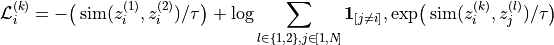
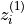
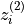
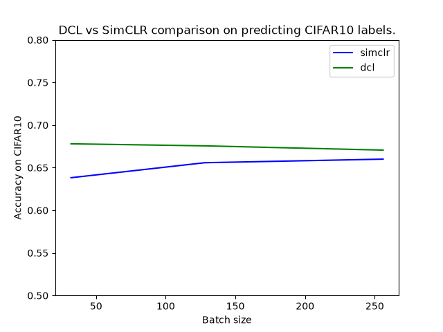

Note
Go to the end to download the full example code.
Decoupled Contrastive Learning¶
This tutorial illustrates the use of Decoupled Contrastive Learning (DCL) [1] which introduces a reformulation of the InfoNCE loss used in SimCLR [2] that removes the negative-positive coupling in the loss. This modification stabilizes optimization and improves performance, especially when training with small batch sizes.
In this tutorial, we will use the CIFAR10 dataset to train models based on DCL and SimCLR and compare their performances for different batch sizes using the nidl library.
We will follow these steps:
Load the CIFAR10 dataset.
Define the data augmentations for self-supervised training.
Define the DCL and SimCLR models.
Train the models for different batch sizes.
Compare the obtained representations on CIFAR10 test set with linear probing.
Setup¶
This notebook requires some packages besides nidl. Let’s first start with importing our standard libraries below:
import matplotlib.pyplot as plt
import numpy as np
import torch
from lightning_fabric import seed_everything
from sklearn.linear_model import LogisticRegression
from sklearn.metrics import accuracy_score
from torch import nn
from torch.utils.data import DataLoader, Subset
from torchvision import transforms
from torchvision.datasets import CIFAR10
from torchvision.models import resnet18
from nidl.estimators.ssl import DCL, SimCLR
from nidl.transforms.transforms import MultiViewsTransform
from nidl.utils.weights import Weights
We define some global parameters that will be used throughout the notebook. The parameter load_trained_models allows you to directly load the weights of the trained models from HuggingFace hub instead of training them directly in the notebook which takes time and resources (~3h on a NVIDIA RTX 4500 GPU).
Path where data should be downloaded
data_dir = "/tmp/cifar10"
# Whether to load the pretrained models or train them on your device
load_pretrained = True
# If loading model, directory where to save the weights
model_dir = "/tmp/nidl_example_dcl_vs_simclr"
# What accelerator to use: GPU if available, else CPU
accelerator = "gpu" if torch.cuda.is_available() else "cpu"
# Latent size of the representation
# /!\ If changing latent_size then you cannot load pretrained weights
latent_size = 128
# Number of workers (cpu cores) to use in dataloaders
num_workers = 4
# We fix the seed and generator for reproducibility
seed = 42
rd_generator = np.random.default_rng(seed=seed)
seed = seed_everything(seed)
Check parameters values
if latent_size != 128 and load_pretrained == True:
raise ValueError(
"Pretrained models have a latent size of 128 which can"
" not be modified. Set load_pretrained=True or"
" latent_size=128"
)
DCL Loss Function¶
The DCL loss function is based on InfoNCE and is defined as:

Where: -

and
are embeddings of two different augmented views of the same image - is the cosine similarity between normalized embeddings - is a temperature parameter controlling the concentration of the distribution - is an indicator function that ensures decouplingThe key idea in DCL is to remove the contribution of the positive pair from the log-sum-exp normalization term of the InfoNCE loss. In standard InfoNCE, this term creates an implicit coupling between positive and negative similarities, which can bias gradient estimates when the batch size is small. By decoupling these terms, DCL reduces this bias and leads to more stable contrastive learning.
#
# Data Preparation
# -----------------
#
# We'll use the CIFAR10 dataset, which contains 50,000 training images and
# 10,000 test images of 10 different classes. We'll apply standard scaling
# transforms, the test dataset will be used to evaluate the model performance
# on the classification task. We subsample the dataset for faster inference.
#
# Load CIFAR10 dataset with standard scaling
#
# We subsample the test dataset to run the notebook faster.
scale_transforms = transforms.Compose(
[transforms.ToTensor(), transforms.Normalize((0.5,), (0.5,))]
)
train_xy_dataset = CIFAR10(
data_dir, train=True, transform=scale_transforms, download=True
)
train_indices = rd_generator.choice(
np.arange(len(train_xy_dataset)), size=10000, replace=False
)
train_xy_dataset = Subset(train_xy_dataset, train_indices)
test_xy_dataset = CIFAR10(
data_dir, train=False, transform=scale_transforms, download=True
)
test_indices = rd_generator.choice(
np.arange(len(test_xy_dataset)), size=5000, replace=False
)
test_xy_dataset = Subset(test_xy_dataset, test_indices)
0%| | 0.00/170M [00:00<?, ?B/s]
0%| | 32.8k/170M [00:00<14:21, 198kB/s]
0%| | 65.5k/170M [00:00<21:12, 134kB/s]
0%| | 98.3k/170M [00:00<23:37, 120kB/s]
0%| | 131k/170M [00:01<33:21, 85.1kB/s]
0%| | 164k/170M [00:01<35:37, 79.7kB/s]
0%| | 197k/170M [00:02<33:49, 83.9kB/s]
0%| | 229k/170M [00:02<37:48, 75.1kB/s]
0%| | 262k/170M [00:03<35:21, 80.3kB/s]
0%| | 295k/170M [00:03<31:49, 89.1kB/s]
0%| | 328k/170M [00:03<27:44, 102kB/s]
0%| | 360k/170M [00:03<24:45, 115kB/s]
0%| | 393k/170M [00:03<21:05, 134kB/s]
0%| | 426k/170M [00:04<18:18, 155kB/s]
0%| | 459k/170M [00:04<18:34, 153kB/s]
0%| | 492k/170M [00:04<21:08, 134kB/s]
0%| | 524k/170M [00:04<22:50, 124kB/s]
0%| | 557k/170M [00:05<24:08, 117kB/s]
0%| | 590k/170M [00:05<25:02, 113kB/s]
0%| | 623k/170M [00:05<25:38, 110kB/s]
0%| | 655k/170M [00:06<25:55, 109kB/s]
0%| | 688k/170M [00:06<31:23, 90.1kB/s]
0%| | 721k/170M [00:07<33:53, 83.5kB/s]
0%| | 754k/170M [00:07<32:53, 86.0kB/s]
0%| | 786k/170M [00:07<30:06, 93.9kB/s]
0%| | 819k/170M [00:07<26:36, 106kB/s]
0%| | 852k/170M [00:08<23:29, 120kB/s]
1%| | 885k/170M [00:08<23:18, 121kB/s]
1%| | 918k/170M [00:08<29:38, 95.4kB/s]
1%| | 950k/170M [00:09<29:37, 95.4kB/s]
1%| | 983k/170M [00:09<27:52, 101kB/s]
1%| | 1.02M/170M [00:09<32:01, 88.2kB/s]
1%| | 1.05M/170M [00:10<34:17, 82.4kB/s]
1%| | 1.08M/170M [00:10<36:52, 76.6kB/s]
1%| | 1.11M/170M [00:11<39:44, 71.0kB/s]
1%| | 1.15M/170M [00:11<41:16, 68.4kB/s]
1%| | 1.18M/170M [00:12<42:54, 65.8kB/s]
1%| | 1.21M/170M [00:12<39:43, 71.0kB/s]
1%| | 1.25M/170M [00:13<34:44, 81.2kB/s]
1%| | 1.28M/170M [00:13<30:06, 93.7kB/s]
1%| | 1.31M/170M [00:13<25:58, 109kB/s]
1%| | 1.34M/170M [00:13<21:56, 128kB/s]
1%| | 1.38M/170M [00:14<25:27, 111kB/s]
1%| | 1.41M/170M [00:14<25:48, 109kB/s]
1%| | 1.44M/170M [00:14<26:10, 108kB/s]
1%| | 1.47M/170M [00:15<26:09, 108kB/s]
1%| | 1.51M/170M [00:15<26:39, 106kB/s]
1%| | 1.54M/170M [00:15<26:39, 106kB/s]
1%| | 1.57M/170M [00:16<26:53, 105kB/s]
1%| | 1.61M/170M [00:16<26:59, 104kB/s]
1%| | 1.64M/170M [00:16<30:37, 91.9kB/s]
1%| | 1.67M/170M [00:17<29:56, 94.0kB/s]
1%| | 1.70M/170M [00:17<25:41, 109kB/s]
1%| | 1.74M/170M [00:17<27:25, 103kB/s]
1%| | 1.77M/170M [00:17<27:12, 103kB/s]
1%| | 1.80M/170M [00:18<27:11, 103kB/s]
1%| | 1.84M/170M [00:18<28:25, 98.9kB/s]
1%| | 1.87M/170M [00:18<26:47, 105kB/s]
1%| | 1.90M/170M [00:20<47:25, 59.3kB/s]
1%| | 1.93M/170M [00:20<45:51, 61.3kB/s]
1%| | 1.97M/170M [00:20<41:02, 68.4kB/s]
1%| | 2.00M/170M [00:21<35:15, 79.6kB/s]
1%| | 2.03M/170M [00:21<29:55, 93.8kB/s]
1%| | 2.06M/170M [00:21<26:23, 106kB/s]
1%| | 2.10M/170M [00:21<24:05, 117kB/s]
1%| | 2.13M/170M [00:22<24:59, 112kB/s]
1%|▏ | 2.16M/170M [00:22<25:34, 110kB/s]
1%|▏ | 2.20M/170M [00:22<29:18, 95.7kB/s]
1%|▏ | 2.23M/170M [00:23<28:46, 97.5kB/s]
1%|▏ | 2.26M/170M [00:23<27:25, 102kB/s]
1%|▏ | 2.29M/170M [00:23<26:17, 107kB/s]
1%|▏ | 2.33M/170M [00:23<24:45, 113kB/s]
1%|▏ | 2.36M/170M [00:24<25:17, 111kB/s]
1%|▏ | 2.39M/170M [00:24<27:58, 100kB/s]
1%|▏ | 2.42M/170M [00:25<27:39, 101kB/s]
1%|▏ | 2.46M/170M [00:25<27:33, 102kB/s]
1%|▏ | 2.49M/170M [00:25<27:22, 102kB/s]
1%|▏ | 2.52M/170M [00:25<27:31, 102kB/s]
1%|▏ | 2.56M/170M [00:26<27:25, 102kB/s]
2%|▏ | 2.59M/170M [00:26<27:27, 102kB/s]
2%|▏ | 2.62M/170M [00:26<27:27, 102kB/s]
2%|▏ | 2.65M/170M [00:27<27:30, 102kB/s]
2%|▏ | 2.69M/170M [00:27<27:31, 102kB/s]
2%|▏ | 2.72M/170M [00:27<27:26, 102kB/s]
2%|▏ | 2.75M/170M [00:28<29:41, 94.2kB/s]
2%|▏ | 2.79M/170M [00:28<29:13, 95.6kB/s]
2%|▏ | 2.82M/170M [00:29<30:05, 92.9kB/s]
2%|▏ | 2.85M/170M [00:29<28:18, 98.7kB/s]
2%|▏ | 2.88M/170M [00:29<28:21, 98.5kB/s]
2%|▏ | 2.92M/170M [00:29<28:24, 98.3kB/s]
2%|▏ | 2.95M/170M [00:30<28:24, 98.3kB/s]
2%|▏ | 2.98M/170M [00:30<28:21, 98.4kB/s]
2%|▏ | 3.01M/170M [00:30<28:29, 98.0kB/s]
2%|▏ | 3.05M/170M [00:31<28:30, 97.9kB/s]
2%|▏ | 3.08M/170M [00:31<30:42, 90.9kB/s]
2%|▏ | 3.11M/170M [00:32<30:20, 92.0kB/s]
2%|▏ | 3.15M/170M [00:32<29:57, 93.1kB/s]
2%|▏ | 3.18M/170M [00:32<29:43, 93.8kB/s]
2%|▏ | 3.21M/170M [00:33<40:13, 69.3kB/s]
2%|▏ | 3.24M/170M [00:33<37:04, 75.2kB/s]
2%|▏ | 3.28M/170M [00:34<33:00, 84.4kB/s]
2%|▏ | 3.31M/170M [00:34<28:22, 98.2kB/s]
2%|▏ | 3.34M/170M [00:34<25:02, 111kB/s]
2%|▏ | 3.38M/170M [00:34<23:48, 117kB/s]
2%|▏ | 3.41M/170M [00:35<30:51, 90.3kB/s]
2%|▏ | 3.44M/170M [00:35<34:08, 81.5kB/s]
2%|▏ | 3.47M/170M [00:36<30:50, 90.3kB/s]
2%|▏ | 3.51M/170M [00:36<27:03, 103kB/s]
2%|▏ | 3.54M/170M [00:36<25:28, 109kB/s]
2%|▏ | 3.57M/170M [00:36<26:37, 105kB/s]
2%|▏ | 3.60M/170M [00:37<32:48, 84.8kB/s]
2%|▏ | 3.64M/170M [00:37<33:29, 83.0kB/s]
2%|▏ | 3.67M/170M [00:38<40:25, 68.8kB/s]
2%|▏ | 3.70M/170M [00:38<37:09, 74.8kB/s]
2%|▏ | 3.74M/170M [00:39<32:55, 84.4kB/s]
2%|▏ | 3.77M/170M [00:39<28:36, 97.1kB/s]
2%|▏ | 3.80M/170M [00:39<25:29, 109kB/s]
2%|▏ | 3.83M/170M [00:39<26:33, 105kB/s]
2%|▏ | 3.87M/170M [00:40<27:35, 101kB/s]
2%|▏ | 3.90M/170M [00:40<26:37, 104kB/s]
2%|▏ | 3.93M/170M [00:40<25:41, 108kB/s]
2%|▏ | 3.96M/170M [00:41<24:07, 115kB/s]
2%|▏ | 4.00M/170M [00:41<25:36, 108kB/s]
2%|▏ | 4.03M/170M [00:41<26:37, 104kB/s]
2%|▏ | 4.06M/170M [00:42<27:22, 101kB/s]
2%|▏ | 4.10M/170M [00:42<33:31, 82.7kB/s]
2%|▏ | 4.13M/170M [00:43<38:37, 71.8kB/s]
2%|▏ | 4.16M/170M [00:43<37:39, 73.6kB/s]
2%|▏ | 4.19M/170M [00:44<33:21, 83.1kB/s]
2%|▏ | 4.23M/170M [00:44<28:37, 96.8kB/s]
2%|▏ | 4.26M/170M [00:44<24:02, 115kB/s]
3%|▎ | 4.29M/170M [00:44<27:45, 99.8kB/s]
3%|▎ | 4.33M/170M [00:45<24:29, 113kB/s]
3%|▎ | 4.36M/170M [00:45<27:01, 102kB/s]
3%|▎ | 4.39M/170M [00:45<26:34, 104kB/s]
3%|▎ | 4.42M/170M [00:46<27:19, 101kB/s]
3%|▎ | 4.46M/170M [00:47<43:23, 63.8kB/s]
3%|▎ | 4.49M/170M [00:47<39:08, 70.7kB/s]
3%|▎ | 4.52M/170M [00:47<33:54, 81.6kB/s]
3%|▎ | 4.55M/170M [00:47<28:56, 95.6kB/s]
3%|▎ | 4.59M/170M [00:47<24:15, 114kB/s]
3%|▎ | 4.62M/170M [00:48<23:20, 118kB/s]
3%|▎ | 4.65M/170M [00:48<25:12, 110kB/s]
3%|▎ | 4.69M/170M [00:49<29:19, 94.3kB/s]
3%|▎ | 4.72M/170M [00:49<26:23, 105kB/s]
3%|▎ | 4.75M/170M [00:49<32:31, 84.9kB/s]
3%|▎ | 4.78M/170M [00:50<34:52, 79.2kB/s]
3%|▎ | 4.82M/170M [00:50<34:59, 78.9kB/s]
3%|▎ | 4.85M/170M [00:51<31:26, 87.8kB/s]
3%|▎ | 4.88M/170M [00:51<27:24, 101kB/s]
3%|▎ | 4.92M/170M [00:51<24:32, 112kB/s]
3%|▎ | 4.95M/170M [00:51<25:49, 107kB/s]
3%|▎ | 4.98M/170M [00:52<26:50, 103kB/s]
3%|▎ | 5.01M/170M [00:52<32:46, 84.2kB/s]
3%|▎ | 5.05M/170M [00:52<30:24, 90.7kB/s]
3%|▎ | 5.08M/170M [00:53<27:36, 99.9kB/s]
3%|▎ | 5.11M/170M [00:53<25:54, 106kB/s]
3%|▎ | 5.14M/170M [00:53<28:47, 95.7kB/s]
3%|▎ | 5.18M/170M [00:54<31:07, 88.5kB/s]
3%|▎ | 5.21M/170M [00:54<27:49, 99.0kB/s]
3%|▎ | 5.24M/170M [00:54<27:59, 98.4kB/s]
3%|▎ | 5.28M/170M [00:55<28:02, 98.2kB/s]
3%|▎ | 5.31M/170M [00:55<31:06, 88.5kB/s]
3%|▎ | 5.34M/170M [00:55<28:37, 96.2kB/s]
3%|▎ | 5.37M/170M [00:56<26:59, 102kB/s]
3%|▎ | 5.41M/170M [00:56<34:22, 80.0kB/s]
3%|▎ | 5.44M/170M [00:57<33:53, 81.2kB/s]
3%|▎ | 5.47M/170M [00:57<32:21, 85.0kB/s]
3%|▎ | 5.51M/170M [00:58<38:10, 72.0kB/s]
3%|▎ | 5.54M/170M [00:59<56:31, 48.6kB/s]
3%|▎ | 5.57M/170M [00:59<49:58, 55.0kB/s]
3%|▎ | 5.60M/170M [01:00<43:08, 63.7kB/s]
3%|▎ | 5.64M/170M [01:00<37:43, 72.8kB/s]
3%|▎ | 5.67M/170M [01:00<35:08, 78.2kB/s]
3%|▎ | 5.70M/170M [01:01<31:46, 86.4kB/s]
3%|▎ | 5.73M/170M [01:01<29:11, 94.1kB/s]
3%|▎ | 5.77M/170M [01:01<27:24, 100kB/s]
3%|▎ | 5.80M/170M [01:02<29:22, 93.4kB/s]
3%|▎ | 5.83M/170M [01:02<29:28, 93.1kB/s]
3%|▎ | 5.87M/170M [01:02<28:46, 95.3kB/s]
3%|▎ | 5.90M/170M [01:03<32:17, 85.0kB/s]
3%|▎ | 5.93M/170M [01:03<29:39, 92.5kB/s]
3%|▎ | 5.96M/170M [01:03<27:02, 101kB/s]
4%|▎ | 6.00M/170M [01:03<24:10, 113kB/s]
4%|▎ | 6.03M/170M [01:04<25:27, 108kB/s]
4%|▎ | 6.06M/170M [01:04<25:04, 109kB/s]
4%|▎ | 6.09M/170M [01:04<26:10, 105kB/s]
4%|▎ | 6.13M/170M [01:05<27:29, 99.7kB/s]
4%|▎ | 6.16M/170M [01:05<30:37, 89.5kB/s]
4%|▎ | 6.19M/170M [01:06<30:45, 89.0kB/s]
4%|▎ | 6.23M/170M [01:06<30:49, 88.8kB/s]
4%|▎ | 6.26M/170M [01:06<31:05, 88.0kB/s]
4%|▎ | 6.29M/170M [01:07<31:13, 87.6kB/s]
4%|▎ | 6.32M/170M [01:07<31:28, 86.9kB/s]
4%|▎ | 6.36M/170M [01:08<43:06, 63.5kB/s]
4%|▎ | 6.39M/170M [01:08<40:39, 67.3kB/s]
4%|▍ | 6.42M/170M [01:09<34:42, 78.8kB/s]
4%|▍ | 6.46M/170M [01:09<38:49, 70.4kB/s]
4%|▍ | 6.49M/170M [01:10<37:36, 72.7kB/s]
4%|▍ | 6.52M/170M [01:10<31:47, 86.0kB/s]
4%|▍ | 6.55M/170M [01:10<27:22, 99.8kB/s]
4%|▍ | 6.59M/170M [01:10<26:34, 103kB/s]
4%|▍ | 6.62M/170M [01:11<28:34, 95.6kB/s]
4%|▍ | 6.65M/170M [01:12<41:38, 65.6kB/s]
4%|▍ | 6.68M/170M [01:12<37:40, 72.5kB/s]
4%|▍ | 6.72M/170M [01:12<31:47, 85.9kB/s]
4%|▍ | 6.75M/170M [01:12<27:26, 99.5kB/s]
4%|▍ | 6.78M/170M [01:13<40:56, 66.6kB/s]
4%|▍ | 6.82M/170M [01:14<41:05, 66.4kB/s]
4%|▍ | 6.85M/170M [01:14<37:22, 73.0kB/s]
4%|▍ | 6.88M/170M [01:14<33:01, 82.6kB/s]
4%|▍ | 6.91M/170M [01:15<28:22, 96.1kB/s]
4%|▍ | 6.95M/170M [01:15<32:21, 84.2kB/s]
4%|▍ | 6.98M/170M [01:16<33:11, 82.1kB/s]
4%|▍ | 7.01M/170M [01:16<30:06, 90.5kB/s]
4%|▍ | 7.05M/170M [01:16<27:59, 97.3kB/s]
4%|▍ | 7.08M/170M [01:17<32:59, 82.6kB/s]
4%|▍ | 7.11M/170M [01:17<34:03, 80.0kB/s]
4%|▍ | 7.14M/170M [01:17<32:24, 84.0kB/s]
4%|▍ | 7.18M/170M [01:18<32:26, 83.9kB/s]
4%|▍ | 7.21M/170M [01:18<32:21, 84.1kB/s]
4%|▍ | 7.24M/170M [01:19<32:28, 83.8kB/s]
4%|▍ | 7.27M/170M [01:19<36:03, 75.5kB/s]
4%|▍ | 7.31M/170M [01:19<33:45, 80.6kB/s]
4%|▍ | 7.34M/170M [01:20<31:50, 85.4kB/s]
4%|▍ | 7.37M/170M [01:20<32:13, 84.4kB/s]
4%|▍ | 7.41M/170M [01:21<36:48, 73.9kB/s]
4%|▍ | 7.44M/170M [01:21<32:37, 83.3kB/s]
4%|▍ | 7.47M/170M [01:21<31:45, 85.5kB/s]
4%|▍ | 7.50M/170M [01:22<32:11, 84.4kB/s]
4%|▍ | 7.54M/170M [01:22<35:06, 77.4kB/s]
4%|▍ | 7.57M/170M [01:23<34:31, 78.6kB/s]
4%|▍ | 7.60M/170M [01:23<34:14, 79.3kB/s]
4%|▍ | 7.63M/170M [01:23<34:04, 79.7kB/s]
4%|▍ | 7.67M/170M [01:24<45:20, 59.8kB/s]
5%|▍ | 7.70M/170M [01:25<40:13, 67.5kB/s]
5%|▍ | 7.73M/170M [01:25<34:26, 78.8kB/s]
5%|▍ | 7.77M/170M [01:25<29:12, 92.9kB/s]
5%|▍ | 7.80M/170M [01:26<34:33, 78.5kB/s]
5%|▍ | 7.83M/170M [01:26<38:27, 70.5kB/s]
5%|▍ | 7.86M/170M [01:27<40:25, 67.1kB/s]
5%|▍ | 7.90M/170M [01:27<33:41, 80.4kB/s]
5%|▍ | 7.93M/170M [01:27<28:44, 94.3kB/s]
5%|▍ | 7.96M/170M [01:28<35:19, 76.7kB/s]
5%|▍ | 8.00M/170M [01:28<36:47, 73.6kB/s]
5%|▍ | 8.03M/170M [01:29<32:38, 83.0kB/s]
5%|▍ | 8.06M/170M [01:29<32:00, 84.6kB/s]
5%|▍ | 8.09M/170M [01:29<32:37, 83.0kB/s]
5%|▍ | 8.13M/170M [01:30<33:18, 81.3kB/s]
5%|▍ | 8.16M/170M [01:30<33:01, 81.9kB/s]
5%|▍ | 8.19M/170M [01:31<36:59, 73.1kB/s]
5%|▍ | 8.22M/170M [01:31<34:27, 78.5kB/s]
5%|▍ | 8.26M/170M [01:32<41:02, 65.9kB/s]
5%|▍ | 8.29M/170M [01:32<39:00, 69.3kB/s]
5%|▍ | 8.32M/170M [01:33<34:08, 79.2kB/s]
5%|▍ | 8.36M/170M [01:33<29:01, 93.1kB/s]
5%|▍ | 8.39M/170M [01:33<29:13, 92.5kB/s]
5%|▍ | 8.42M/170M [01:34<34:31, 78.3kB/s]
5%|▍ | 8.45M/170M [01:34<31:01, 87.0kB/s]
5%|▍ | 8.49M/170M [01:34<31:07, 86.7kB/s]
5%|▍ | 8.52M/170M [01:35<31:58, 84.4kB/s]
5%|▌ | 8.55M/170M [01:36<41:57, 64.3kB/s]
5%|▌ | 8.59M/170M [01:36<38:56, 69.3kB/s]
5%|▌ | 8.62M/170M [01:36<35:54, 75.1kB/s]
5%|▌ | 8.65M/170M [01:37<38:46, 69.6kB/s]
5%|▌ | 8.68M/170M [01:37<38:32, 70.0kB/s]
5%|▌ | 8.72M/170M [01:38<33:49, 79.7kB/s]
5%|▌ | 8.75M/170M [01:38<29:08, 92.5kB/s]
5%|▌ | 8.78M/170M [01:38<33:27, 80.6kB/s]
5%|▌ | 8.81M/170M [01:39<30:29, 88.4kB/s]
5%|▌ | 8.85M/170M [01:39<41:23, 65.1kB/s]
5%|▌ | 8.88M/170M [01:40<44:53, 60.0kB/s]
5%|▌ | 8.91M/170M [01:40<39:53, 67.5kB/s]
5%|▌ | 8.95M/170M [01:41<33:17, 80.9kB/s]
5%|▌ | 8.98M/170M [01:41<28:23, 94.8kB/s]
5%|▌ | 9.01M/170M [01:41<27:31, 97.8kB/s]
5%|▌ | 9.04M/170M [01:42<32:36, 82.5kB/s]
5%|▌ | 9.08M/170M [01:42<34:44, 77.4kB/s]
5%|▌ | 9.11M/170M [01:42<31:07, 86.4kB/s]
5%|▌ | 9.14M/170M [01:43<29:08, 92.3kB/s]
5%|▌ | 9.18M/170M [01:43<31:06, 86.4kB/s]
5%|▌ | 9.21M/170M [01:44<31:17, 85.9kB/s]
5%|▌ | 9.24M/170M [01:44<36:10, 74.3kB/s]
5%|▌ | 9.27M/170M [01:44<34:01, 79.0kB/s]
5%|▌ | 9.31M/170M [01:45<38:11, 70.3kB/s]
5%|▌ | 9.34M/170M [01:45<37:00, 72.6kB/s]
5%|▌ | 9.37M/170M [01:46<32:51, 81.7kB/s]
6%|▌ | 9.40M/170M [01:46<32:26, 82.8kB/s]
6%|▌ | 9.44M/170M [01:47<32:57, 81.4kB/s]
6%|▌ | 9.47M/170M [01:47<43:26, 61.8kB/s]
6%|▌ | 9.50M/170M [01:48<42:15, 63.5kB/s]
6%|▌ | 9.54M/170M [01:49<44:55, 59.7kB/s]
6%|▌ | 9.57M/170M [01:49<43:29, 61.7kB/s]
6%|▌ | 9.60M/170M [01:49<36:42, 73.0kB/s]
6%|▌ | 9.63M/170M [01:49<30:42, 87.3kB/s]
6%|▌ | 9.67M/170M [01:50<25:22, 106kB/s]
6%|▌ | 9.70M/170M [01:50<27:32, 97.3kB/s]
6%|▌ | 9.73M/170M [01:50<29:36, 90.5kB/s]
6%|▌ | 9.76M/170M [01:51<35:00, 76.5kB/s]
6%|▌ | 9.80M/170M [01:51<30:41, 87.2kB/s]
6%|▌ | 9.83M/170M [01:52<31:45, 84.3kB/s]
6%|▌ | 9.86M/170M [01:52<37:19, 71.7kB/s]
6%|▌ | 9.90M/170M [01:53<36:15, 73.8kB/s]
6%|▌ | 9.93M/170M [01:53<41:52, 63.9kB/s]
6%|▌ | 9.96M/170M [01:54<37:50, 70.7kB/s]
6%|▌ | 9.99M/170M [01:54<33:06, 80.8kB/s]
6%|▌ | 10.0M/170M [01:54<30:45, 87.0kB/s]
6%|▌ | 10.1M/170M [01:55<31:51, 83.9kB/s]
6%|▌ | 10.1M/170M [01:55<40:04, 66.7kB/s]
6%|▌ | 10.1M/170M [01:56<37:41, 70.9kB/s]
6%|▌ | 10.2M/170M [01:56<37:07, 72.0kB/s]
6%|▌ | 10.2M/170M [01:57<33:50, 79.0kB/s]
6%|▌ | 10.2M/170M [01:57<29:44, 89.8kB/s]
6%|▌ | 10.3M/170M [01:57<35:21, 75.5kB/s]
6%|▌ | 10.3M/170M [01:58<33:38, 79.4kB/s]
6%|▌ | 10.3M/170M [01:58<33:54, 78.7kB/s]
6%|▌ | 10.4M/170M [01:59<45:17, 58.9kB/s]
6%|▌ | 10.4M/170M [02:00<46:51, 57.0kB/s]
6%|▌ | 10.4M/170M [02:00<40:35, 65.7kB/s]
6%|▌ | 10.5M/170M [02:00<33:34, 79.4kB/s]
6%|▌ | 10.5M/170M [02:01<29:04, 91.7kB/s]
6%|▌ | 10.5M/170M [02:01<28:07, 94.8kB/s]
6%|▌ | 10.6M/170M [02:02<40:15, 66.2kB/s]
6%|▌ | 10.6M/170M [02:02<41:42, 63.9kB/s]
6%|▌ | 10.6M/170M [02:03<35:53, 74.2kB/s]
6%|▌ | 10.6M/170M [02:03<30:10, 88.3kB/s]
6%|▋ | 10.7M/170M [02:03<30:19, 87.8kB/s]
6%|▋ | 10.7M/170M [02:04<31:42, 84.0kB/s]
6%|▋ | 10.7M/170M [02:04<36:38, 72.7kB/s]
6%|▋ | 10.8M/170M [02:04<32:01, 83.1kB/s]
6%|▋ | 10.8M/170M [02:05<32:49, 81.1kB/s]
6%|▋ | 10.8M/170M [02:05<37:18, 71.3kB/s]
6%|▋ | 10.9M/170M [02:06<32:56, 80.8kB/s]
6%|▋ | 10.9M/170M [02:07<43:28, 61.2kB/s]
6%|▋ | 10.9M/170M [02:07<43:52, 60.6kB/s]
6%|▋ | 11.0M/170M [02:07<37:25, 71.0kB/s]
6%|▋ | 11.0M/170M [02:08<31:14, 85.1kB/s]
6%|▋ | 11.0M/170M [02:08<34:35, 76.8kB/s]
6%|▋ | 11.1M/170M [02:08<32:42, 81.3kB/s]
7%|▋ | 11.1M/170M [02:09<31:13, 85.1kB/s]
7%|▋ | 11.1M/170M [02:09<32:10, 82.5kB/s]
7%|▋ | 11.2M/170M [02:10<37:55, 70.0kB/s]
7%|▋ | 11.2M/170M [02:10<33:20, 79.6kB/s]
7%|▋ | 11.2M/170M [02:11<33:51, 78.4kB/s]
7%|▋ | 11.3M/170M [02:11<35:05, 75.6kB/s]
7%|▋ | 11.3M/170M [02:12<39:01, 68.0kB/s]
7%|▋ | 11.3M/170M [02:12<34:10, 77.6kB/s]
7%|▋ | 11.4M/170M [02:12<33:32, 79.1kB/s]
7%|▋ | 11.4M/170M [02:13<33:46, 78.5kB/s]
7%|▋ | 11.4M/170M [02:13<37:48, 70.1kB/s]
7%|▋ | 11.5M/170M [02:14<33:07, 80.0kB/s]
7%|▋ | 11.5M/170M [02:14<33:03, 80.1kB/s]
7%|▋ | 11.5M/170M [02:15<45:06, 58.7kB/s]
7%|▋ | 11.6M/170M [02:15<39:57, 66.3kB/s]
7%|▋ | 11.6M/170M [02:15<34:40, 76.4kB/s]
7%|▋ | 11.6M/170M [02:16<31:04, 85.2kB/s]
7%|▋ | 11.7M/170M [02:16<36:02, 73.5kB/s]
7%|▋ | 11.7M/170M [02:17<31:58, 82.8kB/s]
7%|▋ | 11.7M/170M [02:17<36:19, 72.8kB/s]
7%|▋ | 11.8M/170M [02:18<44:02, 60.1kB/s]
7%|▋ | 11.8M/170M [02:18<39:11, 67.5kB/s]
7%|▋ | 11.8M/170M [02:19<33:23, 79.2kB/s]
7%|▋ | 11.9M/170M [02:19<30:02, 88.0kB/s]
7%|▋ | 11.9M/170M [02:19<30:28, 86.7kB/s]
7%|▋ | 11.9M/170M [02:20<29:59, 88.1kB/s]
7%|▋ | 12.0M/170M [02:20<39:16, 67.3kB/s]
7%|▋ | 12.0M/170M [02:21<37:37, 70.2kB/s]
7%|▋ | 12.0M/170M [02:21<34:46, 76.0kB/s]
7%|▋ | 12.1M/170M [02:21<31:01, 85.1kB/s]
7%|▋ | 12.1M/170M [02:22<31:59, 82.5kB/s]
7%|▋ | 12.1M/170M [02:22<37:23, 70.6kB/s]
7%|▋ | 12.2M/170M [02:23<46:30, 56.8kB/s]
7%|▋ | 12.2M/170M [02:24<40:58, 64.4kB/s]
7%|▋ | 12.2M/170M [02:24<34:00, 77.6kB/s]
7%|▋ | 12.3M/170M [02:24<31:58, 82.5kB/s]
7%|▋ | 12.3M/170M [02:25<32:20, 81.5kB/s]
7%|▋ | 12.3M/170M [02:25<32:13, 81.8kB/s]
7%|▋ | 12.4M/170M [02:25<29:41, 88.8kB/s]
7%|▋ | 12.4M/170M [02:26<30:54, 85.3kB/s]
7%|▋ | 12.4M/170M [02:26<31:48, 82.8kB/s]
7%|▋ | 12.5M/170M [02:27<32:27, 81.1kB/s]
7%|▋ | 12.5M/170M [02:27<32:55, 80.0kB/s]
7%|▋ | 12.5M/170M [02:27<33:12, 79.3kB/s]
7%|▋ | 12.6M/170M [02:28<33:20, 78.9kB/s]
7%|▋ | 12.6M/170M [02:28<33:31, 78.5kB/s]
7%|▋ | 12.6M/170M [02:29<33:36, 78.3kB/s]
7%|▋ | 12.6M/170M [02:29<38:17, 68.7kB/s]
7%|▋ | 12.7M/170M [02:30<34:44, 75.7kB/s]
7%|▋ | 12.7M/170M [02:30<34:29, 76.3kB/s]
7%|▋ | 12.7M/170M [02:31<38:19, 68.6kB/s]
7%|▋ | 12.8M/170M [02:31<35:38, 73.8kB/s]
8%|▊ | 12.8M/170M [02:31<34:11, 76.9kB/s]
8%|▊ | 12.8M/170M [02:32<32:22, 81.1kB/s]
8%|▊ | 12.9M/170M [02:32<36:41, 71.6kB/s]
8%|▊ | 12.9M/170M [02:33<38:24, 68.4kB/s]
8%|▊ | 12.9M/170M [02:33<35:10, 74.6kB/s]
8%|▊ | 13.0M/170M [02:34<32:33, 80.6kB/s]
8%|▊ | 13.0M/170M [02:34<40:13, 65.3kB/s]
8%|▊ | 13.0M/170M [02:35<35:46, 73.3kB/s]
8%|▊ | 13.1M/170M [02:35<34:11, 76.8kB/s]
8%|▊ | 13.1M/170M [02:36<40:12, 65.2kB/s]
8%|▊ | 13.1M/170M [02:36<44:40, 58.7kB/s]
8%|▊ | 13.2M/170M [02:37<39:32, 66.3kB/s]
8%|▊ | 13.2M/170M [02:37<34:18, 76.4kB/s]
8%|▊ | 13.2M/170M [02:37<35:36, 73.6kB/s]
8%|▊ | 13.3M/170M [02:38<38:59, 67.2kB/s]
8%|▊ | 13.3M/170M [02:38<35:01, 74.8kB/s]
8%|▊ | 13.3M/170M [02:39<31:42, 82.6kB/s]
8%|▊ | 13.4M/170M [02:39<27:04, 96.7kB/s]
8%|▊ | 13.4M/170M [02:39<23:55, 109kB/s]
8%|▊ | 13.4M/170M [02:39<26:40, 98.2kB/s]
8%|▊ | 13.5M/170M [02:40<28:34, 91.6kB/s]
8%|▊ | 13.5M/170M [02:40<29:54, 87.5kB/s]
8%|▊ | 13.5M/170M [02:41<30:45, 85.1kB/s]
8%|▊ | 13.6M/170M [02:41<31:17, 83.6kB/s]
8%|▊ | 13.6M/170M [02:42<31:44, 82.4kB/s]
8%|▊ | 13.6M/170M [02:42<37:33, 69.6kB/s]
8%|▊ | 13.7M/170M [02:43<36:08, 72.3kB/s]
8%|▊ | 13.7M/170M [02:43<31:53, 81.9kB/s]
8%|▊ | 13.7M/170M [02:43<36:43, 71.1kB/s]
8%|▊ | 13.8M/170M [02:44<33:52, 77.1kB/s]
8%|▊ | 13.8M/170M [02:44<33:48, 77.2kB/s]
8%|▊ | 13.8M/170M [02:44<30:33, 85.4kB/s]
8%|▊ | 13.9M/170M [02:45<36:18, 71.9kB/s]
8%|▊ | 13.9M/170M [02:45<33:35, 77.7kB/s]
8%|▊ | 13.9M/170M [02:46<29:59, 87.0kB/s]
8%|▊ | 14.0M/170M [02:46<29:54, 87.2kB/s]
8%|▊ | 14.0M/170M [02:47<30:46, 84.8kB/s]
8%|▊ | 14.0M/170M [02:47<40:12, 64.8kB/s]
8%|▊ | 14.1M/170M [02:48<38:03, 68.5kB/s]
8%|▊ | 14.1M/170M [02:48<36:40, 71.1kB/s]
8%|▊ | 14.1M/170M [02:48<32:14, 80.8kB/s]
8%|▊ | 14.2M/170M [02:49<28:31, 91.3kB/s]
8%|▊ | 14.2M/170M [02:49<35:18, 73.8kB/s]
8%|▊ | 14.2M/170M [02:50<32:53, 79.2kB/s]
8%|▊ | 14.3M/170M [02:50<31:13, 83.4kB/s]
8%|▊ | 14.3M/170M [02:51<35:52, 72.6kB/s]
8%|▊ | 14.3M/170M [02:51<31:45, 82.0kB/s]
8%|▊ | 14.4M/170M [02:51<30:33, 85.1kB/s]
8%|▊ | 14.4M/170M [02:52<31:00, 83.9kB/s]
8%|▊ | 14.4M/170M [02:52<36:11, 71.9kB/s]
8%|▊ | 14.5M/170M [02:53<32:03, 81.1kB/s]
8%|▊ | 14.5M/170M [02:53<30:12, 86.1kB/s]
9%|▊ | 14.5M/170M [02:53<33:55, 76.6kB/s]
9%|▊ | 14.5M/170M [02:54<31:53, 81.5kB/s]
9%|▊ | 14.6M/170M [02:54<30:17, 85.8kB/s]
9%|▊ | 14.6M/170M [02:55<32:23, 80.2kB/s]
9%|▊ | 14.6M/170M [02:55<41:37, 62.4kB/s]
9%|▊ | 14.7M/170M [02:56<45:45, 56.8kB/s]
9%|▊ | 14.7M/170M [02:56<40:13, 64.6kB/s]
9%|▊ | 14.7M/170M [02:57<34:41, 74.8kB/s]
9%|▊ | 14.8M/170M [02:57<31:14, 83.1kB/s]
9%|▊ | 14.8M/170M [02:57<27:45, 93.5kB/s]
9%|▊ | 14.8M/170M [02:57<24:31, 106kB/s]
9%|▊ | 14.9M/170M [02:58<26:32, 97.7kB/s]
9%|▊ | 14.9M/170M [02:58<28:09, 92.1kB/s]
9%|▉ | 14.9M/170M [02:59<29:09, 88.9kB/s]
9%|▉ | 15.0M/170M [02:59<30:40, 84.5kB/s]
9%|▉ | 15.0M/170M [02:59<30:25, 85.2kB/s]
9%|▉ | 15.0M/170M [03:00<37:14, 69.6kB/s]
9%|▉ | 15.1M/170M [03:00<33:16, 77.8kB/s]
9%|▉ | 15.1M/170M [03:01<35:26, 73.1kB/s]
9%|▉ | 15.1M/170M [03:01<31:22, 82.5kB/s]
9%|▉ | 15.2M/170M [03:02<35:27, 73.0kB/s]
9%|▉ | 15.2M/170M [03:02<32:55, 78.6kB/s]
9%|▉ | 15.2M/170M [03:03<33:14, 77.8kB/s]
9%|▉ | 15.3M/170M [03:03<30:14, 85.5kB/s]
9%|▉ | 15.3M/170M [03:03<30:33, 84.6kB/s]
9%|▉ | 15.3M/170M [03:04<41:55, 61.7kB/s]
9%|▉ | 15.4M/170M [03:04<39:03, 66.2kB/s]
9%|▉ | 15.4M/170M [03:05<33:13, 77.8kB/s]
9%|▉ | 15.4M/170M [03:05<28:07, 91.9kB/s]
9%|▉ | 15.5M/170M [03:05<28:52, 89.5kB/s]
9%|▉ | 15.5M/170M [03:06<29:59, 86.1kB/s]
9%|▉ | 15.5M/170M [03:06<30:40, 84.2kB/s]
9%|▉ | 15.6M/170M [03:07<31:11, 82.8kB/s]
9%|▉ | 15.6M/170M [03:07<31:32, 81.8kB/s]
9%|▉ | 15.6M/170M [03:08<36:27, 70.8kB/s]
9%|▉ | 15.7M/170M [03:08<33:38, 76.7kB/s]
9%|▉ | 15.7M/170M [03:08<30:03, 85.8kB/s]
9%|▉ | 15.7M/170M [03:09<33:05, 77.9kB/s]
9%|▉ | 15.8M/170M [03:09<39:53, 64.6kB/s]
9%|▉ | 15.8M/170M [03:10<37:08, 69.4kB/s]
9%|▉ | 15.8M/170M [03:10<32:25, 79.5kB/s]
9%|▉ | 15.9M/170M [03:10<28:50, 89.3kB/s]
9%|▉ | 15.9M/170M [03:11<29:45, 86.6kB/s]
9%|▉ | 15.9M/170M [03:11<30:30, 84.5kB/s]
9%|▉ | 16.0M/170M [03:12<30:56, 83.2kB/s]
9%|▉ | 16.0M/170M [03:12<32:44, 78.7kB/s]
9%|▉ | 16.0M/170M [03:12<30:55, 83.2kB/s]
9%|▉ | 16.1M/170M [03:13<33:33, 76.7kB/s]
9%|▉ | 16.1M/170M [03:13<33:05, 77.8kB/s]
9%|▉ | 16.1M/170M [03:14<32:42, 78.7kB/s]
9%|▉ | 16.2M/170M [03:14<32:23, 79.4kB/s]
9%|▉ | 16.2M/170M [03:14<32:14, 79.8kB/s]
10%|▉ | 16.2M/170M [03:15<32:02, 80.3kB/s]
10%|▉ | 16.3M/170M [03:15<31:54, 80.6kB/s]
10%|▉ | 16.3M/170M [03:16<31:47, 80.8kB/s]
10%|▉ | 16.3M/170M [03:16<31:45, 80.9kB/s]
10%|▉ | 16.4M/170M [03:17<31:39, 81.2kB/s]
10%|▉ | 16.4M/170M [03:17<31:41, 81.0kB/s]
10%|▉ | 16.4M/170M [03:17<33:59, 75.5kB/s]
10%|▉ | 16.4M/170M [03:18<33:11, 77.3kB/s]
10%|▉ | 16.5M/170M [03:18<35:50, 71.6kB/s]
10%|▉ | 16.5M/170M [03:19<31:39, 81.1kB/s]
10%|▉ | 16.5M/170M [03:19<31:21, 81.8kB/s]
10%|▉ | 16.6M/170M [03:19<31:26, 81.6kB/s]
10%|▉ | 16.6M/170M [03:20<31:26, 81.6kB/s]
10%|▉ | 16.6M/170M [03:20<31:27, 81.5kB/s]
10%|▉ | 16.7M/170M [03:21<31:24, 81.6kB/s]
10%|▉ | 16.7M/170M [03:21<31:13, 82.1kB/s]
10%|▉ | 16.7M/170M [03:22<33:30, 76.5kB/s]
10%|▉ | 16.8M/170M [03:22<32:43, 78.3kB/s]
10%|▉ | 16.8M/170M [03:22<32:12, 79.5kB/s]
10%|▉ | 16.8M/170M [03:23<35:42, 71.7kB/s]
10%|▉ | 16.9M/170M [03:23<31:26, 81.4kB/s]
10%|▉ | 16.9M/170M [03:24<30:16, 84.6kB/s]
10%|▉ | 16.9M/170M [03:24<30:32, 83.8kB/s]
10%|▉ | 17.0M/170M [03:24<30:41, 83.4kB/s]
10%|▉ | 17.0M/170M [03:25<30:48, 83.0kB/s]
10%|▉ | 17.0M/170M [03:25<30:50, 82.9kB/s]
10%|█ | 17.1M/170M [03:26<36:57, 69.2kB/s]
10%|█ | 17.1M/170M [03:26<33:51, 75.5kB/s]
10%|█ | 17.1M/170M [03:26<30:34, 83.6kB/s]
10%|█ | 17.2M/170M [03:27<33:00, 77.4kB/s]
10%|█ | 17.2M/170M [03:27<30:00, 85.1kB/s]
10%|█ | 17.2M/170M [03:28<30:20, 84.2kB/s]
10%|█ | 17.3M/170M [03:28<30:28, 83.8kB/s]
10%|█ | 17.3M/170M [03:28<30:45, 83.0kB/s]
10%|█ | 17.3M/170M [03:29<30:50, 82.8kB/s]
10%|█ | 17.4M/170M [03:29<36:21, 70.2kB/s]
10%|█ | 17.4M/170M [03:30<34:41, 73.6kB/s]
10%|█ | 17.4M/170M [03:30<30:58, 82.3kB/s]
10%|█ | 17.5M/170M [03:30<30:40, 83.1kB/s]
10%|█ | 17.5M/170M [03:31<30:49, 82.7kB/s]
10%|█ | 17.5M/170M [03:31<30:56, 82.4kB/s]
10%|█ | 17.6M/170M [03:32<33:26, 76.2kB/s]
10%|█ | 17.6M/170M [03:32<30:18, 84.1kB/s]
10%|█ | 17.6M/170M [03:32<30:40, 83.1kB/s]
10%|█ | 17.7M/170M [03:33<35:32, 71.7kB/s]
10%|█ | 17.7M/170M [03:34<34:30, 73.8kB/s]
10%|█ | 17.7M/170M [03:34<30:12, 84.3kB/s]
10%|█ | 17.8M/170M [03:34<36:01, 70.7kB/s]
10%|█ | 17.8M/170M [03:35<33:21, 76.3kB/s]
10%|█ | 17.8M/170M [03:35<29:46, 85.5kB/s]
10%|█ | 17.9M/170M [03:36<34:07, 74.5kB/s]
10%|█ | 17.9M/170M [03:36<35:05, 72.5kB/s]
11%|█ | 17.9M/170M [03:36<30:58, 82.1kB/s]
11%|█ | 18.0M/170M [03:37<29:26, 86.3kB/s]
11%|█ | 18.0M/170M [03:37<30:24, 83.6kB/s]
11%|█ | 18.0M/170M [03:38<31:10, 81.5kB/s]
11%|█ | 18.1M/170M [03:38<31:44, 80.0kB/s]
11%|█ | 18.1M/170M [03:39<35:09, 72.2kB/s]
11%|█ | 18.1M/170M [03:39<33:56, 74.8kB/s]
11%|█ | 18.2M/170M [03:39<33:44, 75.2kB/s]
11%|█ | 18.2M/170M [03:40<36:36, 69.3kB/s]
11%|█ | 18.2M/170M [03:40<33:38, 75.4kB/s]
11%|█ | 18.3M/170M [03:41<42:06, 60.3kB/s]
11%|█ | 18.3M/170M [03:42<40:40, 62.4kB/s]
11%|█ | 18.3M/170M [03:42<34:52, 72.7kB/s]
11%|█ | 18.4M/170M [03:42<29:15, 86.7kB/s]
11%|█ | 18.4M/170M [03:42<28:28, 89.0kB/s]
11%|█ | 18.4M/170M [03:43<29:56, 84.7kB/s]
11%|█ | 18.4M/170M [03:44<37:24, 67.7kB/s]
11%|█ | 18.5M/170M [03:44<33:01, 76.7kB/s]
11%|█ | 18.5M/170M [03:44<32:25, 78.1kB/s]
11%|█ | 18.5M/170M [03:45<32:49, 77.2kB/s]
11%|█ | 18.6M/170M [03:45<32:56, 76.9kB/s]
11%|█ | 18.6M/170M [03:46<42:42, 59.3kB/s]
11%|█ | 18.6M/170M [03:46<41:01, 61.7kB/s]
11%|█ | 18.7M/170M [03:47<35:07, 72.0kB/s]
11%|█ | 18.7M/170M [03:47<29:27, 85.9kB/s]
11%|█ | 18.7M/170M [03:47<28:24, 89.0kB/s]
11%|█ | 18.8M/170M [03:48<34:31, 73.2kB/s]
11%|█ | 18.8M/170M [03:48<33:31, 75.4kB/s]
11%|█ | 18.8M/170M [03:49<32:01, 78.9kB/s]
11%|█ | 18.9M/170M [03:49<32:21, 78.1kB/s]
11%|█ | 18.9M/170M [03:50<42:54, 58.9kB/s]
11%|█ | 18.9M/170M [03:51<45:22, 55.7kB/s]
11%|█ | 19.0M/170M [03:51<39:46, 63.5kB/s]
11%|█ | 19.0M/170M [03:51<34:08, 74.0kB/s]
11%|█ | 19.0M/170M [03:51<28:39, 88.1kB/s]
11%|█ | 19.1M/170M [03:52<25:09, 100kB/s]
11%|█ | 19.1M/170M [03:52<33:33, 75.2kB/s]
11%|█ | 19.1M/170M [03:53<33:10, 76.1kB/s]
11%|█ | 19.2M/170M [03:53<33:47, 74.6kB/s]
11%|█▏ | 19.2M/170M [03:54<33:50, 74.5kB/s]
11%|█▏ | 19.2M/170M [03:54<34:27, 73.2kB/s]
11%|█▏ | 19.3M/170M [03:54<30:36, 82.4kB/s]
11%|█▏ | 19.3M/170M [03:55<35:37, 70.7kB/s]
11%|█▏ | 19.3M/170M [03:56<36:05, 69.8kB/s]
11%|█▏ | 19.4M/170M [03:56<31:36, 79.7kB/s]
11%|█▏ | 19.4M/170M [03:56<36:20, 69.3kB/s]
11%|█▏ | 19.4M/170M [03:57<38:09, 66.0kB/s]
11%|█▏ | 19.5M/170M [03:57<34:47, 72.3kB/s]
11%|█▏ | 19.5M/170M [03:58<29:11, 86.2kB/s]
11%|█▏ | 19.5M/170M [03:58<30:03, 83.7kB/s]
11%|█▏ | 19.6M/170M [03:58<30:59, 81.2kB/s]
11%|█▏ | 19.6M/170M [03:59<31:28, 79.9kB/s]
12%|█▏ | 19.6M/170M [03:59<31:53, 78.8kB/s]
12%|█▏ | 19.7M/170M [04:00<32:06, 78.3kB/s]
12%|█▏ | 19.7M/170M [04:00<32:16, 77.9kB/s]
12%|█▏ | 19.7M/170M [04:00<32:09, 78.1kB/s]
12%|█▏ | 19.8M/170M [04:01<31:52, 78.8kB/s]
12%|█▏ | 19.8M/170M [04:01<31:36, 79.5kB/s]
12%|█▏ | 19.8M/170M [04:02<33:32, 74.9kB/s]
12%|█▏ | 19.9M/170M [04:02<38:44, 64.8kB/s]
12%|█▏ | 19.9M/170M [04:03<34:19, 73.1kB/s]
12%|█▏ | 19.9M/170M [04:03<28:44, 87.3kB/s]
12%|█▏ | 20.0M/170M [04:03<28:32, 87.9kB/s]
12%|█▏ | 20.0M/170M [04:04<35:46, 70.1kB/s]
12%|█▏ | 20.0M/170M [04:04<32:21, 77.5kB/s]
12%|█▏ | 20.1M/170M [04:05<28:52, 86.8kB/s]
12%|█▏ | 20.1M/170M [04:05<25:26, 98.5kB/s]
12%|█▏ | 20.1M/170M [04:05<30:55, 81.0kB/s]
12%|█▏ | 20.2M/170M [04:06<30:53, 81.1kB/s]
12%|█▏ | 20.2M/170M [04:06<27:13, 92.0kB/s]
12%|█▏ | 20.2M/170M [04:06<27:11, 92.1kB/s]
12%|█▏ | 20.3M/170M [04:07<30:50, 81.2kB/s]
12%|█▏ | 20.3M/170M [04:07<26:41, 93.8kB/s]
12%|█▏ | 20.3M/170M [04:08<26:29, 94.5kB/s]
12%|█▏ | 20.3M/170M [04:08<37:15, 67.2kB/s]
12%|█▏ | 20.4M/170M [04:09<35:24, 70.6kB/s]
12%|█▏ | 20.4M/170M [04:09<30:55, 80.9kB/s]
12%|█▏ | 20.4M/170M [04:09<26:17, 95.1kB/s]
12%|█▏ | 20.5M/170M [04:09<21:39, 115kB/s]
12%|█▏ | 20.5M/170M [04:10<22:47, 110kB/s]
12%|█▏ | 20.5M/170M [04:10<23:40, 106kB/s]
12%|█▏ | 20.6M/170M [04:10<24:07, 104kB/s]
12%|█▏ | 20.6M/170M [04:11<24:22, 102kB/s]
12%|█▏ | 20.6M/170M [04:11<24:36, 101kB/s]
12%|█▏ | 20.7M/170M [04:11<24:28, 102kB/s]
12%|█▏ | 20.7M/170M [04:12<24:28, 102kB/s]
12%|█▏ | 20.7M/170M [04:12<29:22, 85.0kB/s]
12%|█▏ | 20.8M/170M [04:12<27:18, 91.4kB/s]
12%|█▏ | 20.8M/170M [04:13<26:55, 92.6kB/s]
12%|█▏ | 20.8M/170M [04:13<26:37, 93.7kB/s]
12%|█▏ | 20.9M/170M [04:13<23:26, 106kB/s]
12%|█▏ | 20.9M/170M [04:14<24:33, 101kB/s]
12%|█▏ | 20.9M/170M [04:14<24:55, 100kB/s]
12%|█▏ | 21.0M/170M [04:14<22:14, 112kB/s]
12%|█▏ | 21.0M/170M [04:15<21:25, 116kB/s]
12%|█▏ | 21.0M/170M [04:15<25:01, 99.6kB/s]
12%|█▏ | 21.1M/170M [04:15<27:16, 91.3kB/s]
12%|█▏ | 21.1M/170M [04:16<26:59, 92.3kB/s]
12%|█▏ | 21.1M/170M [04:16<25:02, 99.4kB/s]
12%|█▏ | 21.2M/170M [04:16<23:39, 105kB/s]
12%|█▏ | 21.2M/170M [04:16<19:55, 125kB/s]
12%|█▏ | 21.2M/170M [04:17<20:36, 121kB/s]
12%|█▏ | 21.3M/170M [04:17<21:15, 117kB/s]
12%|█▏ | 21.3M/170M [04:18<29:06, 85.4kB/s]
13%|█▎ | 21.3M/170M [04:18<28:06, 88.5kB/s]
13%|█▎ | 21.4M/170M [04:18<25:55, 95.9kB/s]
13%|█▎ | 21.4M/170M [04:18<21:29, 116kB/s]
13%|█▎ | 21.4M/170M [04:19<19:38, 126kB/s]
13%|█▎ | 21.5M/170M [04:19<17:41, 140kB/s]
13%|█▎ | 21.5M/170M [04:19<18:54, 131kB/s]
13%|█▎ | 21.5M/170M [04:19<21:29, 116kB/s]
13%|█▎ | 21.6M/170M [04:20<21:33, 115kB/s]
13%|█▎ | 21.6M/170M [04:20<25:51, 96.0kB/s]
13%|█▎ | 21.6M/170M [04:20<23:50, 104kB/s]
13%|█▎ | 21.7M/170M [04:21<21:18, 116kB/s]
13%|█▎ | 21.7M/170M [04:21<19:48, 125kB/s]
13%|█▎ | 21.7M/170M [04:21<20:22, 122kB/s]
13%|█▎ | 21.8M/170M [04:21<20:43, 120kB/s]
13%|█▎ | 21.8M/170M [04:22<26:54, 92.1kB/s]
13%|█▎ | 21.8M/170M [04:22<26:32, 93.4kB/s]
13%|█▎ | 21.9M/170M [04:23<25:46, 96.1kB/s]
13%|█▎ | 21.9M/170M [04:23<22:39, 109kB/s]
13%|█▎ | 21.9M/170M [04:23<19:04, 130kB/s]
13%|█▎ | 22.0M/170M [04:23<18:20, 135kB/s]
13%|█▎ | 22.0M/170M [04:24<26:45, 92.5kB/s]
13%|█▎ | 22.0M/170M [04:24<25:06, 98.6kB/s]
13%|█▎ | 22.1M/170M [04:24<23:16, 106kB/s]
13%|█▎ | 22.1M/170M [04:25<20:53, 118kB/s]
13%|█▎ | 22.1M/170M [04:25<17:51, 138kB/s]
13%|█▎ | 22.2M/170M [04:25<16:52, 146kB/s]
13%|█▎ | 22.2M/170M [04:25<18:17, 135kB/s]
13%|█▎ | 22.2M/170M [04:26<20:41, 119kB/s]
13%|█▎ | 22.2M/170M [04:26<25:14, 97.9kB/s]
13%|█▎ | 22.3M/170M [04:27<29:26, 83.9kB/s]
13%|█▎ | 22.3M/170M [04:27<26:46, 92.3kB/s]
13%|█▎ | 22.3M/170M [04:27<23:26, 105kB/s]
13%|█▎ | 22.4M/170M [04:27<20:34, 120kB/s]
13%|█▎ | 22.4M/170M [04:27<17:55, 138kB/s]
13%|█▎ | 22.4M/170M [04:27<15:43, 157kB/s]
13%|█▎ | 22.5M/170M [04:28<16:47, 147kB/s]
13%|█▎ | 22.5M/170M [04:28<22:27, 110kB/s]
13%|█▎ | 22.5M/170M [04:29<24:59, 98.7kB/s]
13%|█▎ | 22.6M/170M [04:29<23:09, 106kB/s]
13%|█▎ | 22.6M/170M [04:29<20:53, 118kB/s]
13%|█▎ | 22.6M/170M [04:29<19:07, 129kB/s]
13%|█▎ | 22.7M/170M [04:29<17:29, 141kB/s]
13%|█▎ | 22.7M/170M [04:30<21:35, 114kB/s]
13%|█▎ | 22.7M/170M [04:30<23:58, 103kB/s]
13%|█▎ | 22.8M/170M [04:31<22:52, 108kB/s]
13%|█▎ | 22.8M/170M [04:31<20:34, 120kB/s]
13%|█▎ | 22.8M/170M [04:31<17:35, 140kB/s]
13%|█▎ | 22.9M/170M [04:31<19:15, 128kB/s]
13%|█▎ | 22.9M/170M [04:31<19:43, 125kB/s]
13%|█▎ | 22.9M/170M [04:32<19:57, 123kB/s]
13%|█▎ | 23.0M/170M [04:32<24:37, 99.8kB/s]
13%|█▎ | 23.0M/170M [04:33<28:47, 85.4kB/s]
14%|█▎ | 23.0M/170M [04:33<26:19, 93.3kB/s]
14%|█▎ | 23.1M/170M [04:33<23:07, 106kB/s]
14%|█▎ | 23.1M/170M [04:33<20:39, 119kB/s]
14%|█▎ | 23.1M/170M [04:34<19:27, 126kB/s]
14%|█▎ | 23.2M/170M [04:34<19:25, 126kB/s]
14%|█▎ | 23.2M/170M [04:34<19:43, 124kB/s]
14%|█▎ | 23.2M/170M [04:34<19:42, 125kB/s]
14%|█▎ | 23.3M/170M [04:35<17:15, 142kB/s]
14%|█▎ | 23.3M/170M [04:35<17:59, 136kB/s]
14%|█▎ | 23.3M/170M [04:35<18:44, 131kB/s]
14%|█▎ | 23.4M/170M [04:35<19:12, 128kB/s]
14%|█▎ | 23.4M/170M [04:36<19:29, 126kB/s]
14%|█▎ | 23.4M/170M [04:36<28:59, 84.6kB/s]
14%|█▍ | 23.5M/170M [04:37<28:05, 87.3kB/s]
14%|█▍ | 23.5M/170M [04:37<26:42, 91.7kB/s]
14%|█▍ | 23.5M/170M [04:37<22:32, 109kB/s]
14%|█▍ | 23.6M/170M [04:37<21:38, 113kB/s]
14%|█▍ | 23.6M/170M [04:38<18:20, 134kB/s]
14%|█▍ | 23.6M/170M [04:38<15:54, 154kB/s]
14%|█▍ | 23.7M/170M [04:38<14:26, 169kB/s]
14%|█▍ | 23.7M/170M [04:38<19:04, 128kB/s]
14%|█▍ | 23.7M/170M [04:39<23:51, 103kB/s]
14%|█▍ | 23.8M/170M [04:39<22:49, 107kB/s]
14%|█▍ | 23.8M/170M [04:39<20:35, 119kB/s]
14%|█▍ | 23.8M/170M [04:40<20:31, 119kB/s]
14%|█▍ | 23.9M/170M [04:40<17:27, 140kB/s]
14%|█▍ | 23.9M/170M [04:40<15:37, 156kB/s]
14%|█▍ | 23.9M/170M [04:40<18:52, 129kB/s]
14%|█▍ | 24.0M/170M [04:40<17:49, 137kB/s]
14%|█▍ | 24.0M/170M [04:41<19:39, 124kB/s]
14%|█▍ | 24.0M/170M [04:41<19:01, 128kB/s]
14%|█▍ | 24.1M/170M [04:41<18:50, 130kB/s]
14%|█▍ | 24.1M/170M [04:42<22:11, 110kB/s]
14%|█▍ | 24.1M/170M [04:42<23:10, 105kB/s]
14%|█▍ | 24.2M/170M [04:42<22:04, 111kB/s]
14%|█▍ | 24.2M/170M [04:42<19:48, 123kB/s]
14%|█▍ | 24.2M/170M [04:43<17:20, 141kB/s]
14%|█▍ | 24.2M/170M [04:43<18:37, 131kB/s]
14%|█▍ | 24.3M/170M [04:43<18:50, 129kB/s]
14%|█▍ | 24.3M/170M [04:43<19:06, 128kB/s]
14%|█▍ | 24.3M/170M [04:44<19:19, 126kB/s]
14%|█▍ | 24.4M/170M [04:44<19:35, 124kB/s]
14%|█▍ | 24.4M/170M [04:44<20:58, 116kB/s]
14%|█▍ | 24.4M/170M [04:45<22:31, 108kB/s]
14%|█▍ | 24.5M/170M [04:45<21:48, 112kB/s]
14%|█▍ | 24.5M/170M [04:45<19:51, 123kB/s]
14%|█▍ | 24.5M/170M [04:45<17:40, 138kB/s]
14%|█▍ | 24.6M/170M [04:45<18:33, 131kB/s]
14%|█▍ | 24.6M/170M [04:46<24:41, 98.5kB/s]
14%|█▍ | 24.6M/170M [04:47<28:38, 84.9kB/s]
14%|█▍ | 24.7M/170M [04:47<26:16, 92.5kB/s]
14%|█▍ | 24.7M/170M [04:47<22:56, 106kB/s]
15%|█▍ | 24.7M/170M [04:47<20:40, 118kB/s]
15%|█▍ | 24.8M/170M [04:47<20:31, 118kB/s]
15%|█▍ | 24.8M/170M [04:48<21:34, 113kB/s]
15%|█▍ | 24.8M/170M [04:48<21:41, 112kB/s]
15%|█▍ | 24.9M/170M [04:48<19:24, 125kB/s]
15%|█▍ | 24.9M/170M [04:49<19:46, 123kB/s]
15%|█▍ | 24.9M/170M [04:49<19:50, 122kB/s]
15%|█▍ | 25.0M/170M [04:49<17:06, 142kB/s]
15%|█▍ | 25.0M/170M [04:49<15:12, 160kB/s]
15%|█▍ | 25.0M/170M [04:49<16:09, 150kB/s]
15%|█▍ | 25.1M/170M [04:50<17:23, 139kB/s]
15%|█▍ | 25.1M/170M [04:50<18:07, 134kB/s]
15%|█▍ | 25.1M/170M [04:50<19:59, 121kB/s]
15%|█▍ | 25.2M/170M [04:51<21:30, 113kB/s]
15%|█▍ | 25.2M/170M [04:51<19:47, 122kB/s]
15%|█▍ | 25.2M/170M [04:51<18:27, 131kB/s]
15%|█▍ | 25.3M/170M [04:51<19:58, 121kB/s]
15%|█▍ | 25.3M/170M [04:52<20:13, 120kB/s]
15%|█▍ | 25.3M/170M [04:52<19:47, 122kB/s]
15%|█▍ | 25.4M/170M [04:52<19:42, 123kB/s]
15%|█▍ | 25.4M/170M [04:52<19:43, 123kB/s]
15%|█▍ | 25.4M/170M [04:53<21:00, 115kB/s]
15%|█▍ | 25.5M/170M [04:53<20:58, 115kB/s]
15%|█▍ | 25.5M/170M [04:53<20:44, 117kB/s]
15%|█▍ | 25.5M/170M [04:53<19:10, 126kB/s]
15%|█▍ | 25.6M/170M [04:54<18:45, 129kB/s]
15%|█▌ | 25.6M/170M [04:54<19:01, 127kB/s]
15%|█▌ | 25.6M/170M [04:55<27:31, 87.7kB/s]
15%|█▌ | 25.7M/170M [04:55<28:23, 85.0kB/s]
15%|█▌ | 25.7M/170M [04:55<28:36, 84.3kB/s]
15%|█▌ | 25.7M/170M [04:56<26:10, 92.2kB/s]
15%|█▌ | 25.8M/170M [04:56<22:59, 105kB/s]
15%|█▌ | 25.8M/170M [04:56<20:15, 119kB/s]
15%|█▌ | 25.8M/170M [04:56<17:23, 139kB/s]
15%|█▌ | 25.9M/170M [04:56<15:15, 158kB/s]
15%|█▌ | 25.9M/170M [04:57<16:50, 143kB/s]
15%|█▌ | 25.9M/170M [04:57<16:38, 145kB/s]
15%|█▌ | 26.0M/170M [04:57<17:43, 136kB/s]
15%|█▌ | 26.0M/170M [04:57<16:45, 144kB/s]
15%|█▌ | 26.0M/170M [04:58<16:03, 150kB/s]
15%|█▌ | 26.1M/170M [04:58<17:00, 141kB/s]
15%|█▌ | 26.1M/170M [04:58<20:32, 117kB/s]
15%|█▌ | 26.1M/170M [04:59<20:26, 118kB/s]
15%|█▌ | 26.1M/170M [04:59<20:02, 120kB/s]
15%|█▌ | 26.2M/170M [04:59<18:54, 127kB/s]
15%|█▌ | 26.2M/170M [04:59<17:27, 138kB/s]
15%|█▌ | 26.2M/170M [05:00<20:17, 118kB/s]
15%|█▌ | 26.3M/170M [05:00<20:15, 119kB/s]
15%|█▌ | 26.3M/170M [05:00<21:43, 111kB/s]
15%|█▌ | 26.3M/170M [05:00<19:29, 123kB/s]
15%|█▌ | 26.4M/170M [05:01<20:04, 120kB/s]
15%|█▌ | 26.4M/170M [05:01<21:44, 110kB/s]
16%|█▌ | 26.4M/170M [05:01<21:10, 113kB/s]
16%|█▌ | 26.5M/170M [05:01<19:33, 123kB/s]
16%|█▌ | 26.5M/170M [05:02<17:56, 134kB/s]
16%|█▌ | 26.5M/170M [05:02<16:28, 146kB/s]
16%|█▌ | 26.6M/170M [05:02<17:24, 138kB/s]
16%|█▌ | 26.6M/170M [05:02<17:56, 134kB/s]
16%|█▌ | 26.6M/170M [05:03<24:05, 99.5kB/s]
16%|█▌ | 26.7M/170M [05:03<28:18, 84.7kB/s]
16%|█▌ | 26.7M/170M [05:04<25:56, 92.4kB/s]
16%|█▌ | 26.7M/170M [05:04<25:23, 94.3kB/s]
16%|█▌ | 26.8M/170M [05:05<28:16, 84.7kB/s]
16%|█▌ | 26.8M/170M [05:05<25:48, 92.8kB/s]
16%|█▌ | 26.8M/170M [05:05<22:42, 105kB/s]
16%|█▌ | 26.9M/170M [05:05<21:37, 111kB/s]
16%|█▌ | 26.9M/170M [05:05<19:43, 121kB/s]
16%|█▌ | 26.9M/170M [05:06<23:04, 104kB/s]
16%|█▌ | 27.0M/170M [05:06<26:40, 89.7kB/s]
16%|█▌ | 27.0M/170M [05:07<24:18, 98.4kB/s]
16%|█▌ | 27.0M/170M [05:07<20:21, 117kB/s]
16%|█▌ | 27.1M/170M [05:07<18:31, 129kB/s]
16%|█▌ | 27.1M/170M [05:07<16:01, 149kB/s]
16%|█▌ | 27.1M/170M [05:07<14:10, 169kB/s]
16%|█▌ | 27.2M/170M [05:07<12:52, 186kB/s]
16%|█▌ | 27.2M/170M [05:08<15:01, 159kB/s]
16%|█▌ | 27.2M/170M [05:08<16:14, 147kB/s]
16%|█▌ | 27.3M/170M [05:08<17:12, 139kB/s]
16%|█▌ | 27.3M/170M [05:08<17:47, 134kB/s]
16%|█▌ | 27.3M/170M [05:09<19:41, 121kB/s]
16%|█▌ | 27.4M/170M [05:09<19:36, 122kB/s]
16%|█▌ | 27.4M/170M [05:09<19:31, 122kB/s]
16%|█▌ | 27.4M/170M [05:10<19:22, 123kB/s]
16%|█▌ | 27.5M/170M [05:10<19:19, 123kB/s]
16%|█▌ | 27.5M/170M [05:10<19:12, 124kB/s]
16%|█▌ | 27.5M/170M [05:10<19:05, 125kB/s]
16%|█▌ | 27.6M/170M [05:11<19:10, 124kB/s]
16%|█▌ | 27.6M/170M [05:11<19:12, 124kB/s]
16%|█▌ | 27.6M/170M [05:11<19:00, 125kB/s]
16%|█▌ | 27.7M/170M [05:12<20:35, 116kB/s]
16%|█▌ | 27.7M/170M [05:12<20:09, 118kB/s]
16%|█▋ | 27.7M/170M [05:12<19:45, 120kB/s]
16%|█▋ | 27.8M/170M [05:12<19:33, 122kB/s]
16%|█▋ | 27.8M/170M [05:13<19:28, 122kB/s]
16%|█▋ | 27.8M/170M [05:13<19:21, 123kB/s]
16%|█▋ | 27.9M/170M [05:13<19:12, 124kB/s]
16%|█▋ | 27.9M/170M [05:13<19:07, 124kB/s]
16%|█▋ | 27.9M/170M [05:14<19:07, 124kB/s]
16%|█▋ | 28.0M/170M [05:14<19:04, 125kB/s]
16%|█▋ | 28.0M/170M [05:14<19:06, 124kB/s]
16%|█▋ | 28.0M/170M [05:14<20:34, 115kB/s]
16%|█▋ | 28.0M/170M [05:15<20:06, 118kB/s]
16%|█▋ | 28.1M/170M [05:15<19:51, 120kB/s]
16%|█▋ | 28.1M/170M [05:15<19:32, 121kB/s]
17%|█▋ | 28.1M/170M [05:16<19:25, 122kB/s]
17%|█▋ | 28.2M/170M [05:16<19:23, 122kB/s]
17%|█▋ | 28.2M/170M [05:16<19:14, 123kB/s]
17%|█▋ | 28.2M/170M [05:16<19:11, 124kB/s]
17%|█▋ | 28.3M/170M [05:17<19:08, 124kB/s]
17%|█▋ | 28.3M/170M [05:17<19:08, 124kB/s]
17%|█▋ | 28.3M/170M [05:17<25:56, 91.3kB/s]
17%|█▋ | 28.4M/170M [05:18<24:43, 95.8kB/s]
17%|█▋ | 28.4M/170M [05:18<21:50, 108kB/s]
17%|█▋ | 28.4M/170M [05:18<19:04, 124kB/s]
17%|█▋ | 28.5M/170M [05:18<16:53, 140kB/s]
17%|█▋ | 28.5M/170M [05:19<17:41, 134kB/s]
17%|█▋ | 28.5M/170M [05:19<18:29, 128kB/s]
17%|█▋ | 28.6M/170M [05:19<18:55, 125kB/s]
17%|█▋ | 28.6M/170M [05:19<17:42, 134kB/s]
17%|█▋ | 28.6M/170M [05:20<17:16, 137kB/s]
17%|█▋ | 28.7M/170M [05:20<17:47, 133kB/s]
17%|█▋ | 28.7M/170M [05:20<22:14, 106kB/s]
17%|█▋ | 28.7M/170M [05:21<21:29, 110kB/s]
17%|█▋ | 28.8M/170M [05:21<21:06, 112kB/s]
17%|█▋ | 28.8M/170M [05:21<19:17, 122kB/s]
17%|█▋ | 28.8M/170M [05:21<17:40, 134kB/s]
17%|█▋ | 28.9M/170M [05:21<17:28, 135kB/s]
17%|█▋ | 28.9M/170M [05:22<17:49, 132kB/s]
17%|█▋ | 28.9M/170M [05:22<18:06, 130kB/s]
17%|█▋ | 29.0M/170M [05:22<18:22, 128kB/s]
17%|█▋ | 29.0M/170M [05:22<18:35, 127kB/s]
17%|█▋ | 29.0M/170M [05:23<20:01, 118kB/s]
17%|█▋ | 29.1M/170M [05:23<21:08, 111kB/s]
17%|█▋ | 29.1M/170M [05:23<21:44, 108kB/s]
17%|█▋ | 29.1M/170M [05:24<19:47, 119kB/s]
17%|█▋ | 29.2M/170M [05:24<18:11, 129kB/s]
17%|█▋ | 29.2M/170M [05:24<18:13, 129kB/s]
17%|█▋ | 29.2M/170M [05:24<18:33, 127kB/s]
17%|█▋ | 29.3M/170M [05:25<18:31, 127kB/s]
17%|█▋ | 29.3M/170M [05:25<18:35, 127kB/s]
17%|█▋ | 29.3M/170M [05:25<18:40, 126kB/s]
17%|█▋ | 29.4M/170M [05:26<20:14, 116kB/s]
17%|█▋ | 29.4M/170M [05:26<19:48, 119kB/s]
17%|█▋ | 29.4M/170M [05:26<19:25, 121kB/s]
17%|█▋ | 29.5M/170M [05:26<19:21, 121kB/s]
17%|█▋ | 29.5M/170M [05:27<19:02, 123kB/s]
17%|█▋ | 29.5M/170M [05:27<18:54, 124kB/s]
17%|█▋ | 29.6M/170M [05:27<18:54, 124kB/s]
17%|█▋ | 29.6M/170M [05:27<18:52, 124kB/s]
17%|█▋ | 29.6M/170M [05:28<18:48, 125kB/s]
17%|█▋ | 29.7M/170M [05:28<18:46, 125kB/s]
17%|█▋ | 29.7M/170M [05:28<18:43, 125kB/s]
17%|█▋ | 29.7M/170M [05:28<20:04, 117kB/s]
17%|█▋ | 29.8M/170M [05:29<19:38, 119kB/s]
17%|█▋ | 29.8M/170M [05:29<19:22, 121kB/s]
17%|█▋ | 29.8M/170M [05:29<19:06, 123kB/s]
18%|█▊ | 29.9M/170M [05:29<18:55, 124kB/s]
18%|█▊ | 29.9M/170M [05:30<18:45, 125kB/s]
18%|█▊ | 29.9M/170M [05:30<18:37, 126kB/s]
18%|█▊ | 29.9M/170M [05:30<18:32, 126kB/s]
18%|█▊ | 30.0M/170M [05:31<18:30, 126kB/s]
18%|█▊ | 30.0M/170M [05:31<18:26, 127kB/s]
18%|█▊ | 30.0M/170M [05:31<19:55, 117kB/s]
18%|█▊ | 30.1M/170M [05:31<19:27, 120kB/s]
18%|█▊ | 30.1M/170M [05:32<19:06, 122kB/s]
18%|█▊ | 30.1M/170M [05:32<18:49, 124kB/s]
18%|█▊ | 30.2M/170M [05:32<18:35, 126kB/s]
18%|█▊ | 30.2M/170M [05:32<18:32, 126kB/s]
18%|█▊ | 30.2M/170M [05:33<18:29, 126kB/s]
18%|█▊ | 30.3M/170M [05:33<18:29, 126kB/s]
18%|█▊ | 30.3M/170M [05:33<18:28, 126kB/s]
18%|█▊ | 30.3M/170M [05:33<18:28, 126kB/s]
18%|█▊ | 30.4M/170M [05:34<18:31, 126kB/s]
18%|█▊ | 30.4M/170M [05:34<19:53, 117kB/s]
18%|█▊ | 30.4M/170M [05:34<19:18, 121kB/s]
18%|█▊ | 30.5M/170M [05:35<18:59, 123kB/s]
18%|█▊ | 30.5M/170M [05:35<18:49, 124kB/s]
18%|█▊ | 30.5M/170M [05:35<18:39, 125kB/s]
18%|█▊ | 30.6M/170M [05:35<18:35, 125kB/s]
18%|█▊ | 30.6M/170M [05:36<18:32, 126kB/s]
18%|█▊ | 30.6M/170M [05:36<18:33, 126kB/s]
18%|█▊ | 30.7M/170M [05:36<18:25, 127kB/s]
18%|█▊ | 30.7M/170M [05:36<18:24, 127kB/s]
18%|█▊ | 30.7M/170M [05:37<19:39, 118kB/s]
18%|█▊ | 30.8M/170M [05:37<19:06, 122kB/s]
18%|█▊ | 30.8M/170M [05:37<18:44, 124kB/s]
18%|█▊ | 30.8M/170M [05:37<18:41, 125kB/s]
18%|█▊ | 30.9M/170M [05:38<18:38, 125kB/s]
18%|█▊ | 30.9M/170M [05:38<18:28, 126kB/s]
18%|█▊ | 30.9M/170M [05:38<18:12, 128kB/s]
18%|█▊ | 31.0M/170M [05:38<18:17, 127kB/s]
18%|█▊ | 31.0M/170M [05:39<18:14, 127kB/s]
18%|█▊ | 31.0M/170M [05:39<18:17, 127kB/s]
18%|█▊ | 31.1M/170M [05:39<19:29, 119kB/s]
18%|█▊ | 31.1M/170M [05:40<19:06, 122kB/s]
18%|█▊ | 31.1M/170M [05:40<18:42, 124kB/s]
18%|█▊ | 31.2M/170M [05:40<18:25, 126kB/s]
18%|█▊ | 31.2M/170M [05:40<18:20, 127kB/s]
18%|█▊ | 31.2M/170M [05:41<18:14, 127kB/s]
18%|█▊ | 31.3M/170M [05:41<18:09, 128kB/s]
18%|█▊ | 31.3M/170M [05:41<17:59, 129kB/s]
18%|█▊ | 31.3M/170M [05:41<17:56, 129kB/s]
18%|█▊ | 31.4M/170M [05:42<17:45, 131kB/s]
18%|█▊ | 31.4M/170M [05:42<17:51, 130kB/s]
18%|█▊ | 31.4M/170M [05:42<19:16, 120kB/s]
18%|█▊ | 31.5M/170M [05:42<19:00, 122kB/s]
18%|█▊ | 31.5M/170M [05:43<18:42, 124kB/s]
18%|█▊ | 31.5M/170M [05:43<18:25, 126kB/s]
19%|█▊ | 31.6M/170M [05:43<18:12, 127kB/s]
19%|█▊ | 31.6M/170M [05:43<17:59, 129kB/s]
19%|█▊ | 31.6M/170M [05:44<17:56, 129kB/s]
19%|█▊ | 31.7M/170M [05:44<17:52, 130kB/s]
19%|█▊ | 31.7M/170M [05:44<17:44, 130kB/s]
19%|█▊ | 31.7M/170M [05:44<17:45, 130kB/s]
19%|█▊ | 31.8M/170M [05:45<18:53, 122kB/s]
19%|█▊ | 31.8M/170M [05:45<18:30, 125kB/s]
19%|█▊ | 31.8M/170M [05:45<18:10, 127kB/s]
19%|█▊ | 31.9M/170M [05:45<17:59, 128kB/s]
19%|█▊ | 31.9M/170M [05:46<17:52, 129kB/s]
19%|█▊ | 31.9M/170M [05:46<17:47, 130kB/s]
19%|█▊ | 31.9M/170M [05:46<17:37, 131kB/s]
19%|█▉ | 32.0M/170M [05:46<17:26, 132kB/s]
19%|█▉ | 32.0M/170M [05:47<20:05, 115kB/s]
19%|█▉ | 32.0M/170M [05:47<22:10, 104kB/s]
19%|█▉ | 32.1M/170M [05:47<21:16, 108kB/s]
19%|█▉ | 32.1M/170M [05:48<21:15, 109kB/s]
19%|█▉ | 32.1M/170M [05:48<18:43, 123kB/s]
19%|█▉ | 32.2M/170M [05:48<16:14, 142kB/s]
19%|█▉ | 32.2M/170M [05:48<14:17, 161kB/s]
19%|█▉ | 32.2M/170M [05:48<14:16, 161kB/s]
19%|█▉ | 32.3M/170M [05:49<15:02, 153kB/s]
19%|█▉ | 32.3M/170M [05:49<15:34, 148kB/s]
19%|█▉ | 32.3M/170M [05:49<15:57, 144kB/s]
19%|█▉ | 32.4M/170M [05:49<16:22, 141kB/s]
19%|█▉ | 32.4M/170M [05:50<16:32, 139kB/s]
19%|█▉ | 32.4M/170M [05:50<17:48, 129kB/s]
19%|█▉ | 32.5M/170M [05:50<17:26, 132kB/s]
19%|█▉ | 32.5M/170M [05:50<17:14, 133kB/s]
19%|█▉ | 32.5M/170M [05:51<17:12, 134kB/s]
19%|█▉ | 32.6M/170M [05:51<17:08, 134kB/s]
19%|█▉ | 32.6M/170M [05:51<17:02, 135kB/s]
19%|█▉ | 32.6M/170M [05:51<16:54, 136kB/s]
19%|█▉ | 32.7M/170M [05:52<16:52, 136kB/s]
19%|█▉ | 32.7M/170M [05:52<16:50, 136kB/s]
19%|█▉ | 32.7M/170M [05:52<16:42, 137kB/s]
19%|█▉ | 32.8M/170M [05:52<16:44, 137kB/s]
19%|█▉ | 32.8M/170M [05:53<17:54, 128kB/s]
19%|█▉ | 32.8M/170M [05:53<17:32, 131kB/s]
19%|█▉ | 32.9M/170M [05:53<17:12, 133kB/s]
19%|█▉ | 32.9M/170M [05:53<16:59, 135kB/s]
19%|█▉ | 32.9M/170M [05:54<16:53, 136kB/s]
19%|█▉ | 33.0M/170M [05:54<16:44, 137kB/s]
19%|█▉ | 33.0M/170M [05:54<16:43, 137kB/s]
19%|█▉ | 33.0M/170M [05:54<16:39, 138kB/s]
19%|█▉ | 33.1M/170M [05:54<16:38, 138kB/s]
19%|█▉ | 33.1M/170M [05:55<16:40, 137kB/s]
19%|█▉ | 33.1M/170M [05:55<17:45, 129kB/s]
19%|█▉ | 33.2M/170M [05:55<17:28, 131kB/s]
19%|█▉ | 33.2M/170M [05:56<17:17, 132kB/s]
19%|█▉ | 33.2M/170M [05:56<17:00, 134kB/s]
20%|█▉ | 33.3M/170M [05:56<16:53, 135kB/s]
20%|█▉ | 33.3M/170M [05:56<16:47, 136kB/s]
20%|█▉ | 33.3M/170M [05:56<16:39, 137kB/s]
20%|█▉ | 33.4M/170M [05:57<16:36, 138kB/s]
20%|█▉ | 33.4M/170M [05:57<16:34, 138kB/s]
20%|█▉ | 33.4M/170M [05:57<16:30, 138kB/s]
20%|█▉ | 33.5M/170M [05:57<17:41, 129kB/s]
20%|█▉ | 33.5M/170M [05:58<17:22, 131kB/s]
20%|█▉ | 33.5M/170M [05:58<16:56, 135kB/s]
20%|█▉ | 33.6M/170M [05:58<16:52, 135kB/s]
20%|█▉ | 33.6M/170M [05:58<16:45, 136kB/s]
20%|█▉ | 33.6M/170M [05:59<16:32, 138kB/s]
20%|█▉ | 33.7M/170M [05:59<16:29, 138kB/s]
20%|█▉ | 33.7M/170M [05:59<16:30, 138kB/s]
20%|█▉ | 33.7M/170M [05:59<16:22, 139kB/s]
20%|█▉ | 33.8M/170M [06:00<16:22, 139kB/s]
20%|█▉ | 33.8M/170M [06:00<16:21, 139kB/s]
20%|█▉ | 33.8M/170M [06:00<17:35, 130kB/s]
20%|█▉ | 33.8M/170M [06:00<17:11, 132kB/s]
20%|█▉ | 33.9M/170M [06:01<16:51, 135kB/s]
20%|█▉ | 33.9M/170M [06:01<16:43, 136kB/s]
20%|█▉ | 33.9M/170M [06:01<19:08, 119kB/s]
20%|█▉ | 34.0M/170M [06:01<17:45, 128kB/s]
20%|█▉ | 34.0M/170M [06:02<16:55, 134kB/s]
20%|█▉ | 34.0M/170M [06:02<16:09, 141kB/s]
20%|█▉ | 34.1M/170M [06:02<15:27, 147kB/s]
20%|██ | 34.1M/170M [06:02<16:40, 136kB/s]
20%|██ | 34.1M/170M [06:03<17:14, 132kB/s]
20%|██ | 34.2M/170M [06:03<16:20, 139kB/s]
20%|██ | 34.2M/170M [06:03<16:14, 140kB/s]
20%|██ | 34.2M/170M [06:03<16:17, 139kB/s]
20%|██ | 34.3M/170M [06:03<16:09, 141kB/s]
20%|██ | 34.3M/170M [06:04<16:09, 140kB/s]
20%|██ | 34.3M/170M [06:04<16:09, 140kB/s]
20%|██ | 34.4M/170M [06:04<16:10, 140kB/s]
20%|██ | 34.4M/170M [06:04<16:06, 141kB/s]
20%|██ | 34.4M/170M [06:05<16:07, 141kB/s]
20%|██ | 34.5M/170M [06:05<16:06, 141kB/s]
20%|██ | 34.5M/170M [06:05<17:15, 131kB/s]
20%|██ | 34.5M/170M [06:05<17:00, 133kB/s]
20%|██ | 34.6M/170M [06:06<16:44, 135kB/s]
20%|██ | 34.6M/170M [06:06<16:32, 137kB/s]
20%|██ | 34.6M/170M [06:06<16:27, 138kB/s]
20%|██ | 34.7M/170M [06:06<16:16, 139kB/s]
20%|██ | 34.7M/170M [06:07<16:17, 139kB/s]
20%|██ | 34.7M/170M [06:07<16:14, 139kB/s]
20%|██ | 34.8M/170M [06:07<16:11, 140kB/s]
20%|██ | 34.8M/170M [06:07<16:13, 139kB/s]
20%|██ | 34.8M/170M [06:08<17:23, 130kB/s]
20%|██ | 34.9M/170M [06:08<19:26, 116kB/s]
20%|██ | 34.9M/170M [06:08<17:56, 126kB/s]
20%|██ | 34.9M/170M [06:08<16:57, 133kB/s]
21%|██ | 35.0M/170M [06:09<16:12, 139kB/s]
21%|██ | 35.0M/170M [06:09<15:21, 147kB/s]
21%|██ | 35.0M/170M [06:09<15:28, 146kB/s]
21%|██ | 35.1M/170M [06:09<15:32, 145kB/s]
21%|██ | 35.1M/170M [06:09<15:52, 142kB/s]
21%|██ | 35.1M/170M [06:10<15:52, 142kB/s]
21%|██ | 35.2M/170M [06:10<17:26, 129kB/s]
21%|██ | 35.2M/170M [06:10<16:48, 134kB/s]
21%|██ | 35.2M/170M [06:10<16:31, 136kB/s]
21%|██ | 35.3M/170M [06:11<16:22, 138kB/s]
21%|██ | 35.3M/170M [06:11<16:19, 138kB/s]
21%|██ | 35.3M/170M [06:11<16:06, 140kB/s]
21%|██ | 35.4M/170M [06:11<16:09, 139kB/s]
21%|██ | 35.4M/170M [06:12<16:10, 139kB/s]
21%|██ | 35.4M/170M [06:12<16:05, 140kB/s]
21%|██ | 35.5M/170M [06:12<16:02, 140kB/s]
21%|██ | 35.5M/170M [06:12<16:00, 141kB/s]
21%|██ | 35.5M/170M [06:13<17:19, 130kB/s]
21%|██ | 35.6M/170M [06:13<16:51, 133kB/s]
21%|██ | 35.6M/170M [06:13<17:47, 126kB/s]
21%|██ | 35.6M/170M [06:13<18:10, 124kB/s]
21%|██ | 35.7M/170M [06:14<17:01, 132kB/s]
21%|██ | 35.7M/170M [06:14<16:08, 139kB/s]
21%|██ | 35.7M/170M [06:14<14:55, 151kB/s]
21%|██ | 35.7M/170M [06:14<15:09, 148kB/s]
21%|██ | 35.8M/170M [06:14<15:19, 147kB/s]
21%|██ | 35.8M/170M [06:15<15:27, 145kB/s]
21%|██ | 35.8M/170M [06:15<16:50, 133kB/s]
21%|██ | 35.9M/170M [06:15<16:32, 136kB/s]
21%|██ | 35.9M/170M [06:15<16:20, 137kB/s]
21%|██ | 35.9M/170M [06:16<16:08, 139kB/s]
21%|██ | 36.0M/170M [06:16<16:09, 139kB/s]
21%|██ | 36.0M/170M [06:16<16:06, 139kB/s]
21%|██ | 36.0M/170M [06:16<16:04, 139kB/s]
21%|██ | 36.1M/170M [06:17<16:00, 140kB/s]
21%|██ | 36.1M/170M [06:17<16:00, 140kB/s]
21%|██ | 36.1M/170M [06:17<15:53, 141kB/s]
21%|██ | 36.2M/170M [06:17<18:22, 122kB/s]
21%|██ | 36.2M/170M [06:18<18:39, 120kB/s]
21%|██▏ | 36.2M/170M [06:18<19:52, 113kB/s]
21%|██▏ | 36.3M/170M [06:18<21:21, 105kB/s]
21%|██▏ | 36.3M/170M [06:19<20:14, 111kB/s]
21%|██▏ | 36.3M/170M [06:19<20:31, 109kB/s]
21%|██▏ | 36.4M/170M [06:19<18:32, 121kB/s]
21%|██▏ | 36.4M/170M [06:19<17:11, 130kB/s]
21%|██▏ | 36.4M/170M [06:19<14:53, 150kB/s]
21%|██▏ | 36.5M/170M [06:20<13:19, 168kB/s]
21%|██▏ | 36.5M/170M [06:20<11:59, 186kB/s]
21%|██▏ | 36.5M/170M [06:20<12:53, 173kB/s]
21%|██▏ | 36.6M/170M [06:20<14:27, 154kB/s]
21%|██▏ | 36.6M/170M [06:20<15:11, 147kB/s]
21%|██▏ | 36.6M/170M [06:21<14:14, 157kB/s]
22%|██▏ | 36.7M/170M [06:21<14:44, 151kB/s]
22%|██▏ | 36.7M/170M [06:21<15:02, 148kB/s]
22%|██▏ | 36.7M/170M [06:21<15:25, 144kB/s]
22%|██▏ | 36.8M/170M [06:22<15:40, 142kB/s]
22%|██▏ | 36.8M/170M [06:22<15:46, 141kB/s]
22%|██▏ | 36.8M/170M [06:22<17:12, 129kB/s]
22%|██▏ | 36.9M/170M [06:22<17:21, 128kB/s]
22%|██▏ | 36.9M/170M [06:23<17:44, 126kB/s]
22%|██▏ | 36.9M/170M [06:23<15:34, 143kB/s]
22%|██▏ | 37.0M/170M [06:23<15:45, 141kB/s]
22%|██▏ | 37.0M/170M [06:23<15:43, 141kB/s]
22%|██▏ | 37.0M/170M [06:24<15:41, 142kB/s]
22%|██▏ | 37.1M/170M [06:24<15:42, 142kB/s]
22%|██▏ | 37.1M/170M [06:24<15:42, 142kB/s]
22%|██▏ | 37.1M/170M [06:24<15:49, 140kB/s]
22%|██▏ | 37.2M/170M [06:25<17:05, 130kB/s]
22%|██▏ | 37.2M/170M [06:25<17:42, 125kB/s]
22%|██▏ | 37.2M/170M [06:25<19:22, 115kB/s]
22%|██▏ | 37.3M/170M [06:25<17:25, 127kB/s]
22%|██▏ | 37.3M/170M [06:26<16:15, 136kB/s]
22%|██▏ | 37.3M/170M [06:26<15:29, 143kB/s]
22%|██▏ | 37.4M/170M [06:26<14:39, 151kB/s]
22%|██▏ | 37.4M/170M [06:26<21:15, 104kB/s]
22%|██▏ | 37.4M/170M [06:27<22:58, 96.6kB/s]
22%|██▏ | 37.5M/170M [06:27<20:29, 108kB/s]
22%|██▏ | 37.5M/170M [06:27<18:25, 120kB/s]
22%|██▏ | 37.5M/170M [06:27<16:55, 131kB/s]
22%|██▏ | 37.6M/170M [06:28<15:50, 140kB/s]
22%|██▏ | 37.6M/170M [06:28<13:47, 161kB/s]
22%|██▏ | 37.7M/170M [06:28<11:38, 190kB/s]
22%|██▏ | 37.7M/170M [06:28<12:41, 174kB/s]
22%|██▏ | 37.7M/170M [06:29<13:29, 164kB/s]
22%|██▏ | 37.7M/170M [06:29<15:42, 141kB/s]
22%|██▏ | 37.8M/170M [06:29<15:25, 143kB/s]
22%|██▏ | 37.8M/170M [06:29<15:01, 147kB/s]
22%|██▏ | 37.8M/170M [06:30<14:39, 151kB/s]
22%|██▏ | 37.9M/170M [06:30<14:42, 150kB/s]
22%|██▏ | 37.9M/170M [06:30<16:04, 137kB/s]
22%|██▏ | 37.9M/170M [06:30<16:02, 138kB/s]
22%|██▏ | 38.0M/170M [06:30<15:53, 139kB/s]
22%|██▏ | 38.0M/170M [06:31<15:50, 139kB/s]
22%|██▏ | 38.0M/170M [06:31<15:49, 140kB/s]
22%|██▏ | 38.1M/170M [06:31<15:50, 139kB/s]
22%|██▏ | 38.1M/170M [06:32<17:32, 126kB/s]
22%|██▏ | 38.1M/170M [06:32<16:40, 132kB/s]
22%|██▏ | 38.2M/170M [06:32<16:40, 132kB/s]
22%|██▏ | 38.2M/170M [06:32<14:53, 148kB/s]
22%|██▏ | 38.2M/170M [06:32<16:38, 133kB/s]
22%|██▏ | 38.3M/170M [06:33<16:31, 133kB/s]
22%|██▏ | 38.3M/170M [06:33<15:46, 140kB/s]
22%|██▏ | 38.3M/170M [06:33<15:38, 141kB/s]
23%|██▎ | 38.4M/170M [06:33<15:42, 140kB/s]
23%|██▎ | 38.4M/170M [06:34<18:21, 120kB/s]
23%|██▎ | 38.4M/170M [06:34<18:24, 120kB/s]
23%|██▎ | 38.5M/170M [06:34<17:24, 126kB/s]
23%|██▎ | 38.5M/170M [06:34<15:55, 138kB/s]
23%|██▎ | 38.5M/170M [06:35<14:17, 154kB/s]
23%|██▎ | 38.6M/170M [06:35<16:06, 136kB/s]
23%|██▎ | 38.6M/170M [06:35<16:30, 133kB/s]
23%|██▎ | 38.6M/170M [06:35<15:57, 138kB/s]
23%|██▎ | 38.7M/170M [06:36<15:02, 146kB/s]
23%|██▎ | 38.7M/170M [06:36<14:28, 152kB/s]
23%|██▎ | 38.7M/170M [06:36<14:44, 149kB/s]
23%|██▎ | 38.8M/170M [06:36<14:51, 148kB/s]
23%|██▎ | 38.8M/170M [06:36<15:03, 146kB/s]
23%|██▎ | 38.8M/170M [06:37<15:05, 145kB/s]
23%|██▎ | 38.9M/170M [06:37<15:09, 145kB/s]
23%|██▎ | 38.9M/170M [06:37<15:11, 144kB/s]
23%|██▎ | 38.9M/170M [06:37<16:15, 135kB/s]
23%|██▎ | 39.0M/170M [06:38<15:52, 138kB/s]
23%|██▎ | 39.0M/170M [06:38<15:38, 140kB/s]
23%|██▎ | 39.0M/170M [06:38<15:35, 141kB/s]
23%|██▎ | 39.1M/170M [06:38<16:50, 130kB/s]
23%|██▎ | 39.1M/170M [06:39<16:56, 129kB/s]
23%|██▎ | 39.1M/170M [06:39<15:58, 137kB/s]
23%|██▎ | 39.2M/170M [06:39<14:11, 154kB/s]
23%|██▎ | 39.2M/170M [06:39<14:08, 155kB/s]
23%|██▎ | 39.2M/170M [06:39<14:11, 154kB/s]
23%|██▎ | 39.3M/170M [06:40<15:26, 142kB/s]
23%|██▎ | 39.3M/170M [06:40<15:12, 144kB/s]
23%|██▎ | 39.3M/170M [06:40<15:04, 145kB/s]
23%|██▎ | 39.4M/170M [06:40<17:14, 127kB/s]
23%|██▎ | 39.4M/170M [06:41<14:48, 148kB/s]
23%|██▎ | 39.4M/170M [06:41<17:06, 128kB/s]
23%|██▎ | 39.5M/170M [06:41<21:11, 103kB/s]
23%|██▎ | 39.5M/170M [06:42<20:37, 106kB/s]
23%|██▎ | 39.5M/170M [06:42<18:48, 116kB/s]
23%|██▎ | 39.6M/170M [06:42<17:05, 128kB/s]
23%|██▎ | 39.6M/170M [06:42<14:54, 146kB/s]
23%|██▎ | 39.6M/170M [06:42<14:19, 152kB/s]
23%|██▎ | 39.6M/170M [06:43<12:40, 172kB/s]
23%|██▎ | 39.7M/170M [06:43<11:51, 184kB/s]
23%|██▎ | 39.7M/170M [06:43<12:38, 172kB/s]
23%|██▎ | 39.7M/170M [06:43<13:08, 166kB/s]
23%|██▎ | 39.8M/170M [06:43<13:31, 161kB/s]
23%|██▎ | 39.8M/170M [06:44<13:47, 158kB/s]
23%|██▎ | 39.8M/170M [06:44<13:55, 156kB/s]
23%|██▎ | 39.9M/170M [06:44<14:00, 155kB/s]
23%|██▎ | 39.9M/170M [06:44<14:05, 155kB/s]
23%|██▎ | 39.9M/170M [06:44<15:07, 144kB/s]
23%|██▎ | 40.0M/170M [06:45<14:47, 147kB/s]
23%|██▎ | 40.0M/170M [06:45<14:41, 148kB/s]
23%|██▎ | 40.0M/170M [06:45<14:30, 150kB/s]
24%|██▎ | 40.1M/170M [06:45<14:19, 152kB/s]
24%|██▎ | 40.1M/170M [06:46<14:23, 151kB/s]
24%|██▎ | 40.1M/170M [06:46<14:16, 152kB/s]
24%|██▎ | 40.2M/170M [06:46<14:12, 153kB/s]
24%|██▎ | 40.2M/170M [06:46<14:13, 153kB/s]
24%|██▎ | 40.2M/170M [06:46<14:13, 153kB/s]
24%|██▎ | 40.3M/170M [06:47<14:09, 153kB/s]
24%|██▎ | 40.3M/170M [06:47<15:12, 143kB/s]
24%|██▎ | 40.3M/170M [06:47<14:51, 146kB/s]
24%|██▎ | 40.4M/170M [06:47<14:33, 149kB/s]
24%|██▎ | 40.4M/170M [06:48<14:22, 151kB/s]
24%|██▎ | 40.4M/170M [06:48<14:17, 152kB/s]
24%|██▎ | 40.5M/170M [06:48<14:16, 152kB/s]
24%|██▍ | 40.5M/170M [06:48<14:14, 152kB/s]
24%|██▍ | 40.5M/170M [06:48<14:01, 154kB/s]
24%|██▍ | 40.6M/170M [06:49<14:06, 154kB/s]
24%|██▍ | 40.6M/170M [06:49<14:11, 153kB/s]
24%|██▍ | 40.6M/170M [06:49<15:10, 143kB/s]
24%|██▍ | 40.7M/170M [06:49<14:50, 146kB/s]
24%|██▍ | 40.7M/170M [06:49<14:35, 148kB/s]
24%|██▍ | 40.7M/170M [06:50<14:23, 150kB/s]
24%|██▍ | 40.8M/170M [06:50<14:12, 152kB/s]
24%|██▍ | 40.8M/170M [06:50<14:06, 153kB/s]
24%|██▍ | 40.8M/170M [06:50<14:00, 154kB/s]
24%|██▍ | 40.9M/170M [06:51<13:59, 154kB/s]
24%|██▍ | 40.9M/170M [06:51<14:01, 154kB/s]
24%|██▍ | 40.9M/170M [06:51<13:56, 155kB/s]
24%|██▍ | 41.0M/170M [06:51<14:00, 154kB/s]
24%|██▍ | 41.0M/170M [06:51<14:57, 144kB/s]
24%|██▍ | 41.0M/170M [06:52<19:09, 113kB/s]
24%|██▍ | 41.1M/170M [06:52<20:09, 107kB/s]
24%|██▍ | 41.1M/170M [06:52<19:02, 113kB/s]
24%|██▍ | 41.1M/170M [06:53<17:20, 124kB/s]
24%|██▍ | 41.2M/170M [06:53<14:55, 144kB/s]
24%|██▍ | 41.2M/170M [06:53<13:11, 163kB/s]
24%|██▍ | 41.2M/170M [06:53<11:55, 181kB/s]
24%|██▍ | 41.3M/170M [06:53<10:59, 196kB/s]
24%|██▍ | 41.3M/170M [06:53<10:13, 210kB/s]
24%|██▍ | 41.3M/170M [06:54<11:45, 183kB/s]
24%|██▍ | 41.4M/170M [06:54<12:20, 174kB/s]
24%|██▍ | 41.4M/170M [06:54<12:47, 168kB/s]
24%|██▍ | 41.4M/170M [06:54<13:07, 164kB/s]
24%|██▍ | 41.5M/170M [06:54<13:23, 161kB/s]
24%|██▍ | 41.5M/170M [06:55<13:29, 159kB/s]
24%|██▍ | 41.5M/170M [06:55<13:31, 159kB/s]
24%|██▍ | 41.5M/170M [06:55<13:32, 159kB/s]
24%|██▍ | 41.6M/170M [06:55<13:31, 159kB/s]
24%|██▍ | 41.6M/170M [06:55<13:34, 158kB/s]
24%|██▍ | 41.6M/170M [06:56<14:40, 146kB/s]
24%|██▍ | 41.7M/170M [06:56<14:20, 150kB/s]
24%|██▍ | 41.7M/170M [06:56<14:08, 152kB/s]
24%|██▍ | 41.7M/170M [06:56<13:58, 154kB/s]
25%|██▍ | 41.8M/170M [06:57<13:52, 155kB/s]
25%|██▍ | 41.8M/170M [06:57<13:51, 155kB/s]
25%|██▍ | 41.8M/170M [06:57<13:46, 156kB/s]
25%|██▍ | 41.9M/170M [06:57<13:42, 156kB/s]
25%|██▍ | 41.9M/170M [06:57<13:39, 157kB/s]
25%|██▍ | 41.9M/170M [06:58<13:36, 157kB/s]
25%|██▍ | 42.0M/170M [06:58<13:35, 158kB/s]
25%|██▍ | 42.0M/170M [06:58<14:34, 147kB/s]
25%|██▍ | 42.0M/170M [06:58<14:20, 149kB/s]
25%|██▍ | 42.1M/170M [06:59<14:08, 151kB/s]
25%|██▍ | 42.1M/170M [06:59<13:56, 153kB/s]
25%|██▍ | 42.1M/170M [06:59<13:50, 155kB/s]
25%|██▍ | 42.2M/170M [06:59<13:43, 156kB/s]
25%|██▍ | 42.2M/170M [06:59<13:37, 157kB/s]
25%|██▍ | 42.2M/170M [07:00<13:38, 157kB/s]
25%|██▍ | 42.3M/170M [07:00<13:35, 157kB/s]
25%|██▍ | 42.3M/170M [07:00<13:27, 159kB/s]
25%|██▍ | 42.3M/170M [07:00<14:26, 148kB/s]
25%|██▍ | 42.4M/170M [07:00<14:09, 151kB/s]
25%|██▍ | 42.4M/170M [07:01<13:58, 153kB/s]
25%|██▍ | 42.4M/170M [07:01<13:53, 154kB/s]
25%|██▍ | 42.5M/170M [07:01<13:45, 155kB/s]
25%|██▍ | 42.5M/170M [07:01<13:38, 156kB/s]
25%|██▍ | 42.5M/170M [07:01<13:34, 157kB/s]
25%|██▍ | 42.6M/170M [07:02<13:33, 157kB/s]
25%|██▍ | 42.6M/170M [07:02<13:29, 158kB/s]
25%|██▌ | 42.6M/170M [07:02<13:26, 159kB/s]
25%|██▌ | 42.7M/170M [07:02<13:24, 159kB/s]
25%|██▌ | 42.7M/170M [07:03<14:18, 149kB/s]
25%|██▌ | 42.7M/170M [07:03<14:01, 152kB/s]
25%|██▌ | 42.8M/170M [07:03<13:51, 154kB/s]
25%|██▌ | 42.8M/170M [07:03<13:38, 156kB/s]
25%|██▌ | 42.8M/170M [07:03<13:27, 158kB/s]
25%|██▌ | 42.9M/170M [07:04<13:25, 159kB/s]
25%|██▌ | 42.9M/170M [07:04<13:25, 158kB/s]
25%|██▌ | 42.9M/170M [07:04<13:23, 159kB/s]
25%|██▌ | 43.0M/170M [07:04<13:20, 159kB/s]
25%|██▌ | 43.0M/170M [07:04<13:19, 159kB/s]
25%|██▌ | 43.0M/170M [07:05<14:17, 149kB/s]
25%|██▌ | 43.1M/170M [07:05<13:56, 152kB/s]
25%|██▌ | 43.1M/170M [07:05<13:41, 155kB/s]
25%|██▌ | 43.1M/170M [07:05<13:38, 156kB/s]
25%|██▌ | 43.2M/170M [07:05<13:28, 157kB/s]
25%|██▌ | 43.2M/170M [07:06<13:25, 158kB/s]
25%|██▌ | 43.2M/170M [07:06<13:16, 160kB/s]
25%|██▌ | 43.3M/170M [07:06<13:13, 160kB/s]
25%|██▌ | 43.3M/170M [07:06<13:11, 161kB/s]
25%|██▌ | 43.3M/170M [07:06<13:12, 161kB/s]
25%|██▌ | 43.4M/170M [07:07<14:11, 149kB/s]
25%|██▌ | 43.4M/170M [07:07<13:58, 152kB/s]
25%|██▌ | 43.4M/170M [07:07<13:48, 153kB/s]
25%|██▌ | 43.5M/170M [07:07<13:35, 156kB/s]
26%|██▌ | 43.5M/170M [07:08<13:24, 158kB/s]
26%|██▌ | 43.5M/170M [07:08<13:14, 160kB/s]
26%|██▌ | 43.5M/170M [07:08<13:17, 159kB/s]
26%|██▌ | 43.6M/170M [07:08<13:11, 160kB/s]
26%|██▌ | 43.6M/170M [07:08<13:11, 160kB/s]
26%|██▌ | 43.6M/170M [07:09<13:14, 160kB/s]
26%|██▌ | 43.7M/170M [07:09<13:08, 161kB/s]
26%|██▌ | 43.7M/170M [07:09<14:09, 149kB/s]
26%|██▌ | 43.7M/170M [07:09<13:48, 153kB/s]
26%|██▌ | 43.8M/170M [07:09<13:39, 155kB/s]
26%|██▌ | 43.8M/170M [07:10<13:27, 157kB/s]
26%|██▌ | 43.8M/170M [07:10<13:21, 158kB/s]
26%|██▌ | 43.9M/170M [07:10<13:15, 159kB/s]
26%|██▌ | 43.9M/170M [07:10<13:11, 160kB/s]
26%|██▌ | 43.9M/170M [07:10<13:02, 162kB/s]
26%|██▌ | 44.0M/170M [07:11<13:02, 162kB/s]
26%|██▌ | 44.0M/170M [07:11<12:59, 162kB/s]
26%|██▌ | 44.0M/170M [07:11<13:59, 151kB/s]
26%|██▌ | 44.1M/170M [07:11<13:41, 154kB/s]
26%|██▌ | 44.1M/170M [07:11<13:26, 157kB/s]
26%|██▌ | 44.1M/170M [07:12<13:16, 159kB/s]
26%|██▌ | 44.2M/170M [07:12<13:05, 161kB/s]
26%|██▌ | 44.2M/170M [07:12<13:04, 161kB/s]
26%|██▌ | 44.2M/170M [07:12<13:02, 161kB/s]
26%|██▌ | 44.3M/170M [07:12<13:01, 162kB/s]
26%|██▌ | 44.3M/170M [07:13<13:00, 162kB/s]
26%|██▌ | 44.3M/170M [07:13<12:56, 163kB/s]
26%|██▌ | 44.4M/170M [07:13<12:54, 163kB/s]
26%|██▌ | 44.4M/170M [07:13<13:51, 152kB/s]
26%|██▌ | 44.4M/170M [07:14<13:31, 155kB/s]
26%|██▌ | 44.5M/170M [07:14<13:18, 158kB/s]
26%|██▌ | 44.5M/170M [07:14<13:09, 160kB/s]
26%|██▌ | 44.5M/170M [07:14<12:58, 162kB/s]
26%|██▌ | 44.6M/170M [07:14<12:56, 162kB/s]
26%|██▌ | 44.6M/170M [07:15<12:52, 163kB/s]
26%|██▌ | 44.6M/170M [07:15<12:49, 164kB/s]
26%|██▌ | 44.7M/170M [07:15<12:48, 164kB/s]
26%|██▌ | 44.7M/170M [07:15<12:47, 164kB/s]
26%|██▌ | 44.7M/170M [07:15<13:41, 153kB/s]
26%|██▋ | 44.8M/170M [07:16<13:24, 156kB/s]
26%|██▋ | 44.8M/170M [07:16<13:08, 159kB/s]
26%|██▋ | 44.8M/170M [07:16<12:54, 162kB/s]
26%|██▋ | 44.9M/170M [07:16<12:52, 163kB/s]
26%|██▋ | 44.9M/170M [07:16<12:47, 164kB/s]
26%|██▋ | 44.9M/170M [07:17<12:47, 164kB/s]
26%|██▋ | 45.0M/170M [07:17<12:42, 165kB/s]
26%|██▋ | 45.0M/170M [07:17<12:40, 165kB/s]
26%|██▋ | 45.0M/170M [07:17<12:38, 165kB/s]
26%|██▋ | 45.1M/170M [07:17<12:36, 166kB/s]
26%|██▋ | 45.1M/170M [07:18<13:29, 155kB/s]
26%|██▋ | 45.1M/170M [07:18<13:11, 158kB/s]
26%|██▋ | 45.2M/170M [07:18<12:59, 161kB/s]
27%|██▋ | 45.2M/170M [07:18<12:57, 161kB/s]
27%|██▋ | 45.2M/170M [07:18<12:46, 163kB/s]
27%|██▋ | 45.3M/170M [07:19<12:41, 165kB/s]
27%|██▋ | 45.3M/170M [07:19<12:40, 165kB/s]
27%|██▋ | 45.3M/170M [07:19<12:43, 164kB/s]
27%|██▋ | 45.4M/170M [07:19<12:40, 165kB/s]
27%|██▋ | 45.4M/170M [07:19<12:39, 165kB/s]
27%|██▋ | 45.4M/170M [07:20<13:34, 154kB/s]
27%|██▋ | 45.4M/170M [07:20<13:13, 158kB/s]
27%|██▋ | 45.5M/170M [07:20<13:05, 159kB/s]
27%|██▋ | 45.5M/170M [07:20<12:54, 161kB/s]
27%|██▋ | 45.5M/170M [07:20<12:48, 162kB/s]
27%|██▋ | 45.6M/170M [07:21<12:43, 164kB/s]
27%|██▋ | 45.6M/170M [07:21<12:37, 165kB/s]
27%|██▋ | 45.6M/170M [07:21<12:34, 165kB/s]
27%|██▋ | 45.7M/170M [07:21<12:35, 165kB/s]
27%|██▋ | 45.7M/170M [07:21<12:34, 165kB/s]
27%|██▋ | 45.7M/170M [07:22<13:27, 155kB/s]
27%|██▋ | 45.8M/170M [07:22<13:07, 158kB/s]
27%|██▋ | 45.8M/170M [07:22<12:57, 160kB/s]
27%|██▋ | 45.8M/170M [07:22<12:51, 162kB/s]
27%|██▋ | 45.9M/170M [07:22<12:47, 162kB/s]
27%|██▋ | 45.9M/170M [07:23<12:39, 164kB/s]
27%|██▋ | 45.9M/170M [07:23<12:28, 166kB/s]
27%|██▋ | 46.0M/170M [07:23<12:31, 166kB/s]
27%|██▋ | 46.0M/170M [07:23<12:32, 166kB/s]
27%|██▋ | 46.0M/170M [07:23<12:31, 166kB/s]
27%|██▋ | 46.1M/170M [07:24<12:30, 166kB/s]
27%|██▋ | 46.1M/170M [07:24<13:27, 154kB/s]
27%|██▋ | 46.1M/170M [07:24<13:05, 158kB/s]
27%|██▋ | 46.2M/170M [07:24<12:49, 162kB/s]
27%|██▋ | 46.2M/170M [07:24<12:39, 164kB/s]
27%|██▋ | 46.2M/170M [07:25<12:38, 164kB/s]
27%|██▋ | 46.3M/170M [07:25<12:34, 165kB/s]
27%|██▋ | 46.3M/170M [07:25<12:37, 164kB/s]
27%|██▋ | 46.3M/170M [07:25<12:35, 164kB/s]
27%|██▋ | 46.4M/170M [07:25<12:31, 165kB/s]
27%|██▋ | 46.4M/170M [07:26<12:32, 165kB/s]
27%|██▋ | 46.4M/170M [07:26<13:26, 154kB/s]
27%|██▋ | 46.5M/170M [07:26<13:11, 157kB/s]
27%|██▋ | 46.5M/170M [07:26<12:54, 160kB/s]
27%|██▋ | 46.5M/170M [07:26<12:43, 162kB/s]
27%|██▋ | 46.6M/170M [07:27<12:34, 164kB/s]
27%|██▋ | 46.6M/170M [07:27<12:31, 165kB/s]
27%|██▋ | 46.6M/170M [07:27<12:32, 165kB/s]
27%|██▋ | 46.7M/170M [07:27<12:30, 165kB/s]
27%|██▋ | 46.7M/170M [07:27<12:28, 165kB/s]
27%|██▋ | 46.7M/170M [07:28<12:24, 166kB/s]
27%|██▋ | 46.8M/170M [07:28<12:23, 166kB/s]
27%|██▋ | 46.8M/170M [07:28<13:19, 155kB/s]
27%|██▋ | 46.8M/170M [07:28<13:01, 158kB/s]
27%|██▋ | 46.9M/170M [07:28<12:44, 162kB/s]
28%|██▊ | 46.9M/170M [07:29<12:37, 163kB/s]
28%|██▊ | 46.9M/170M [07:29<12:33, 164kB/s]
28%|██▊ | 47.0M/170M [07:29<12:29, 165kB/s]
28%|██▊ | 47.0M/170M [07:29<12:26, 166kB/s]
28%|██▊ | 47.0M/170M [07:29<12:23, 166kB/s]
28%|██▊ | 47.1M/170M [07:30<12:20, 167kB/s]
28%|██▊ | 47.1M/170M [07:30<12:19, 167kB/s]
28%|██▊ | 47.1M/170M [07:30<13:13, 155kB/s]
28%|██▊ | 47.2M/170M [07:30<12:56, 159kB/s]
28%|██▊ | 47.2M/170M [07:30<12:45, 161kB/s]
28%|██▊ | 47.2M/170M [07:31<12:41, 162kB/s]
28%|██▊ | 47.3M/170M [07:31<12:31, 164kB/s]
28%|██▊ | 47.3M/170M [07:31<12:26, 165kB/s]
28%|██▊ | 47.3M/170M [07:31<12:25, 165kB/s]
28%|██▊ | 47.3M/170M [07:31<12:27, 165kB/s]
28%|██▊ | 47.4M/170M [07:32<12:25, 165kB/s]
28%|██▊ | 47.4M/170M [07:32<12:26, 165kB/s]
28%|██▊ | 47.4M/170M [07:32<13:19, 154kB/s]
28%|██▊ | 47.5M/170M [07:32<13:04, 157kB/s]
28%|██▊ | 47.5M/170M [07:33<12:47, 160kB/s]
28%|██▊ | 47.5M/170M [07:33<12:38, 162kB/s]
28%|██▊ | 47.6M/170M [07:33<12:36, 162kB/s]
28%|██▊ | 47.6M/170M [07:33<12:36, 163kB/s]
28%|██▊ | 47.6M/170M [07:33<12:37, 162kB/s]
28%|██▊ | 47.7M/170M [07:34<12:33, 163kB/s]
28%|██▊ | 47.7M/170M [07:34<12:33, 163kB/s]
28%|██▊ | 47.7M/170M [07:34<12:35, 162kB/s]
28%|██▊ | 47.8M/170M [07:34<12:36, 162kB/s]
28%|██▊ | 47.8M/170M [07:34<13:33, 151kB/s]
28%|██▊ | 47.8M/170M [07:35<13:17, 154kB/s]
28%|██▊ | 47.9M/170M [07:35<13:05, 156kB/s]
28%|██▊ | 47.9M/170M [07:35<13:03, 156kB/s]
28%|██▊ | 47.9M/170M [07:35<12:59, 157kB/s]
28%|██▊ | 48.0M/170M [07:35<12:51, 159kB/s]
28%|██▊ | 48.0M/170M [07:36<12:48, 159kB/s]
28%|██▊ | 48.0M/170M [07:36<12:45, 160kB/s]
28%|██▊ | 48.1M/170M [07:36<12:44, 160kB/s]
28%|██▊ | 48.1M/170M [07:36<12:48, 159kB/s]
28%|██▊ | 48.1M/170M [07:36<13:47, 148kB/s]
28%|██▊ | 48.2M/170M [07:37<13:25, 152kB/s]
28%|██▊ | 48.2M/170M [07:37<13:19, 153kB/s]
28%|██▊ | 48.2M/170M [07:37<13:10, 155kB/s]
28%|██▊ | 48.3M/170M [07:37<13:02, 156kB/s]
28%|██▊ | 48.3M/170M [07:38<12:54, 158kB/s]
28%|██▊ | 48.3M/170M [07:38<12:51, 158kB/s]
28%|██▊ | 48.4M/170M [07:38<12:54, 158kB/s]
28%|██▊ | 48.4M/170M [07:38<12:51, 158kB/s]
28%|██▊ | 48.4M/170M [07:38<12:49, 159kB/s]
28%|██▊ | 48.5M/170M [07:39<12:44, 160kB/s]
28%|██▊ | 48.5M/170M [07:39<13:46, 148kB/s]
28%|██▊ | 48.5M/170M [07:39<13:25, 151kB/s]
28%|██▊ | 48.6M/170M [07:39<13:13, 154kB/s]
29%|██▊ | 48.6M/170M [07:39<13:06, 155kB/s]
29%|██▊ | 48.6M/170M [07:40<12:59, 156kB/s]
29%|██▊ | 48.7M/170M [07:40<12:56, 157kB/s]
29%|██▊ | 48.7M/170M [07:40<12:51, 158kB/s]
29%|██▊ | 48.7M/170M [07:40<12:51, 158kB/s]
29%|██▊ | 48.8M/170M [07:40<12:48, 158kB/s]
29%|██▊ | 48.8M/170M [07:41<12:46, 159kB/s]
29%|██▊ | 48.8M/170M [07:41<13:43, 148kB/s]
29%|██▊ | 48.9M/170M [07:41<13:23, 151kB/s]
29%|██▊ | 48.9M/170M [07:41<13:13, 153kB/s]
29%|██▊ | 48.9M/170M [07:42<13:01, 156kB/s]
29%|██▊ | 49.0M/170M [07:42<12:51, 157kB/s]
29%|██▊ | 49.0M/170M [07:42<12:49, 158kB/s]
29%|██▉ | 49.0M/170M [07:42<12:43, 159kB/s]
29%|██▉ | 49.1M/170M [07:42<12:38, 160kB/s]
29%|██▉ | 49.1M/170M [07:43<12:40, 160kB/s]
29%|██▉ | 49.1M/170M [07:43<12:40, 160kB/s]
29%|██▉ | 49.2M/170M [07:43<12:43, 159kB/s]
29%|██▉ | 49.2M/170M [07:43<13:38, 148kB/s]
29%|██▉ | 49.2M/170M [07:43<13:21, 151kB/s]
29%|██▉ | 49.3M/170M [07:44<13:07, 154kB/s]
29%|██▉ | 49.3M/170M [07:44<13:01, 155kB/s]
29%|██▉ | 49.3M/170M [07:44<12:51, 157kB/s]
29%|██▉ | 49.3M/170M [07:44<12:47, 158kB/s]
29%|██▉ | 49.4M/170M [07:44<12:46, 158kB/s]
29%|██▉ | 49.4M/170M [07:45<12:46, 158kB/s]
29%|██▉ | 49.4M/170M [07:45<12:41, 159kB/s]
29%|██▉ | 49.5M/170M [07:45<12:40, 159kB/s]
29%|██▉ | 49.5M/170M [07:45<13:33, 149kB/s]
29%|██▉ | 49.5M/170M [07:46<13:22, 151kB/s]
29%|██▉ | 49.6M/170M [07:46<13:07, 154kB/s]
29%|██▉ | 49.6M/170M [07:46<12:58, 155kB/s]
29%|██▉ | 49.6M/170M [07:46<12:53, 156kB/s]
29%|██▉ | 49.7M/170M [07:46<12:47, 157kB/s]
29%|██▉ | 49.7M/170M [07:47<12:47, 157kB/s]
29%|██▉ | 49.7M/170M [07:47<12:45, 158kB/s]
29%|██▉ | 49.8M/170M [07:47<12:42, 158kB/s]
29%|██▉ | 49.8M/170M [07:47<12:44, 158kB/s]
29%|██▉ | 49.8M/170M [07:47<13:38, 147kB/s]
29%|██▉ | 49.9M/170M [07:48<13:15, 152kB/s]
29%|██▉ | 49.9M/170M [07:48<13:08, 153kB/s]
29%|██▉ | 49.9M/170M [07:48<13:00, 154kB/s]
29%|██▉ | 50.0M/170M [07:48<12:53, 156kB/s]
29%|██▉ | 50.0M/170M [07:48<12:48, 157kB/s]
29%|██▉ | 50.0M/170M [07:49<12:46, 157kB/s]
29%|██▉ | 50.1M/170M [07:49<12:40, 158kB/s]
29%|██▉ | 50.1M/170M [07:49<12:41, 158kB/s]
29%|██▉ | 50.1M/170M [07:49<12:40, 158kB/s]
29%|██▉ | 50.2M/170M [07:49<12:39, 158kB/s]
29%|██▉ | 50.2M/170M [07:50<13:32, 148kB/s]
29%|██▉ | 50.2M/170M [07:50<13:13, 152kB/s]
29%|██▉ | 50.3M/170M [07:50<13:07, 153kB/s]
30%|██▉ | 50.3M/170M [07:50<12:59, 154kB/s]
30%|██▉ | 50.3M/170M [07:51<12:50, 156kB/s]
30%|██▉ | 50.4M/170M [07:51<12:42, 158kB/s]
30%|██▉ | 50.4M/170M [07:51<12:44, 157kB/s]
30%|██▉ | 50.4M/170M [07:51<12:41, 158kB/s]
30%|██▉ | 50.5M/170M [07:51<12:43, 157kB/s]
30%|██▉ | 50.5M/170M [07:52<12:46, 157kB/s]
30%|██▉ | 50.5M/170M [07:52<13:46, 145kB/s]
30%|██▉ | 50.6M/170M [07:52<13:23, 149kB/s]
30%|██▉ | 50.6M/170M [07:52<13:09, 152kB/s]
30%|██▉ | 50.6M/170M [07:52<13:01, 153kB/s]
30%|██▉ | 50.7M/170M [07:53<12:51, 155kB/s]
30%|██▉ | 50.7M/170M [07:53<12:47, 156kB/s]
30%|██▉ | 50.7M/170M [07:53<12:46, 156kB/s]
30%|██▉ | 50.8M/170M [07:53<12:45, 156kB/s]
30%|██▉ | 50.8M/170M [07:54<12:45, 156kB/s]
30%|██▉ | 50.8M/170M [07:54<12:39, 158kB/s]
30%|██▉ | 50.9M/170M [07:54<12:37, 158kB/s]
30%|██▉ | 50.9M/170M [07:54<13:41, 146kB/s]
30%|██▉ | 50.9M/170M [07:54<13:26, 148kB/s]
30%|██▉ | 51.0M/170M [07:55<13:16, 150kB/s]
30%|██▉ | 51.0M/170M [07:55<13:07, 152kB/s]
30%|██▉ | 51.0M/170M [07:55<12:55, 154kB/s]
30%|██▉ | 51.1M/170M [07:55<12:49, 155kB/s]
30%|██▉ | 51.1M/170M [07:55<12:47, 156kB/s]
30%|██▉ | 51.1M/170M [07:56<12:49, 155kB/s]
30%|███ | 51.2M/170M [07:56<12:48, 155kB/s]
30%|███ | 51.2M/170M [07:56<12:47, 155kB/s]
30%|███ | 51.2M/170M [07:56<13:44, 145kB/s]
30%|███ | 51.2M/170M [07:57<13:24, 148kB/s]
30%|███ | 51.3M/170M [07:57<13:16, 150kB/s]
30%|███ | 51.3M/170M [07:57<13:05, 152kB/s]
30%|███ | 51.3M/170M [07:57<13:00, 153kB/s]
30%|███ | 51.4M/170M [07:57<12:55, 154kB/s]
30%|███ | 51.4M/170M [07:58<12:53, 154kB/s]
30%|███ | 51.4M/170M [07:58<12:49, 155kB/s]
30%|███ | 51.5M/170M [07:58<12:43, 156kB/s]
30%|███ | 51.5M/170M [07:58<12:41, 156kB/s]
30%|███ | 51.5M/170M [07:59<13:40, 145kB/s]
30%|███ | 51.6M/170M [07:59<13:22, 148kB/s]
30%|███ | 51.6M/170M [07:59<13:10, 150kB/s]
30%|███ | 51.6M/170M [07:59<13:04, 151kB/s]
30%|███ | 51.7M/170M [07:59<12:59, 153kB/s]
30%|███ | 51.7M/170M [08:00<12:53, 154kB/s]
30%|███ | 51.7M/170M [08:00<12:51, 154kB/s]
30%|███ | 51.8M/170M [08:00<12:49, 154kB/s]
30%|███ | 51.8M/170M [08:00<12:41, 156kB/s]
30%|███ | 51.8M/170M [08:00<12:41, 156kB/s]
30%|███ | 51.9M/170M [08:01<12:39, 156kB/s]
30%|███ | 51.9M/170M [08:01<13:38, 145kB/s]
30%|███ | 51.9M/170M [08:01<13:24, 147kB/s]
30%|███ | 52.0M/170M [08:01<13:09, 150kB/s]
31%|███ | 52.0M/170M [08:02<12:57, 152kB/s]
31%|███ | 52.0M/170M [08:02<12:52, 153kB/s]
31%|███ | 52.1M/170M [08:02<12:50, 154kB/s]
31%|███ | 52.1M/170M [08:02<12:46, 154kB/s]
31%|███ | 52.1M/170M [08:02<12:45, 155kB/s]
31%|███ | 52.2M/170M [08:03<12:43, 155kB/s]
31%|███ | 52.2M/170M [08:03<12:40, 155kB/s]
31%|███ | 52.2M/170M [08:03<13:38, 145kB/s]
31%|███ | 52.3M/170M [08:03<13:21, 147kB/s]
31%|███ | 52.3M/170M [08:03<13:10, 150kB/s]
31%|███ | 52.3M/170M [08:04<13:01, 151kB/s]
31%|███ | 52.4M/170M [08:04<12:55, 152kB/s]
31%|███ | 52.4M/170M [08:04<12:49, 154kB/s]
31%|███ | 52.4M/170M [08:04<12:49, 154kB/s]
31%|███ | 52.5M/170M [08:05<12:44, 154kB/s]
31%|███ | 52.5M/170M [08:05<12:41, 155kB/s]
31%|███ | 52.5M/170M [08:05<12:43, 155kB/s]
31%|███ | 52.6M/170M [08:05<12:42, 155kB/s]
31%|███ | 52.6M/170M [08:05<13:30, 145kB/s]
31%|███ | 52.6M/170M [08:06<13:17, 148kB/s]
31%|███ | 52.7M/170M [08:06<13:06, 150kB/s]
31%|███ | 52.7M/170M [08:06<12:57, 151kB/s]
31%|███ | 52.7M/170M [08:06<12:53, 152kB/s]
31%|███ | 52.8M/170M [08:06<12:49, 153kB/s]
31%|███ | 52.8M/170M [08:07<12:46, 153kB/s]
31%|███ | 52.8M/170M [08:07<12:39, 155kB/s]
31%|███ | 52.9M/170M [08:07<12:37, 155kB/s]
31%|███ | 52.9M/170M [08:07<12:34, 156kB/s]
31%|███ | 52.9M/170M [08:08<13:26, 146kB/s]
31%|███ | 53.0M/170M [08:08<13:13, 148kB/s]
31%|███ | 53.0M/170M [08:08<13:04, 150kB/s]
31%|███ | 53.0M/170M [08:08<12:53, 152kB/s]
31%|███ | 53.1M/170M [08:08<12:47, 153kB/s]
31%|███ | 53.1M/170M [08:09<12:47, 153kB/s]
31%|███ | 53.1M/170M [08:09<12:49, 152kB/s]
31%|███ | 53.1M/170M [08:09<12:46, 153kB/s]
31%|███ | 53.2M/170M [08:09<12:46, 153kB/s]
31%|███ | 53.2M/170M [08:09<12:43, 154kB/s]
31%|███ | 53.2M/170M [08:10<12:38, 155kB/s]
31%|███▏ | 53.3M/170M [08:10<13:37, 143kB/s]
31%|███▏ | 53.3M/170M [08:10<13:20, 146kB/s]
31%|███▏ | 53.3M/170M [08:10<13:10, 148kB/s]
31%|███▏ | 53.4M/170M [08:11<13:03, 149kB/s]
31%|███▏ | 53.4M/170M [08:11<12:56, 151kB/s]
31%|███▏ | 53.4M/170M [08:11<12:56, 151kB/s]
31%|███▏ | 53.5M/170M [08:11<12:56, 151kB/s]
31%|███▏ | 53.5M/170M [08:11<12:50, 152kB/s]
31%|███▏ | 53.5M/170M [08:12<12:44, 153kB/s]
31%|███▏ | 53.6M/170M [08:12<12:43, 153kB/s]
31%|███▏ | 53.6M/170M [08:12<13:37, 143kB/s]
31%|███▏ | 53.6M/170M [08:12<13:22, 146kB/s]
31%|███▏ | 53.7M/170M [08:13<13:11, 148kB/s]
31%|███▏ | 53.7M/170M [08:13<13:03, 149kB/s]
32%|███▏ | 53.7M/170M [08:13<13:01, 149kB/s]
32%|███▏ | 53.8M/170M [08:13<12:59, 150kB/s]
32%|███▏ | 53.8M/170M [08:13<12:54, 151kB/s]
32%|███▏ | 53.8M/170M [08:14<12:50, 151kB/s]
32%|███▏ | 53.9M/170M [08:14<12:48, 152kB/s]
32%|███▏ | 53.9M/170M [08:14<12:51, 151kB/s]
32%|███▏ | 53.9M/170M [08:14<13:48, 141kB/s]
32%|███▏ | 54.0M/170M [08:15<13:30, 144kB/s]
32%|███▏ | 54.0M/170M [08:15<13:15, 146kB/s]
32%|███▏ | 54.0M/170M [08:15<13:05, 148kB/s]
32%|███▏ | 54.1M/170M [08:15<13:01, 149kB/s]
32%|███▏ | 54.1M/170M [08:15<12:55, 150kB/s]
32%|███▏ | 54.1M/170M [08:16<12:53, 150kB/s]
32%|███▏ | 54.2M/170M [08:16<12:52, 151kB/s]
32%|███▏ | 54.2M/170M [08:16<12:49, 151kB/s]
32%|███▏ | 54.2M/170M [08:16<12:44, 152kB/s]
32%|███▏ | 54.3M/170M [08:17<12:43, 152kB/s]
32%|███▏ | 54.3M/170M [08:17<13:44, 141kB/s]
32%|███▏ | 54.3M/170M [08:17<13:29, 144kB/s]
32%|███▏ | 54.4M/170M [08:17<13:21, 145kB/s]
32%|███▏ | 54.4M/170M [08:17<13:11, 147kB/s]
32%|███▏ | 54.4M/170M [08:18<13:05, 148kB/s]
32%|███▏ | 54.5M/170M [08:18<13:03, 148kB/s]
32%|███▏ | 54.5M/170M [08:18<13:01, 148kB/s]
32%|███▏ | 54.5M/170M [08:18<12:56, 149kB/s]
32%|███▏ | 54.6M/170M [08:19<13:00, 149kB/s]
32%|███▏ | 54.6M/170M [08:19<12:52, 150kB/s]
32%|███▏ | 54.6M/170M [08:19<13:46, 140kB/s]
32%|███▏ | 54.7M/170M [08:19<13:29, 143kB/s]
32%|███▏ | 54.7M/170M [08:19<13:22, 144kB/s]
32%|███▏ | 54.7M/170M [08:20<13:16, 145kB/s]
32%|███▏ | 54.8M/170M [08:20<13:06, 147kB/s]
32%|███▏ | 54.8M/170M [08:20<12:55, 149kB/s]
32%|███▏ | 54.8M/170M [08:20<12:53, 150kB/s]
32%|███▏ | 54.9M/170M [08:21<12:56, 149kB/s]
32%|███▏ | 54.9M/170M [08:21<12:55, 149kB/s]
32%|███▏ | 54.9M/170M [08:21<12:48, 150kB/s]
32%|███▏ | 55.0M/170M [08:21<12:48, 150kB/s]
32%|███▏ | 55.0M/170M [08:21<13:49, 139kB/s]
32%|███▏ | 55.0M/170M [08:22<13:30, 142kB/s]
32%|███▏ | 55.1M/170M [08:22<13:18, 145kB/s]
32%|███▏ | 55.1M/170M [08:22<13:07, 147kB/s]
32%|███▏ | 55.1M/170M [08:22<13:01, 148kB/s]
32%|███▏ | 55.1M/170M [08:23<12:57, 148kB/s]
32%|███▏ | 55.2M/170M [08:23<12:55, 149kB/s]
32%|███▏ | 55.2M/170M [08:23<12:56, 148kB/s]
32%|███▏ | 55.2M/170M [08:23<12:56, 148kB/s]
32%|███▏ | 55.3M/170M [08:23<12:52, 149kB/s]
32%|███▏ | 55.3M/170M [08:24<13:55, 138kB/s]
32%|███▏ | 55.3M/170M [08:24<13:34, 141kB/s]
32%|███▏ | 55.4M/170M [08:24<13:21, 144kB/s]
32%|███▏ | 55.4M/170M [08:24<13:10, 146kB/s]
33%|███▎ | 55.4M/170M [08:25<13:03, 147kB/s]
33%|███▎ | 55.5M/170M [08:25<12:57, 148kB/s]
33%|███▎ | 55.5M/170M [08:25<12:56, 148kB/s]
33%|███▎ | 55.5M/170M [08:25<12:56, 148kB/s]
33%|███▎ | 55.6M/170M [08:25<12:56, 148kB/s]
33%|███▎ | 55.6M/170M [08:26<12:53, 149kB/s]
33%|███▎ | 55.6M/170M [08:26<13:55, 138kB/s]
33%|███▎ | 55.7M/170M [08:26<13:33, 141kB/s]
33%|███▎ | 55.7M/170M [08:26<13:22, 143kB/s]
33%|███▎ | 55.7M/170M [08:27<13:12, 145kB/s]
33%|███▎ | 55.8M/170M [08:27<13:05, 146kB/s]
33%|███▎ | 55.8M/170M [08:27<13:00, 147kB/s]
33%|███▎ | 55.8M/170M [08:27<12:59, 147kB/s]
33%|███▎ | 55.9M/170M [08:28<12:57, 147kB/s]
33%|███▎ | 55.9M/170M [08:28<12:56, 148kB/s]
33%|███▎ | 55.9M/170M [08:28<12:54, 148kB/s]
33%|███▎ | 56.0M/170M [08:28<12:54, 148kB/s]
33%|███▎ | 56.0M/170M [08:28<13:44, 139kB/s]
33%|███▎ | 56.0M/170M [08:29<13:26, 142kB/s]
33%|███▎ | 56.1M/170M [08:29<13:15, 144kB/s]
33%|███▎ | 56.1M/170M [08:29<13:08, 145kB/s]
33%|███▎ | 56.1M/170M [08:29<13:04, 146kB/s]
33%|███▎ | 56.2M/170M [08:30<13:00, 146kB/s]
33%|███▎ | 56.2M/170M [08:30<12:57, 147kB/s]
33%|███▎ | 56.2M/170M [08:30<12:54, 147kB/s]
33%|███▎ | 56.3M/170M [08:30<12:52, 148kB/s]
33%|███▎ | 56.3M/170M [08:30<12:47, 149kB/s]
33%|███▎ | 56.3M/170M [08:31<13:45, 138kB/s]
33%|███▎ | 56.4M/170M [08:31<13:27, 141kB/s]
33%|███▎ | 56.4M/170M [08:31<13:15, 143kB/s]
33%|███▎ | 56.4M/170M [08:31<13:05, 145kB/s]
33%|███▎ | 56.5M/170M [08:32<12:53, 147kB/s]
33%|███▎ | 56.5M/170M [08:32<12:50, 148kB/s]
33%|███▎ | 56.5M/170M [08:32<12:46, 149kB/s]
33%|███▎ | 56.6M/170M [08:32<12:45, 149kB/s]
33%|███▎ | 56.6M/170M [08:32<12:43, 149kB/s]
33%|███▎ | 56.6M/170M [08:33<12:42, 149kB/s]
33%|███▎ | 56.7M/170M [08:33<12:43, 149kB/s]
33%|███▎ | 56.7M/170M [08:33<13:41, 139kB/s]
33%|███▎ | 56.7M/170M [08:33<13:25, 141kB/s]
33%|███▎ | 56.8M/170M [08:34<13:07, 144kB/s]
33%|███▎ | 56.8M/170M [08:34<12:57, 146kB/s]
33%|███▎ | 56.8M/170M [08:34<12:49, 148kB/s]
33%|███▎ | 56.9M/170M [08:34<12:47, 148kB/s]
33%|███▎ | 56.9M/170M [08:34<12:43, 149kB/s]
33%|███▎ | 56.9M/170M [08:35<12:41, 149kB/s]
33%|███▎ | 57.0M/170M [08:35<12:40, 149kB/s]
33%|███▎ | 57.0M/170M [08:35<12:35, 150kB/s]
33%|███▎ | 57.0M/170M [08:35<13:31, 140kB/s]
33%|███▎ | 57.0M/170M [08:36<13:09, 144kB/s]
33%|███▎ | 57.1M/170M [08:36<12:58, 146kB/s]
33%|███▎ | 57.1M/170M [08:36<12:51, 147kB/s]
34%|███▎ | 57.1M/170M [08:36<12:47, 148kB/s]
34%|███▎ | 57.2M/170M [08:36<12:45, 148kB/s]
34%|███▎ | 57.2M/170M [08:37<12:46, 148kB/s]
34%|███▎ | 57.2M/170M [08:37<12:36, 150kB/s]
34%|███▎ | 57.3M/170M [08:37<12:34, 150kB/s]
34%|███▎ | 57.3M/170M [08:37<12:34, 150kB/s]
34%|███▎ | 57.3M/170M [08:38<12:34, 150kB/s]
34%|███▎ | 57.4M/170M [08:38<13:33, 139kB/s]
34%|███▎ | 57.4M/170M [08:38<13:15, 142kB/s]
34%|███▎ | 57.4M/170M [08:38<13:01, 145kB/s]
34%|███▎ | 57.5M/170M [08:39<12:45, 148kB/s]
34%|███▎ | 57.5M/170M [08:39<12:41, 148kB/s]
34%|███▎ | 57.5M/170M [08:39<12:36, 149kB/s]
34%|███▍ | 57.6M/170M [08:39<12:32, 150kB/s]
34%|███▍ | 57.6M/170M [08:39<12:31, 150kB/s]
34%|███▍ | 57.6M/170M [08:40<12:27, 151kB/s]
34%|███▍ | 57.7M/170M [08:40<12:27, 151kB/s]
34%|███▍ | 57.7M/170M [08:40<13:21, 141kB/s]
34%|███▍ | 57.7M/170M [08:40<13:02, 144kB/s]
34%|███▍ | 57.8M/170M [08:41<12:50, 146kB/s]
34%|███▍ | 57.8M/170M [08:41<12:40, 148kB/s]
34%|███▍ | 57.8M/170M [08:41<12:30, 150kB/s]
34%|███▍ | 57.9M/170M [08:41<12:27, 151kB/s]
34%|███▍ | 57.9M/170M [08:41<12:24, 151kB/s]
34%|███▍ | 57.9M/170M [08:42<12:18, 152kB/s]
34%|███▍ | 58.0M/170M [08:42<12:17, 153kB/s]
34%|███▍ | 58.0M/170M [08:42<12:05, 155kB/s]
34%|███▍ | 58.0M/170M [08:42<12:59, 144kB/s]
34%|███▍ | 58.1M/170M [08:42<12:43, 147kB/s]
34%|███▍ | 58.1M/170M [08:43<12:33, 149kB/s]
34%|███▍ | 58.1M/170M [08:43<12:25, 151kB/s]
34%|███▍ | 58.2M/170M [08:43<12:16, 153kB/s]
34%|███▍ | 58.2M/170M [08:43<12:09, 154kB/s]
34%|███▍ | 58.2M/170M [08:44<12:05, 155kB/s]
34%|███▍ | 58.3M/170M [08:44<12:02, 155kB/s]
34%|███▍ | 58.3M/170M [08:44<11:58, 156kB/s]
34%|███▍ | 58.3M/170M [08:44<11:58, 156kB/s]
34%|███▍ | 58.4M/170M [08:44<11:54, 157kB/s]
34%|███▍ | 58.4M/170M [08:45<12:40, 147kB/s]
34%|███▍ | 58.4M/170M [08:45<12:24, 151kB/s]
34%|███▍ | 58.5M/170M [08:45<12:11, 153kB/s]
34%|███▍ | 58.5M/170M [08:45<12:04, 155kB/s]
34%|███▍ | 58.5M/170M [08:45<11:54, 157kB/s]
34%|███▍ | 58.6M/170M [08:46<11:45, 159kB/s]
34%|███▍ | 58.6M/170M [08:46<11:42, 159kB/s]
34%|███▍ | 58.6M/170M [08:46<11:40, 160kB/s]
34%|███▍ | 58.7M/170M [08:46<11:39, 160kB/s]
34%|███▍ | 58.7M/170M [08:46<11:40, 160kB/s]
34%|███▍ | 58.7M/170M [08:47<12:31, 149kB/s]
34%|███▍ | 58.8M/170M [08:47<12:16, 152kB/s]
34%|███▍ | 58.8M/170M [08:47<12:04, 154kB/s]
34%|███▍ | 58.8M/170M [08:47<11:56, 156kB/s]
35%|███▍ | 58.9M/170M [08:48<11:50, 157kB/s]
35%|███▍ | 58.9M/170M [08:48<11:44, 158kB/s]
35%|███▍ | 58.9M/170M [08:48<11:41, 159kB/s]
35%|███▍ | 58.9M/170M [08:48<11:35, 160kB/s]
35%|███▍ | 59.0M/170M [08:48<11:32, 161kB/s]
35%|███▍ | 59.0M/170M [08:49<11:35, 160kB/s]
35%|███▍ | 59.0M/170M [08:49<11:33, 161kB/s]
35%|███▍ | 59.1M/170M [08:49<12:21, 150kB/s]
35%|███▍ | 59.1M/170M [08:49<12:06, 153kB/s]
35%|███▍ | 59.1M/170M [08:49<11:57, 155kB/s]
35%|███▍ | 59.2M/170M [08:50<11:49, 157kB/s]
35%|███▍ | 59.2M/170M [08:50<11:40, 159kB/s]
35%|███▍ | 59.2M/170M [08:50<11:38, 159kB/s]
35%|███▍ | 59.3M/170M [08:50<11:33, 160kB/s]
35%|███▍ | 59.3M/170M [08:50<11:30, 161kB/s]
35%|███▍ | 59.3M/170M [08:51<11:33, 160kB/s]
35%|███▍ | 59.4M/170M [08:51<11:32, 160kB/s]
35%|███▍ | 59.4M/170M [08:51<12:20, 150kB/s]
35%|███▍ | 59.4M/170M [08:51<12:02, 154kB/s]
35%|███▍ | 59.5M/170M [08:51<11:55, 155kB/s]
35%|███▍ | 59.5M/170M [08:52<11:46, 157kB/s]
35%|███▍ | 59.5M/170M [08:52<11:41, 158kB/s]
35%|███▍ | 59.6M/170M [08:52<11:32, 160kB/s]
35%|███▍ | 59.6M/170M [08:52<11:28, 161kB/s]
35%|███▍ | 59.6M/170M [08:52<11:26, 162kB/s]
35%|███▍ | 59.7M/170M [08:53<11:24, 162kB/s]
35%|███▌ | 59.7M/170M [08:53<11:23, 162kB/s]
35%|███▌ | 59.7M/170M [08:53<12:11, 151kB/s]
35%|███▌ | 59.8M/170M [08:53<11:53, 155kB/s]
35%|███▌ | 59.8M/170M [08:54<11:42, 158kB/s]
35%|███▌ | 59.8M/170M [08:54<11:34, 159kB/s]
35%|███▌ | 59.9M/170M [08:54<11:31, 160kB/s]
35%|███▌ | 59.9M/170M [08:54<11:28, 161kB/s]
35%|███▌ | 59.9M/170M [08:54<11:25, 161kB/s]
35%|███▌ | 60.0M/170M [08:55<11:22, 162kB/s]
35%|███▌ | 60.0M/170M [08:55<11:19, 163kB/s]
35%|███▌ | 60.0M/170M [08:55<11:18, 163kB/s]
35%|███▌ | 60.1M/170M [08:55<11:17, 163kB/s]
35%|███▌ | 60.1M/170M [08:55<12:05, 152kB/s]
35%|███▌ | 60.1M/170M [08:56<11:49, 156kB/s]
35%|███▌ | 60.2M/170M [08:56<11:41, 157kB/s]
35%|███▌ | 60.2M/170M [08:56<11:33, 159kB/s]
35%|███▌ | 60.2M/170M [08:56<11:30, 160kB/s]
35%|███▌ | 60.3M/170M [08:56<11:23, 161kB/s]
35%|███▌ | 60.3M/170M [08:57<11:15, 163kB/s]
35%|███▌ | 60.3M/170M [08:57<11:15, 163kB/s]
35%|███▌ | 60.4M/170M [08:57<11:13, 164kB/s]
35%|███▌ | 60.4M/170M [08:57<11:13, 164kB/s]
35%|███▌ | 60.4M/170M [08:57<12:01, 153kB/s]
35%|███▌ | 60.5M/170M [08:58<11:47, 156kB/s]
35%|███▌ | 60.5M/170M [08:58<11:39, 157kB/s]
35%|███▌ | 60.5M/170M [08:58<11:29, 159kB/s]
36%|███▌ | 60.6M/170M [08:58<11:21, 161kB/s]
36%|███▌ | 60.6M/170M [08:58<11:19, 162kB/s]
36%|███▌ | 60.6M/170M [08:59<11:15, 163kB/s]
36%|███▌ | 60.7M/170M [08:59<11:07, 165kB/s]
36%|███▌ | 60.7M/170M [08:59<11:04, 165kB/s]
36%|███▌ | 60.7M/170M [08:59<11:05, 165kB/s]
36%|███▌ | 60.8M/170M [08:59<11:04, 165kB/s]
36%|███▌ | 60.8M/170M [09:00<11:54, 154kB/s]
36%|███▌ | 60.8M/170M [09:00<11:38, 157kB/s]
36%|███▌ | 60.9M/170M [09:00<11:24, 160kB/s]
36%|███▌ | 60.9M/170M [09:00<11:23, 160kB/s]
36%|███▌ | 60.9M/170M [09:00<11:13, 163kB/s]
36%|███▌ | 60.9M/170M [09:01<11:09, 164kB/s]
36%|███▌ | 61.0M/170M [09:01<11:10, 163kB/s]
36%|███▌ | 61.0M/170M [09:01<11:04, 165kB/s]
36%|███▌ | 61.0M/170M [09:01<11:03, 165kB/s]
36%|███▌ | 61.1M/170M [09:01<10:59, 166kB/s]
36%|███▌ | 61.1M/170M [09:02<11:50, 154kB/s]
36%|███▌ | 61.1M/170M [09:02<11:35, 157kB/s]
36%|███▌ | 61.2M/170M [09:02<11:26, 159kB/s]
36%|███▌ | 61.2M/170M [09:02<11:22, 160kB/s]
36%|███▌ | 61.2M/170M [09:03<11:16, 162kB/s]
36%|███▌ | 61.3M/170M [09:03<11:11, 163kB/s]
36%|███▌ | 61.3M/170M [09:03<11:10, 163kB/s]
36%|███▌ | 61.3M/170M [09:03<11:08, 163kB/s]
36%|███▌ | 61.4M/170M [09:03<11:05, 164kB/s]
36%|███▌ | 61.4M/170M [09:03<11:02, 165kB/s]
36%|███▌ | 61.4M/170M [09:04<11:05, 164kB/s]
36%|███▌ | 61.5M/170M [09:04<11:54, 153kB/s]
36%|███▌ | 61.5M/170M [09:04<11:38, 156kB/s]
36%|███▌ | 61.5M/170M [09:04<11:27, 158kB/s]
36%|███▌ | 61.6M/170M [09:05<11:19, 160kB/s]
36%|███▌ | 61.6M/170M [09:05<11:10, 162kB/s]
36%|███▌ | 61.6M/170M [09:05<11:08, 163kB/s]
36%|███▌ | 61.7M/170M [09:05<11:07, 163kB/s]
36%|███▌ | 61.7M/170M [09:05<11:06, 163kB/s]
36%|███▌ | 61.7M/170M [09:06<11:05, 163kB/s]
36%|███▌ | 61.8M/170M [09:06<11:05, 163kB/s]
36%|███▌ | 61.8M/170M [09:06<11:58, 151kB/s]
36%|███▋ | 61.8M/170M [09:06<11:45, 154kB/s]
36%|███▋ | 61.9M/170M [09:06<11:31, 157kB/s]
36%|███▋ | 61.9M/170M [09:07<11:23, 159kB/s]
36%|███▋ | 61.9M/170M [09:07<11:18, 160kB/s]
36%|███▋ | 62.0M/170M [09:07<11:12, 161kB/s]
36%|███▋ | 62.0M/170M [09:07<11:11, 161kB/s]
36%|███▋ | 62.0M/170M [09:07<11:10, 162kB/s]
36%|███▋ | 62.1M/170M [09:08<11:08, 162kB/s]
36%|███▋ | 62.1M/170M [09:08<11:08, 162kB/s]
36%|███▋ | 62.1M/170M [09:08<11:58, 151kB/s]
36%|███▋ | 62.2M/170M [09:08<11:43, 154kB/s]
36%|███▋ | 62.2M/170M [09:08<11:34, 156kB/s]
36%|███▋ | 62.2M/170M [09:09<11:24, 158kB/s]
37%|███▋ | 62.3M/170M [09:09<11:19, 159kB/s]
37%|███▋ | 62.3M/170M [09:09<11:16, 160kB/s]
37%|███▋ | 62.3M/170M [09:09<11:14, 160kB/s]
37%|███▋ | 62.4M/170M [09:09<11:10, 161kB/s]
37%|███▋ | 62.4M/170M [09:10<11:07, 162kB/s]
37%|███▋ | 62.4M/170M [09:10<11:08, 162kB/s]
37%|███▋ | 62.5M/170M [09:10<11:06, 162kB/s]
37%|███▋ | 62.5M/170M [09:10<11:55, 151kB/s]
37%|███▋ | 62.5M/170M [09:11<11:39, 154kB/s]
37%|███▋ | 62.6M/170M [09:11<11:28, 157kB/s]
37%|███▋ | 62.6M/170M [09:11<11:20, 159kB/s]
37%|███▋ | 62.6M/170M [09:11<11:13, 160kB/s]
37%|███▋ | 62.7M/170M [09:11<11:12, 160kB/s]
37%|███▋ | 62.7M/170M [09:12<11:07, 161kB/s]
37%|███▋ | 62.7M/170M [09:12<11:04, 162kB/s]
37%|███▋ | 62.8M/170M [09:12<11:04, 162kB/s]
37%|███▋ | 62.8M/170M [09:12<11:03, 162kB/s]
37%|███▋ | 62.8M/170M [09:12<11:51, 151kB/s]
37%|███▋ | 62.8M/170M [09:13<11:35, 155kB/s]
37%|███▋ | 62.9M/170M [09:13<11:28, 156kB/s]
37%|███▋ | 62.9M/170M [09:13<11:20, 158kB/s]
37%|███▋ | 62.9M/170M [09:13<11:18, 159kB/s]
37%|███▋ | 63.0M/170M [09:13<11:12, 160kB/s]
37%|███▋ | 63.0M/170M [09:14<11:08, 161kB/s]
37%|███▋ | 63.0M/170M [09:14<11:07, 161kB/s]
37%|███▋ | 63.1M/170M [09:14<11:07, 161kB/s]
37%|███▋ | 63.1M/170M [09:14<11:08, 161kB/s]
37%|███▋ | 63.1M/170M [09:14<11:09, 160kB/s]
37%|███▋ | 63.2M/170M [09:15<11:57, 150kB/s]
37%|███▋ | 63.2M/170M [09:15<11:43, 153kB/s]
37%|███▋ | 63.2M/170M [09:15<11:31, 155kB/s]
37%|███▋ | 63.3M/170M [09:15<11:21, 157kB/s]
37%|███▋ | 63.3M/170M [09:15<11:15, 159kB/s]
37%|███▋ | 63.3M/170M [09:16<11:11, 159kB/s]
37%|███▋ | 63.4M/170M [09:16<11:07, 160kB/s]
37%|███▋ | 63.4M/170M [09:16<11:05, 161kB/s]
37%|███▋ | 63.4M/170M [09:16<11:02, 162kB/s]
37%|███▋ | 63.5M/170M [09:17<11:03, 161kB/s]
37%|███▋ | 63.5M/170M [09:17<11:52, 150kB/s]
37%|███▋ | 63.5M/170M [09:17<11:36, 154kB/s]
37%|███▋ | 63.6M/170M [09:17<11:27, 156kB/s]
37%|███▋ | 63.6M/170M [09:17<11:21, 157kB/s]
37%|███▋ | 63.6M/170M [09:18<11:15, 158kB/s]
37%|███▋ | 63.7M/170M [09:18<11:09, 160kB/s]
37%|███▋ | 63.7M/170M [09:18<11:05, 161kB/s]
37%|███▋ | 63.7M/170M [09:18<11:05, 160kB/s]
37%|███▋ | 63.8M/170M [09:18<11:03, 161kB/s]
37%|███▋ | 63.8M/170M [09:19<11:02, 161kB/s]
37%|███▋ | 63.8M/170M [09:19<11:53, 149kB/s]
37%|███▋ | 63.9M/170M [09:19<11:35, 153kB/s]
37%|███▋ | 63.9M/170M [09:19<11:25, 155kB/s]
37%|███▋ | 63.9M/170M [09:19<11:18, 157kB/s]
38%|███▊ | 64.0M/170M [09:20<11:13, 158kB/s]
38%|███▊ | 64.0M/170M [09:20<11:09, 159kB/s]
38%|███▊ | 64.0M/170M [09:20<11:05, 160kB/s]
38%|███▊ | 64.1M/170M [09:20<11:05, 160kB/s]
38%|███▊ | 64.1M/170M [09:20<11:06, 160kB/s]
38%|███▊ | 64.1M/170M [09:21<11:03, 160kB/s]
38%|███▊ | 64.2M/170M [09:21<11:02, 160kB/s]
38%|███▊ | 64.2M/170M [09:21<11:53, 149kB/s]
38%|███▊ | 64.2M/170M [09:21<11:36, 153kB/s]
38%|███▊ | 64.3M/170M [09:22<11:25, 155kB/s]
38%|███▊ | 64.3M/170M [09:22<11:18, 157kB/s]
38%|███▊ | 64.3M/170M [09:22<11:12, 158kB/s]
38%|███▊ | 64.4M/170M [09:22<11:09, 159kB/s]
38%|███▊ | 64.4M/170M [09:22<11:06, 159kB/s]
38%|███▊ | 64.4M/170M [09:23<11:03, 160kB/s]
38%|███▊ | 64.5M/170M [09:23<11:02, 160kB/s]
38%|███▊ | 64.5M/170M [09:23<11:02, 160kB/s]
38%|███▊ | 64.5M/170M [09:23<11:49, 149kB/s]
38%|███▊ | 64.6M/170M [09:23<11:33, 153kB/s]
38%|███▊ | 64.6M/170M [09:24<11:22, 155kB/s]
38%|███▊ | 64.6M/170M [09:24<11:13, 157kB/s]
38%|███▊ | 64.7M/170M [09:24<11:08, 158kB/s]
38%|███▊ | 64.7M/170M [09:24<11:05, 159kB/s]
38%|███▊ | 64.7M/170M [09:24<11:03, 159kB/s]
38%|███▊ | 64.7M/170M [09:25<11:02, 160kB/s]
38%|███▊ | 64.8M/170M [09:25<11:00, 160kB/s]
38%|███▊ | 64.8M/170M [09:25<10:57, 161kB/s]
38%|███▊ | 64.8M/170M [09:25<10:57, 161kB/s]
38%|███▊ | 64.9M/170M [09:26<11:46, 149kB/s]
38%|███▊ | 64.9M/170M [09:26<11:31, 153kB/s]
38%|███▊ | 64.9M/170M [09:26<11:22, 155kB/s]
38%|███▊ | 65.0M/170M [09:26<11:13, 157kB/s]
38%|███▊ | 65.0M/170M [09:26<11:08, 158kB/s]
38%|███▊ | 65.0M/170M [09:27<11:01, 159kB/s]
38%|███▊ | 65.1M/170M [09:27<11:00, 159kB/s]
38%|███▊ | 65.1M/170M [09:27<10:57, 160kB/s]
38%|███▊ | 65.1M/170M [09:27<11:01, 159kB/s]
38%|███▊ | 65.2M/170M [09:27<10:55, 161kB/s]
38%|███▊ | 65.2M/170M [09:28<11:43, 150kB/s]
38%|███▊ | 65.2M/170M [09:28<11:30, 153kB/s]
38%|███▊ | 65.3M/170M [09:28<11:17, 155kB/s]
38%|███▊ | 65.3M/170M [09:28<11:09, 157kB/s]
38%|███▊ | 65.3M/170M [09:28<11:03, 159kB/s]
38%|███▊ | 65.4M/170M [09:29<11:01, 159kB/s]
38%|███▊ | 65.4M/170M [09:29<10:58, 160kB/s]
38%|███▊ | 65.4M/170M [09:29<10:52, 161kB/s]
38%|███▊ | 65.5M/170M [09:29<10:51, 161kB/s]
38%|███▊ | 65.5M/170M [09:29<10:49, 162kB/s]
38%|███▊ | 65.5M/170M [09:30<10:49, 162kB/s]
38%|███▊ | 65.6M/170M [09:30<11:38, 150kB/s]
38%|███▊ | 65.6M/170M [09:30<11:23, 153kB/s]
38%|███▊ | 65.6M/170M [09:30<11:12, 156kB/s]
39%|███▊ | 65.7M/170M [09:30<11:04, 158kB/s]
39%|███▊ | 65.7M/170M [09:31<10:58, 159kB/s]
39%|███▊ | 65.7M/170M [09:31<10:53, 160kB/s]
39%|███▊ | 65.8M/170M [09:31<10:51, 161kB/s]
39%|███▊ | 65.8M/170M [09:31<10:49, 161kB/s]
39%|███▊ | 65.8M/170M [09:31<10:47, 162kB/s]
39%|███▊ | 65.9M/170M [09:32<10:46, 162kB/s]
39%|███▊ | 65.9M/170M [09:32<11:35, 150kB/s]
39%|███▊ | 65.9M/170M [09:32<11:19, 154kB/s]
39%|███▊ | 66.0M/170M [09:32<11:09, 156kB/s]
39%|███▊ | 66.0M/170M [09:33<11:00, 158kB/s]
39%|███▊ | 66.0M/170M [09:33<10:56, 159kB/s]
39%|███▊ | 66.1M/170M [09:33<10:52, 160kB/s]
39%|███▉ | 66.1M/170M [09:33<10:50, 161kB/s]
39%|███▉ | 66.1M/170M [09:33<10:48, 161kB/s]
39%|███▉ | 66.2M/170M [09:34<10:47, 161kB/s]
39%|███▉ | 66.2M/170M [09:34<10:47, 161kB/s]
39%|███▉ | 66.2M/170M [09:34<11:37, 150kB/s]
39%|███▉ | 66.3M/170M [09:34<11:19, 153kB/s]
39%|███▉ | 66.3M/170M [09:34<11:09, 156kB/s]
39%|███▉ | 66.3M/170M [09:35<11:02, 157kB/s]
39%|███▉ | 66.4M/170M [09:35<10:56, 159kB/s]
39%|███▉ | 66.4M/170M [09:35<10:53, 159kB/s]
39%|███▉ | 66.4M/170M [09:35<10:49, 160kB/s]
39%|███▉ | 66.5M/170M [09:35<10:48, 160kB/s]
39%|███▉ | 66.5M/170M [09:36<10:47, 161kB/s]
39%|███▉ | 66.5M/170M [09:36<10:46, 161kB/s]
39%|███▉ | 66.6M/170M [09:36<10:46, 161kB/s]
39%|███▉ | 66.6M/170M [09:36<11:34, 150kB/s]
39%|███▉ | 66.6M/170M [09:37<11:18, 153kB/s]
39%|███▉ | 66.7M/170M [09:37<11:07, 155kB/s]
39%|███▉ | 66.7M/170M [09:37<11:00, 157kB/s]
39%|███▉ | 66.7M/170M [09:37<10:53, 159kB/s]
39%|███▉ | 66.7M/170M [09:37<10:49, 160kB/s]
39%|███▉ | 66.8M/170M [09:38<10:46, 160kB/s]
39%|███▉ | 66.8M/170M [09:38<10:43, 161kB/s]
39%|███▉ | 66.8M/170M [09:38<10:43, 161kB/s]
39%|███▉ | 66.9M/170M [09:38<10:41, 162kB/s]
39%|███▉ | 66.9M/170M [09:38<11:28, 150kB/s]
39%|███▉ | 66.9M/170M [09:39<11:13, 154kB/s]
39%|███▉ | 67.0M/170M [09:39<11:02, 156kB/s]
39%|███▉ | 67.0M/170M [09:39<10:54, 158kB/s]
39%|███▉ | 67.0M/170M [09:39<10:48, 160kB/s]
39%|███▉ | 67.1M/170M [09:39<10:45, 160kB/s]
39%|███▉ | 67.1M/170M [09:40<10:42, 161kB/s]
39%|███▉ | 67.1M/170M [09:40<10:39, 162kB/s]
39%|███▉ | 67.2M/170M [09:40<10:36, 162kB/s]
39%|███▉ | 67.2M/170M [09:40<10:36, 162kB/s]
39%|███▉ | 67.2M/170M [09:40<10:33, 163kB/s]
39%|███▉ | 67.3M/170M [09:41<11:21, 152kB/s]
39%|███▉ | 67.3M/170M [09:41<11:07, 155kB/s]
39%|███▉ | 67.3M/170M [09:41<10:56, 157kB/s]
40%|███▉ | 67.4M/170M [09:41<10:49, 159kB/s]
40%|███▉ | 67.4M/170M [09:41<10:44, 160kB/s]
40%|███▉ | 67.4M/170M [09:42<10:41, 161kB/s]
40%|███▉ | 67.5M/170M [09:42<10:38, 161kB/s]
40%|███▉ | 67.5M/170M [09:42<10:37, 162kB/s]
40%|███▉ | 67.5M/170M [09:42<10:36, 162kB/s]
40%|███▉ | 67.6M/170M [09:42<10:35, 162kB/s]
40%|███▉ | 67.6M/170M [09:43<11:20, 151kB/s]
40%|███▉ | 67.6M/170M [09:43<11:06, 154kB/s]
40%|███▉ | 67.7M/170M [09:43<10:54, 157kB/s]
40%|███▉ | 67.7M/170M [09:43<10:47, 159kB/s]
40%|███▉ | 67.7M/170M [09:44<10:43, 160kB/s]
40%|███▉ | 67.8M/170M [09:44<10:42, 160kB/s]
40%|███▉ | 67.8M/170M [09:44<10:39, 161kB/s]
40%|███▉ | 67.8M/170M [09:44<10:38, 161kB/s]
40%|███▉ | 67.9M/170M [09:44<10:37, 161kB/s]
40%|███▉ | 67.9M/170M [09:45<10:35, 161kB/s]
40%|███▉ | 67.9M/170M [09:45<11:24, 150kB/s]
40%|███▉ | 68.0M/170M [09:45<11:10, 153kB/s]
40%|███▉ | 68.0M/170M [09:45<10:59, 156kB/s]
40%|███▉ | 68.0M/170M [09:45<10:49, 158kB/s]
40%|███▉ | 68.1M/170M [09:46<10:44, 159kB/s]
40%|███▉ | 68.1M/170M [09:46<10:42, 159kB/s]
40%|███▉ | 68.1M/170M [09:46<10:39, 160kB/s]
40%|███▉ | 68.2M/170M [09:46<10:39, 160kB/s]
40%|███▉ | 68.2M/170M [09:46<10:38, 160kB/s]
40%|████ | 68.2M/170M [09:47<10:38, 160kB/s]
40%|████ | 68.3M/170M [09:47<10:39, 160kB/s]
40%|████ | 68.3M/170M [09:47<11:27, 149kB/s]
40%|████ | 68.3M/170M [09:47<11:13, 152kB/s]
40%|████ | 68.4M/170M [09:47<11:03, 154kB/s]
40%|████ | 68.4M/170M [09:48<10:55, 156kB/s]
40%|████ | 68.4M/170M [09:48<10:51, 157kB/s]
40%|████ | 68.5M/170M [09:48<10:46, 158kB/s]
40%|████ | 68.5M/170M [09:48<10:44, 158kB/s]
40%|████ | 68.5M/170M [09:49<10:42, 159kB/s]
40%|████ | 68.6M/170M [09:49<10:40, 159kB/s]
40%|████ | 68.6M/170M [09:49<10:40, 159kB/s]
40%|████ | 68.6M/170M [09:49<11:27, 148kB/s]
40%|████ | 68.6M/170M [09:49<11:13, 151kB/s]
40%|████ | 68.7M/170M [09:50<11:02, 154kB/s]
40%|████ | 68.7M/170M [09:50<11:50, 143kB/s]
40%|████ | 68.7M/170M [09:50<12:29, 136kB/s]
40%|████ | 68.8M/170M [09:50<12:31, 135kB/s]
40%|████ | 68.8M/170M [09:51<11:52, 143kB/s]
40%|████ | 68.8M/170M [09:51<10:30, 161kB/s]
40%|████ | 68.9M/170M [09:51<09:29, 179kB/s]
40%|████ | 68.9M/170M [09:51<09:22, 181kB/s]
40%|████ | 68.9M/170M [09:51<09:44, 174kB/s]
40%|████ | 69.0M/170M [09:51<10:46, 157kB/s]
40%|████ | 69.0M/170M [09:52<10:42, 158kB/s]
40%|████ | 69.0M/170M [09:52<10:39, 159kB/s]
41%|████ | 69.1M/170M [09:52<10:37, 159kB/s]
41%|████ | 69.1M/170M [09:52<10:37, 159kB/s]
41%|████ | 69.1M/170M [09:53<10:33, 160kB/s]
41%|████ | 69.2M/170M [09:53<10:56, 154kB/s]
41%|████ | 69.2M/170M [09:53<10:35, 159kB/s]
41%|████ | 69.2M/170M [09:53<10:35, 159kB/s]
41%|████ | 69.3M/170M [09:53<10:28, 161kB/s]
41%|████ | 69.3M/170M [09:54<11:18, 149kB/s]
41%|████ | 69.3M/170M [09:54<11:06, 152kB/s]
41%|████ | 69.4M/170M [09:54<10:59, 153kB/s]
41%|████ | 69.4M/170M [09:54<10:52, 155kB/s]
41%|████ | 69.4M/170M [09:54<10:48, 156kB/s]
41%|████ | 69.5M/170M [09:55<10:47, 156kB/s]
41%|████ | 69.5M/170M [09:55<10:44, 157kB/s]
41%|████ | 69.5M/170M [09:55<10:44, 157kB/s]
41%|████ | 69.6M/170M [09:55<10:44, 157kB/s]
41%|████ | 69.6M/170M [09:55<10:45, 156kB/s]
41%|████ | 69.6M/170M [09:56<10:44, 156kB/s]
41%|████ | 69.7M/170M [09:56<11:32, 146kB/s]
41%|████ | 69.7M/170M [09:56<11:17, 149kB/s]
41%|████ | 69.7M/170M [09:56<11:06, 151kB/s]
41%|████ | 69.8M/170M [09:57<11:00, 153kB/s]
41%|████ | 69.8M/170M [09:57<10:54, 154kB/s]
41%|████ | 69.8M/170M [09:57<10:53, 154kB/s]
41%|████ | 69.9M/170M [09:57<10:51, 155kB/s]
41%|████ | 69.9M/170M [09:57<10:51, 155kB/s]
41%|████ | 69.9M/170M [09:58<10:49, 155kB/s]
41%|████ | 70.0M/170M [09:58<10:48, 155kB/s]
41%|████ | 70.0M/170M [09:58<13:19, 126kB/s]
41%|████ | 70.0M/170M [09:58<12:29, 134kB/s]
41%|████ | 70.1M/170M [09:59<11:58, 140kB/s]
41%|████ | 70.1M/170M [09:59<11:24, 147kB/s]
41%|████ | 70.1M/170M [09:59<11:04, 151kB/s]
41%|████ | 70.2M/170M [09:59<09:54, 169kB/s]
41%|████ | 70.2M/170M [09:59<09:59, 167kB/s]
41%|████ | 70.2M/170M [10:00<10:13, 164kB/s]
41%|████ | 70.3M/170M [10:00<10:24, 161kB/s]
41%|████ | 70.3M/170M [10:00<10:33, 158kB/s]
41%|████ | 70.3M/170M [10:00<11:29, 145kB/s]
41%|████▏ | 70.4M/170M [10:00<11:19, 147kB/s]
41%|████▏ | 70.4M/170M [10:01<11:11, 149kB/s]
41%|████▏ | 70.4M/170M [10:01<11:06, 150kB/s]
41%|████▏ | 70.5M/170M [10:01<11:03, 151kB/s]
41%|████▏ | 70.5M/170M [10:01<11:00, 151kB/s]
41%|████▏ | 70.5M/170M [10:02<10:58, 152kB/s]
41%|████▏ | 70.5M/170M [10:02<10:56, 152kB/s]
41%|████▏ | 70.6M/170M [10:02<10:55, 152kB/s]
41%|████▏ | 70.6M/170M [10:02<11:51, 140kB/s]
41%|████▏ | 70.6M/170M [10:03<12:26, 134kB/s]
41%|████▏ | 70.7M/170M [10:03<12:49, 130kB/s]
41%|████▏ | 70.7M/170M [10:03<11:47, 141kB/s]
41%|████▏ | 70.7M/170M [10:03<10:35, 157kB/s]
42%|████▏ | 70.8M/170M [10:03<10:23, 160kB/s]
42%|████▏ | 70.8M/170M [10:04<10:27, 159kB/s]
42%|████▏ | 70.8M/170M [10:04<10:35, 157kB/s]
42%|████▏ | 70.9M/170M [10:04<10:41, 155kB/s]
42%|████▏ | 70.9M/170M [10:04<10:42, 155kB/s]
42%|████▏ | 70.9M/170M [10:04<10:43, 155kB/s]
42%|████▏ | 71.0M/170M [10:05<10:44, 154kB/s]
42%|████▏ | 71.0M/170M [10:05<11:33, 144kB/s]
42%|████▏ | 71.0M/170M [10:05<11:19, 146kB/s]
42%|████▏ | 71.1M/170M [10:05<11:07, 149kB/s]
42%|████▏ | 71.1M/170M [10:06<11:00, 150kB/s]
42%|████▏ | 71.1M/170M [10:06<10:54, 152kB/s]
42%|████▏ | 71.2M/170M [10:06<10:51, 152kB/s]
42%|████▏ | 71.2M/170M [10:06<10:46, 154kB/s]
42%|████▏ | 71.2M/170M [10:06<10:45, 154kB/s]
42%|████▏ | 71.3M/170M [10:07<10:42, 154kB/s]
42%|████▏ | 71.3M/170M [10:07<10:41, 155kB/s]
42%|████▏ | 71.3M/170M [10:07<10:39, 155kB/s]
42%|████▏ | 71.4M/170M [10:07<11:28, 144kB/s]
42%|████▏ | 71.4M/170M [10:07<11:14, 147kB/s]
42%|████▏ | 71.4M/170M [10:08<11:04, 149kB/s]
42%|████▏ | 71.5M/170M [10:08<10:56, 151kB/s]
42%|████▏ | 71.5M/170M [10:08<10:50, 152kB/s]
42%|████▏ | 71.5M/170M [10:08<10:45, 153kB/s]
42%|████▏ | 71.6M/170M [10:09<10:41, 154kB/s]
42%|████▏ | 71.6M/170M [10:09<10:38, 155kB/s]
42%|████▏ | 71.6M/170M [10:09<10:34, 156kB/s]
42%|████▏ | 71.7M/170M [10:09<10:37, 155kB/s]
42%|████▏ | 71.7M/170M [10:09<11:25, 144kB/s]
42%|████▏ | 71.7M/170M [10:10<11:10, 147kB/s]
42%|████▏ | 71.8M/170M [10:10<11:01, 149kB/s]
42%|████▏ | 71.8M/170M [10:10<10:55, 151kB/s]
42%|████▏ | 71.8M/170M [10:10<10:53, 151kB/s]
42%|████▏ | 71.9M/170M [10:10<10:52, 151kB/s]
42%|████▏ | 71.9M/170M [10:11<10:51, 151kB/s]
42%|████▏ | 71.9M/170M [10:11<10:48, 152kB/s]
42%|████▏ | 72.0M/170M [10:11<10:49, 152kB/s]
42%|████▏ | 72.0M/170M [10:11<10:47, 152kB/s]
42%|████▏ | 72.0M/170M [10:12<11:35, 142kB/s]
42%|████▏ | 72.1M/170M [10:12<11:20, 145kB/s]
42%|████▏ | 72.1M/170M [10:12<11:10, 147kB/s]
42%|████▏ | 72.1M/170M [10:12<11:04, 148kB/s]
42%|████▏ | 72.2M/170M [10:12<10:59, 149kB/s]
42%|████▏ | 72.2M/170M [10:13<10:58, 149kB/s]
42%|████▏ | 72.2M/170M [10:13<10:56, 150kB/s]
42%|████▏ | 72.3M/170M [10:13<10:55, 150kB/s]
42%|████▏ | 72.3M/170M [10:13<10:51, 151kB/s]
42%|████▏ | 72.3M/170M [10:14<10:50, 151kB/s]
42%|████▏ | 72.4M/170M [10:14<10:49, 151kB/s]
42%|████▏ | 72.4M/170M [10:14<11:38, 141kB/s]
42%|████▏ | 72.4M/170M [10:14<11:22, 144kB/s]
42%|████▏ | 72.5M/170M [10:14<11:11, 146kB/s]
43%|████▎ | 72.5M/170M [10:15<11:01, 148kB/s]
43%|████▎ | 72.5M/170M [10:15<10:57, 149kB/s]
43%|████▎ | 72.5M/170M [10:15<10:53, 150kB/s]
43%|████▎ | 72.6M/170M [10:15<10:51, 150kB/s]
43%|████▎ | 72.6M/170M [10:16<10:51, 150kB/s]
43%|████▎ | 72.6M/170M [10:16<10:49, 151kB/s]
43%|████▎ | 72.7M/170M [10:16<10:48, 151kB/s]
43%|████▎ | 72.7M/170M [10:16<11:36, 140kB/s]
43%|████▎ | 72.7M/170M [10:16<11:21, 144kB/s]
43%|████▎ | 72.8M/170M [10:17<11:10, 146kB/s]
43%|████▎ | 72.8M/170M [10:17<11:02, 147kB/s]
43%|████▎ | 72.8M/170M [10:17<10:56, 149kB/s]
43%|████▎ | 72.9M/170M [10:17<10:53, 149kB/s]
43%|████▎ | 72.9M/170M [10:18<10:54, 149kB/s]
43%|████▎ | 72.9M/170M [10:18<10:51, 150kB/s]
43%|████▎ | 73.0M/170M [10:18<10:49, 150kB/s]
43%|████▎ | 73.0M/170M [10:18<10:49, 150kB/s]
43%|████▎ | 73.0M/170M [10:18<10:50, 150kB/s]
43%|████▎ | 73.1M/170M [10:19<11:39, 139kB/s]
43%|████▎ | 73.1M/170M [10:19<11:25, 142kB/s]
43%|████▎ | 73.1M/170M [10:19<11:15, 144kB/s]
43%|████▎ | 73.2M/170M [10:19<11:08, 146kB/s]
43%|████▎ | 73.2M/170M [10:20<11:03, 147kB/s]
43%|████▎ | 73.2M/170M [10:20<11:00, 147kB/s]
43%|████▎ | 73.3M/170M [10:20<10:58, 148kB/s]
43%|████▎ | 73.3M/170M [10:20<10:56, 148kB/s]
43%|████▎ | 73.3M/170M [10:20<10:54, 148kB/s]
43%|████▎ | 73.4M/170M [10:21<10:52, 149kB/s]
43%|████▎ | 73.4M/170M [10:21<11:41, 138kB/s]
43%|████▎ | 73.4M/170M [10:21<11:26, 141kB/s]
43%|████▎ | 73.5M/170M [10:21<11:16, 143kB/s]
43%|████▎ | 73.5M/170M [10:22<11:10, 145kB/s]
43%|████▎ | 73.5M/170M [10:22<11:07, 145kB/s]
43%|████▎ | 73.6M/170M [10:22<11:04, 146kB/s]
43%|████▎ | 73.6M/170M [10:22<11:04, 146kB/s]
43%|████▎ | 73.6M/170M [10:23<11:07, 145kB/s]
43%|████▎ | 73.7M/170M [10:23<11:08, 145kB/s]
43%|████▎ | 73.7M/170M [10:23<11:11, 144kB/s]
43%|████▎ | 73.7M/170M [10:23<11:11, 144kB/s]
43%|████▎ | 73.8M/170M [10:24<12:57, 124kB/s]
43%|████▎ | 73.8M/170M [10:24<13:14, 122kB/s]
43%|████▎ | 73.8M/170M [10:24<12:15, 131kB/s]
43%|████▎ | 73.9M/170M [10:24<11:21, 142kB/s]
43%|████▎ | 73.9M/170M [10:24<10:41, 151kB/s]
43%|████▎ | 73.9M/170M [10:25<10:50, 148kB/s]
43%|████▎ | 74.0M/170M [10:25<10:59, 146kB/s]
43%|████▎ | 74.0M/170M [10:25<11:04, 145kB/s]
43%|████▎ | 74.0M/170M [10:25<11:09, 144kB/s]
43%|████▎ | 74.1M/170M [10:26<11:13, 143kB/s]
43%|████▎ | 74.1M/170M [10:26<12:07, 133kB/s]
43%|████▎ | 74.1M/170M [10:26<11:52, 135kB/s]
43%|████▎ | 74.2M/170M [10:26<11:43, 137kB/s]
44%|████▎ | 74.2M/170M [10:27<11:33, 139kB/s]
44%|████▎ | 74.2M/170M [10:27<11:29, 140kB/s]
44%|████▎ | 74.3M/170M [10:27<11:25, 140kB/s]
44%|████▎ | 74.3M/170M [10:27<11:22, 141kB/s]
44%|████▎ | 74.3M/170M [10:27<11:20, 141kB/s]
44%|████▎ | 74.4M/170M [10:28<11:21, 141kB/s]
44%|████▎ | 74.4M/170M [10:28<11:20, 141kB/s]
44%|████▎ | 74.4M/170M [10:28<12:10, 132kB/s]
44%|████▎ | 74.4M/170M [10:28<11:53, 135kB/s]
44%|████▎ | 74.5M/170M [10:29<11:41, 137kB/s]
44%|████▎ | 74.5M/170M [10:29<11:33, 138kB/s]
44%|████▎ | 74.5M/170M [10:29<11:25, 140kB/s]
44%|████▎ | 74.6M/170M [10:29<11:22, 141kB/s]
44%|████▍ | 74.6M/170M [10:30<11:17, 142kB/s]
44%|████▍ | 74.6M/170M [10:30<11:14, 142kB/s]
44%|████▍ | 74.7M/170M [10:30<11:12, 143kB/s]
44%|████▍ | 74.7M/170M [10:30<11:10, 143kB/s]
44%|████▍ | 74.7M/170M [10:31<11:08, 143kB/s]
44%|████▍ | 74.8M/170M [10:31<11:56, 134kB/s]
44%|████▍ | 74.8M/170M [10:31<11:40, 137kB/s]
44%|████▍ | 74.8M/170M [10:31<11:29, 139kB/s]
44%|████▍ | 74.9M/170M [10:31<11:20, 141kB/s]
44%|████▍ | 74.9M/170M [10:32<11:12, 142kB/s]
44%|████▍ | 74.9M/170M [10:32<11:08, 143kB/s]
44%|████▍ | 75.0M/170M [10:32<11:05, 143kB/s]
44%|████▍ | 75.0M/170M [10:32<11:03, 144kB/s]
44%|████▍ | 75.0M/170M [10:33<11:02, 144kB/s]
44%|████▍ | 75.1M/170M [10:33<11:01, 144kB/s]
44%|████▍ | 75.1M/170M [10:33<11:49, 135kB/s]
44%|████▍ | 75.1M/170M [10:33<11:34, 137kB/s]
44%|████▍ | 75.2M/170M [10:34<11:22, 140kB/s]
44%|████▍ | 75.2M/170M [10:34<11:12, 142kB/s]
44%|████▍ | 75.2M/170M [10:34<11:04, 143kB/s]
44%|████▍ | 75.3M/170M [10:34<10:58, 145kB/s]
44%|████▍ | 75.3M/170M [10:34<10:55, 145kB/s]
44%|████▍ | 75.3M/170M [10:35<10:51, 146kB/s]
44%|████▍ | 75.4M/170M [10:35<10:47, 147kB/s]
44%|████▍ | 75.4M/170M [10:35<10:43, 148kB/s]
44%|████▍ | 75.4M/170M [10:35<10:40, 148kB/s]
44%|████▍ | 75.5M/170M [10:36<11:27, 138kB/s]
44%|████▍ | 75.5M/170M [10:36<11:10, 142kB/s]
44%|████▍ | 75.5M/170M [10:36<10:57, 144kB/s]
44%|████▍ | 75.6M/170M [10:36<10:49, 146kB/s]
44%|████▍ | 75.6M/170M [10:37<10:44, 147kB/s]
44%|████▍ | 75.6M/170M [10:37<10:40, 148kB/s]
44%|████▍ | 75.7M/170M [10:37<10:35, 149kB/s]
44%|████▍ | 75.7M/170M [10:37<10:31, 150kB/s]
44%|████▍ | 75.7M/170M [10:37<10:29, 150kB/s]
44%|████▍ | 75.8M/170M [10:38<10:29, 151kB/s]
44%|████▍ | 75.8M/170M [10:38<11:36, 136kB/s]
44%|████▍ | 75.8M/170M [10:38<10:57, 144kB/s]
44%|████▍ | 75.9M/170M [10:38<10:40, 148kB/s]
45%|████▍ | 75.9M/170M [10:39<11:51, 133kB/s]
45%|████▍ | 75.9M/170M [10:39<11:24, 138kB/s]
45%|████▍ | 76.0M/170M [10:39<11:31, 137kB/s]
45%|████▍ | 76.0M/170M [10:39<10:02, 157kB/s]
45%|████▍ | 76.0M/170M [10:39<09:44, 162kB/s]
45%|████▍ | 76.1M/170M [10:40<09:45, 161kB/s]
45%|████▍ | 76.1M/170M [10:40<09:57, 158kB/s]
45%|████▍ | 76.1M/170M [10:40<10:51, 145kB/s]
45%|████▍ | 76.2M/170M [10:40<11:35, 136kB/s]
45%|████▍ | 76.2M/170M [10:41<12:15, 128kB/s]
45%|████▍ | 76.2M/170M [10:41<11:29, 137kB/s]
45%|████▍ | 76.3M/170M [10:41<10:44, 146kB/s]
45%|████▍ | 76.3M/170M [10:41<09:44, 161kB/s]
45%|████▍ | 76.3M/170M [10:41<10:48, 145kB/s]
45%|████▍ | 76.3M/170M [10:42<12:10, 129kB/s]
45%|████▍ | 76.4M/170M [10:42<11:43, 134kB/s]
45%|████▍ | 76.4M/170M [10:42<11:08, 141kB/s]
45%|████▍ | 76.4M/170M [10:42<10:19, 152kB/s]
45%|████▍ | 76.5M/170M [10:43<09:36, 163kB/s]
45%|████▍ | 76.5M/170M [10:43<09:18, 168kB/s]
45%|████▍ | 76.5M/170M [10:43<09:45, 160kB/s]
45%|████▍ | 76.6M/170M [10:43<10:04, 155kB/s]
45%|████▍ | 76.6M/170M [10:43<10:18, 152kB/s]
45%|████▍ | 76.6M/170M [10:44<10:27, 150kB/s]
45%|████▍ | 76.7M/170M [10:44<11:28, 136kB/s]
45%|████▍ | 76.7M/170M [10:44<12:05, 129kB/s]
45%|████▌ | 76.7M/170M [10:44<11:23, 137kB/s]
45%|████▌ | 76.8M/170M [10:45<10:43, 146kB/s]
45%|████▌ | 76.8M/170M [10:45<10:53, 143kB/s]
45%|████▌ | 76.8M/170M [10:45<10:53, 143kB/s]
45%|████▌ | 76.9M/170M [10:45<12:35, 124kB/s]
45%|████▌ | 76.9M/170M [10:46<11:47, 132kB/s]
45%|████▌ | 76.9M/170M [10:46<11:16, 138kB/s]
45%|████▌ | 77.0M/170M [10:46<10:48, 144kB/s]
45%|████▌ | 77.0M/170M [10:46<10:25, 150kB/s]
45%|████▌ | 77.0M/170M [10:46<10:26, 149kB/s]
45%|████▌ | 77.1M/170M [10:47<10:34, 147kB/s]
45%|████▌ | 77.1M/170M [10:47<10:45, 145kB/s]
45%|████▌ | 77.1M/170M [10:47<10:51, 143kB/s]
45%|████▌ | 77.2M/170M [10:47<11:47, 132kB/s]
45%|████▌ | 77.2M/170M [10:48<11:34, 134kB/s]
45%|████▌ | 77.2M/170M [10:48<11:27, 136kB/s]
45%|████▌ | 77.3M/170M [10:48<11:22, 137kB/s]
45%|████▌ | 77.3M/170M [10:48<11:17, 137kB/s]
45%|████▌ | 77.3M/170M [10:49<11:14, 138kB/s]
45%|████▌ | 77.4M/170M [10:49<11:13, 138kB/s]
45%|████▌ | 77.4M/170M [10:49<11:13, 138kB/s]
45%|████▌ | 77.4M/170M [10:49<11:10, 139kB/s]
45%|████▌ | 77.5M/170M [10:50<11:10, 139kB/s]
45%|████▌ | 77.5M/170M [10:50<12:00, 129kB/s]
45%|████▌ | 77.5M/170M [10:50<11:42, 132kB/s]
45%|████▌ | 77.6M/170M [10:50<11:31, 134kB/s]
46%|████▌ | 77.6M/170M [10:51<13:06, 118kB/s]
46%|████▌ | 77.6M/170M [10:51<10:59, 141kB/s]
46%|████▌ | 77.7M/170M [10:51<10:48, 143kB/s]
46%|████▌ | 77.7M/170M [10:51<10:51, 142kB/s]
46%|████▌ | 77.7M/170M [10:52<11:44, 132kB/s]
46%|████▌ | 77.8M/170M [10:52<10:42, 144kB/s]
46%|████▌ | 77.8M/170M [10:52<10:48, 143kB/s]
46%|████▌ | 77.8M/170M [10:52<10:51, 142kB/s]
46%|████▌ | 77.9M/170M [10:53<11:45, 131kB/s]
46%|████▌ | 77.9M/170M [10:53<11:33, 134kB/s]
46%|████▌ | 77.9M/170M [10:53<11:26, 135kB/s]
46%|████▌ | 78.0M/170M [10:53<11:20, 136kB/s]
46%|████▌ | 78.0M/170M [10:53<11:15, 137kB/s]
46%|████▌ | 78.0M/170M [10:54<11:13, 137kB/s]
46%|████▌ | 78.1M/170M [10:54<11:11, 138kB/s]
46%|████▌ | 78.1M/170M [10:54<11:09, 138kB/s]
46%|████▌ | 78.1M/170M [10:54<11:10, 138kB/s]
46%|████▌ | 78.2M/170M [10:55<11:10, 138kB/s]
46%|████▌ | 78.2M/170M [10:55<12:00, 128kB/s]
46%|████▌ | 78.2M/170M [10:55<11:46, 131kB/s]
46%|████▌ | 78.2M/170M [10:55<11:34, 133kB/s]
46%|████▌ | 78.3M/170M [10:56<11:26, 134kB/s]
46%|████▌ | 78.3M/170M [10:56<11:21, 135kB/s]
46%|████▌ | 78.3M/170M [10:56<11:20, 135kB/s]
46%|████▌ | 78.4M/170M [10:56<11:19, 136kB/s]
46%|████▌ | 78.4M/170M [10:57<11:18, 136kB/s]
46%|████▌ | 78.4M/170M [10:57<11:18, 136kB/s]
46%|████▌ | 78.5M/170M [10:57<11:16, 136kB/s]
46%|████▌ | 78.5M/170M [10:57<12:04, 127kB/s]
46%|████▌ | 78.5M/170M [10:58<11:49, 130kB/s]
46%|████▌ | 78.6M/170M [10:58<13:21, 115kB/s]
46%|████▌ | 78.6M/170M [10:58<11:08, 137kB/s]
46%|████▌ | 78.6M/170M [10:58<10:58, 139kB/s]
46%|████▌ | 78.7M/170M [10:59<10:58, 139kB/s]
46%|████▌ | 78.7M/170M [10:59<11:02, 139kB/s]
46%|████▌ | 78.7M/170M [10:59<11:03, 138kB/s]
46%|████▌ | 78.8M/170M [10:59<11:05, 138kB/s]
46%|████▌ | 78.8M/170M [11:00<11:05, 138kB/s]
46%|████▌ | 78.8M/170M [11:00<11:05, 138kB/s]
46%|████▋ | 78.9M/170M [11:00<11:56, 128kB/s]
46%|████▋ | 78.9M/170M [11:00<11:40, 131kB/s]
46%|████▋ | 78.9M/170M [11:01<11:29, 133kB/s]
46%|████▋ | 79.0M/170M [11:01<11:22, 134kB/s]
46%|████▋ | 79.0M/170M [11:01<11:16, 135kB/s]
46%|████▋ | 79.0M/170M [11:01<11:12, 136kB/s]
46%|████▋ | 79.1M/170M [11:02<11:07, 137kB/s]
46%|████▋ | 79.1M/170M [11:02<11:06, 137kB/s]
46%|████▋ | 79.1M/170M [11:02<12:46, 119kB/s]
46%|████▋ | 79.2M/170M [11:02<11:51, 128kB/s]
46%|████▋ | 79.2M/170M [11:03<12:07, 126kB/s]
46%|████▋ | 79.2M/170M [11:03<11:17, 135kB/s]
46%|████▋ | 79.3M/170M [11:03<10:40, 142kB/s]
47%|████▋ | 79.3M/170M [11:03<10:46, 141kB/s]
47%|████▋ | 79.3M/170M [11:03<10:47, 141kB/s]
47%|████▋ | 79.4M/170M [11:04<10:51, 140kB/s]
47%|████▋ | 79.4M/170M [11:04<10:53, 139kB/s]
47%|████▋ | 79.4M/170M [11:04<10:54, 139kB/s]
47%|████▋ | 79.5M/170M [11:04<10:56, 139kB/s]
47%|████▋ | 79.5M/170M [11:05<10:57, 138kB/s]
47%|████▋ | 79.5M/170M [11:05<10:58, 138kB/s]
47%|████▋ | 79.6M/170M [11:05<11:46, 129kB/s]
47%|████▋ | 79.6M/170M [11:05<11:32, 131kB/s]
47%|████▋ | 79.6M/170M [11:06<11:21, 133kB/s]
47%|████▋ | 79.7M/170M [11:06<11:15, 135kB/s]
47%|████▋ | 79.7M/170M [11:06<11:09, 136kB/s]
47%|████▋ | 79.7M/170M [11:06<11:05, 136kB/s]
47%|████▋ | 79.8M/170M [11:07<11:03, 137kB/s]
47%|████▋ | 79.8M/170M [11:07<11:01, 137kB/s]
47%|████▋ | 79.8M/170M [11:07<11:01, 137kB/s]
47%|████▋ | 79.9M/170M [11:07<10:59, 137kB/s]
47%|████▋ | 79.9M/170M [11:08<11:47, 128kB/s]
47%|████▋ | 79.9M/170M [11:08<11:31, 131kB/s]
47%|████▋ | 80.0M/170M [11:08<11:19, 133kB/s]
47%|████▋ | 80.0M/170M [11:08<11:13, 134kB/s]
47%|████▋ | 80.0M/170M [11:09<11:08, 135kB/s]
47%|████▋ | 80.1M/170M [11:09<11:05, 136kB/s]
47%|████▋ | 80.1M/170M [11:09<11:02, 137kB/s]
47%|████▋ | 80.1M/170M [11:09<11:01, 137kB/s]
47%|████▋ | 80.2M/170M [11:10<10:58, 137kB/s]
47%|████▋ | 80.2M/170M [11:10<10:57, 137kB/s]
47%|████▋ | 80.2M/170M [11:10<11:45, 128kB/s]
47%|████▋ | 80.2M/170M [11:10<11:31, 131kB/s]
47%|████▋ | 80.3M/170M [11:11<11:20, 133kB/s]
47%|████▋ | 80.3M/170M [11:11<11:12, 134kB/s]
47%|████▋ | 80.3M/170M [11:11<11:06, 135kB/s]
47%|████▋ | 80.4M/170M [11:11<11:03, 136kB/s]
47%|████▋ | 80.4M/170M [11:11<10:56, 137kB/s]
47%|████▋ | 80.4M/170M [11:12<10:51, 138kB/s]
47%|████▋ | 80.5M/170M [11:12<10:48, 139kB/s]
47%|████▋ | 80.5M/170M [11:12<10:45, 139kB/s]
47%|████▋ | 80.5M/170M [11:13<12:29, 120kB/s]
47%|████▋ | 80.6M/170M [11:13<12:29, 120kB/s]
47%|████▋ | 80.6M/170M [11:13<11:31, 130kB/s]
47%|████▋ | 80.6M/170M [11:13<10:04, 149kB/s]
47%|████▋ | 80.7M/170M [11:14<12:06, 124kB/s]
47%|████▋ | 80.7M/170M [11:14<14:42, 102kB/s]
47%|████▋ | 80.7M/170M [11:14<14:15, 105kB/s]
47%|████▋ | 80.8M/170M [11:14<12:55, 116kB/s]
47%|████▋ | 80.8M/170M [11:15<11:43, 128kB/s]
47%|████▋ | 80.8M/170M [11:15<10:15, 146kB/s]
47%|████▋ | 80.9M/170M [11:15<09:00, 166kB/s]
47%|████▋ | 80.9M/170M [11:15<08:55, 167kB/s]
47%|████▋ | 80.9M/170M [11:15<08:02, 186kB/s]
47%|████▋ | 81.0M/170M [11:15<08:16, 180kB/s]
48%|████▊ | 81.0M/170M [11:16<08:52, 168kB/s]
48%|████▊ | 81.0M/170M [11:16<09:18, 160kB/s]
48%|████▊ | 81.1M/170M [11:16<09:37, 155kB/s]
48%|████▊ | 81.1M/170M [11:16<09:48, 152kB/s]
48%|████▊ | 81.1M/170M [11:17<09:56, 150kB/s]
48%|████▊ | 81.2M/170M [11:17<10:03, 148kB/s]
48%|████▊ | 81.2M/170M [11:17<10:06, 147kB/s]
48%|████▊ | 81.2M/170M [11:17<10:10, 146kB/s]
48%|████▊ | 81.3M/170M [11:18<11:48, 126kB/s]
48%|████▊ | 81.3M/170M [11:18<12:01, 124kB/s]
48%|████▊ | 81.3M/170M [11:18<15:37, 95.1kB/s]
48%|████▊ | 81.4M/170M [11:19<14:41, 101kB/s]
48%|████▊ | 81.4M/170M [11:19<13:54, 107kB/s]
48%|████▊ | 81.4M/170M [11:19<12:18, 121kB/s]
48%|████▊ | 81.5M/170M [11:19<10:40, 139kB/s]
48%|████▊ | 81.5M/170M [11:19<09:23, 158kB/s]
48%|████▊ | 81.5M/170M [11:20<08:22, 177kB/s]
48%|████▊ | 81.6M/170M [11:20<07:32, 197kB/s]
48%|████▊ | 81.6M/170M [11:20<07:37, 194kB/s]
48%|████▊ | 81.6M/170M [11:20<08:24, 176kB/s]
48%|████▊ | 81.7M/170M [11:20<08:57, 165kB/s]
48%|████▊ | 81.7M/170M [11:21<09:20, 158kB/s]
48%|████▊ | 81.7M/170M [11:21<09:35, 154kB/s]
48%|████▊ | 81.8M/170M [11:21<09:46, 151kB/s]
48%|████▊ | 81.8M/170M [11:21<09:53, 149kB/s]
48%|████▊ | 81.8M/170M [11:21<10:00, 148kB/s]
48%|████▊ | 81.9M/170M [11:22<10:02, 147kB/s]
48%|████▊ | 81.9M/170M [11:22<10:06, 146kB/s]
48%|████▊ | 81.9M/170M [11:22<10:05, 146kB/s]
48%|████▊ | 82.0M/170M [11:22<10:54, 135kB/s]
48%|████▊ | 82.0M/170M [11:23<10:48, 137kB/s]
48%|████▊ | 82.0M/170M [11:23<10:47, 137kB/s]
48%|████▊ | 82.1M/170M [11:23<11:41, 126kB/s]
48%|████▊ | 82.1M/170M [11:24<12:48, 115kB/s]
48%|████▊ | 82.1M/170M [11:24<12:27, 118kB/s]
48%|████▊ | 82.1M/170M [11:24<11:28, 128kB/s]
48%|████▊ | 82.2M/170M [11:24<10:37, 139kB/s]
48%|████▊ | 82.2M/170M [11:25<11:07, 132kB/s]
48%|████▊ | 82.2M/170M [11:25<12:56, 114kB/s]
48%|████▊ | 82.3M/170M [11:25<13:34, 108kB/s]
48%|████▊ | 82.3M/170M [11:25<12:11, 120kB/s]
48%|████▊ | 82.3M/170M [11:26<11:22, 129kB/s]
48%|████▊ | 82.4M/170M [11:26<10:49, 136kB/s]
48%|████▊ | 82.4M/170M [11:26<10:17, 143kB/s]
48%|████▊ | 82.4M/170M [11:26<09:42, 151kB/s]
48%|████▊ | 82.5M/170M [11:27<11:31, 127kB/s]
48%|████▊ | 82.5M/170M [11:27<11:43, 125kB/s]
48%|████▊ | 82.5M/170M [11:27<11:48, 124kB/s]
48%|████▊ | 82.6M/170M [11:27<10:09, 144kB/s]
48%|████▊ | 82.6M/170M [11:28<10:49, 135kB/s]
48%|████▊ | 82.6M/170M [11:28<11:03, 132kB/s]
48%|████▊ | 82.7M/170M [11:28<11:11, 131kB/s]
49%|████▊ | 82.7M/170M [11:28<11:18, 129kB/s]
49%|████▊ | 82.7M/170M [11:29<13:07, 111kB/s]
49%|████▊ | 82.8M/170M [11:29<11:57, 122kB/s]
49%|████▊ | 82.8M/170M [11:29<11:08, 131kB/s]
49%|████▊ | 82.8M/170M [11:29<11:00, 133kB/s]
49%|████▊ | 82.9M/170M [11:30<11:12, 130kB/s]
49%|████▊ | 82.9M/170M [11:30<11:20, 129kB/s]
49%|████▊ | 82.9M/170M [11:30<11:22, 128kB/s]
49%|████▊ | 83.0M/170M [11:30<12:20, 118kB/s]
49%|████▊ | 83.0M/170M [11:31<12:09, 120kB/s]
49%|████▊ | 83.0M/170M [11:31<11:59, 122kB/s]
49%|████▊ | 83.1M/170M [11:31<11:54, 122kB/s]
49%|████▊ | 83.1M/170M [11:32<11:50, 123kB/s]
49%|████▉ | 83.1M/170M [11:32<11:48, 123kB/s]
49%|████▉ | 83.2M/170M [11:32<11:45, 124kB/s]
49%|████▉ | 83.2M/170M [11:32<11:44, 124kB/s]
49%|████▉ | 83.2M/170M [11:33<11:41, 124kB/s]
49%|████▉ | 83.3M/170M [11:33<11:44, 124kB/s]
49%|████▉ | 83.3M/170M [11:33<12:37, 115kB/s]
49%|████▉ | 83.3M/170M [11:33<12:23, 117kB/s]
49%|████▉ | 83.4M/170M [11:34<12:10, 119kB/s]
49%|████▉ | 83.4M/170M [11:34<12:02, 121kB/s]
49%|████▉ | 83.4M/170M [11:34<11:56, 122kB/s]
49%|████▉ | 83.5M/170M [11:35<11:52, 122kB/s]
49%|████▉ | 83.5M/170M [11:35<11:49, 123kB/s]
49%|████▉ | 83.5M/170M [11:35<11:46, 123kB/s]
49%|████▉ | 83.6M/170M [11:35<11:43, 124kB/s]
49%|████▉ | 83.6M/170M [11:36<11:42, 124kB/s]
49%|████▉ | 83.6M/170M [11:36<11:40, 124kB/s]
49%|████▉ | 83.7M/170M [11:36<14:01, 103kB/s]
49%|████▉ | 83.7M/170M [11:37<13:18, 109kB/s]
49%|████▉ | 83.7M/170M [11:37<11:57, 121kB/s]
49%|████▉ | 83.8M/170M [11:37<11:06, 130kB/s]
49%|████▉ | 83.8M/170M [11:37<11:13, 129kB/s]
49%|████▉ | 83.8M/170M [11:37<11:14, 128kB/s]
49%|████▉ | 83.9M/170M [11:38<12:05, 119kB/s]
49%|████▉ | 83.9M/170M [11:38<12:54, 112kB/s]
49%|████▉ | 83.9M/170M [11:38<11:45, 123kB/s]
49%|████▉ | 84.0M/170M [11:39<10:50, 133kB/s]
49%|████▉ | 84.0M/170M [11:39<13:06, 110kB/s]
49%|████▉ | 84.0M/170M [11:39<13:18, 108kB/s]
49%|████▉ | 84.0M/170M [11:39<12:12, 118kB/s]
49%|████▉ | 84.1M/170M [11:40<10:54, 132kB/s]
49%|████▉ | 84.1M/170M [11:40<10:14, 141kB/s]
49%|████▉ | 84.1M/170M [11:40<09:48, 147kB/s]
49%|████▉ | 84.2M/170M [11:40<11:07, 129kB/s]
49%|████▉ | 84.2M/170M [11:41<11:16, 127kB/s]
49%|████▉ | 84.2M/170M [11:41<11:23, 126kB/s]
49%|████▉ | 84.3M/170M [11:41<10:19, 139kB/s]
49%|████▉ | 84.3M/170M [11:41<10:14, 140kB/s]
49%|████▉ | 84.3M/170M [11:42<10:16, 140kB/s]
49%|████▉ | 84.4M/170M [11:42<10:19, 139kB/s]
50%|████▉ | 84.4M/170M [11:42<10:20, 139kB/s]
50%|████▉ | 84.4M/170M [11:42<10:20, 139kB/s]
50%|████▉ | 84.5M/170M [11:42<10:18, 139kB/s]
50%|████▉ | 84.5M/170M [11:43<10:19, 139kB/s]
50%|████▉ | 84.5M/170M [11:43<10:17, 139kB/s]
50%|████▉ | 84.6M/170M [11:43<10:17, 139kB/s]
50%|████▉ | 84.6M/170M [11:43<10:17, 139kB/s]
50%|████▉ | 84.6M/170M [11:44<10:17, 139kB/s]
50%|████▉ | 84.7M/170M [11:44<11:00, 130kB/s]
50%|████▉ | 84.7M/170M [11:44<11:35, 123kB/s]
50%|████▉ | 84.7M/170M [11:45<11:48, 121kB/s]
50%|████▉ | 84.8M/170M [11:45<10:54, 131kB/s]
50%|████▉ | 84.8M/170M [11:45<10:17, 139kB/s]
50%|████▉ | 84.8M/170M [11:45<09:34, 149kB/s]
50%|████▉ | 84.9M/170M [11:45<09:43, 147kB/s]
50%|████▉ | 84.9M/170M [11:46<11:25, 125kB/s]
50%|████▉ | 84.9M/170M [11:46<10:40, 134kB/s]
50%|████▉ | 85.0M/170M [11:46<10:12, 140kB/s]
50%|████▉ | 85.0M/170M [11:46<10:32, 135kB/s]
50%|████▉ | 85.0M/170M [11:47<10:52, 131kB/s]
50%|████▉ | 85.1M/170M [11:47<10:13, 139kB/s]
50%|████▉ | 85.1M/170M [11:47<09:51, 144kB/s]
50%|████▉ | 85.1M/170M [11:47<09:46, 146kB/s]
50%|████▉ | 85.2M/170M [11:48<11:20, 125kB/s]
50%|████▉ | 85.2M/170M [11:48<11:16, 126kB/s]
50%|████▉ | 85.2M/170M [11:48<11:25, 124kB/s]
50%|█████ | 85.3M/170M [11:48<10:36, 134kB/s]
50%|█████ | 85.3M/170M [11:49<09:57, 142kB/s]
50%|█████ | 85.3M/170M [11:49<08:46, 162kB/s]
50%|█████ | 85.4M/170M [11:49<09:34, 148kB/s]
50%|█████ | 85.4M/170M [11:49<09:42, 146kB/s]
50%|█████ | 85.4M/170M [11:49<09:48, 145kB/s]
50%|█████ | 85.5M/170M [11:50<09:50, 144kB/s]
50%|█████ | 85.5M/170M [11:50<09:54, 143kB/s]
50%|█████ | 85.5M/170M [11:50<09:55, 143kB/s]
50%|█████ | 85.6M/170M [11:50<09:56, 142kB/s]
50%|█████ | 85.6M/170M [11:51<09:56, 142kB/s]
50%|█████ | 85.6M/170M [11:51<09:56, 142kB/s]
50%|█████ | 85.7M/170M [11:51<09:56, 142kB/s]
50%|█████ | 85.7M/170M [11:51<10:49, 131kB/s]
50%|█████ | 85.7M/170M [11:52<10:26, 135kB/s]
50%|█████ | 85.8M/170M [11:52<10:14, 138kB/s]
50%|█████ | 85.8M/170M [11:52<10:07, 139kB/s]
50%|█████ | 85.8M/170M [11:52<10:03, 140kB/s]
50%|█████ | 85.9M/170M [11:52<10:03, 140kB/s]
50%|█████ | 85.9M/170M [11:53<10:01, 141kB/s]
50%|█████ | 85.9M/170M [11:53<09:59, 141kB/s]
50%|█████ | 86.0M/170M [11:53<09:58, 141kB/s]
50%|█████ | 86.0M/170M [11:53<09:57, 141kB/s]
50%|█████ | 86.0M/170M [11:54<09:56, 142kB/s]
50%|█████ | 86.0M/170M [11:54<10:42, 131kB/s]
50%|█████ | 86.1M/170M [11:54<10:29, 134kB/s]
51%|█████ | 86.1M/170M [11:54<10:18, 136kB/s]
51%|█████ | 86.1M/170M [11:55<10:11, 138kB/s]
51%|█████ | 86.2M/170M [11:55<10:06, 139kB/s]
51%|█████ | 86.2M/170M [11:55<10:02, 140kB/s]
51%|█████ | 86.2M/170M [11:55<09:58, 141kB/s]
51%|█████ | 86.3M/170M [11:56<09:58, 141kB/s]
51%|█████ | 86.3M/170M [11:56<09:58, 141kB/s]
51%|█████ | 86.3M/170M [11:56<09:57, 141kB/s]
51%|█████ | 86.4M/170M [11:56<10:40, 131kB/s]
51%|█████ | 86.4M/170M [11:57<10:27, 134kB/s]
51%|█████ | 86.4M/170M [11:57<10:18, 136kB/s]
51%|█████ | 86.5M/170M [11:57<10:10, 138kB/s]
51%|█████ | 86.5M/170M [11:57<10:06, 138kB/s]
51%|█████ | 86.5M/170M [11:57<10:00, 140kB/s]
51%|█████ | 86.6M/170M [11:58<09:58, 140kB/s]
51%|█████ | 86.6M/170M [11:58<09:56, 141kB/s]
51%|█████ | 86.6M/170M [11:58<09:53, 141kB/s]
51%|█████ | 86.7M/170M [11:58<09:52, 142kB/s]
51%|█████ | 86.7M/170M [11:59<10:34, 132kB/s]
51%|█████ | 86.7M/170M [11:59<10:19, 135kB/s]
51%|█████ | 86.8M/170M [11:59<10:08, 138kB/s]
51%|█████ | 86.8M/170M [11:59<10:01, 139kB/s]
51%|█████ | 86.8M/170M [12:00<09:56, 140kB/s]
51%|█████ | 86.9M/170M [12:00<09:52, 141kB/s]
51%|█████ | 86.9M/170M [12:00<09:48, 142kB/s]
51%|█████ | 86.9M/170M [12:00<09:46, 142kB/s]
51%|█████ | 87.0M/170M [12:00<09:45, 143kB/s]
51%|█████ | 87.0M/170M [12:01<09:44, 143kB/s]
51%|█████ | 87.0M/170M [12:01<09:43, 143kB/s]
51%|█████ | 87.1M/170M [12:01<10:27, 133kB/s]
51%|█████ | 87.1M/170M [12:01<10:13, 136kB/s]
51%|█████ | 87.1M/170M [12:02<10:03, 138kB/s]
51%|█████ | 87.2M/170M [12:02<09:56, 140kB/s]
51%|█████ | 87.2M/170M [12:02<09:51, 141kB/s]
51%|█████ | 87.2M/170M [12:02<09:47, 142kB/s]
51%|█████ | 87.3M/170M [12:03<09:46, 142kB/s]
51%|█████ | 87.3M/170M [12:03<09:45, 142kB/s]
51%|█████ | 87.3M/170M [12:03<09:46, 142kB/s]
51%|█████ | 87.4M/170M [12:03<09:45, 142kB/s]
51%|█████▏ | 87.4M/170M [12:04<10:28, 132kB/s]
51%|█████▏ | 87.4M/170M [12:04<10:17, 135kB/s]
51%|█████▏ | 87.5M/170M [12:04<10:07, 137kB/s]
51%|█████▏ | 87.5M/170M [12:04<10:00, 138kB/s]
51%|█████▏ | 87.5M/170M [12:05<09:56, 139kB/s]
51%|█████▏ | 87.6M/170M [12:05<09:54, 140kB/s]
51%|█████▏ | 87.6M/170M [12:05<09:51, 140kB/s]
51%|█████▏ | 87.6M/170M [12:05<09:51, 140kB/s]
51%|█████▏ | 87.7M/170M [12:05<09:49, 140kB/s]
51%|█████▏ | 87.7M/170M [12:06<09:48, 141kB/s]
51%|█████▏ | 87.7M/170M [12:06<09:46, 141kB/s]
51%|█████▏ | 87.8M/170M [12:06<10:29, 131kB/s]
51%|█████▏ | 87.8M/170M [12:06<10:14, 135kB/s]
52%|█████▏ | 87.8M/170M [12:07<10:03, 137kB/s]
52%|█████▏ | 87.9M/170M [12:07<09:56, 139kB/s]
52%|█████▏ | 87.9M/170M [12:07<09:50, 140kB/s]
52%|█████▏ | 87.9M/170M [12:07<09:47, 141kB/s]
52%|█████▏ | 87.9M/170M [12:08<09:44, 141kB/s]
52%|█████▏ | 88.0M/170M [12:08<09:42, 142kB/s]
52%|█████▏ | 88.0M/170M [12:08<09:41, 142kB/s]
52%|█████▏ | 88.0M/170M [12:08<09:41, 142kB/s]
52%|█████▏ | 88.1M/170M [12:09<10:25, 132kB/s]
52%|█████▏ | 88.1M/170M [12:09<10:10, 135kB/s]
52%|█████▏ | 88.1M/170M [12:09<10:01, 137kB/s]
52%|█████▏ | 88.2M/170M [12:09<09:53, 139kB/s]
52%|█████▏ | 88.2M/170M [12:09<09:47, 140kB/s]
52%|█████▏ | 88.2M/170M [12:10<09:45, 141kB/s]
52%|█████▏ | 88.3M/170M [12:10<09:42, 141kB/s]
52%|█████▏ | 88.3M/170M [12:10<09:41, 141kB/s]
52%|█████▏ | 88.3M/170M [12:10<09:39, 142kB/s]
52%|█████▏ | 88.4M/170M [12:11<09:39, 142kB/s]
52%|█████▏ | 88.4M/170M [12:11<10:23, 132kB/s]
52%|█████▏ | 88.4M/170M [12:11<10:10, 134kB/s]
52%|█████▏ | 88.5M/170M [12:11<10:00, 137kB/s]
52%|█████▏ | 88.5M/170M [12:12<09:54, 138kB/s]
52%|█████▏ | 88.5M/170M [12:12<09:49, 139kB/s]
52%|█████▏ | 88.6M/170M [12:12<09:47, 140kB/s]
52%|█████▏ | 88.6M/170M [12:12<09:44, 140kB/s]
52%|█████▏ | 88.6M/170M [12:13<09:43, 140kB/s]
52%|█████▏ | 88.7M/170M [12:13<09:42, 141kB/s]
52%|█████▏ | 88.7M/170M [12:13<09:41, 141kB/s]
52%|█████▏ | 88.7M/170M [12:13<09:41, 141kB/s]
52%|█████▏ | 88.8M/170M [12:14<10:24, 131kB/s]
52%|█████▏ | 88.8M/170M [12:14<10:11, 134kB/s]
52%|█████▏ | 88.8M/170M [12:14<10:01, 136kB/s]
52%|█████▏ | 88.9M/170M [12:14<09:54, 137kB/s]
52%|█████▏ | 88.9M/170M [12:14<09:48, 139kB/s]
52%|█████▏ | 88.9M/170M [12:15<09:46, 139kB/s]
52%|█████▏ | 89.0M/170M [12:15<11:11, 121kB/s]
52%|█████▏ | 89.0M/170M [12:15<10:21, 131kB/s]
52%|█████▏ | 89.0M/170M [12:15<09:50, 138kB/s]
52%|█████▏ | 89.1M/170M [12:16<09:26, 144kB/s]
52%|█████▏ | 89.1M/170M [12:16<09:44, 139kB/s]
52%|█████▏ | 89.1M/170M [12:16<09:43, 140kB/s]
52%|█████▏ | 89.2M/170M [12:16<09:39, 140kB/s]
52%|█████▏ | 89.2M/170M [12:17<09:39, 140kB/s]
52%|█████▏ | 89.2M/170M [12:17<09:37, 141kB/s]
52%|█████▏ | 89.3M/170M [12:17<09:38, 140kB/s]
52%|█████▏ | 89.3M/170M [12:17<09:37, 141kB/s]
52%|█████▏ | 89.3M/170M [12:18<09:37, 141kB/s]
52%|█████▏ | 89.4M/170M [12:18<09:37, 141kB/s]
52%|█████▏ | 89.4M/170M [12:18<09:39, 140kB/s]
52%|█████▏ | 89.4M/170M [12:18<09:39, 140kB/s]
52%|█████▏ | 89.5M/170M [12:19<11:30, 117kB/s]
52%|█████▏ | 89.5M/170M [12:19<09:55, 136kB/s]
53%|█████▎ | 89.5M/170M [12:19<09:50, 137kB/s]
53%|█████▎ | 89.6M/170M [12:19<09:45, 138kB/s]
53%|█████▎ | 89.6M/170M [12:19<09:43, 139kB/s]
53%|█████▎ | 89.6M/170M [12:20<09:42, 139kB/s]
53%|█████▎ | 89.7M/170M [12:20<09:41, 139kB/s]
53%|█████▎ | 89.7M/170M [12:20<09:42, 139kB/s]
53%|█████▎ | 89.7M/170M [12:20<09:42, 139kB/s]
53%|█████▎ | 89.8M/170M [12:21<09:42, 139kB/s]
53%|█████▎ | 89.8M/170M [12:21<10:26, 129kB/s]
53%|█████▎ | 89.8M/170M [12:21<10:12, 132kB/s]
53%|█████▎ | 89.8M/170M [12:21<10:02, 134kB/s]
53%|█████▎ | 89.9M/170M [12:22<09:57, 135kB/s]
53%|█████▎ | 89.9M/170M [12:22<09:51, 136kB/s]
53%|█████▎ | 89.9M/170M [12:22<09:46, 137kB/s]
53%|█████▎ | 90.0M/170M [12:22<09:42, 138kB/s]
53%|█████▎ | 90.0M/170M [12:23<09:38, 139kB/s]
53%|█████▎ | 90.0M/170M [12:23<09:36, 140kB/s]
53%|█████▎ | 90.1M/170M [12:23<09:35, 140kB/s]
53%|█████▎ | 90.1M/170M [12:23<09:35, 140kB/s]
53%|█████▎ | 90.1M/170M [12:24<10:16, 130kB/s]
53%|█████▎ | 90.2M/170M [12:24<10:03, 133kB/s]
53%|█████▎ | 90.2M/170M [12:24<09:55, 135kB/s]
53%|█████▎ | 90.2M/170M [12:24<09:46, 137kB/s]
53%|█████▎ | 90.3M/170M [12:25<09:41, 138kB/s]
53%|█████▎ | 90.3M/170M [12:25<09:37, 139kB/s]
53%|█████▎ | 90.3M/170M [12:25<09:35, 139kB/s]
53%|█████▎ | 90.4M/170M [12:25<09:30, 140kB/s]
53%|█████▎ | 90.4M/170M [12:25<09:31, 140kB/s]
53%|█████▎ | 90.4M/170M [12:26<09:30, 140kB/s]
53%|█████▎ | 90.5M/170M [12:26<10:12, 131kB/s]
53%|█████▎ | 90.5M/170M [12:26<10:42, 124kB/s]
53%|█████▎ | 90.5M/170M [12:27<10:45, 124kB/s]
53%|█████▎ | 90.6M/170M [12:27<10:00, 133kB/s]
53%|█████▎ | 90.6M/170M [12:27<09:27, 141kB/s]
53%|█████▎ | 90.6M/170M [12:27<09:01, 148kB/s]
53%|█████▎ | 90.7M/170M [12:27<10:33, 126kB/s]
53%|█████▎ | 90.7M/170M [12:28<10:29, 127kB/s]
53%|█████▎ | 90.7M/170M [12:28<10:38, 125kB/s]
53%|█████▎ | 90.8M/170M [12:28<09:53, 134kB/s]
53%|█████▎ | 90.8M/170M [12:28<09:27, 140kB/s]
53%|█████▎ | 90.8M/170M [12:29<08:58, 148kB/s]
53%|█████▎ | 90.9M/170M [12:29<08:45, 152kB/s]
53%|█████▎ | 90.9M/170M [12:29<08:57, 148kB/s]
53%|█████▎ | 90.9M/170M [12:29<09:04, 146kB/s]
53%|█████▎ | 91.0M/170M [12:30<09:10, 144kB/s]
53%|█████▎ | 91.0M/170M [12:30<09:14, 143kB/s]
53%|█████▎ | 91.0M/170M [12:30<10:16, 129kB/s]
53%|█████▎ | 91.1M/170M [12:30<09:48, 135kB/s]
53%|█████▎ | 91.1M/170M [12:30<09:18, 142kB/s]
53%|█████▎ | 91.1M/170M [12:31<09:01, 147kB/s]
53%|█████▎ | 91.2M/170M [12:31<09:43, 136kB/s]
53%|█████▎ | 91.2M/170M [12:31<11:00, 120kB/s]
54%|█████▎ | 91.2M/170M [12:32<09:57, 133kB/s]
54%|█████▎ | 91.3M/170M [12:32<09:42, 136kB/s]
54%|█████▎ | 91.3M/170M [12:32<09:14, 143kB/s]
54%|█████▎ | 91.3M/170M [12:32<08:50, 149kB/s]
54%|█████▎ | 91.4M/170M [12:32<09:42, 136kB/s]
54%|█████▎ | 91.4M/170M [12:33<10:39, 124kB/s]
54%|█████▎ | 91.4M/170M [12:33<10:42, 123kB/s]
54%|█████▎ | 91.5M/170M [12:33<09:54, 133kB/s]
54%|█████▎ | 91.5M/170M [12:33<09:24, 140kB/s]
54%|█████▎ | 91.5M/170M [12:34<08:39, 152kB/s]
54%|█████▎ | 91.6M/170M [12:34<08:51, 149kB/s]
54%|█████▎ | 91.6M/170M [12:34<09:01, 146kB/s]
54%|█████▎ | 91.6M/170M [12:34<09:07, 144kB/s]
54%|█████▍ | 91.7M/170M [12:35<09:11, 143kB/s]
54%|█████▍ | 91.7M/170M [12:35<09:15, 142kB/s]
54%|█████▍ | 91.7M/170M [12:35<09:17, 141kB/s]
54%|█████▍ | 91.8M/170M [12:35<09:18, 141kB/s]
54%|█████▍ | 91.8M/170M [12:35<09:24, 139kB/s]
54%|█████▍ | 91.8M/170M [12:36<09:17, 141kB/s]
54%|█████▍ | 91.8M/170M [12:36<11:36, 113kB/s]
54%|█████▍ | 91.9M/170M [12:36<11:23, 115kB/s]
54%|█████▍ | 91.9M/170M [12:37<10:24, 126kB/s]
54%|█████▍ | 91.9M/170M [12:37<10:29, 125kB/s]
54%|█████▍ | 92.0M/170M [12:37<12:11, 107kB/s]
54%|█████▍ | 92.0M/170M [12:38<11:45, 111kB/s]
54%|█████▍ | 92.0M/170M [12:38<10:28, 125kB/s]
54%|█████▍ | 92.1M/170M [12:38<09:38, 135kB/s]
54%|█████▍ | 92.1M/170M [12:38<08:23, 156kB/s]
54%|█████▍ | 92.1M/170M [12:38<07:36, 172kB/s]
54%|█████▍ | 92.2M/170M [12:38<07:17, 179kB/s]
54%|█████▍ | 92.2M/170M [12:39<07:52, 166kB/s]
54%|█████▍ | 92.2M/170M [12:39<08:18, 157kB/s]
54%|█████▍ | 92.3M/170M [12:39<08:35, 152kB/s]
54%|█████▍ | 92.3M/170M [12:39<10:11, 128kB/s]
54%|█████▍ | 92.3M/170M [12:40<09:34, 136kB/s]
54%|█████▍ | 92.4M/170M [12:40<09:13, 141kB/s]
54%|█████▍ | 92.4M/170M [12:40<08:54, 146kB/s]
54%|█████▍ | 92.4M/170M [12:40<08:34, 152kB/s]
54%|█████▍ | 92.5M/170M [12:40<08:47, 148kB/s]
54%|█████▍ | 92.5M/170M [12:41<09:36, 135kB/s]
54%|█████▍ | 92.5M/170M [12:41<09:31, 136kB/s]
54%|█████▍ | 92.6M/170M [12:41<10:24, 125kB/s]
54%|█████▍ | 92.6M/170M [12:42<09:48, 132kB/s]
54%|█████▍ | 92.6M/170M [12:42<09:15, 140kB/s]
54%|█████▍ | 92.7M/170M [12:42<09:04, 143kB/s]
54%|█████▍ | 92.7M/170M [12:42<09:02, 143kB/s]
54%|█████▍ | 92.7M/170M [12:42<09:05, 143kB/s]
54%|█████▍ | 92.8M/170M [12:43<10:03, 129kB/s]
54%|█████▍ | 92.8M/170M [12:43<10:13, 127kB/s]
54%|█████▍ | 92.8M/170M [12:43<09:34, 135kB/s]
54%|█████▍ | 92.9M/170M [12:43<09:06, 142kB/s]
54%|█████▍ | 92.9M/170M [12:44<09:05, 142kB/s]
55%|█████▍ | 92.9M/170M [12:44<09:01, 143kB/s]
55%|█████▍ | 93.0M/170M [12:44<09:00, 143kB/s]
55%|█████▍ | 93.0M/170M [12:44<09:00, 143kB/s]
55%|█████▍ | 93.0M/170M [12:45<08:59, 144kB/s]
55%|█████▍ | 93.1M/170M [12:45<08:57, 144kB/s]
55%|█████▍ | 93.1M/170M [12:45<08:54, 145kB/s]
55%|█████▍ | 93.1M/170M [12:45<08:54, 145kB/s]
55%|█████▍ | 93.2M/170M [12:45<08:52, 145kB/s]
55%|█████▍ | 93.2M/170M [12:46<09:29, 136kB/s]
55%|█████▍ | 93.2M/170M [12:46<09:17, 139kB/s]
55%|█████▍ | 93.3M/170M [12:46<09:09, 141kB/s]
55%|█████▍ | 93.3M/170M [12:46<09:03, 142kB/s]
55%|█████▍ | 93.3M/170M [12:47<08:56, 144kB/s]
55%|█████▍ | 93.4M/170M [12:47<08:53, 145kB/s]
55%|█████▍ | 93.4M/170M [12:47<08:50, 145kB/s]
55%|█████▍ | 93.4M/170M [12:47<08:49, 146kB/s]
55%|█████▍ | 93.5M/170M [12:48<08:47, 146kB/s]
55%|█████▍ | 93.5M/170M [12:48<11:00, 117kB/s]
55%|█████▍ | 93.5M/170M [12:48<11:41, 110kB/s]
55%|█████▍ | 93.6M/170M [12:49<11:36, 110kB/s]
55%|█████▍ | 93.6M/170M [12:49<10:31, 122kB/s]
55%|█████▍ | 93.6M/170M [12:49<09:27, 136kB/s]
55%|█████▍ | 93.7M/170M [12:49<08:13, 156kB/s]
55%|█████▍ | 93.7M/170M [12:49<07:22, 174kB/s]
55%|█████▍ | 93.7M/170M [12:49<07:13, 177kB/s]
55%|█████▍ | 93.7M/170M [12:50<07:45, 165kB/s]
55%|█████▌ | 93.8M/170M [12:50<08:04, 158kB/s]
55%|█████▌ | 93.8M/170M [12:50<08:20, 153kB/s]
55%|█████▌ | 93.8M/170M [12:50<08:28, 151kB/s]
55%|█████▌ | 93.9M/170M [12:51<09:16, 138kB/s]
55%|█████▌ | 93.9M/170M [12:51<09:57, 128kB/s]
55%|█████▌ | 93.9M/170M [12:51<10:10, 125kB/s]
55%|█████▌ | 94.0M/170M [12:51<09:34, 133kB/s]
55%|█████▌ | 94.0M/170M [12:52<09:02, 141kB/s]
55%|█████▌ | 94.0M/170M [12:52<08:12, 155kB/s]
55%|█████▌ | 94.1M/170M [12:52<08:23, 152kB/s]
55%|█████▌ | 94.1M/170M [12:52<09:16, 137kB/s]
55%|█████▌ | 94.1M/170M [12:52<08:27, 150kB/s]
55%|█████▌ | 94.2M/170M [12:53<08:35, 148kB/s]
55%|█████▌ | 94.2M/170M [12:53<09:20, 136kB/s]
55%|█████▌ | 94.2M/170M [12:53<10:19, 123kB/s]
55%|█████▌ | 94.3M/170M [12:53<09:34, 133kB/s]
55%|█████▌ | 94.3M/170M [12:54<09:05, 140kB/s]
55%|█████▌ | 94.3M/170M [12:54<08:28, 150kB/s]
55%|█████▌ | 94.4M/170M [12:54<09:17, 137kB/s]
55%|█████▌ | 94.4M/170M [12:54<10:15, 124kB/s]
55%|█████▌ | 94.4M/170M [12:55<10:18, 123kB/s]
55%|█████▌ | 94.5M/170M [12:55<09:38, 131kB/s]
55%|█████▌ | 94.5M/170M [12:55<09:01, 140kB/s]
55%|█████▌ | 94.5M/170M [12:55<08:00, 158kB/s]
55%|█████▌ | 94.6M/170M [12:56<08:21, 151kB/s]
55%|█████▌ | 94.6M/170M [12:56<08:31, 148kB/s]
56%|█████▌ | 94.6M/170M [12:56<08:37, 147kB/s]
56%|█████▌ | 94.7M/170M [12:56<08:41, 145kB/s]
56%|█████▌ | 94.7M/170M [12:56<08:43, 145kB/s]
56%|█████▌ | 94.7M/170M [12:57<08:45, 144kB/s]
56%|█████▌ | 94.8M/170M [12:57<08:47, 144kB/s]
56%|█████▌ | 94.8M/170M [12:57<08:45, 144kB/s]
56%|█████▌ | 94.8M/170M [12:57<10:07, 124kB/s]
56%|█████▌ | 94.9M/170M [12:58<09:25, 134kB/s]
56%|█████▌ | 94.9M/170M [12:58<09:43, 130kB/s]
56%|█████▌ | 94.9M/170M [12:58<09:00, 140kB/s]
56%|█████▌ | 95.0M/170M [12:58<08:23, 150kB/s]
56%|█████▌ | 95.0M/170M [12:59<08:25, 150kB/s]
56%|█████▌ | 95.0M/170M [12:59<08:26, 149kB/s]
56%|█████▌ | 95.1M/170M [12:59<08:29, 148kB/s]
56%|█████▌ | 95.1M/170M [12:59<08:33, 147kB/s]
56%|█████▌ | 95.1M/170M [13:00<10:57, 115kB/s]
56%|█████▌ | 95.2M/170M [13:00<11:17, 111kB/s]
56%|█████▌ | 95.2M/170M [13:00<11:03, 113kB/s]
56%|█████▌ | 95.2M/170M [13:00<10:03, 125kB/s]
56%|█████▌ | 95.3M/170M [13:01<09:23, 134kB/s]
56%|█████▌ | 95.3M/170M [13:01<08:09, 154kB/s]
56%|█████▌ | 95.3M/170M [13:01<07:15, 173kB/s]
56%|█████▌ | 95.4M/170M [13:01<06:51, 182kB/s]
56%|█████▌ | 95.4M/170M [13:01<08:10, 153kB/s]
56%|█████▌ | 95.4M/170M [13:02<08:48, 142kB/s]
56%|█████▌ | 95.5M/170M [13:02<08:30, 147kB/s]
56%|█████▌ | 95.5M/170M [13:02<08:13, 152kB/s]
56%|█████▌ | 95.5M/170M [13:02<07:33, 165kB/s]
56%|█████▌ | 95.6M/170M [13:02<07:48, 160kB/s]
56%|█████▌ | 95.6M/170M [13:03<08:38, 144kB/s]
56%|█████▌ | 95.6M/170M [13:03<08:35, 145kB/s]
56%|█████▌ | 95.6M/170M [13:03<08:33, 146kB/s]
56%|█████▌ | 95.7M/170M [13:03<08:30, 146kB/s]
56%|█████▌ | 95.7M/170M [13:04<08:29, 147kB/s]
56%|█████▌ | 95.7M/170M [13:04<08:28, 147kB/s]
56%|█████▌ | 95.8M/170M [13:04<08:26, 147kB/s]
56%|█████▌ | 95.8M/170M [13:04<10:29, 119kB/s]
56%|█████▌ | 95.8M/170M [13:05<10:58, 113kB/s]
56%|█████▌ | 95.9M/170M [13:05<11:03, 113kB/s]
56%|█████▋ | 95.9M/170M [13:05<10:04, 123kB/s]
56%|█████▋ | 95.9M/170M [13:05<09:51, 126kB/s]
56%|█████▋ | 96.0M/170M [13:06<08:32, 145kB/s]
56%|█████▋ | 96.0M/170M [13:06<07:32, 165kB/s]
56%|█████▋ | 96.0M/170M [13:06<06:43, 184kB/s]
56%|█████▋ | 96.1M/170M [13:06<06:29, 191kB/s]
56%|█████▋ | 96.1M/170M [13:06<07:04, 175kB/s]
56%|█████▋ | 96.1M/170M [13:07<07:28, 166kB/s]
56%|█████▋ | 96.2M/170M [13:07<07:45, 160kB/s]
56%|█████▋ | 96.2M/170M [13:07<07:56, 156kB/s]
56%|█████▋ | 96.2M/170M [13:07<08:06, 153kB/s]
56%|█████▋ | 96.3M/170M [13:07<08:48, 140kB/s]
56%|█████▋ | 96.3M/170M [13:08<10:45, 115kB/s]
57%|█████▋ | 96.3M/170M [13:08<11:09, 111kB/s]
57%|█████▋ | 96.4M/170M [13:08<11:07, 111kB/s]
57%|█████▋ | 96.4M/170M [13:09<10:06, 122kB/s]
57%|█████▋ | 96.4M/170M [13:09<09:10, 134kB/s]
57%|█████▋ | 96.5M/170M [13:09<08:10, 151kB/s]
57%|█████▋ | 96.5M/170M [13:09<07:15, 170kB/s]
57%|█████▋ | 96.5M/170M [13:09<06:39, 185kB/s]
57%|█████▋ | 96.6M/170M [13:10<08:14, 150kB/s]
57%|█████▋ | 96.6M/170M [13:10<10:07, 122kB/s]
57%|█████▋ | 96.6M/170M [13:10<09:23, 131kB/s]
57%|█████▋ | 96.7M/170M [13:10<08:49, 140kB/s]
57%|█████▋ | 96.7M/170M [13:11<07:49, 157kB/s]
57%|█████▋ | 96.7M/170M [13:11<07:11, 171kB/s]
57%|█████▋ | 96.8M/170M [13:11<07:47, 158kB/s]
57%|█████▋ | 96.8M/170M [13:11<08:19, 147kB/s]
57%|█████▋ | 96.8M/170M [13:11<08:06, 151kB/s]
57%|█████▋ | 96.9M/170M [13:12<07:58, 154kB/s]
57%|█████▋ | 96.9M/170M [13:12<08:45, 140kB/s]
57%|█████▋ | 96.9M/170M [13:12<07:40, 160kB/s]
57%|█████▋ | 97.0M/170M [13:12<08:23, 146kB/s]
57%|█████▋ | 97.0M/170M [13:13<08:35, 143kB/s]
57%|█████▋ | 97.0M/170M [13:13<08:17, 148kB/s]
57%|█████▋ | 97.1M/170M [13:13<08:18, 147kB/s]
57%|█████▋ | 97.1M/170M [13:13<08:13, 149kB/s]
57%|█████▋ | 97.1M/170M [13:13<08:14, 148kB/s]
57%|█████▋ | 97.2M/170M [13:14<08:16, 148kB/s]
57%|█████▋ | 97.2M/170M [13:14<08:20, 146kB/s]
57%|█████▋ | 97.2M/170M [13:14<08:22, 146kB/s]
57%|█████▋ | 97.3M/170M [13:14<08:22, 146kB/s]
57%|█████▋ | 97.3M/170M [13:15<08:59, 136kB/s]
57%|█████▋ | 97.3M/170M [13:15<08:48, 139kB/s]
57%|█████▋ | 97.4M/170M [13:15<08:38, 141kB/s]
57%|█████▋ | 97.4M/170M [13:15<08:34, 142kB/s]
57%|█████▋ | 97.4M/170M [13:15<08:30, 143kB/s]
57%|█████▋ | 97.5M/170M [13:16<09:45, 125kB/s]
57%|█████▋ | 97.5M/170M [13:16<09:11, 132kB/s]
57%|█████▋ | 97.5M/170M [13:16<08:42, 140kB/s]
57%|█████▋ | 97.6M/170M [13:16<08:13, 148kB/s]
57%|█████▋ | 97.6M/170M [13:17<07:39, 159kB/s]
57%|█████▋ | 97.6M/170M [13:17<11:14, 108kB/s]
57%|█████▋ | 97.6M/170M [13:18<12:25, 97.7kB/s]
57%|█████▋ | 97.7M/170M [13:18<11:41, 104kB/s]
57%|█████▋ | 97.7M/170M [13:18<09:48, 124kB/s]
57%|█████▋ | 97.7M/170M [13:18<08:59, 135kB/s]
57%|█████▋ | 97.8M/170M [13:18<07:52, 154kB/s]
57%|█████▋ | 97.8M/170M [13:18<07:01, 172kB/s]
57%|█████▋ | 97.8M/170M [13:19<06:23, 190kB/s]
57%|█████▋ | 97.9M/170M [13:19<05:49, 208kB/s]
57%|█████▋ | 97.9M/170M [13:19<06:33, 185kB/s]
57%|█████▋ | 97.9M/170M [13:19<07:04, 171kB/s]
57%|█████▋ | 98.0M/170M [13:19<08:05, 149kB/s]
57%|█████▋ | 98.0M/170M [13:20<08:11, 148kB/s]
58%|█████▊ | 98.0M/170M [13:20<08:13, 147kB/s]
58%|█████▊ | 98.1M/170M [13:20<08:17, 146kB/s]
58%|█████▊ | 98.1M/170M [13:20<08:17, 146kB/s]
58%|█████▊ | 98.1M/170M [13:21<08:18, 145kB/s]
58%|█████▊ | 98.2M/170M [13:21<08:19, 145kB/s]
58%|█████▊ | 98.2M/170M [13:21<08:19, 145kB/s]
58%|█████▊ | 98.2M/170M [13:21<08:19, 145kB/s]
58%|█████▊ | 98.3M/170M [13:21<08:18, 145kB/s]
58%|█████▊ | 98.3M/170M [13:22<08:19, 144kB/s]
58%|█████▊ | 98.3M/170M [13:22<08:58, 134kB/s]
58%|█████▊ | 98.4M/170M [13:22<08:46, 137kB/s]
58%|█████▊ | 98.4M/170M [13:22<08:38, 139kB/s]
58%|█████▊ | 98.4M/170M [13:23<08:32, 141kB/s]
58%|█████▊ | 98.5M/170M [13:23<09:22, 128kB/s]
58%|█████▊ | 98.5M/170M [13:23<09:32, 126kB/s]
58%|█████▊ | 98.5M/170M [13:23<08:56, 134kB/s]
58%|█████▊ | 98.6M/170M [13:24<07:49, 153kB/s]
58%|█████▊ | 98.6M/170M [13:24<07:48, 154kB/s]
58%|█████▊ | 98.6M/170M [13:24<07:54, 151kB/s]
58%|█████▊ | 98.7M/170M [13:24<08:38, 139kB/s]
58%|█████▊ | 98.7M/170M [13:25<08:32, 140kB/s]
58%|█████▊ | 98.7M/170M [13:25<08:27, 141kB/s]
58%|█████▊ | 98.8M/170M [13:25<08:24, 142kB/s]
58%|█████▊ | 98.8M/170M [13:25<08:22, 143kB/s]
58%|█████▊ | 98.8M/170M [13:25<08:21, 143kB/s]
58%|█████▊ | 98.9M/170M [13:26<08:20, 143kB/s]
58%|█████▊ | 98.9M/170M [13:26<08:20, 143kB/s]
58%|█████▊ | 98.9M/170M [13:26<08:19, 143kB/s]
58%|█████▊ | 99.0M/170M [13:26<09:35, 124kB/s]
58%|█████▊ | 99.0M/170M [13:27<09:40, 123kB/s]
58%|█████▊ | 99.0M/170M [13:27<08:58, 133kB/s]
58%|█████▊ | 99.1M/170M [13:27<08:32, 139kB/s]
58%|█████▊ | 99.1M/170M [13:27<07:52, 151kB/s]
58%|█████▊ | 99.1M/170M [13:28<07:59, 149kB/s]
58%|█████▊ | 99.2M/170M [13:28<08:01, 148kB/s]
58%|█████▊ | 99.2M/170M [13:28<08:05, 147kB/s]
58%|█████▊ | 99.2M/170M [13:28<08:07, 146kB/s]
58%|█████▊ | 99.3M/170M [13:28<08:08, 146kB/s]
58%|█████▊ | 99.3M/170M [13:29<08:11, 145kB/s]
58%|█████▊ | 99.3M/170M [13:29<08:12, 145kB/s]
58%|█████▊ | 99.4M/170M [13:29<08:50, 134kB/s]
58%|█████▊ | 99.4M/170M [13:30<09:32, 124kB/s]
58%|█████▊ | 99.4M/170M [13:30<09:22, 126kB/s]
58%|█████▊ | 99.5M/170M [13:30<08:53, 133kB/s]
58%|█████▊ | 99.5M/170M [13:30<07:47, 152kB/s]
58%|█████▊ | 99.5M/170M [13:30<07:55, 149kB/s]
58%|█████▊ | 99.5M/170M [13:31<08:51, 134kB/s]
58%|█████▊ | 99.6M/170M [13:31<09:11, 129kB/s]
58%|█████▊ | 99.6M/170M [13:31<09:17, 127kB/s]
58%|█████▊ | 99.6M/170M [13:31<08:42, 136kB/s]
58%|█████▊ | 99.7M/170M [13:32<08:19, 142kB/s]
58%|█████▊ | 99.7M/170M [13:32<07:51, 150kB/s]
59%|█████▊ | 99.7M/170M [13:32<07:59, 148kB/s]
59%|█████▊ | 99.8M/170M [13:32<08:06, 145kB/s]
59%|█████▊ | 99.8M/170M [13:33<09:29, 124kB/s]
59%|█████▊ | 99.8M/170M [13:33<08:50, 133kB/s]
59%|█████▊ | 99.9M/170M [13:33<08:28, 139kB/s]
59%|█████▊ | 99.9M/170M [13:33<08:07, 145kB/s]
59%|█████▊ | 99.9M/170M [13:33<07:59, 147kB/s]
59%|█████▊ | 100M/170M [13:34<08:12, 143kB/s]
59%|█████▊ | 100M/170M [13:34<08:16, 142kB/s]
59%|█████▊ | 100M/170M [13:34<09:00, 130kB/s]
59%|█████▊ | 100M/170M [13:34<08:54, 132kB/s]
59%|█████▊ | 100M/170M [13:35<08:48, 133kB/s]
59%|█████▊ | 100M/170M [13:35<08:45, 134kB/s]
59%|█████▉ | 100M/170M [13:35<10:06, 116kB/s]
59%|█████▉ | 100M/170M [13:36<11:26, 102kB/s]
59%|█████▉ | 100M/170M [13:36<10:53, 107kB/s]
59%|█████▉ | 100M/170M [13:36<09:47, 119kB/s]
59%|█████▉ | 100M/170M [13:36<08:53, 132kB/s]
59%|█████▉ | 100M/170M [13:37<07:41, 152kB/s]
59%|█████▉ | 100M/170M [13:37<07:21, 159kB/s]
59%|█████▉ | 100M/170M [13:37<07:44, 151kB/s]
59%|█████▉ | 100M/170M [13:37<08:00, 146kB/s]
59%|█████▉ | 100M/170M [13:37<08:11, 142kB/s]
59%|█████▉ | 100M/170M [13:38<08:19, 140kB/s]
59%|█████▉ | 101M/170M [13:38<09:12, 127kB/s]
59%|█████▉ | 101M/170M [13:38<09:01, 129kB/s]
59%|█████▉ | 101M/170M [13:38<08:43, 134kB/s]
59%|█████▉ | 101M/170M [13:39<08:06, 144kB/s]
59%|█████▉ | 101M/170M [13:39<08:15, 141kB/s]
59%|█████▉ | 101M/170M [13:39<09:00, 129kB/s]
59%|█████▉ | 101M/170M [13:39<08:53, 131kB/s]
59%|█████▉ | 101M/170M [13:40<08:47, 132kB/s]
59%|█████▉ | 101M/170M [13:40<08:43, 133kB/s]
59%|█████▉ | 101M/170M [13:40<08:40, 134kB/s]
59%|█████▉ | 101M/170M [13:41<09:59, 116kB/s]
59%|█████▉ | 101M/170M [13:41<09:08, 127kB/s]
59%|█████▉ | 101M/170M [13:41<09:17, 125kB/s]
59%|█████▉ | 101M/170M [13:41<08:44, 132kB/s]
59%|█████▉ | 101M/170M [13:42<08:57, 129kB/s]
59%|█████▉ | 101M/170M [13:42<08:26, 137kB/s]
59%|█████▉ | 101M/170M [13:42<08:24, 138kB/s]
59%|█████▉ | 101M/170M [13:42<09:57, 116kB/s]
59%|█████▉ | 101M/170M [13:43<11:50, 97.6kB/s]
59%|█████▉ | 101M/170M [13:43<11:19, 102kB/s]
59%|█████▉ | 101M/170M [13:43<10:09, 114kB/s]
59%|█████▉ | 101M/170M [13:43<09:09, 126kB/s]
59%|█████▉ | 101M/170M [13:44<07:58, 145kB/s]
59%|█████▉ | 101M/170M [13:44<07:03, 163kB/s]
59%|█████▉ | 101M/170M [13:44<06:18, 183kB/s]
59%|█████▉ | 101M/170M [13:44<08:47, 131kB/s]
59%|█████▉ | 101M/170M [13:45<10:26, 110kB/s]
59%|█████▉ | 101M/170M [13:45<09:27, 122kB/s]
60%|█████▉ | 101M/170M [13:45<08:43, 132kB/s]
60%|█████▉ | 101M/170M [13:45<07:47, 148kB/s]
60%|█████▉ | 102M/170M [13:45<07:19, 157kB/s]
60%|█████▉ | 102M/170M [13:46<09:48, 117kB/s]
60%|█████▉ | 102M/170M [13:47<14:28, 79.3kB/s]
60%|█████▉ | 102M/170M [13:47<14:27, 79.4kB/s]
60%|█████▉ | 102M/170M [13:47<12:58, 88.4kB/s]
60%|█████▉ | 102M/170M [13:48<11:18, 101kB/s]
60%|█████▉ | 102M/170M [13:48<09:54, 116kB/s]
60%|█████▉ | 102M/170M [13:48<09:24, 122kB/s]
60%|█████▉ | 102M/170M [13:48<08:40, 132kB/s]
60%|█████▉ | 102M/170M [13:48<07:51, 146kB/s]
60%|█████▉ | 102M/170M [13:49<07:38, 150kB/s]
60%|█████▉ | 102M/170M [13:49<08:39, 132kB/s]
60%|█████▉ | 102M/170M [13:49<08:53, 128kB/s]
60%|█████▉ | 102M/170M [13:49<09:05, 126kB/s]
60%|█████▉ | 102M/170M [13:50<08:27, 135kB/s]
60%|█████▉ | 102M/170M [13:50<07:45, 147kB/s]
60%|█████▉ | 102M/170M [13:50<07:38, 149kB/s]
60%|█████▉ | 102M/170M [13:50<08:29, 134kB/s]
60%|█████▉ | 102M/170M [13:51<08:28, 134kB/s]
60%|█████▉ | 102M/170M [13:51<08:28, 134kB/s]
60%|█████▉ | 102M/170M [13:51<08:27, 135kB/s]
60%|█████▉ | 102M/170M [13:51<08:25, 135kB/s]
60%|█████▉ | 102M/170M [13:52<08:25, 135kB/s]
60%|█████▉ | 102M/170M [13:52<08:24, 135kB/s]
60%|██████ | 102M/170M [13:52<08:23, 135kB/s]
60%|██████ | 102M/170M [13:52<08:24, 135kB/s]
60%|██████ | 102M/170M [13:52<08:25, 135kB/s]
60%|██████ | 102M/170M [13:53<08:23, 135kB/s]
60%|██████ | 102M/170M [13:53<09:02, 125kB/s]
60%|██████ | 102M/170M [13:53<08:50, 128kB/s]
60%|██████ | 102M/170M [13:54<08:43, 130kB/s]
60%|██████ | 103M/170M [13:54<08:36, 132kB/s]
60%|██████ | 103M/170M [13:54<08:32, 133kB/s]
60%|██████ | 103M/170M [13:54<09:44, 116kB/s]
60%|██████ | 103M/170M [13:54<08:11, 138kB/s]
60%|██████ | 103M/170M [13:55<08:06, 139kB/s]
60%|██████ | 103M/170M [13:55<08:07, 139kB/s]
60%|██████ | 103M/170M [13:55<08:09, 138kB/s]
60%|██████ | 103M/170M [13:55<08:49, 128kB/s]
60%|██████ | 103M/170M [13:56<08:39, 130kB/s]
60%|██████ | 103M/170M [13:56<08:30, 132kB/s]
60%|██████ | 103M/170M [13:56<08:26, 133kB/s]
60%|██████ | 103M/170M [13:56<08:24, 134kB/s]
60%|██████ | 103M/170M [13:57<09:00, 125kB/s]
60%|██████ | 103M/170M [13:57<09:09, 123kB/s]
60%|██████ | 103M/170M [13:57<08:29, 132kB/s]
60%|██████ | 103M/170M [13:57<08:06, 139kB/s]
60%|██████ | 103M/170M [13:58<07:56, 142kB/s]
60%|██████ | 103M/170M [13:58<08:39, 130kB/s]
60%|██████ | 103M/170M [13:58<08:34, 131kB/s]
61%|██████ | 103M/170M [13:58<08:29, 132kB/s]
61%|██████ | 103M/170M [13:59<08:27, 133kB/s]
61%|██████ | 103M/170M [13:59<09:38, 116kB/s]
61%|██████ | 103M/170M [13:59<08:52, 126kB/s]
61%|██████ | 103M/170M [13:59<08:15, 136kB/s]
61%|██████ | 103M/170M [14:00<08:22, 134kB/s]
61%|██████ | 103M/170M [14:00<07:42, 145kB/s]
61%|██████ | 103M/170M [14:00<07:52, 142kB/s]
61%|██████ | 103M/170M [14:00<07:53, 142kB/s]
61%|██████ | 103M/170M [14:01<08:31, 131kB/s]
61%|██████ | 103M/170M [14:01<08:23, 133kB/s]
61%|██████ | 104M/170M [14:01<08:16, 135kB/s]
61%|██████ | 104M/170M [14:01<08:11, 136kB/s]
61%|██████ | 104M/170M [14:02<08:06, 137kB/s]
61%|██████ | 104M/170M [14:02<08:03, 138kB/s]
61%|██████ | 104M/170M [14:02<08:00, 139kB/s]
61%|██████ | 104M/170M [14:02<07:58, 140kB/s]
61%|██████ | 104M/170M [14:03<07:57, 140kB/s]
61%|██████ | 104M/170M [14:03<07:55, 140kB/s]
61%|██████ | 104M/170M [14:03<08:29, 131kB/s]
61%|██████ | 104M/170M [14:03<08:18, 134kB/s]
61%|██████ | 104M/170M [14:04<08:09, 136kB/s]
61%|██████ | 104M/170M [14:04<08:02, 138kB/s]
61%|██████ | 104M/170M [14:04<07:58, 139kB/s]
61%|██████ | 104M/170M [14:04<07:55, 140kB/s]
61%|██████ | 104M/170M [14:04<07:51, 141kB/s]
61%|██████ | 104M/170M [14:05<07:49, 142kB/s]
61%|██████ | 104M/170M [14:05<07:47, 142kB/s]
61%|██████ | 104M/170M [14:05<07:45, 143kB/s]
61%|██████ | 104M/170M [14:05<07:44, 143kB/s]
61%|██████ | 104M/170M [14:06<08:18, 133kB/s]
61%|██████ | 104M/170M [14:06<08:06, 136kB/s]
61%|██████ | 104M/170M [14:06<07:57, 139kB/s]
61%|██████ | 104M/170M [14:06<07:50, 141kB/s]
61%|██████ | 104M/170M [14:07<07:46, 142kB/s]
61%|██████ | 104M/170M [14:07<07:42, 143kB/s]
61%|██████ | 104M/170M [14:07<07:39, 144kB/s]
61%|██████ | 104M/170M [14:07<07:38, 144kB/s]
61%|██████ | 104M/170M [14:07<07:37, 144kB/s]
61%|██████▏ | 104M/170M [14:08<07:36, 145kB/s]
61%|██████▏ | 104M/170M [14:08<08:06, 136kB/s]
61%|██████▏ | 104M/170M [14:08<07:54, 139kB/s]
61%|██████▏ | 105M/170M [14:08<07:47, 141kB/s]
61%|██████▏ | 105M/170M [14:09<07:40, 143kB/s]
61%|██████▏ | 105M/170M [14:09<07:35, 145kB/s]
61%|██████▏ | 105M/170M [14:09<07:33, 145kB/s]
61%|██████▏ | 105M/170M [14:09<07:30, 146kB/s]
61%|██████▏ | 105M/170M [14:10<07:29, 146kB/s]
61%|██████▏ | 105M/170M [14:10<07:27, 147kB/s]
61%|██████▏ | 105M/170M [14:10<07:26, 147kB/s]
61%|██████▏ | 105M/170M [14:10<07:57, 138kB/s]
61%|██████▏ | 105M/170M [14:10<07:46, 141kB/s]
62%|██████▏ | 105M/170M [14:11<07:40, 143kB/s]
62%|██████▏ | 105M/170M [14:11<07:34, 144kB/s]
62%|██████▏ | 105M/170M [14:11<07:31, 145kB/s]
62%|██████▏ | 105M/170M [14:11<07:29, 146kB/s]
62%|██████▏ | 105M/170M [14:12<07:27, 147kB/s]
62%|██████▏ | 105M/170M [14:12<07:26, 147kB/s]
62%|██████▏ | 105M/170M [14:12<07:25, 147kB/s]
62%|██████▏ | 105M/170M [14:12<07:25, 147kB/s]
62%|██████▏ | 105M/170M [14:12<07:23, 147kB/s]
62%|██████▏ | 105M/170M [14:13<07:59, 136kB/s]
62%|██████▏ | 105M/170M [14:13<07:51, 138kB/s]
62%|██████▏ | 105M/170M [14:13<07:43, 141kB/s]
62%|██████▏ | 105M/170M [14:13<07:40, 142kB/s]
62%|██████▏ | 105M/170M [14:14<07:37, 143kB/s]
62%|██████▏ | 105M/170M [14:14<07:36, 143kB/s]
62%|██████▏ | 105M/170M [14:14<07:36, 143kB/s]
62%|██████▏ | 105M/170M [14:14<07:36, 143kB/s]
62%|██████▏ | 105M/170M [14:15<07:34, 143kB/s]
62%|██████▏ | 105M/170M [14:15<07:35, 143kB/s]
62%|██████▏ | 105M/170M [14:15<08:06, 134kB/s]
62%|██████▏ | 106M/170M [14:15<07:56, 136kB/s]
62%|██████▏ | 106M/170M [14:16<07:49, 138kB/s]
62%|██████▏ | 106M/170M [14:16<07:43, 140kB/s]
62%|██████▏ | 106M/170M [14:16<08:50, 122kB/s]
62%|██████▏ | 106M/170M [14:16<08:05, 134kB/s]
62%|██████▏ | 106M/170M [14:17<07:56, 136kB/s]
62%|██████▏ | 106M/170M [14:17<07:34, 143kB/s]
62%|██████▏ | 106M/170M [14:17<07:09, 151kB/s]
62%|██████▏ | 106M/170M [14:17<07:05, 152kB/s]
62%|██████▏ | 106M/170M [14:17<07:10, 150kB/s]
62%|██████▏ | 106M/170M [14:18<07:51, 137kB/s]
62%|██████▏ | 106M/170M [14:18<07:43, 139kB/s]
62%|██████▏ | 106M/170M [14:18<07:38, 141kB/s]
62%|██████▏ | 106M/170M [14:18<07:35, 142kB/s]
62%|██████▏ | 106M/170M [14:19<08:41, 124kB/s]
62%|██████▏ | 106M/170M [14:19<08:06, 133kB/s]
62%|██████▏ | 106M/170M [14:19<07:47, 138kB/s]
62%|██████▏ | 106M/170M [14:19<07:26, 144kB/s]
62%|██████▏ | 106M/170M [14:19<07:07, 151kB/s]
62%|██████▏ | 106M/170M [14:20<07:32, 142kB/s]
62%|██████▏ | 106M/170M [14:20<09:11, 117kB/s]
62%|██████▏ | 106M/170M [14:20<08:35, 125kB/s]
62%|██████▏ | 106M/170M [14:21<08:00, 134kB/s]
62%|██████▏ | 106M/170M [14:21<07:21, 146kB/s]
62%|██████▏ | 106M/170M [14:21<06:30, 164kB/s]
62%|██████▏ | 106M/170M [14:21<06:44, 159kB/s]
62%|██████▏ | 106M/170M [14:21<06:57, 153kB/s]
62%|██████▏ | 106M/170M [14:22<07:06, 150kB/s]
62%|██████▏ | 106M/170M [14:22<07:12, 148kB/s]
62%|██████▏ | 106M/170M [14:22<07:17, 146kB/s]
62%|██████▏ | 106M/170M [14:22<07:21, 145kB/s]
62%|██████▏ | 107M/170M [14:23<07:58, 134kB/s]
63%|██████▎ | 107M/170M [14:23<07:50, 136kB/s]
63%|██████▎ | 107M/170M [14:23<07:43, 138kB/s]
63%|██████▎ | 107M/170M [14:23<07:39, 139kB/s]
63%|██████▎ | 107M/170M [14:23<07:37, 140kB/s]
63%|██████▎ | 107M/170M [14:24<07:34, 140kB/s]
63%|██████▎ | 107M/170M [14:24<07:34, 140kB/s]
63%|██████▎ | 107M/170M [14:24<07:33, 141kB/s]
63%|██████▎ | 107M/170M [14:24<07:31, 141kB/s]
63%|██████▎ | 107M/170M [14:25<07:30, 141kB/s]
63%|██████▎ | 107M/170M [14:25<08:40, 122kB/s]
63%|██████▎ | 107M/170M [14:25<08:49, 120kB/s]
63%|██████▎ | 107M/170M [14:25<08:08, 130kB/s]
63%|██████▎ | 107M/170M [14:26<07:39, 138kB/s]
63%|██████▎ | 107M/170M [14:26<07:29, 141kB/s]
63%|██████▎ | 107M/170M [14:26<07:15, 146kB/s]
63%|██████▎ | 107M/170M [14:26<07:15, 146kB/s]
63%|██████▎ | 107M/170M [14:27<07:19, 144kB/s]
63%|██████▎ | 107M/170M [14:27<07:21, 144kB/s]
63%|██████▎ | 107M/170M [14:27<07:23, 143kB/s]
63%|██████▎ | 107M/170M [14:27<08:06, 130kB/s]
63%|██████▎ | 107M/170M [14:28<07:50, 134kB/s]
63%|██████▎ | 107M/170M [14:28<07:41, 137kB/s]
63%|██████▎ | 107M/170M [14:28<07:37, 138kB/s]
63%|██████▎ | 107M/170M [14:28<07:36, 138kB/s]
63%|██████▎ | 107M/170M [14:28<07:35, 139kB/s]
63%|██████▎ | 107M/170M [14:29<07:33, 139kB/s]
63%|██████▎ | 107M/170M [14:29<07:31, 140kB/s]
63%|██████▎ | 107M/170M [14:29<07:31, 140kB/s]
63%|██████▎ | 107M/170M [14:29<07:31, 139kB/s]
63%|██████▎ | 108M/170M [14:30<07:31, 139kB/s]
63%|██████▎ | 108M/170M [14:30<08:04, 130kB/s]
63%|██████▎ | 108M/170M [14:30<07:54, 133kB/s]
63%|██████▎ | 108M/170M [14:30<07:45, 135kB/s]
63%|██████▎ | 108M/170M [14:31<07:41, 136kB/s]
63%|██████▎ | 108M/170M [14:31<07:37, 137kB/s]
63%|██████▎ | 108M/170M [14:31<07:35, 138kB/s]
63%|██████▎ | 108M/170M [14:31<07:34, 138kB/s]
63%|██████▎ | 108M/170M [14:32<07:33, 138kB/s]
63%|██████▎ | 108M/170M [14:32<07:34, 138kB/s]
63%|██████▎ | 108M/170M [14:32<07:34, 138kB/s]
63%|██████▎ | 108M/170M [14:32<08:05, 129kB/s]
63%|██████▎ | 108M/170M [14:33<07:54, 132kB/s]
63%|██████▎ | 108M/170M [14:33<07:47, 134kB/s]
63%|██████▎ | 108M/170M [14:33<07:41, 135kB/s]
63%|██████▎ | 108M/170M [14:33<07:37, 137kB/s]
63%|██████▎ | 108M/170M [14:34<07:36, 137kB/s]
63%|██████▎ | 108M/170M [14:34<07:34, 137kB/s]
63%|██████▎ | 108M/170M [14:34<07:32, 138kB/s]
63%|██████▎ | 108M/170M [14:34<07:32, 138kB/s]
63%|██████▎ | 108M/170M [14:35<08:45, 119kB/s]
63%|██████▎ | 108M/170M [14:35<10:00, 104kB/s]
63%|██████▎ | 108M/170M [14:35<10:00, 104kB/s]
63%|██████▎ | 108M/170M [14:36<08:52, 117kB/s]
64%|██████▎ | 108M/170M [14:36<07:45, 134kB/s]
64%|██████▎ | 108M/170M [14:36<07:05, 146kB/s]
64%|██████▎ | 108M/170M [14:36<06:54, 150kB/s]
64%|██████▎ | 108M/170M [14:36<06:47, 152kB/s]
64%|██████▎ | 108M/170M [14:36<06:42, 154kB/s]
64%|██████▎ | 108M/170M [14:37<06:39, 155kB/s]
64%|██████▎ | 108M/170M [14:37<06:46, 153kB/s]
64%|██████▎ | 109M/170M [14:37<07:01, 147kB/s]
64%|██████▎ | 109M/170M [14:37<07:44, 133kB/s]
64%|██████▎ | 109M/170M [14:38<07:41, 134kB/s]
64%|██████▎ | 109M/170M [14:38<08:22, 123kB/s]
64%|██████▎ | 109M/170M [14:38<08:19, 124kB/s]
64%|██████▎ | 109M/170M [14:38<07:44, 133kB/s]
64%|██████▍ | 109M/170M [14:39<07:07, 145kB/s]
64%|██████▍ | 109M/170M [14:39<07:16, 142kB/s]
64%|██████▍ | 109M/170M [14:39<07:19, 140kB/s]
64%|██████▍ | 109M/170M [14:39<07:22, 139kB/s]
64%|██████▍ | 109M/170M [14:40<07:24, 139kB/s]
64%|██████▍ | 109M/170M [14:40<07:58, 129kB/s]
64%|██████▍ | 109M/170M [14:40<07:50, 131kB/s]
64%|██████▍ | 109M/170M [14:40<07:42, 133kB/s]
64%|██████▍ | 109M/170M [14:41<07:38, 134kB/s]
64%|██████▍ | 109M/170M [14:41<07:34, 135kB/s]
64%|██████▍ | 109M/170M [14:41<07:32, 136kB/s]
64%|██████▍ | 109M/170M [14:41<07:30, 136kB/s]
64%|██████▍ | 109M/170M [14:42<07:29, 137kB/s]
64%|██████▍ | 109M/170M [14:42<07:27, 137kB/s]
64%|██████▍ | 109M/170M [14:42<07:26, 137kB/s]
64%|██████▍ | 109M/170M [14:42<07:26, 137kB/s]
64%|██████▍ | 109M/170M [14:43<08:00, 127kB/s]
64%|██████▍ | 109M/170M [14:43<07:49, 130kB/s]
64%|██████▍ | 109M/170M [14:43<07:41, 132kB/s]
64%|██████▍ | 109M/170M [14:43<07:37, 134kB/s]
64%|██████▍ | 109M/170M [14:44<07:33, 135kB/s]
64%|██████▍ | 109M/170M [14:44<07:30, 136kB/s]
64%|██████▍ | 109M/170M [14:44<07:28, 136kB/s]
64%|██████▍ | 109M/170M [14:44<07:26, 137kB/s]
64%|██████▍ | 110M/170M [14:45<07:25, 137kB/s]
64%|██████▍ | 110M/170M [14:45<07:24, 137kB/s]
64%|██████▍ | 110M/170M [14:45<07:56, 128kB/s]
64%|██████▍ | 110M/170M [14:45<07:46, 131kB/s]
64%|██████▍ | 110M/170M [14:46<07:38, 133kB/s]
64%|██████▍ | 110M/170M [14:46<07:33, 134kB/s]
64%|██████▍ | 110M/170M [14:46<07:29, 135kB/s]
64%|██████▍ | 110M/170M [14:46<07:27, 136kB/s]
64%|██████▍ | 110M/170M [14:46<07:26, 136kB/s]
64%|██████▍ | 110M/170M [14:47<07:25, 136kB/s]
64%|██████▍ | 110M/170M [14:47<07:23, 137kB/s]
64%|██████▍ | 110M/170M [14:47<07:23, 137kB/s]
64%|██████▍ | 110M/170M [14:47<07:24, 136kB/s]
64%|██████▍ | 110M/170M [14:48<07:56, 127kB/s]
64%|██████▍ | 110M/170M [14:48<07:46, 130kB/s]
65%|██████▍ | 110M/170M [14:48<07:39, 132kB/s]
65%|██████▍ | 110M/170M [14:48<07:34, 133kB/s]
65%|██████▍ | 110M/170M [14:49<07:29, 134kB/s]
65%|██████▍ | 110M/170M [14:49<07:27, 135kB/s]
65%|██████▍ | 110M/170M [14:49<07:25, 136kB/s]
65%|██████▍ | 110M/170M [14:49<07:25, 136kB/s]
65%|██████▍ | 110M/170M [14:50<07:22, 136kB/s]
65%|██████▍ | 110M/170M [14:50<07:21, 136kB/s]
65%|██████▍ | 110M/170M [14:50<07:54, 127kB/s]
65%|██████▍ | 110M/170M [14:50<07:43, 130kB/s]
65%|██████▍ | 110M/170M [14:51<07:34, 132kB/s]
65%|██████▍ | 110M/170M [14:51<07:29, 134kB/s]
65%|██████▍ | 110M/170M [14:51<07:24, 135kB/s]
65%|██████▍ | 110M/170M [14:51<07:21, 136kB/s]
65%|██████▍ | 110M/170M [14:52<08:25, 119kB/s]
65%|██████▍ | 110M/170M [14:52<07:05, 141kB/s]
65%|██████▍ | 111M/170M [14:52<07:02, 142kB/s]
65%|██████▍ | 111M/170M [14:52<07:03, 141kB/s]
65%|██████▍ | 111M/170M [14:53<07:07, 140kB/s]
65%|██████▍ | 111M/170M [14:53<07:41, 130kB/s]
65%|██████▍ | 111M/170M [14:53<07:33, 132kB/s]
65%|██████▍ | 111M/170M [14:53<07:28, 133kB/s]
65%|██████▍ | 111M/170M [14:54<07:24, 135kB/s]
65%|██████▍ | 111M/170M [14:54<07:21, 135kB/s]
65%|██████▍ | 111M/170M [14:54<07:18, 136kB/s]
65%|██████▍ | 111M/170M [14:54<07:17, 136kB/s]
65%|██████▌ | 111M/170M [14:55<07:16, 137kB/s]
65%|██████▌ | 111M/170M [14:55<07:15, 137kB/s]
65%|██████▌ | 111M/170M [14:55<08:20, 119kB/s]
65%|██████▌ | 111M/170M [14:55<08:19, 119kB/s]
65%|██████▌ | 111M/170M [14:56<07:43, 128kB/s]
65%|██████▌ | 111M/170M [14:56<07:13, 137kB/s]
65%|██████▌ | 111M/170M [14:56<06:57, 142kB/s]
65%|██████▌ | 111M/170M [14:56<07:02, 141kB/s]
65%|██████▌ | 111M/170M [14:56<07:03, 140kB/s]
65%|██████▌ | 111M/170M [14:57<07:04, 140kB/s]
65%|██████▌ | 111M/170M [14:57<08:12, 121kB/s]
65%|██████▌ | 111M/170M [14:57<07:36, 130kB/s]
65%|██████▌ | 111M/170M [14:58<07:12, 137kB/s]
65%|██████▌ | 111M/170M [14:58<07:27, 132kB/s]
65%|██████▌ | 111M/170M [14:58<07:06, 139kB/s]
65%|██████▌ | 111M/170M [14:58<07:08, 138kB/s]
65%|██████▌ | 111M/170M [14:58<07:07, 138kB/s]
65%|██████▌ | 111M/170M [14:59<07:07, 138kB/s]
65%|██████▌ | 111M/170M [14:59<07:08, 138kB/s]
65%|██████▌ | 111M/170M [14:59<07:07, 138kB/s]
65%|██████▌ | 112M/170M [14:59<07:07, 138kB/s]
65%|██████▌ | 112M/170M [15:00<07:07, 138kB/s]
65%|██████▌ | 112M/170M [15:00<07:08, 138kB/s]
65%|██████▌ | 112M/170M [15:00<07:07, 138kB/s]
65%|██████▌ | 112M/170M [15:00<07:40, 128kB/s]
65%|██████▌ | 112M/170M [15:01<07:30, 131kB/s]
66%|██████▌ | 112M/170M [15:01<07:58, 123kB/s]
66%|██████▌ | 112M/170M [15:01<07:09, 137kB/s]
66%|██████▌ | 112M/170M [15:01<07:10, 136kB/s]
66%|██████▌ | 112M/170M [15:02<07:08, 137kB/s]
66%|██████▌ | 112M/170M [15:02<07:08, 137kB/s]
66%|██████▌ | 112M/170M [15:02<07:07, 137kB/s]
66%|██████▌ | 112M/170M [15:02<07:07, 137kB/s]
66%|██████▌ | 112M/170M [15:03<07:08, 137kB/s]
66%|██████▌ | 112M/170M [15:03<08:12, 119kB/s]
66%|██████▌ | 112M/170M [15:03<08:10, 119kB/s]
66%|██████▌ | 112M/170M [15:03<07:36, 128kB/s]
66%|██████▌ | 112M/170M [15:04<07:05, 137kB/s]
66%|██████▌ | 112M/170M [15:04<06:53, 141kB/s]
66%|██████▌ | 112M/170M [15:04<06:59, 139kB/s]
66%|██████▌ | 112M/170M [15:04<06:59, 139kB/s]
66%|██████▌ | 112M/170M [15:05<07:01, 138kB/s]
66%|██████▌ | 112M/170M [15:05<07:36, 128kB/s]
66%|██████▌ | 112M/170M [15:05<07:47, 125kB/s]
66%|██████▌ | 112M/170M [15:05<07:16, 133kB/s]
66%|██████▌ | 112M/170M [15:06<07:20, 132kB/s]
66%|██████▌ | 112M/170M [15:06<07:10, 135kB/s]
66%|██████▌ | 112M/170M [15:06<07:09, 135kB/s]
66%|██████▌ | 112M/170M [15:06<07:08, 135kB/s]
66%|██████▌ | 112M/170M [15:07<07:41, 126kB/s]
66%|██████▌ | 112M/170M [15:07<07:48, 124kB/s]
66%|██████▌ | 113M/170M [15:07<07:14, 133kB/s]
66%|██████▌ | 113M/170M [15:07<06:52, 140kB/s]
66%|██████▌ | 113M/170M [15:08<06:50, 141kB/s]
66%|██████▌ | 113M/170M [15:08<06:58, 138kB/s]
66%|██████▌ | 113M/170M [15:08<07:35, 127kB/s]
66%|██████▌ | 113M/170M [15:08<07:28, 129kB/s]
66%|██████▌ | 113M/170M [15:09<07:24, 130kB/s]
66%|██████▌ | 113M/170M [15:09<07:22, 131kB/s]
66%|██████▌ | 113M/170M [15:09<07:23, 130kB/s]
66%|██████▌ | 113M/170M [15:09<08:03, 119kB/s]
66%|██████▌ | 113M/170M [15:10<07:07, 135kB/s]
66%|██████▌ | 113M/170M [15:10<07:14, 133kB/s]
66%|██████▌ | 113M/170M [15:10<07:15, 132kB/s]
66%|██████▌ | 113M/170M [15:10<07:17, 132kB/s]
66%|██████▋ | 113M/170M [15:11<07:51, 122kB/s]
66%|██████▋ | 113M/170M [15:11<08:48, 109kB/s]
66%|██████▋ | 113M/170M [15:11<07:49, 122kB/s]
66%|██████▋ | 113M/170M [15:11<07:27, 128kB/s]
66%|██████▋ | 113M/170M [15:12<07:10, 133kB/s]
66%|██████▋ | 113M/170M [15:12<07:10, 133kB/s]
66%|██████▋ | 113M/170M [15:12<07:16, 131kB/s]
66%|██████▋ | 113M/170M [15:12<07:48, 122kB/s]
66%|██████▋ | 113M/170M [15:13<07:52, 121kB/s]
66%|██████▋ | 113M/170M [15:13<07:40, 124kB/s]
66%|██████▋ | 113M/170M [15:13<07:08, 134kB/s]
66%|██████▋ | 113M/170M [15:13<07:25, 128kB/s]
66%|██████▋ | 113M/170M [15:14<08:07, 117kB/s]
67%|██████▋ | 113M/170M [15:14<08:02, 118kB/s]
67%|██████▋ | 113M/170M [15:14<07:55, 120kB/s]
67%|██████▋ | 113M/170M [15:15<07:05, 134kB/s]
67%|██████▋ | 114M/170M [15:15<06:48, 140kB/s]
67%|██████▋ | 114M/170M [15:15<06:59, 136kB/s]
67%|██████▋ | 114M/170M [15:15<07:04, 134kB/s]
67%|██████▋ | 114M/170M [15:16<07:08, 133kB/s]
67%|██████▋ | 114M/170M [15:16<07:11, 132kB/s]
67%|██████▋ | 114M/170M [15:16<07:46, 122kB/s]
67%|██████▋ | 114M/170M [15:16<08:09, 116kB/s]
67%|██████▋ | 114M/170M [15:17<08:08, 116kB/s]
67%|██████▋ | 114M/170M [15:17<07:30, 126kB/s]
67%|██████▋ | 114M/170M [15:17<07:04, 134kB/s]
67%|██████▋ | 114M/170M [15:17<07:06, 133kB/s]
67%|██████▋ | 114M/170M [15:18<07:09, 132kB/s]
67%|██████▋ | 114M/170M [15:18<07:11, 131kB/s]
67%|██████▋ | 114M/170M [15:18<07:14, 130kB/s]
67%|██████▋ | 114M/170M [15:18<07:16, 130kB/s]
67%|██████▋ | 114M/170M [15:19<07:49, 120kB/s]
67%|██████▋ | 114M/170M [15:19<07:57, 118kB/s]
67%|██████▋ | 114M/170M [15:19<07:52, 119kB/s]
67%|██████▋ | 114M/170M [15:19<07:22, 128kB/s]
67%|██████▋ | 114M/170M [15:20<07:22, 127kB/s]
67%|██████▋ | 114M/170M [15:20<07:20, 128kB/s]
67%|██████▋ | 114M/170M [15:20<07:20, 128kB/s]
67%|██████▋ | 114M/170M [15:20<07:20, 128kB/s]
67%|██████▋ | 114M/170M [15:21<07:20, 128kB/s]
67%|██████▋ | 114M/170M [15:21<07:20, 128kB/s]
67%|██████▋ | 114M/170M [15:21<07:20, 128kB/s]
67%|██████▋ | 114M/170M [15:22<07:52, 119kB/s]
67%|██████▋ | 114M/170M [15:22<07:42, 121kB/s]
67%|██████▋ | 114M/170M [15:22<07:36, 123kB/s]
67%|██████▋ | 114M/170M [15:22<07:32, 124kB/s]
67%|██████▋ | 114M/170M [15:23<08:00, 116kB/s]
67%|██████▋ | 115M/170M [15:23<07:58, 117kB/s]
67%|██████▋ | 115M/170M [15:23<07:22, 127kB/s]
67%|██████▋ | 115M/170M [15:23<07:08, 131kB/s]
67%|██████▋ | 115M/170M [15:24<07:11, 129kB/s]
67%|██████▋ | 115M/170M [15:24<07:13, 129kB/s]
67%|██████▋ | 115M/170M [15:24<07:17, 128kB/s]
67%|██████▋ | 115M/170M [15:24<07:51, 118kB/s]
67%|██████▋ | 115M/170M [15:25<07:43, 120kB/s]
67%|██████▋ | 115M/170M [15:25<07:37, 122kB/s]
67%|██████▋ | 115M/170M [15:25<08:08, 114kB/s]
67%|██████▋ | 115M/170M [15:26<07:57, 116kB/s]
67%|██████▋ | 115M/170M [15:26<07:16, 128kB/s]
67%|██████▋ | 115M/170M [15:26<07:04, 131kB/s]
67%|██████▋ | 115M/170M [15:26<07:08, 130kB/s]
67%|██████▋ | 115M/170M [15:27<07:09, 129kB/s]
67%|██████▋ | 115M/170M [15:27<07:11, 129kB/s]
67%|██████▋ | 115M/170M [15:27<08:20, 111kB/s]
67%|██████▋ | 115M/170M [15:27<07:32, 122kB/s]
68%|██████▊ | 115M/170M [15:28<07:31, 123kB/s]
68%|██████▊ | 115M/170M [15:28<06:45, 137kB/s]
68%|██████▊ | 115M/170M [15:28<06:40, 138kB/s]
68%|██████▊ | 115M/170M [15:28<06:36, 140kB/s]
68%|██████▊ | 115M/170M [15:29<06:32, 141kB/s]
68%|██████▊ | 115M/170M [15:29<07:08, 129kB/s]
68%|██████▊ | 115M/170M [15:29<06:48, 135kB/s]
68%|██████▊ | 115M/170M [15:29<06:26, 143kB/s]
68%|██████▊ | 115M/170M [15:29<06:11, 148kB/s]
68%|██████▊ | 115M/170M [15:30<05:59, 153kB/s]
68%|██████▊ | 115M/170M [15:30<07:35, 121kB/s]
68%|██████▊ | 115M/170M [15:31<09:50, 93.2kB/s]
68%|██████▊ | 116M/170M [15:31<09:11, 99.7kB/s]
68%|██████▊ | 116M/170M [15:31<08:10, 112kB/s]
68%|██████▊ | 116M/170M [15:31<07:21, 125kB/s]
68%|██████▊ | 116M/170M [15:31<06:21, 144kB/s]
68%|██████▊ | 116M/170M [15:32<05:41, 161kB/s]
68%|██████▊ | 116M/170M [15:32<05:06, 179kB/s]
68%|██████▊ | 116M/170M [15:32<05:15, 173kB/s]
68%|██████▊ | 116M/170M [15:32<05:59, 152kB/s]
68%|██████▊ | 116M/170M [15:32<06:05, 150kB/s]
68%|██████▊ | 116M/170M [15:33<07:42, 118kB/s]
68%|██████▊ | 116M/170M [15:33<08:03, 113kB/s]
68%|██████▊ | 116M/170M [15:33<08:08, 112kB/s]
68%|██████▊ | 116M/170M [15:34<07:25, 123kB/s]
68%|██████▊ | 116M/170M [15:34<06:45, 135kB/s]
68%|██████▊ | 116M/170M [15:34<06:21, 143kB/s]
68%|██████▊ | 116M/170M [15:34<05:37, 161kB/s]
68%|██████▊ | 116M/170M [15:34<05:02, 180kB/s]
68%|██████▊ | 116M/170M [15:35<05:39, 160kB/s]
68%|██████▊ | 116M/170M [15:35<05:56, 152kB/s]
68%|██████▊ | 116M/170M [15:35<06:09, 147kB/s]
68%|██████▊ | 116M/170M [15:35<06:16, 144kB/s]
68%|██████▊ | 116M/170M [15:36<06:24, 141kB/s]
68%|██████▊ | 116M/170M [15:36<06:34, 138kB/s]
68%|██████▊ | 116M/170M [15:36<06:37, 137kB/s]
68%|██████▊ | 116M/170M [15:36<06:39, 136kB/s]
68%|██████▊ | 116M/170M [15:37<06:42, 135kB/s]
68%|██████▊ | 116M/170M [15:37<06:47, 133kB/s]
68%|██████▊ | 116M/170M [15:37<06:51, 131kB/s]
68%|██████▊ | 116M/170M [15:37<07:21, 122kB/s]
68%|██████▊ | 116M/170M [15:38<07:13, 125kB/s]
68%|██████▊ | 116M/170M [15:38<07:09, 126kB/s]
68%|██████▊ | 117M/170M [15:38<07:04, 127kB/s]
68%|██████▊ | 117M/170M [15:38<07:02, 128kB/s]
68%|██████▊ | 117M/170M [15:39<07:04, 127kB/s]
68%|██████▊ | 117M/170M [15:39<07:03, 127kB/s]
68%|██████▊ | 117M/170M [15:39<07:00, 128kB/s]
68%|██████▊ | 117M/170M [15:39<06:59, 128kB/s]
68%|██████▊ | 117M/170M [15:40<07:03, 127kB/s]
68%|██████▊ | 117M/170M [15:40<07:37, 117kB/s]
68%|██████▊ | 117M/170M [15:40<07:29, 120kB/s]
69%|██████▊ | 117M/170M [15:40<07:22, 121kB/s]
69%|██████▊ | 117M/170M [15:41<07:18, 122kB/s]
69%|██████▊ | 117M/170M [15:41<07:14, 123kB/s]
69%|██████▊ | 117M/170M [15:41<07:14, 123kB/s]
69%|██████▊ | 117M/170M [15:42<07:11, 124kB/s]
69%|██████▊ | 117M/170M [15:42<07:10, 124kB/s]
69%|██████▊ | 117M/170M [15:42<07:08, 125kB/s]
69%|██████▊ | 117M/170M [15:42<07:06, 125kB/s]
69%|██████▊ | 117M/170M [15:43<07:38, 116kB/s]
69%|██████▊ | 117M/170M [15:43<07:30, 118kB/s]
69%|██████▊ | 117M/170M [15:43<07:25, 120kB/s]
69%|██████▊ | 117M/170M [15:43<07:20, 121kB/s]
69%|██████▊ | 117M/170M [15:44<07:16, 122kB/s]
69%|██████▉ | 117M/170M [15:44<07:15, 122kB/s]
69%|██████▉ | 117M/170M [15:44<07:13, 123kB/s]
69%|██████▉ | 117M/170M [15:44<07:11, 123kB/s]
69%|██████▉ | 117M/170M [15:45<07:10, 123kB/s]
69%|██████▉ | 117M/170M [15:45<07:13, 123kB/s]
69%|██████▉ | 117M/170M [15:45<07:14, 122kB/s]
69%|██████▉ | 117M/170M [15:46<07:42, 115kB/s]
69%|██████▉ | 117M/170M [15:46<07:34, 117kB/s]
69%|██████▉ | 118M/170M [15:46<07:26, 119kB/s]
69%|██████▉ | 118M/170M [15:46<07:23, 119kB/s]
69%|██████▉ | 118M/170M [15:47<07:19, 120kB/s]
69%|██████▉ | 118M/170M [15:47<07:16, 121kB/s]
69%|██████▉ | 118M/170M [15:47<07:15, 121kB/s]
69%|██████▉ | 118M/170M [15:48<07:14, 122kB/s]
69%|██████▉ | 118M/170M [15:48<07:13, 122kB/s]
69%|██████▉ | 118M/170M [15:48<07:13, 122kB/s]
69%|██████▉ | 118M/170M [15:48<07:44, 113kB/s]
69%|██████▉ | 118M/170M [15:49<07:34, 116kB/s]
69%|██████▉ | 118M/170M [15:49<07:28, 117kB/s]
69%|██████▉ | 118M/170M [15:49<07:23, 119kB/s]
69%|██████▉ | 118M/170M [15:49<07:20, 119kB/s]
69%|██████▉ | 118M/170M [15:50<07:17, 120kB/s]
69%|██████▉ | 118M/170M [15:50<07:17, 120kB/s]
69%|██████▉ | 118M/170M [15:50<07:17, 120kB/s]
69%|██████▉ | 118M/170M [15:51<07:15, 121kB/s]
69%|██████▉ | 118M/170M [15:51<07:16, 120kB/s]
69%|██████▉ | 118M/170M [15:51<07:18, 120kB/s]
69%|██████▉ | 118M/170M [15:51<07:50, 111kB/s]
69%|██████▉ | 118M/170M [15:52<07:41, 113kB/s]
69%|██████▉ | 118M/170M [15:52<07:34, 115kB/s]
69%|██████▉ | 118M/170M [15:52<07:29, 116kB/s]
69%|██████▉ | 118M/170M [15:53<07:27, 117kB/s]
69%|██████▉ | 118M/170M [15:53<07:24, 117kB/s]
69%|██████▉ | 118M/170M [15:53<07:22, 118kB/s]
69%|██████▉ | 118M/170M [15:53<07:21, 118kB/s]
69%|██████▉ | 118M/170M [15:54<07:20, 118kB/s]
69%|██████▉ | 118M/170M [15:54<07:19, 118kB/s]
69%|██████▉ | 118M/170M [15:54<07:51, 110kB/s]
69%|██████▉ | 118M/170M [15:55<07:42, 112kB/s]
70%|██████▉ | 119M/170M [15:55<07:34, 114kB/s]
70%|██████▉ | 119M/170M [15:55<07:29, 116kB/s]
70%|██████▉ | 119M/170M [15:55<07:26, 116kB/s]
70%|██████▉ | 119M/170M [15:56<07:23, 117kB/s]
70%|██████▉ | 119M/170M [15:56<07:23, 117kB/s]
70%|██████▉ | 119M/170M [15:56<07:20, 118kB/s]
70%|██████▉ | 119M/170M [15:56<07:20, 117kB/s]
70%|██████▉ | 119M/170M [15:57<07:20, 117kB/s]
70%|██████▉ | 119M/170M [15:57<07:20, 117kB/s]
70%|██████▉ | 119M/170M [15:57<07:51, 110kB/s]
70%|██████▉ | 119M/170M [15:58<07:41, 112kB/s]
70%|██████▉ | 119M/170M [15:58<07:35, 113kB/s]
70%|██████▉ | 119M/170M [15:58<07:31, 114kB/s]
70%|██████▉ | 119M/170M [15:59<07:28, 115kB/s]
70%|██████▉ | 119M/170M [15:59<07:26, 115kB/s]
70%|██████▉ | 119M/170M [15:59<07:24, 116kB/s]
70%|██████▉ | 119M/170M [15:59<07:23, 116kB/s]
70%|██████▉ | 119M/170M [16:00<07:21, 116kB/s]
70%|██████▉ | 119M/170M [16:00<07:19, 117kB/s]
70%|██████▉ | 119M/170M [16:00<07:51, 109kB/s]
70%|██████▉ | 119M/170M [16:01<07:40, 111kB/s]
70%|██████▉ | 119M/170M [16:01<07:33, 113kB/s]
70%|██████▉ | 119M/170M [16:01<07:27, 114kB/s]
70%|██████▉ | 119M/170M [16:01<07:23, 116kB/s]
70%|██████▉ | 119M/170M [16:02<07:21, 116kB/s]
70%|██████▉ | 119M/170M [16:02<07:18, 117kB/s]
70%|███████ | 119M/170M [16:02<07:17, 117kB/s]
70%|███████ | 119M/170M [16:02<07:17, 117kB/s]
70%|███████ | 119M/170M [16:03<07:15, 117kB/s]
70%|███████ | 119M/170M [16:03<07:48, 109kB/s]
70%|███████ | 120M/170M [16:03<07:36, 112kB/s]
70%|███████ | 120M/170M [16:04<07:29, 113kB/s]
70%|███████ | 120M/170M [16:04<07:25, 114kB/s]
70%|███████ | 120M/170M [16:04<07:20, 116kB/s]
70%|███████ | 120M/170M [16:05<07:18, 116kB/s]
70%|███████ | 120M/170M [16:05<07:16, 116kB/s]
70%|███████ | 120M/170M [16:05<07:14, 117kB/s]
70%|███████ | 120M/170M [16:05<07:14, 117kB/s]
70%|███████ | 120M/170M [16:06<07:13, 117kB/s]
70%|███████ | 120M/170M [16:06<07:12, 117kB/s]
70%|███████ | 120M/170M [16:06<07:44, 109kB/s]
70%|███████ | 120M/170M [16:07<07:34, 111kB/s]
70%|███████ | 120M/170M [16:07<07:26, 113kB/s]
70%|███████ | 120M/170M [16:07<07:23, 114kB/s]
70%|███████ | 120M/170M [16:07<07:20, 115kB/s]
70%|███████ | 120M/170M [16:08<07:18, 115kB/s]
70%|███████ | 120M/170M [16:08<07:16, 116kB/s]
70%|███████ | 120M/170M [16:08<07:15, 116kB/s]
70%|███████ | 120M/170M [16:08<07:13, 116kB/s]
70%|███████ | 120M/170M [16:09<07:13, 116kB/s]
70%|███████ | 120M/170M [16:09<07:44, 108kB/s]
70%|███████ | 120M/170M [16:09<07:33, 111kB/s]
71%|███████ | 120M/170M [16:10<07:25, 113kB/s]
71%|███████ | 120M/170M [16:10<07:20, 114kB/s]
71%|███████ | 120M/170M [16:10<07:16, 115kB/s]
71%|███████ | 120M/170M [16:11<07:14, 115kB/s]
71%|███████ | 120M/170M [16:11<07:11, 116kB/s]
71%|███████ | 120M/170M [16:11<07:10, 116kB/s]
71%|███████ | 120M/170M [16:11<07:09, 117kB/s]
71%|███████ | 120M/170M [16:12<07:09, 116kB/s]
71%|███████ | 120M/170M [16:12<07:08, 117kB/s]
71%|███████ | 121M/170M [16:12<07:40, 109kB/s]
71%|███████ | 121M/170M [16:13<07:29, 111kB/s]
71%|███████ | 121M/170M [16:13<07:23, 113kB/s]
71%|███████ | 121M/170M [16:13<07:18, 114kB/s]
71%|███████ | 121M/170M [16:13<07:16, 114kB/s]
71%|███████ | 121M/170M [16:14<07:13, 115kB/s]
71%|███████ | 121M/170M [16:14<07:11, 115kB/s]
71%|███████ | 121M/170M [16:14<07:10, 115kB/s]
71%|███████ | 121M/170M [16:15<07:09, 116kB/s]
71%|███████ | 121M/170M [16:15<07:07, 116kB/s]
71%|███████ | 121M/170M [16:15<07:39, 108kB/s]
71%|███████ | 121M/170M [16:15<07:30, 110kB/s]
71%|███████ | 121M/170M [16:16<07:23, 112kB/s]
71%|███████ | 121M/170M [16:16<07:18, 113kB/s]
71%|███████ | 121M/170M [16:16<07:14, 114kB/s]
71%|███████ | 121M/170M [16:17<07:12, 115kB/s]
71%|███████ | 121M/170M [16:17<07:11, 115kB/s]
71%|███████ | 121M/170M [16:17<07:09, 115kB/s]
71%|███████ | 121M/170M [16:17<07:10, 115kB/s]
71%|███████ | 121M/170M [16:18<07:09, 115kB/s]
71%|███████ | 121M/170M [16:18<07:41, 107kB/s]
71%|███████ | 121M/170M [16:18<07:30, 109kB/s]
71%|███████ | 121M/170M [16:19<07:24, 111kB/s]
71%|███████ | 121M/170M [16:19<07:19, 112kB/s]
71%|███████ | 121M/170M [16:19<07:15, 113kB/s]
71%|███████ | 121M/170M [16:20<07:13, 113kB/s]
71%|███████ | 121M/170M [16:20<07:10, 114kB/s]
71%|███████ | 121M/170M [16:20<07:09, 114kB/s]
71%|███████ | 121M/170M [16:20<07:08, 115kB/s]
71%|███████ | 121M/170M [16:21<07:07, 115kB/s]
71%|███████▏ | 122M/170M [16:21<07:06, 115kB/s]
71%|███████▏ | 122M/170M [16:21<07:38, 107kB/s]
71%|███████▏ | 122M/170M [16:22<07:27, 109kB/s]
71%|███████▏ | 122M/170M [16:22<07:19, 111kB/s]
71%|███████▏ | 122M/170M [16:22<07:14, 112kB/s]
71%|███████▏ | 122M/170M [16:22<07:11, 113kB/s]
71%|███████▏ | 122M/170M [16:23<07:09, 114kB/s]
71%|███████▏ | 122M/170M [16:23<07:07, 114kB/s]
71%|███████▏ | 122M/170M [16:23<07:05, 114kB/s]
71%|███████▏ | 122M/170M [16:24<07:05, 115kB/s]
71%|███████▏ | 122M/170M [16:24<07:03, 115kB/s]
71%|███████▏ | 122M/170M [16:24<07:35, 107kB/s]
71%|███████▏ | 122M/170M [16:24<07:25, 109kB/s]
72%|███████▏ | 122M/170M [16:25<07:18, 111kB/s]
72%|███████▏ | 122M/170M [16:25<07:13, 112kB/s]
72%|███████▏ | 122M/170M [16:25<07:08, 113kB/s]
72%|███████▏ | 122M/170M [16:26<07:05, 114kB/s]
72%|███████▏ | 122M/170M [16:26<07:02, 115kB/s]
72%|███████▏ | 122M/170M [16:26<07:01, 115kB/s]
72%|███████▏ | 122M/170M [16:26<06:59, 115kB/s]
72%|███████▏ | 122M/170M [16:27<06:58, 115kB/s]
72%|███████▏ | 122M/170M [16:27<06:57, 116kB/s]
72%|███████▏ | 122M/170M [16:27<07:27, 108kB/s]
72%|███████▏ | 122M/170M [16:28<07:17, 110kB/s]
72%|███████▏ | 122M/170M [16:28<07:11, 112kB/s]
72%|███████▏ | 122M/170M [16:28<07:06, 113kB/s]
72%|███████▏ | 122M/170M [16:29<07:03, 114kB/s]
72%|███████▏ | 122M/170M [16:29<06:59, 115kB/s]
72%|███████▏ | 122M/170M [16:29<06:58, 115kB/s]
72%|███████▏ | 122M/170M [16:29<06:56, 115kB/s]
72%|███████▏ | 122M/170M [16:30<06:56, 115kB/s]
72%|███████▏ | 123M/170M [16:30<06:55, 115kB/s]
72%|███████▏ | 123M/170M [16:30<07:26, 107kB/s]
72%|███████▏ | 123M/170M [16:31<07:16, 110kB/s]
72%|███████▏ | 123M/170M [16:31<07:10, 111kB/s]
72%|███████▏ | 123M/170M [16:31<07:05, 112kB/s]
72%|███████▏ | 123M/170M [16:31<07:02, 113kB/s]
72%|███████▏ | 123M/170M [16:32<06:59, 114kB/s]
72%|███████▏ | 123M/170M [16:32<06:58, 114kB/s]
72%|███████▏ | 123M/170M [16:32<06:56, 115kB/s]
72%|███████▏ | 123M/170M [16:33<06:55, 115kB/s]
72%|███████▏ | 123M/170M [16:33<06:55, 115kB/s]
72%|███████▏ | 123M/170M [16:33<06:53, 115kB/s]
72%|███████▏ | 123M/170M [16:33<07:23, 107kB/s]
72%|███████▏ | 123M/170M [16:34<07:14, 109kB/s]
72%|███████▏ | 123M/170M [16:34<07:07, 111kB/s]
72%|███████▏ | 123M/170M [16:34<07:04, 112kB/s]
72%|███████▏ | 123M/170M [16:35<07:00, 113kB/s]
72%|███████▏ | 123M/170M [16:35<06:57, 114kB/s]
72%|███████▏ | 123M/170M [16:35<06:55, 114kB/s]
72%|███████▏ | 123M/170M [16:35<06:53, 114kB/s]
72%|███████▏ | 123M/170M [16:36<06:53, 114kB/s]
72%|███████▏ | 123M/170M [16:36<06:51, 115kB/s]
72%|███████▏ | 123M/170M [16:36<07:22, 107kB/s]
72%|███████▏ | 123M/170M [16:37<07:13, 109kB/s]
72%|███████▏ | 123M/170M [16:37<07:07, 110kB/s]
72%|███████▏ | 123M/170M [16:37<07:03, 111kB/s]
72%|███████▏ | 123M/170M [16:38<06:59, 112kB/s]
72%|███████▏ | 123M/170M [16:38<06:57, 113kB/s]
72%|███████▏ | 123M/170M [16:38<06:54, 114kB/s]
72%|███████▏ | 123M/170M [16:38<06:52, 114kB/s]
72%|███████▏ | 124M/170M [16:39<06:50, 114kB/s]
72%|███████▏ | 124M/170M [16:39<06:49, 115kB/s]
72%|███████▏ | 124M/170M [16:39<07:19, 107kB/s]
72%|███████▏ | 124M/170M [16:40<07:09, 109kB/s]
73%|███████▎ | 124M/170M [16:40<07:03, 111kB/s]
73%|███████▎ | 124M/170M [16:40<06:58, 112kB/s]
73%|███████▎ | 124M/170M [16:40<06:55, 113kB/s]
73%|███████▎ | 124M/170M [16:41<06:54, 113kB/s]
73%|███████▎ | 124M/170M [16:41<06:51, 114kB/s]
73%|███████▎ | 124M/170M [16:41<06:50, 114kB/s]
73%|███████▎ | 124M/170M [16:42<06:48, 114kB/s]
73%|███████▎ | 124M/170M [16:42<06:47, 114kB/s]
73%|███████▎ | 124M/170M [16:42<06:47, 114kB/s]
73%|███████▎ | 124M/170M [16:43<07:16, 107kB/s]
73%|███████▎ | 124M/170M [16:43<07:08, 108kB/s]
73%|███████▎ | 124M/170M [16:43<07:01, 110kB/s]
73%|███████▎ | 124M/170M [16:43<06:57, 111kB/s]
73%|███████▎ | 124M/170M [16:44<06:52, 112kB/s]
73%|███████▎ | 124M/170M [16:44<06:51, 113kB/s]
73%|███████▎ | 124M/170M [16:44<06:50, 113kB/s]
73%|███████▎ | 124M/170M [16:45<06:50, 113kB/s]
73%|███████▎ | 124M/170M [16:45<06:50, 113kB/s]
73%|███████▎ | 124M/170M [16:45<06:49, 113kB/s]
73%|███████▎ | 124M/170M [16:46<07:20, 105kB/s]
73%|███████▎ | 124M/170M [16:46<07:11, 107kB/s]
73%|███████▎ | 124M/170M [16:46<07:04, 109kB/s]
73%|███████▎ | 124M/170M [16:46<06:59, 110kB/s]
73%|███████▎ | 124M/170M [16:47<06:56, 111kB/s]
73%|███████▎ | 124M/170M [16:47<06:54, 111kB/s]
73%|███████▎ | 124M/170M [16:47<06:53, 111kB/s]
73%|███████▎ | 124M/170M [16:48<06:53, 111kB/s]
73%|███████▎ | 125M/170M [16:48<06:51, 112kB/s]
73%|███████▎ | 125M/170M [16:48<06:51, 112kB/s]
73%|███████▎ | 125M/170M [16:48<06:49, 112kB/s]
73%|███████▎ | 125M/170M [16:49<07:21, 104kB/s]
73%|███████▎ | 125M/170M [16:49<07:11, 106kB/s]
73%|███████▎ | 125M/170M [16:49<07:05, 108kB/s]
73%|███████▎ | 125M/170M [16:50<06:59, 109kB/s]
73%|███████▎ | 125M/170M [16:50<06:56, 110kB/s]
73%|███████▎ | 125M/170M [16:50<06:55, 110kB/s]
73%|███████▎ | 125M/170M [16:51<06:53, 110kB/s]
73%|███████▎ | 125M/170M [16:51<06:51, 111kB/s]
73%|███████▎ | 125M/170M [16:51<06:49, 111kB/s]
73%|███████▎ | 125M/170M [16:51<06:49, 111kB/s]
73%|███████▎ | 125M/170M [16:52<07:18, 104kB/s]
73%|███████▎ | 125M/170M [16:52<07:10, 106kB/s]
73%|███████▎ | 125M/170M [16:52<07:03, 107kB/s]
73%|███████▎ | 125M/170M [16:53<07:22, 103kB/s]
73%|███████▎ | 125M/170M [16:53<06:57, 109kB/s]
73%|███████▎ | 125M/170M [16:53<06:45, 112kB/s]
73%|███████▎ | 125M/170M [16:54<06:45, 112kB/s]
73%|███████▎ | 125M/170M [16:54<06:46, 111kB/s]
73%|███████▎ | 125M/170M [16:54<06:48, 111kB/s]
73%|███████▎ | 125M/170M [16:54<06:48, 111kB/s]
73%|███████▎ | 125M/170M [16:55<07:20, 103kB/s]
73%|███████▎ | 125M/170M [16:55<07:10, 105kB/s]
74%|███████▎ | 125M/170M [16:55<07:05, 106kB/s]
74%|███████▎ | 125M/170M [16:56<07:00, 107kB/s]
74%|███████▎ | 125M/170M [16:56<06:57, 108kB/s]
74%|███████▎ | 125M/170M [16:56<06:54, 109kB/s]
74%|███████▎ | 125M/170M [16:57<06:53, 109kB/s]
74%|███████▎ | 126M/170M [16:57<06:52, 109kB/s]
74%|███████▎ | 126M/170M [16:57<06:52, 109kB/s]
74%|███████▎ | 126M/170M [16:58<06:51, 109kB/s]
74%|███████▎ | 126M/170M [16:58<06:49, 110kB/s]
74%|███████▎ | 126M/170M [16:58<07:21, 102kB/s]
74%|███████▎ | 126M/170M [16:58<07:12, 104kB/s]
74%|███████▎ | 126M/170M [16:59<07:07, 105kB/s]
74%|███████▎ | 126M/170M [16:59<07:04, 105kB/s]
74%|███████▍ | 126M/170M [16:59<07:01, 106kB/s]
74%|███████▍ | 126M/170M [17:00<06:59, 106kB/s]
74%|███████▍ | 126M/170M [17:00<07:00, 106kB/s]
74%|███████▍ | 126M/170M [17:00<06:56, 107kB/s]
74%|███████▍ | 126M/170M [17:01<06:55, 107kB/s]
74%|███████▍ | 126M/170M [17:01<06:55, 107kB/s]
74%|███████▍ | 126M/170M [17:01<07:29, 99.2kB/s]
74%|███████▍ | 126M/170M [17:02<07:19, 101kB/s]
74%|███████▍ | 126M/170M [17:02<07:12, 103kB/s]
74%|███████▍ | 126M/170M [17:02<07:09, 104kB/s]
74%|███████▍ | 126M/170M [17:03<07:05, 104kB/s]
74%|███████▍ | 126M/170M [17:03<07:03, 105kB/s]
74%|███████▍ | 126M/170M [17:03<07:01, 105kB/s]
74%|███████▍ | 126M/170M [17:03<07:02, 105kB/s]
74%|███████▍ | 126M/170M [17:04<06:58, 106kB/s]
74%|███████▍ | 126M/170M [17:04<06:59, 105kB/s]
74%|███████▍ | 126M/170M [17:05<08:23, 87.8kB/s]
74%|███████▍ | 126M/170M [17:05<09:06, 80.8kB/s]
74%|███████▍ | 126M/170M [17:05<08:11, 89.7kB/s]
74%|███████▍ | 126M/170M [17:06<07:09, 103kB/s]
74%|███████▍ | 126M/170M [17:06<06:14, 118kB/s]
74%|███████▍ | 126M/170M [17:06<06:19, 116kB/s]
74%|███████▍ | 126M/170M [17:06<06:35, 111kB/s]
74%|███████▍ | 127M/170M [17:07<06:46, 108kB/s]
74%|███████▍ | 127M/170M [17:07<06:54, 106kB/s]
74%|███████▍ | 127M/170M [17:07<06:59, 105kB/s]
74%|███████▍ | 127M/170M [17:08<07:02, 104kB/s]
74%|███████▍ | 127M/170M [17:08<07:38, 95.6kB/s]
74%|███████▍ | 127M/170M [17:08<07:30, 97.3kB/s]
74%|███████▍ | 127M/170M [17:09<07:25, 98.3kB/s]
74%|███████▍ | 127M/170M [17:09<07:22, 99.0kB/s]
74%|███████▍ | 127M/170M [17:09<07:20, 99.3kB/s]
74%|███████▍ | 127M/170M [17:10<07:19, 99.4kB/s]
74%|███████▍ | 127M/170M [17:10<07:17, 99.7kB/s]
74%|███████▍ | 127M/170M [17:10<07:17, 99.7kB/s]
74%|███████▍ | 127M/170M [17:11<07:19, 99.3kB/s]
74%|███████▍ | 127M/170M [17:11<07:19, 99.1kB/s]
74%|███████▍ | 127M/170M [17:11<07:18, 99.3kB/s]
74%|███████▍ | 127M/170M [17:12<08:15, 87.7kB/s]
75%|███████▍ | 127M/170M [17:12<07:33, 95.7kB/s]
75%|███████▍ | 127M/170M [17:12<07:28, 96.9kB/s]
75%|███████▍ | 127M/170M [17:13<07:24, 97.5kB/s]
75%|███████▍ | 127M/170M [17:13<07:21, 98.1kB/s]
75%|███████▍ | 127M/170M [17:13<07:19, 98.5kB/s]
75%|███████▍ | 127M/170M [17:14<07:18, 98.7kB/s]
75%|███████▍ | 127M/170M [17:14<07:17, 99.0kB/s]
75%|███████▍ | 127M/170M [17:14<07:17, 98.9kB/s]
75%|███████▍ | 127M/170M [17:15<07:17, 98.7kB/s]
75%|███████▍ | 127M/170M [17:15<07:49, 92.0kB/s]
75%|███████▍ | 127M/170M [17:15<07:38, 94.1kB/s]
75%|███████▍ | 127M/170M [17:16<07:31, 95.6kB/s]
75%|███████▍ | 127M/170M [17:16<07:26, 96.5kB/s]
75%|███████▍ | 127M/170M [17:16<07:21, 97.5kB/s]
75%|███████▍ | 128M/170M [17:17<07:19, 97.8kB/s]
75%|███████▍ | 128M/170M [17:17<07:17, 98.3kB/s]
75%|███████▍ | 128M/170M [17:17<07:15, 98.6kB/s]
75%|███████▍ | 128M/170M [17:18<07:16, 98.4kB/s]
75%|███████▍ | 128M/170M [17:18<07:15, 98.5kB/s]
75%|███████▍ | 128M/170M [17:19<07:45, 92.0kB/s]
75%|███████▍ | 128M/170M [17:19<07:34, 94.1kB/s]
75%|███████▍ | 128M/170M [17:19<07:27, 95.5kB/s]
75%|███████▍ | 128M/170M [17:20<07:22, 96.7kB/s]
75%|███████▍ | 128M/170M [17:20<07:18, 97.4kB/s]
75%|███████▍ | 128M/170M [17:20<07:16, 97.8kB/s]
75%|███████▍ | 128M/170M [17:21<07:12, 98.6kB/s]
75%|███████▌ | 128M/170M [17:21<07:11, 98.7kB/s]
75%|███████▌ | 128M/170M [17:21<07:09, 99.2kB/s]
75%|███████▌ | 128M/170M [17:22<07:08, 99.2kB/s]
75%|███████▌ | 128M/170M [17:22<07:06, 99.7kB/s]
75%|███████▌ | 128M/170M [17:22<07:39, 92.5kB/s]
75%|███████▌ | 128M/170M [17:23<07:27, 94.8kB/s]
75%|███████▌ | 128M/170M [17:23<07:21, 96.0kB/s]
75%|███████▌ | 128M/170M [17:23<07:13, 97.6kB/s]
75%|███████▌ | 128M/170M [17:24<07:10, 98.5kB/s]
75%|███████▌ | 128M/170M [17:24<07:08, 98.7kB/s]
75%|███████▌ | 128M/170M [17:24<07:07, 98.9kB/s]
75%|███████▌ | 128M/170M [17:25<07:05, 99.3kB/s]
75%|███████▌ | 128M/170M [17:25<07:03, 99.7kB/s]
75%|███████▌ | 128M/170M [17:25<07:03, 99.6kB/s]
75%|███████▌ | 128M/170M [17:26<07:32, 93.1kB/s]
75%|███████▌ | 128M/170M [17:26<07:21, 95.3kB/s]
75%|███████▌ | 128M/170M [17:26<07:15, 96.7kB/s]
75%|███████▌ | 128M/170M [17:27<07:09, 97.9kB/s]
75%|███████▌ | 128M/170M [17:27<07:05, 98.7kB/s]
75%|███████▌ | 129M/170M [17:27<07:02, 99.3kB/s]
75%|███████▌ | 129M/170M [17:28<06:59, 100kB/s]
75%|███████▌ | 129M/170M [17:28<06:59, 99.9kB/s]
75%|███████▌ | 129M/170M [17:28<06:58, 100kB/s]
75%|███████▌ | 129M/170M [17:29<06:59, 99.8kB/s]
75%|███████▌ | 129M/170M [17:29<06:59, 99.7kB/s]
75%|███████▌ | 129M/170M [17:29<07:31, 92.5kB/s]
76%|███████▌ | 129M/170M [17:30<07:20, 94.8kB/s]
76%|███████▌ | 129M/170M [17:30<07:13, 96.1kB/s]
76%|███████▌ | 129M/170M [17:30<07:07, 97.6kB/s]
76%|███████▌ | 129M/170M [17:31<07:03, 98.3kB/s]
76%|███████▌ | 129M/170M [17:31<07:03, 98.4kB/s]
76%|███████▌ | 129M/170M [17:31<07:03, 98.2kB/s]
76%|███████▌ | 129M/170M [17:32<07:03, 98.1kB/s]
76%|███████▌ | 129M/170M [17:32<07:05, 97.5kB/s]
76%|███████▌ | 129M/170M [17:32<07:06, 97.2kB/s]
76%|███████▌ | 129M/170M [17:33<07:40, 90.0kB/s]
76%|███████▌ | 129M/170M [17:33<07:31, 91.8kB/s]
76%|███████▌ | 129M/170M [17:33<07:25, 92.8kB/s]
76%|███████▌ | 129M/170M [17:34<07:20, 93.9kB/s]
76%|███████▌ | 129M/170M [17:34<07:18, 94.3kB/s]
76%|███████▌ | 129M/170M [17:34<07:16, 94.5kB/s]
76%|███████▌ | 129M/170M [17:35<07:15, 94.8kB/s]
76%|███████▌ | 129M/170M [17:35<07:13, 95.1kB/s]
76%|███████▌ | 129M/170M [17:35<07:12, 95.2kB/s]
76%|███████▌ | 129M/170M [17:36<07:11, 95.4kB/s]
76%|███████▌ | 129M/170M [17:36<07:42, 88.9kB/s]
76%|███████▌ | 129M/170M [17:37<07:33, 90.7kB/s]
76%|███████▌ | 129M/170M [17:37<07:25, 92.2kB/s]
76%|███████▌ | 129M/170M [17:37<07:21, 93.0kB/s]
76%|███████▌ | 129M/170M [17:38<07:16, 93.9kB/s]
76%|███████▌ | 130M/170M [17:38<07:14, 94.4kB/s]
76%|███████▌ | 130M/170M [17:38<07:12, 94.7kB/s]
76%|███████▌ | 130M/170M [17:39<07:09, 95.1kB/s]
76%|███████▌ | 130M/170M [17:39<07:08, 95.4kB/s]
76%|███████▌ | 130M/170M [17:39<07:07, 95.5kB/s]
76%|███████▌ | 130M/170M [17:40<07:07, 95.5kB/s]
76%|███████▌ | 130M/170M [17:40<07:37, 89.2kB/s]
76%|███████▌ | 130M/170M [17:40<07:28, 90.8kB/s]
76%|███████▌ | 130M/170M [17:41<07:19, 92.6kB/s]
76%|███████▌ | 130M/170M [17:41<07:14, 93.6kB/s]
76%|███████▌ | 130M/170M [17:41<07:11, 94.3kB/s]
76%|███████▌ | 130M/170M [17:42<07:10, 94.3kB/s]
76%|███████▌ | 130M/170M [17:42<07:07, 94.9kB/s]
76%|███████▌ | 130M/170M [17:42<07:07, 94.8kB/s]
76%|███████▌ | 130M/170M [17:43<07:05, 95.1kB/s]
76%|███████▋ | 130M/170M [17:43<07:07, 94.8kB/s]
76%|███████▋ | 130M/170M [17:44<07:39, 88.1kB/s]
76%|███████▋ | 130M/170M [17:44<07:29, 90.0kB/s]
76%|███████▋ | 130M/170M [17:44<07:19, 91.9kB/s]
76%|███████▋ | 130M/170M [17:45<07:16, 92.5kB/s]
76%|███████▋ | 130M/170M [17:45<07:13, 93.0kB/s]
76%|███████▋ | 130M/170M [17:45<07:12, 93.2kB/s]
76%|███████▋ | 130M/170M [17:46<07:11, 93.3kB/s]
76%|███████▋ | 130M/170M [17:46<07:08, 93.9kB/s]
76%|███████▋ | 130M/170M [17:46<07:09, 93.5kB/s]
76%|███████▋ | 130M/170M [17:47<07:08, 93.7kB/s]
76%|███████▋ | 130M/170M [17:47<07:07, 93.8kB/s]
76%|███████▋ | 130M/170M [17:47<07:39, 87.3kB/s]
77%|███████▋ | 130M/170M [17:48<07:29, 89.1kB/s]
77%|███████▋ | 130M/170M [17:48<07:22, 90.4kB/s]
77%|███████▋ | 131M/170M [17:49<07:19, 91.1kB/s]
77%|███████▋ | 131M/170M [17:49<07:15, 91.8kB/s]
77%|███████▋ | 131M/170M [17:49<07:11, 92.5kB/s]
77%|███████▋ | 131M/170M [17:50<07:09, 92.9kB/s]
77%|███████▋ | 131M/170M [17:50<07:47, 85.2kB/s]
77%|███████▋ | 131M/170M [17:50<06:59, 94.9kB/s]
77%|███████▋ | 131M/170M [17:51<06:55, 95.7kB/s]
77%|███████▋ | 131M/170M [17:51<07:28, 88.7kB/s]
77%|███████▋ | 131M/170M [17:51<07:17, 90.7kB/s]
77%|███████▋ | 131M/170M [17:52<07:12, 91.8kB/s]
77%|███████▋ | 131M/170M [17:52<07:07, 92.7kB/s]
77%|███████▋ | 131M/170M [17:52<07:03, 93.6kB/s]
77%|███████▋ | 131M/170M [17:53<07:01, 93.9kB/s]
77%|███████▋ | 131M/170M [17:53<06:58, 94.5kB/s]
77%|███████▋ | 131M/170M [17:53<06:57, 94.7kB/s]
77%|███████▋ | 131M/170M [17:54<06:56, 94.7kB/s]
77%|███████▋ | 131M/170M [17:54<06:55, 94.9kB/s]
77%|███████▋ | 131M/170M [17:55<07:46, 84.5kB/s]
77%|███████▋ | 131M/170M [17:55<07:29, 87.6kB/s]
77%|███████▋ | 131M/170M [17:55<06:55, 94.7kB/s]
77%|███████▋ | 131M/170M [17:56<06:54, 95.0kB/s]
77%|███████▋ | 131M/170M [17:56<06:51, 95.4kB/s]
77%|███████▋ | 131M/170M [17:56<07:25, 88.1kB/s]
77%|███████▋ | 131M/170M [17:57<06:47, 96.3kB/s]
77%|███████▋ | 131M/170M [17:57<06:40, 97.9kB/s]
77%|███████▋ | 131M/170M [17:57<06:41, 97.4kB/s]
77%|███████▋ | 131M/170M [17:58<06:44, 96.8kB/s]
77%|███████▋ | 131M/170M [17:58<06:43, 96.8kB/s]
77%|███████▋ | 131M/170M [17:58<07:15, 89.8kB/s]
77%|███████▋ | 131M/170M [17:59<07:07, 91.4kB/s]
77%|███████▋ | 131M/170M [17:59<07:00, 92.8kB/s]
77%|███████▋ | 132M/170M [18:00<07:48, 83.2kB/s]
77%|███████▋ | 132M/170M [18:00<07:04, 91.7kB/s]
77%|███████▋ | 132M/170M [18:00<06:33, 98.9kB/s]
77%|███████▋ | 132M/170M [18:00<06:35, 98.3kB/s]
77%|███████▋ | 132M/170M [18:01<06:38, 97.5kB/s]
77%|███████▋ | 132M/170M [18:01<06:40, 96.8kB/s]
77%|███████▋ | 132M/170M [18:02<06:41, 96.7kB/s]
77%|███████▋ | 132M/170M [18:02<07:10, 89.9kB/s]
77%|███████▋ | 132M/170M [18:02<07:02, 91.6kB/s]
77%|███████▋ | 132M/170M [18:03<06:55, 93.1kB/s]
77%|███████▋ | 132M/170M [18:03<06:50, 94.1kB/s]
77%|███████▋ | 132M/170M [18:03<06:47, 94.8kB/s]
77%|███████▋ | 132M/170M [18:04<06:45, 95.2kB/s]
77%|███████▋ | 132M/170M [18:04<06:43, 95.5kB/s]
77%|███████▋ | 132M/170M [18:04<06:43, 95.5kB/s]
77%|███████▋ | 132M/170M [18:05<06:41, 95.8kB/s]
77%|███████▋ | 132M/170M [18:05<06:41, 95.9kB/s]
77%|███████▋ | 132M/170M [18:05<06:39, 96.0kB/s]
77%|███████▋ | 132M/170M [18:06<07:08, 89.5kB/s]
78%|███████▊ | 132M/170M [18:06<06:58, 91.6kB/s]
78%|███████▊ | 132M/170M [18:06<06:51, 93.2kB/s]
78%|███████▊ | 132M/170M [18:07<06:48, 93.6kB/s]
78%|███████▊ | 132M/170M [18:07<06:44, 94.5kB/s]
78%|███████▊ | 132M/170M [18:07<06:40, 95.3kB/s]
78%|███████▊ | 132M/170M [18:08<06:39, 95.6kB/s]
78%|███████▊ | 132M/170M [18:08<06:37, 95.9kB/s]
78%|███████▊ | 132M/170M [18:08<06:37, 95.9kB/s]
78%|███████▊ | 132M/170M [18:09<06:35, 96.2kB/s]
78%|███████▊ | 132M/170M [18:09<07:02, 90.0kB/s]
78%|███████▊ | 132M/170M [18:10<06:53, 91.9kB/s]
78%|███████▊ | 133M/170M [18:10<06:46, 93.4kB/s]
78%|███████▊ | 133M/170M [18:10<07:31, 84.0kB/s]
78%|███████▊ | 133M/170M [18:11<07:35, 83.2kB/s]
78%|███████▊ | 133M/170M [18:11<06:53, 91.5kB/s]
78%|███████▊ | 133M/170M [18:11<06:04, 104kB/s]
78%|███████▊ | 133M/170M [18:12<06:02, 104kB/s]
78%|███████▊ | 133M/170M [18:12<06:09, 102kB/s]
78%|███████▊ | 133M/170M [18:12<06:12, 101kB/s]
78%|███████▊ | 133M/170M [18:13<06:18, 99.6kB/s]
78%|███████▊ | 133M/170M [18:13<06:49, 92.0kB/s]
78%|███████▊ | 133M/170M [18:13<06:43, 93.3kB/s]
78%|███████▊ | 133M/170M [18:14<06:38, 94.4kB/s]
78%|███████▊ | 133M/170M [18:14<06:34, 95.4kB/s]
78%|███████▊ | 133M/170M [18:14<06:33, 95.4kB/s]
78%|███████▊ | 133M/170M [18:15<06:30, 96.1kB/s]
78%|███████▊ | 133M/170M [18:15<06:29, 96.3kB/s]
78%|███████▊ | 133M/170M [18:15<06:28, 96.5kB/s]
78%|███████▊ | 133M/170M [18:16<06:26, 96.9kB/s]
78%|███████▊ | 133M/170M [18:16<06:26, 96.8kB/s]
78%|███████▊ | 133M/170M [18:17<06:54, 90.1kB/s]
78%|███████▊ | 133M/170M [18:17<06:45, 92.1kB/s]
78%|███████▊ | 133M/170M [18:17<06:40, 93.2kB/s]
78%|███████▊ | 133M/170M [18:18<06:34, 94.5kB/s]
78%|███████▊ | 133M/170M [18:18<06:32, 94.9kB/s]
78%|███████▊ | 133M/170M [18:18<06:30, 95.3kB/s]
78%|███████▊ | 133M/170M [18:19<06:27, 95.9kB/s]
78%|███████▊ | 133M/170M [18:19<06:27, 95.9kB/s]
78%|███████▊ | 133M/170M [18:19<06:48, 90.8kB/s]
78%|███████▊ | 133M/170M [18:20<06:20, 97.5kB/s]
78%|███████▊ | 133M/170M [18:20<06:47, 90.9kB/s]
78%|███████▊ | 133M/170M [18:20<06:39, 92.6kB/s]
78%|███████▊ | 134M/170M [18:21<06:34, 93.8kB/s]
78%|███████▊ | 134M/170M [18:21<06:30, 94.6kB/s]
78%|███████▊ | 134M/170M [18:22<07:42, 79.8kB/s]
78%|███████▊ | 134M/170M [18:22<07:04, 86.9kB/s]
78%|███████▊ | 134M/170M [18:22<06:28, 94.8kB/s]
78%|███████▊ | 134M/170M [18:22<05:47, 106kB/s]
78%|███████▊ | 134M/170M [18:23<05:57, 103kB/s]
78%|███████▊ | 134M/170M [18:23<06:58, 87.8kB/s]
78%|███████▊ | 134M/170M [18:23<06:24, 95.5kB/s]
78%|███████▊ | 134M/170M [18:24<06:19, 96.5kB/s]
79%|███████▊ | 134M/170M [18:24<06:57, 87.7kB/s]
79%|███████▊ | 134M/170M [18:25<06:23, 95.5kB/s]
79%|███████▊ | 134M/170M [18:25<06:05, 100kB/s]
79%|███████▊ | 134M/170M [18:25<06:10, 98.7kB/s]
79%|███████▊ | 134M/170M [18:26<06:45, 90.0kB/s]
79%|███████▊ | 134M/170M [18:26<06:03, 100kB/s]
79%|███████▊ | 134M/170M [18:26<06:08, 98.9kB/s]
79%|███████▊ | 134M/170M [18:27<06:10, 98.3kB/s]
79%|███████▊ | 134M/170M [18:27<06:11, 98.0kB/s]
79%|███████▊ | 134M/170M [18:27<06:41, 90.4kB/s]
79%|███████▊ | 134M/170M [18:28<06:34, 92.1kB/s]
79%|███████▊ | 134M/170M [18:28<06:28, 93.4kB/s]
79%|███████▊ | 134M/170M [18:28<06:24, 94.2kB/s]
79%|███████▉ | 134M/170M [18:29<06:21, 94.9kB/s]
79%|███████▉ | 134M/170M [18:29<07:41, 78.4kB/s]
79%|███████▉ | 134M/170M [18:30<07:14, 83.1kB/s]
79%|███████▉ | 134M/170M [18:30<06:33, 91.7kB/s]
79%|███████▉ | 134M/170M [18:30<06:15, 96.0kB/s]
79%|███████▉ | 134M/170M [18:31<06:34, 91.5kB/s]
79%|███████▉ | 134M/170M [18:31<06:11, 97.0kB/s]
79%|███████▉ | 135M/170M [18:31<05:49, 103kB/s]
79%|███████▉ | 135M/170M [18:31<05:53, 102kB/s]
79%|███████▉ | 135M/170M [18:32<05:58, 100kB/s]
79%|███████▉ | 135M/170M [18:32<06:47, 88.0kB/s]
79%|███████▉ | 135M/170M [18:33<06:14, 95.7kB/s]
79%|███████▉ | 135M/170M [18:33<05:44, 104kB/s]
79%|███████▉ | 135M/170M [18:33<06:39, 89.7kB/s]
79%|███████▉ | 135M/170M [18:33<05:50, 102kB/s]
79%|███████▉ | 135M/170M [18:34<05:45, 103kB/s]
79%|███████▉ | 135M/170M [18:34<05:52, 101kB/s]
79%|███████▉ | 135M/170M [18:35<06:24, 92.7kB/s]
79%|███████▉ | 135M/170M [18:35<06:19, 93.9kB/s]
79%|███████▉ | 135M/170M [18:35<07:18, 81.2kB/s]
79%|███████▉ | 135M/170M [18:36<07:20, 80.8kB/s]
79%|███████▉ | 135M/170M [18:36<06:35, 89.8kB/s]
79%|███████▉ | 135M/170M [18:36<05:46, 102kB/s]
79%|███████▉ | 135M/170M [18:37<05:25, 109kB/s]
79%|███████▉ | 135M/170M [18:37<05:37, 105kB/s]
79%|███████▉ | 135M/170M [18:37<06:27, 91.4kB/s]
79%|███████▉ | 135M/170M [18:38<07:18, 80.6kB/s]
79%|███████▉ | 135M/170M [18:38<08:05, 72.8kB/s]
79%|███████▉ | 135M/170M [18:39<07:48, 75.3kB/s]
79%|███████▉ | 135M/170M [18:39<06:34, 89.3kB/s]
79%|███████▉ | 135M/170M [18:39<05:23, 109kB/s]
79%|███████▉ | 135M/170M [18:39<04:47, 122kB/s]
79%|███████▉ | 135M/170M [18:40<04:56, 119kB/s]
79%|███████▉ | 135M/170M [18:40<05:56, 98.5kB/s]
79%|███████▉ | 135M/170M [18:40<05:16, 111kB/s]
79%|███████▉ | 135M/170M [18:41<05:30, 106kB/s]
79%|███████▉ | 135M/170M [18:41<05:39, 103kB/s]
79%|███████▉ | 135M/170M [18:41<05:45, 101kB/s]
79%|███████▉ | 136M/170M [18:42<06:17, 92.7kB/s]
80%|███████▉ | 136M/170M [18:42<06:12, 93.9kB/s]
80%|███████▉ | 136M/170M [18:43<06:48, 85.5kB/s]
80%|███████▉ | 136M/170M [18:43<06:05, 95.3kB/s]
80%|███████▉ | 136M/170M [18:43<05:49, 99.8kB/s]
80%|███████▉ | 136M/170M [18:43<05:49, 99.5kB/s]
80%|███████▉ | 136M/170M [18:44<06:48, 85.1kB/s]
80%|███████▉ | 136M/170M [18:44<06:51, 84.5kB/s]
80%|███████▉ | 136M/170M [18:45<06:19, 91.4kB/s]
80%|███████▉ | 136M/170M [18:45<06:08, 94.2kB/s]
80%|███████▉ | 136M/170M [18:45<05:59, 96.5kB/s]
80%|███████▉ | 136M/170M [18:46<05:29, 105kB/s]
80%|███████▉ | 136M/170M [18:46<06:34, 87.6kB/s]
80%|███████▉ | 136M/170M [18:46<06:03, 94.9kB/s]
80%|███████▉ | 136M/170M [18:47<05:23, 107kB/s]
80%|███████▉ | 136M/170M [18:47<05:52, 97.8kB/s]
80%|███████▉ | 136M/170M [18:47<05:33, 103kB/s]
80%|███████▉ | 136M/170M [18:48<05:40, 101kB/s]
80%|███████▉ | 136M/170M [18:48<05:45, 99.7kB/s]
80%|███████▉ | 136M/170M [18:48<05:49, 98.4kB/s]
80%|███████▉ | 136M/170M [18:49<05:50, 98.0kB/s]
80%|███████▉ | 136M/170M [18:49<06:18, 90.5kB/s]
80%|███████▉ | 136M/170M [18:49<06:10, 92.3kB/s]
80%|███████▉ | 136M/170M [18:50<06:05, 93.6kB/s]
80%|███████▉ | 136M/170M [18:50<06:00, 94.9kB/s]
80%|███████▉ | 136M/170M [18:51<07:10, 79.2kB/s]
80%|███████▉ | 136M/170M [18:51<06:46, 83.9kB/s]
80%|████████ | 136M/170M [18:51<05:50, 97.2kB/s]
80%|████████ | 136M/170M [18:51<05:14, 108kB/s]
80%|████████ | 136M/170M [18:52<05:24, 105kB/s]
80%|████████ | 137M/170M [18:52<05:30, 103kB/s]
80%|████████ | 137M/170M [18:52<06:02, 93.7kB/s]
80%|████████ | 137M/170M [18:53<05:57, 94.9kB/s]
80%|████████ | 137M/170M [18:53<07:07, 79.2kB/s]
80%|████████ | 137M/170M [18:54<06:24, 88.0kB/s]
80%|████████ | 137M/170M [18:54<05:46, 97.6kB/s]
80%|████████ | 137M/170M [18:54<05:21, 105kB/s]
80%|████████ | 137M/170M [18:55<06:46, 83.0kB/s]
80%|████████ | 137M/170M [18:55<06:29, 86.7kB/s]
80%|████████ | 137M/170M [18:55<05:55, 94.7kB/s]
80%|████████ | 137M/170M [18:56<05:12, 108kB/s]
80%|████████ | 137M/170M [18:56<05:08, 109kB/s]
80%|████████ | 137M/170M [18:56<05:46, 97.0kB/s]
80%|████████ | 137M/170M [18:57<05:46, 96.8kB/s]
80%|████████ | 137M/170M [18:57<05:59, 93.2kB/s]
80%|████████ | 137M/170M [18:57<05:40, 98.3kB/s]
80%|████████ | 137M/170M [18:58<05:41, 97.9kB/s]
80%|████████ | 137M/170M [18:58<06:13, 89.4kB/s]
80%|████████ | 137M/170M [18:58<05:44, 96.9kB/s]
80%|████████ | 137M/170M [18:59<05:33, 99.9kB/s]
80%|████████ | 137M/170M [18:59<05:37, 98.6kB/s]
80%|████████ | 137M/170M [18:59<05:41, 97.6kB/s]
80%|████████ | 137M/170M [19:00<07:14, 76.6kB/s]
81%|████████ | 137M/170M [19:00<06:27, 85.9kB/s]
81%|████████ | 137M/170M [19:01<05:44, 96.3kB/s]
81%|████████ | 137M/170M [19:01<06:34, 84.0kB/s]
81%|████████ | 137M/170M [19:01<06:40, 82.8kB/s]
81%|████████ | 137M/170M [19:02<06:02, 91.3kB/s]
81%|████████ | 137M/170M [19:02<05:15, 105kB/s]
81%|████████ | 137M/170M [19:02<06:27, 85.2kB/s]
81%|████████ | 137M/170M [19:03<06:14, 88.2kB/s]
81%|████████ | 138M/170M [19:03<05:40, 96.9kB/s]
81%|████████ | 138M/170M [19:03<05:37, 97.5kB/s]
81%|████████ | 138M/170M [19:04<05:43, 95.9kB/s]
81%|████████ | 138M/170M [19:04<06:26, 85.1kB/s]
81%|████████ | 138M/170M [19:04<05:38, 97.1kB/s]
81%|████████ | 138M/170M [19:05<05:44, 95.3kB/s]
81%|████████ | 138M/170M [19:05<05:47, 94.2kB/s]
81%|████████ | 138M/170M [19:06<05:50, 93.5kB/s]
81%|████████ | 138M/170M [19:06<05:51, 93.1kB/s]
81%|████████ | 138M/170M [19:06<05:52, 92.8kB/s]
81%|████████ | 138M/170M [19:07<05:52, 92.5kB/s]
81%|████████ | 138M/170M [19:07<05:53, 92.4kB/s]
81%|████████ | 138M/170M [19:07<06:18, 86.0kB/s]
81%|████████ | 138M/170M [19:08<07:08, 75.9kB/s]
81%|████████ | 138M/170M [19:08<06:30, 83.2kB/s]
81%|████████ | 138M/170M [19:09<06:25, 84.2kB/s]
81%|████████ | 138M/170M [19:09<06:30, 83.1kB/s]
81%|████████ | 138M/170M [19:09<05:54, 91.5kB/s]
81%|████████ | 138M/170M [19:10<05:12, 104kB/s]
81%|████████ | 138M/170M [19:10<06:06, 88.2kB/s]
81%|████████ | 138M/170M [19:10<05:37, 95.9kB/s]
81%|████████ | 138M/170M [19:11<05:19, 101kB/s]
81%|████████ | 138M/170M [19:11<05:53, 91.2kB/s]
81%|████████ | 138M/170M [19:11<05:52, 91.5kB/s]
81%|████████ | 138M/170M [19:12<06:35, 81.4kB/s]
81%|████████ | 138M/170M [19:12<06:55, 77.3kB/s]
81%|████████ | 138M/170M [19:13<06:10, 86.6kB/s]
81%|████████ | 138M/170M [19:13<05:21, 99.9kB/s]
81%|████████ | 138M/170M [19:13<05:16, 101kB/s]
81%|████████ | 138M/170M [19:14<05:25, 98.3kB/s]
81%|████████ | 139M/170M [19:14<05:31, 96.6kB/s]
81%|████████▏ | 139M/170M [19:14<05:36, 94.9kB/s]
81%|████████▏ | 139M/170M [19:15<05:38, 94.3kB/s]
81%|████████▏ | 139M/170M [19:15<06:05, 87.1kB/s]
81%|████████▏ | 139M/170M [19:15<05:59, 88.6kB/s]
81%|████████▏ | 139M/170M [19:16<05:54, 89.7kB/s]
81%|████████▏ | 139M/170M [19:16<05:51, 90.4kB/s]
81%|████████▏ | 139M/170M [19:16<05:49, 90.8kB/s]
81%|████████▏ | 139M/170M [19:17<05:47, 91.4kB/s]
81%|████████▏ | 139M/170M [19:17<05:45, 91.7kB/s]
81%|████████▏ | 139M/170M [19:18<05:44, 91.8kB/s]
81%|████████▏ | 139M/170M [19:18<05:44, 91.7kB/s]
81%|████████▏ | 139M/170M [19:18<05:44, 91.8kB/s]
81%|████████▏ | 139M/170M [19:19<06:09, 85.5kB/s]
82%|████████▏ | 139M/170M [19:19<06:00, 87.6kB/s]
82%|████████▏ | 139M/170M [19:19<05:53, 89.1kB/s]
82%|████████▏ | 139M/170M [19:20<05:49, 90.0kB/s]
82%|████████▏ | 139M/170M [19:20<05:46, 90.7kB/s]
82%|████████▏ | 139M/170M [19:20<05:43, 91.3kB/s]
82%|████████▏ | 139M/170M [19:21<05:43, 91.4kB/s]
82%|████████▏ | 139M/170M [19:21<05:40, 91.9kB/s]
82%|████████▏ | 139M/170M [19:21<05:39, 92.1kB/s]
82%|████████▏ | 139M/170M [19:22<05:37, 92.5kB/s]
82%|████████▏ | 139M/170M [19:22<05:37, 92.5kB/s]
82%|████████▏ | 139M/170M [19:23<06:01, 86.4kB/s]
82%|████████▏ | 139M/170M [19:23<05:53, 88.3kB/s]
82%|████████▏ | 139M/170M [19:23<05:47, 89.6kB/s]
82%|████████▏ | 139M/170M [19:24<05:44, 90.2kB/s]
82%|████████▏ | 139M/170M [19:24<05:40, 91.2kB/s]
82%|████████▏ | 139M/170M [19:24<05:39, 91.5kB/s]
82%|████████▏ | 139M/170M [19:25<05:36, 92.0kB/s]
82%|████████▏ | 140M/170M [19:25<05:36, 92.0kB/s]
82%|████████▏ | 140M/170M [19:25<05:34, 92.5kB/s]
82%|████████▏ | 140M/170M [19:26<05:35, 92.1kB/s]
82%|████████▏ | 140M/170M [19:26<05:59, 85.9kB/s]
82%|████████▏ | 140M/170M [19:27<05:49, 88.1kB/s]
82%|████████▏ | 140M/170M [19:27<05:42, 89.9kB/s]
82%|████████▏ | 140M/170M [19:27<05:38, 90.9kB/s]
82%|████████▏ | 140M/170M [19:28<05:34, 91.8kB/s]
82%|████████▏ | 140M/170M [19:28<05:32, 92.4kB/s]
82%|████████▏ | 140M/170M [19:28<05:29, 93.2kB/s]
82%|████████▏ | 140M/170M [19:29<05:27, 93.6kB/s]
82%|████████▏ | 140M/170M [19:29<05:24, 94.4kB/s]
82%|████████▏ | 140M/170M [19:29<05:23, 94.6kB/s]
82%|████████▏ | 140M/170M [19:30<05:46, 88.1kB/s]
82%|████████▏ | 140M/170M [19:30<05:37, 90.4kB/s]
82%|████████▏ | 140M/170M [19:31<05:31, 91.9kB/s]
82%|████████▏ | 140M/170M [19:31<05:26, 93.1kB/s]
82%|████████▏ | 140M/170M [19:31<05:24, 93.8kB/s]
82%|████████▏ | 140M/170M [19:32<05:21, 94.5kB/s]
82%|████████▏ | 140M/170M [19:32<05:19, 95.0kB/s]
82%|████████▏ | 140M/170M [19:32<05:18, 95.3kB/s]
82%|████████▏ | 140M/170M [19:33<05:17, 95.4kB/s]
82%|████████▏ | 140M/170M [19:33<05:16, 95.6kB/s]
82%|████████▏ | 140M/170M [19:33<05:15, 95.7kB/s]
82%|████████▏ | 140M/170M [19:34<05:38, 89.2kB/s]
82%|████████▏ | 140M/170M [19:34<05:31, 91.0kB/s]
82%|████████▏ | 140M/170M [19:34<05:25, 92.5kB/s]
82%|████████▏ | 140M/170M [19:35<05:22, 93.2kB/s]
82%|████████▏ | 140M/170M [19:35<05:20, 93.8kB/s]
82%|████████▏ | 140M/170M [19:36<05:54, 84.7kB/s]
82%|████████▏ | 141M/170M [19:36<05:43, 87.4kB/s]
82%|████████▏ | 141M/170M [19:36<04:57, 101kB/s]
82%|████████▏ | 141M/170M [19:36<05:04, 98.1kB/s]
82%|████████▏ | 141M/170M [19:37<05:08, 97.0kB/s]
82%|████████▏ | 141M/170M [19:37<05:34, 89.2kB/s]
83%|████████▎ | 141M/170M [19:38<05:29, 90.4kB/s]
83%|████████▎ | 141M/170M [19:38<05:25, 91.5kB/s]
83%|████████▎ | 141M/170M [19:38<05:23, 92.0kB/s]
83%|████████▎ | 141M/170M [19:39<06:41, 74.0kB/s]
83%|████████▎ | 141M/170M [19:39<06:06, 81.0kB/s]
83%|████████▎ | 141M/170M [19:39<05:14, 94.2kB/s]
83%|████████▎ | 141M/170M [19:40<04:46, 103kB/s]
83%|████████▎ | 141M/170M [19:40<04:57, 99.6kB/s]
83%|████████▎ | 141M/170M [19:40<05:05, 96.9kB/s]
83%|████████▎ | 141M/170M [19:41<05:10, 95.2kB/s]
83%|████████▎ | 141M/170M [19:41<06:01, 81.6kB/s]
83%|████████▎ | 141M/170M [19:42<05:27, 90.0kB/s]
83%|████████▎ | 141M/170M [19:42<05:26, 90.0kB/s]
83%|████████▎ | 141M/170M [19:42<05:25, 90.3kB/s]
83%|████████▎ | 141M/170M [19:43<05:24, 90.5kB/s]
83%|████████▎ | 141M/170M [19:43<05:23, 90.8kB/s]
83%|████████▎ | 141M/170M [19:43<05:23, 90.6kB/s]
83%|████████▎ | 141M/170M [19:44<05:23, 90.6kB/s]
83%|████████▎ | 141M/170M [19:44<05:22, 90.6kB/s]
83%|████████▎ | 141M/170M [19:44<05:22, 90.7kB/s]
83%|████████▎ | 141M/170M [19:45<05:47, 84.0kB/s]
83%|████████▎ | 141M/170M [19:45<05:40, 85.6kB/s]
83%|████████▎ | 141M/170M [19:46<05:35, 86.7kB/s]
83%|████████▎ | 141M/170M [19:46<05:32, 87.6kB/s]
83%|████████▎ | 141M/170M [19:46<05:27, 88.5kB/s]
83%|████████▎ | 141M/170M [19:47<05:26, 88.9kB/s]
83%|████████▎ | 142M/170M [19:47<05:24, 89.2kB/s]
83%|████████▎ | 142M/170M [19:47<05:25, 89.0kB/s]
83%|████████▎ | 142M/170M [19:48<05:22, 89.8kB/s]
83%|████████▎ | 142M/170M [19:48<05:20, 90.1kB/s]
83%|████████▎ | 142M/170M [19:49<05:44, 83.8kB/s]
83%|████████▎ | 142M/170M [19:49<05:38, 85.2kB/s]
83%|████████▎ | 142M/170M [19:49<05:31, 86.9kB/s]
83%|████████▎ | 142M/170M [19:50<05:27, 87.9kB/s]
83%|████████▎ | 142M/170M [19:50<05:24, 88.5kB/s]
83%|████████▎ | 142M/170M [19:50<05:24, 88.5kB/s]
83%|████████▎ | 142M/170M [19:51<05:21, 89.0kB/s]
83%|████████▎ | 142M/170M [19:51<05:20, 89.3kB/s]
83%|████████▎ | 142M/170M [19:52<05:19, 89.5kB/s]
83%|████████▎ | 142M/170M [19:52<05:18, 89.7kB/s]
83%|████████▎ | 142M/170M [19:52<05:17, 89.9kB/s]
83%|████████▎ | 142M/170M [19:53<05:38, 84.0kB/s]
83%|████████▎ | 142M/170M [19:53<05:32, 85.5kB/s]
83%|████████▎ | 142M/170M [19:53<05:25, 87.4kB/s]
83%|████████▎ | 142M/170M [19:54<05:22, 88.0kB/s]
83%|████████▎ | 142M/170M [19:54<05:17, 89.3kB/s]
83%|████████▎ | 142M/170M [19:55<05:15, 89.8kB/s]
83%|████████▎ | 142M/170M [19:55<05:14, 89.9kB/s]
83%|████████▎ | 142M/170M [19:55<05:13, 90.1kB/s]
83%|████████▎ | 142M/170M [19:56<05:12, 90.4kB/s]
83%|████████▎ | 142M/170M [19:56<05:12, 90.3kB/s]
83%|████████▎ | 142M/170M [19:56<05:34, 84.1kB/s]
84%|████████▎ | 142M/170M [19:57<05:27, 86.0kB/s]
84%|████████▎ | 142M/170M [19:57<05:22, 87.1kB/s]
84%|████████▎ | 142M/170M [19:58<05:18, 88.2kB/s]
84%|████████▎ | 142M/170M [19:58<05:15, 88.9kB/s]
84%|████████▎ | 143M/170M [19:58<05:13, 89.4kB/s]
84%|████████▎ | 143M/170M [19:59<05:11, 89.8kB/s]
84%|████████▎ | 143M/170M [19:59<05:10, 89.8kB/s]
84%|████████▎ | 143M/170M [19:59<05:09, 90.0kB/s]
84%|████████▎ | 143M/170M [20:00<05:10, 89.6kB/s]
84%|████████▎ | 143M/170M [20:00<05:09, 89.9kB/s]
84%|████████▎ | 143M/170M [20:01<05:32, 83.7kB/s]
84%|████████▎ | 143M/170M [20:01<05:24, 85.5kB/s]
84%|████████▎ | 143M/170M [20:01<05:18, 86.9kB/s]
84%|████████▍ | 143M/170M [20:02<05:14, 88.1kB/s]
84%|████████▍ | 143M/170M [20:02<05:12, 88.6kB/s]
84%|████████▍ | 143M/170M [20:02<05:09, 89.3kB/s]
84%|████████▍ | 143M/170M [20:03<05:08, 89.5kB/s]
84%|████████▍ | 143M/170M [20:03<05:07, 89.6kB/s]
84%|████████▍ | 143M/170M [20:03<05:06, 89.9kB/s]
84%|████████▍ | 143M/170M [20:04<05:05, 89.9kB/s]
84%|████████▍ | 143M/170M [20:04<05:29, 83.4kB/s]
84%|████████▍ | 143M/170M [20:05<05:21, 85.4kB/s]
84%|████████▍ | 143M/170M [20:05<05:15, 86.7kB/s]
84%|████████▍ | 143M/170M [20:05<05:12, 87.6kB/s]
84%|████████▍ | 143M/170M [20:06<05:09, 88.4kB/s]
84%|████████▍ | 143M/170M [20:06<05:07, 88.9kB/s]
84%|████████▍ | 143M/170M [20:06<05:05, 89.2kB/s]
84%|████████▍ | 143M/170M [20:07<05:03, 89.7kB/s]
84%|████████▍ | 143M/170M [20:07<05:02, 89.8kB/s]
84%|████████▍ | 143M/170M [20:08<05:02, 89.8kB/s]
84%|████████▍ | 143M/170M [20:08<05:01, 90.0kB/s]
84%|████████▍ | 143M/170M [20:08<05:23, 83.8kB/s]
84%|████████▍ | 143M/170M [20:09<05:15, 85.9kB/s]
84%|████████▍ | 143M/170M [20:09<05:09, 87.4kB/s]
84%|████████▍ | 143M/170M [20:09<05:05, 88.4kB/s]
84%|████████▍ | 144M/170M [20:10<05:04, 88.5kB/s]
84%|████████▍ | 144M/170M [20:10<05:00, 89.6kB/s]
84%|████████▍ | 144M/170M [20:11<04:59, 89.8kB/s]
84%|████████▍ | 144M/170M [20:11<04:57, 90.3kB/s]
84%|████████▍ | 144M/170M [20:11<04:56, 90.5kB/s]
84%|████████▍ | 144M/170M [20:12<04:55, 90.7kB/s]
84%|████████▍ | 144M/170M [20:12<05:15, 84.8kB/s]
84%|████████▍ | 144M/170M [20:12<05:09, 86.3kB/s]
84%|████████▍ | 144M/170M [20:13<05:04, 87.8kB/s]
84%|████████▍ | 144M/170M [20:13<05:01, 88.6kB/s]
84%|████████▍ | 144M/170M [20:13<04:58, 89.3kB/s]
84%|████████▍ | 144M/170M [20:14<04:55, 90.0kB/s]
84%|████████▍ | 144M/170M [20:14<04:53, 90.5kB/s]
84%|████████▍ | 144M/170M [20:15<04:51, 90.9kB/s]
84%|████████▍ | 144M/170M [20:15<04:50, 91.3kB/s]
84%|████████▍ | 144M/170M [20:15<04:50, 91.2kB/s]
84%|████████▍ | 144M/170M [20:16<05:10, 85.3kB/s]
85%|████████▍ | 144M/170M [20:16<05:03, 87.2kB/s]
85%|████████▍ | 144M/170M [20:16<04:58, 88.5kB/s]
85%|████████▍ | 144M/170M [20:17<04:55, 89.3kB/s]
85%|████████▍ | 144M/170M [20:17<04:53, 89.7kB/s]
85%|████████▍ | 144M/170M [20:17<04:50, 90.4kB/s]
85%|████████▍ | 144M/170M [20:18<04:49, 90.6kB/s]
85%|████████▍ | 144M/170M [20:18<04:48, 90.9kB/s]
85%|████████▍ | 144M/170M [20:19<04:47, 91.1kB/s]
85%|████████▍ | 144M/170M [20:19<04:46, 91.2kB/s]
85%|████████▍ | 144M/170M [20:19<04:46, 91.2kB/s]
85%|████████▍ | 144M/170M [20:20<05:09, 84.2kB/s]
85%|████████▍ | 144M/170M [20:20<04:55, 88.3kB/s]
85%|████████▍ | 144M/170M [20:20<04:49, 89.7kB/s]
85%|████████▍ | 145M/170M [20:21<04:46, 90.9kB/s]
85%|████████▍ | 145M/170M [20:21<04:44, 91.3kB/s]
85%|████████▍ | 145M/170M [20:21<04:41, 92.2kB/s]
85%|████████▍ | 145M/170M [20:22<04:42, 91.8kB/s]
85%|████████▍ | 145M/170M [20:22<04:40, 92.1kB/s]
85%|████████▍ | 145M/170M [20:23<04:39, 92.3kB/s]
85%|████████▍ | 145M/170M [20:23<04:38, 92.5kB/s]
85%|████████▍ | 145M/170M [20:23<04:57, 86.5kB/s]
85%|████████▍ | 145M/170M [20:24<04:52, 88.0kB/s]
85%|████████▍ | 145M/170M [20:24<04:47, 89.3kB/s]
85%|████████▍ | 145M/170M [20:24<04:43, 90.4kB/s]
85%|████████▍ | 145M/170M [20:25<04:41, 91.0kB/s]
85%|████████▍ | 145M/170M [20:25<04:39, 91.7kB/s]
85%|████████▌ | 145M/170M [20:25<04:37, 92.0kB/s]
85%|████████▌ | 145M/170M [20:26<04:36, 92.3kB/s]
85%|████████▌ | 145M/170M [20:26<04:35, 92.4kB/s]
85%|████████▌ | 145M/170M [20:27<04:35, 92.4kB/s]
85%|████████▌ | 145M/170M [20:27<04:34, 92.5kB/s]
85%|████████▌ | 145M/170M [20:27<04:54, 86.3kB/s]
85%|████████▌ | 145M/170M [20:28<04:48, 87.9kB/s]
85%|████████▌ | 145M/170M [20:28<04:43, 89.3kB/s]
85%|████████▌ | 145M/170M [20:28<04:39, 90.5kB/s]
85%|████████▌ | 145M/170M [20:29<04:36, 91.3kB/s]
85%|████████▌ | 145M/170M [20:29<04:34, 92.0kB/s]
85%|████████▌ | 145M/170M [20:29<04:32, 92.6kB/s]
85%|████████▌ | 145M/170M [20:30<04:31, 92.6kB/s]
85%|████████▌ | 145M/170M [20:30<04:29, 93.1kB/s]
85%|████████▌ | 145M/170M [20:30<04:29, 93.2kB/s]
85%|████████▌ | 145M/170M [20:31<04:47, 87.1kB/s]
85%|████████▌ | 145M/170M [20:31<04:42, 88.8kB/s]
85%|████████▌ | 145M/170M [20:32<04:36, 90.4kB/s]
85%|████████▌ | 146M/170M [20:32<04:32, 91.7kB/s]
85%|████████▌ | 146M/170M [20:32<04:29, 92.5kB/s]
85%|████████▌ | 146M/170M [20:33<04:27, 93.0kB/s]
85%|████████▌ | 146M/170M [20:33<04:26, 93.2kB/s]
85%|████████▌ | 146M/170M [20:33<04:27, 93.0kB/s]
85%|████████▌ | 146M/170M [20:34<04:28, 92.6kB/s]
85%|████████▌ | 146M/170M [20:34<04:26, 93.0kB/s]
85%|████████▌ | 146M/170M [20:35<04:47, 85.9kB/s]
86%|████████▌ | 146M/170M [20:35<04:41, 87.8kB/s]
86%|████████▌ | 146M/170M [20:35<04:37, 89.0kB/s]
86%|████████▌ | 146M/170M [20:36<04:33, 90.0kB/s]
86%|████████▌ | 146M/170M [20:36<04:32, 90.3kB/s]
86%|████████▌ | 146M/170M [20:36<04:30, 90.9kB/s]
86%|████████▌ | 146M/170M [20:37<04:29, 91.2kB/s]
86%|████████▌ | 146M/170M [20:37<04:28, 91.2kB/s]
86%|████████▌ | 146M/170M [20:37<04:29, 91.0kB/s]
86%|████████▌ | 146M/170M [20:38<04:28, 91.0kB/s]
86%|████████▌ | 146M/170M [20:38<04:28, 91.0kB/s]
86%|████████▌ | 146M/170M [20:39<04:47, 84.7kB/s]
86%|████████▌ | 146M/170M [20:39<04:42, 86.1kB/s]
86%|████████▌ | 146M/170M [20:39<04:36, 88.0kB/s]
86%|████████▌ | 146M/170M [20:40<04:32, 89.2kB/s]
86%|████████▌ | 146M/170M [20:40<04:29, 90.1kB/s]
86%|████████▌ | 146M/170M [20:40<04:28, 90.1kB/s]
86%|████████▌ | 146M/170M [20:41<04:27, 90.3kB/s]
86%|████████▌ | 146M/170M [20:41<04:26, 90.6kB/s]
86%|████████▌ | 146M/170M [20:41<04:27, 90.2kB/s]
86%|████████▌ | 146M/170M [20:42<04:26, 90.4kB/s]
86%|████████▌ | 146M/170M [20:42<04:45, 84.2kB/s]
86%|████████▌ | 146M/170M [20:43<04:39, 85.9kB/s]
86%|████████▌ | 147M/170M [20:43<04:34, 87.5kB/s]
86%|████████▌ | 147M/170M [20:43<04:30, 88.6kB/s]
86%|████████▌ | 147M/170M [20:44<04:27, 89.3kB/s]
86%|████████▌ | 147M/170M [20:44<04:26, 89.6kB/s]
86%|████████▌ | 147M/170M [20:44<04:23, 90.5kB/s]
86%|████████▌ | 147M/170M [20:45<04:23, 90.6kB/s]
86%|████████▌ | 147M/170M [20:45<04:21, 91.0kB/s]
86%|████████▌ | 147M/170M [20:45<04:19, 91.6kB/s]
86%|████████▌ | 147M/170M [20:46<04:19, 91.3kB/s]
86%|████████▌ | 147M/170M [20:46<04:38, 85.2kB/s]
86%|████████▌ | 147M/170M [20:47<04:31, 87.1kB/s]
86%|████████▌ | 147M/170M [20:47<04:26, 88.8kB/s]
86%|████████▌ | 147M/170M [20:47<04:24, 89.3kB/s]
86%|████████▌ | 147M/170M [20:48<04:21, 90.3kB/s]
86%|████████▌ | 147M/170M [20:48<04:19, 90.8kB/s]
86%|████████▌ | 147M/170M [20:48<04:17, 91.2kB/s]
86%|████████▌ | 147M/170M [20:49<04:15, 91.7kB/s]
86%|████████▋ | 147M/170M [20:49<04:14, 91.9kB/s]
86%|████████▋ | 147M/170M [20:49<04:13, 92.2kB/s]
86%|████████▋ | 147M/170M [20:50<04:31, 86.2kB/s]
86%|████████▋ | 147M/170M [20:50<04:25, 87.9kB/s]
86%|████████▋ | 147M/170M [20:51<04:22, 88.9kB/s]
86%|████████▋ | 147M/170M [20:51<04:18, 90.0kB/s]
86%|████████▋ | 147M/170M [20:51<04:15, 90.9kB/s]
86%|████████▋ | 147M/170M [20:52<04:13, 91.5kB/s]
86%|████████▋ | 147M/170M [20:52<04:12, 91.9kB/s]
86%|████████▋ | 147M/170M [20:52<04:10, 92.2kB/s]
86%|████████▋ | 147M/170M [20:53<04:09, 92.8kB/s]
86%|████████▋ | 147M/170M [20:53<04:08, 92.8kB/s]
86%|████████▋ | 147M/170M [20:53<04:08, 92.7kB/s]
87%|████████▋ | 147M/170M [20:54<04:27, 86.1kB/s]
87%|████████▋ | 148M/170M [20:54<04:20, 88.3kB/s]
87%|████████▋ | 148M/170M [20:55<04:15, 89.7kB/s]
87%|████████▋ | 148M/170M [20:55<04:14, 90.2kB/s]
87%|████████▋ | 148M/170M [20:55<04:11, 90.9kB/s]
87%|████████▋ | 148M/170M [20:56<04:09, 91.7kB/s]
87%|████████▋ | 148M/170M [20:56<04:07, 92.1kB/s]
87%|████████▋ | 148M/170M [20:56<04:06, 92.6kB/s]
87%|████████▋ | 148M/170M [20:57<04:03, 93.6kB/s]
87%|████████▋ | 148M/170M [20:57<04:00, 94.4kB/s]
87%|████████▋ | 148M/170M [20:57<04:17, 88.2kB/s]
87%|████████▋ | 148M/170M [20:58<04:09, 90.9kB/s]
87%|████████▋ | 148M/170M [20:58<04:03, 92.8kB/s]
87%|████████▋ | 148M/170M [20:58<03:59, 94.4kB/s]
87%|████████▋ | 148M/170M [20:59<03:54, 96.0kB/s]
87%|████████▋ | 148M/170M [20:59<03:52, 96.7kB/s]
87%|████████▋ | 148M/170M [20:59<03:50, 97.6kB/s]
87%|████████▋ | 148M/170M [21:00<03:48, 98.5kB/s]
87%|████████▋ | 148M/170M [21:00<03:47, 98.7kB/s]
87%|████████▋ | 148M/170M [21:00<03:45, 99.4kB/s]
87%|████████▋ | 148M/170M [21:01<04:00, 92.8kB/s]
87%|████████▋ | 148M/170M [21:01<03:54, 95.1kB/s]
87%|████████▋ | 148M/170M [21:01<03:49, 97.0kB/s]
87%|████████▋ | 148M/170M [21:02<03:46, 98.3kB/s]
87%|████████▋ | 148M/170M [21:02<03:43, 99.4kB/s]
87%|████████▋ | 148M/170M [21:02<03:42, 99.8kB/s]
87%|████████▋ | 148M/170M [21:03<03:41, 100kB/s]
87%|████████▋ | 148M/170M [21:03<03:40, 100kB/s]
87%|████████▋ | 148M/170M [21:03<03:39, 101kB/s]
87%|████████▋ | 148M/170M [21:04<03:38, 101kB/s]
87%|████████▋ | 148M/170M [21:04<03:37, 101kB/s]
87%|████████▋ | 149M/170M [21:04<03:53, 94.3kB/s]
87%|████████▋ | 149M/170M [21:05<03:48, 96.2kB/s]
87%|████████▋ | 149M/170M [21:05<03:44, 97.6kB/s]
87%|████████▋ | 149M/170M [21:05<03:41, 98.9kB/s]
87%|████████▋ | 149M/170M [21:06<03:39, 99.7kB/s]
87%|████████▋ | 149M/170M [21:06<03:38, 99.9kB/s]
87%|████████▋ | 149M/170M [21:06<03:37, 100kB/s]
87%|████████▋ | 149M/170M [21:07<03:36, 101kB/s]
87%|████████▋ | 149M/170M [21:07<03:34, 101kB/s]
87%|████████▋ | 149M/170M [21:07<03:34, 101kB/s]
87%|████████▋ | 149M/170M [21:08<03:49, 94.3kB/s]
87%|████████▋ | 149M/170M [21:08<03:44, 96.3kB/s]
87%|████████▋ | 149M/170M [21:08<03:39, 98.4kB/s]
87%|████████▋ | 149M/170M [21:09<03:38, 98.9kB/s]
87%|████████▋ | 149M/170M [21:09<03:36, 99.3kB/s]
87%|████████▋ | 149M/170M [21:09<03:35, 99.7kB/s]
87%|████████▋ | 149M/170M [21:10<04:02, 88.7kB/s]
87%|████████▋ | 149M/170M [21:10<04:09, 85.9kB/s]
87%|████████▋ | 149M/170M [21:11<03:47, 94.0kB/s]
87%|████████▋ | 149M/170M [21:11<03:41, 96.3kB/s]
87%|████████▋ | 149M/170M [21:11<03:29, 102kB/s]
88%|████████▊ | 149M/170M [21:11<03:27, 103kB/s]
88%|████████▊ | 149M/170M [21:12<03:26, 103kB/s]
88%|████████▊ | 149M/170M [21:12<03:29, 101kB/s]
88%|████████▊ | 149M/170M [21:12<03:30, 101kB/s]
88%|████████▊ | 149M/170M [21:13<03:31, 100kB/s]
88%|████████▊ | 149M/170M [21:13<03:32, 99.3kB/s]
88%|████████▊ | 149M/170M [21:13<03:33, 98.9kB/s]
88%|████████▊ | 149M/170M [21:14<03:33, 98.8kB/s]
88%|████████▊ | 149M/170M [21:14<03:33, 98.6kB/s]
88%|████████▊ | 149M/170M [21:14<03:32, 98.7kB/s]
88%|████████▊ | 150M/170M [21:15<03:48, 91.8kB/s]
88%|████████▊ | 150M/170M [21:15<03:43, 93.8kB/s]
88%|████████▊ | 150M/170M [21:16<03:39, 95.4kB/s]
88%|████████▊ | 150M/170M [21:16<03:36, 96.4kB/s]
88%|████████▊ | 150M/170M [21:16<03:34, 97.1kB/s]
88%|████████▊ | 150M/170M [21:17<03:33, 97.5kB/s]
88%|████████▊ | 150M/170M [21:17<03:32, 97.9kB/s]
88%|████████▊ | 150M/170M [21:17<03:31, 98.3kB/s]
88%|████████▊ | 150M/170M [21:17<03:29, 98.7kB/s]
88%|████████▊ | 150M/170M [21:18<03:29, 98.6kB/s]
88%|████████▊ | 150M/170M [21:18<03:45, 91.7kB/s]
88%|████████▊ | 150M/170M [21:19<03:39, 93.7kB/s]
88%|████████▊ | 150M/170M [21:19<03:36, 95.2kB/s]
88%|████████▊ | 150M/170M [21:19<03:33, 96.1kB/s]
88%|████████▊ | 150M/170M [21:20<03:32, 96.6kB/s]
88%|████████▊ | 150M/170M [21:20<03:30, 97.3kB/s]
88%|████████▊ | 150M/170M [21:20<03:29, 97.5kB/s]
88%|████████▊ | 150M/170M [21:21<03:28, 97.9kB/s]
88%|████████▊ | 150M/170M [21:21<03:28, 97.8kB/s]
88%|████████▊ | 150M/170M [21:21<03:27, 98.3kB/s]
88%|████████▊ | 150M/170M [21:22<03:26, 98.5kB/s]
88%|████████▊ | 150M/170M [21:22<03:41, 91.7kB/s]
88%|████████▊ | 150M/170M [21:22<03:35, 94.1kB/s]
88%|████████▊ | 150M/170M [21:23<03:32, 95.4kB/s]
88%|████████▊ | 150M/170M [21:23<03:29, 96.5kB/s]
88%|████████▊ | 150M/170M [21:23<03:27, 97.4kB/s]
88%|████████▊ | 150M/170M [21:24<03:25, 97.9kB/s]
88%|████████▊ | 150M/170M [21:24<03:24, 98.5kB/s]
88%|████████▊ | 150M/170M [21:24<03:22, 99.0kB/s]
88%|████████▊ | 150M/170M [21:25<03:22, 98.9kB/s]
88%|████████▊ | 151M/170M [21:25<03:21, 99.1kB/s]
88%|████████▊ | 151M/170M [21:25<03:36, 92.2kB/s]
88%|████████▊ | 151M/170M [21:26<03:30, 94.6kB/s]
88%|████████▊ | 151M/170M [21:26<03:26, 96.2kB/s]
88%|████████▊ | 151M/170M [21:26<03:24, 97.3kB/s]
88%|████████▊ | 151M/170M [21:27<03:22, 97.8kB/s]
88%|████████▊ | 151M/170M [21:27<03:20, 98.7kB/s]
88%|████████▊ | 151M/170M [21:27<03:20, 98.8kB/s]
88%|████████▊ | 151M/170M [21:28<03:19, 99.1kB/s]
88%|████████▊ | 151M/170M [21:28<03:18, 99.4kB/s]
88%|████████▊ | 151M/170M [21:28<03:17, 99.7kB/s]
88%|████████▊ | 151M/170M [21:29<03:17, 99.5kB/s]
89%|████████▊ | 151M/170M [21:29<03:31, 92.7kB/s]
89%|████████▊ | 151M/170M [21:29<03:26, 94.8kB/s]
89%|████████▊ | 151M/170M [21:30<03:22, 96.4kB/s]
89%|████████▊ | 151M/170M [21:30<03:19, 97.6kB/s]
89%|████████▊ | 151M/170M [21:30<03:18, 98.2kB/s]
89%|████████▊ | 151M/170M [21:31<03:17, 98.5kB/s]
89%|████████▊ | 151M/170M [21:31<03:16, 98.9kB/s]
89%|████████▊ | 151M/170M [21:31<03:15, 99.3kB/s]
89%|████████▊ | 151M/170M [21:32<03:14, 99.4kB/s]
89%|████████▊ | 151M/170M [21:32<03:13, 99.6kB/s]
89%|████████▊ | 151M/170M [21:32<03:27, 92.8kB/s]
89%|████████▊ | 151M/170M [21:33<03:22, 95.0kB/s]
89%|████████▊ | 151M/170M [21:33<03:18, 96.7kB/s]
89%|████████▉ | 151M/170M [21:33<03:16, 97.5kB/s]
89%|████████▉ | 151M/170M [21:34<03:14, 98.4kB/s]
89%|████████▉ | 151M/170M [21:34<03:13, 98.6kB/s]
89%|████████▉ | 151M/170M [21:34<03:12, 99.3kB/s]
89%|████████▉ | 151M/170M [21:35<03:11, 99.2kB/s]
89%|████████▉ | 151M/170M [21:35<03:10, 99.6kB/s]
89%|████████▉ | 152M/170M [21:35<03:08, 101kB/s]
89%|████████▉ | 152M/170M [21:36<03:08, 100kB/s]
89%|████████▉ | 152M/170M [21:36<03:21, 93.9kB/s]
89%|████████▉ | 152M/170M [21:36<03:16, 96.2kB/s]
89%|████████▉ | 152M/170M [21:37<03:12, 98.0kB/s]
89%|████████▉ | 152M/170M [21:37<03:09, 99.2kB/s]
89%|████████▉ | 152M/170M [21:37<03:07, 100kB/s]
89%|████████▉ | 152M/170M [21:38<03:05, 101kB/s]
89%|████████▉ | 152M/170M [21:38<03:03, 102kB/s]
89%|████████▉ | 152M/170M [21:38<03:02, 102kB/s]
89%|████████▉ | 152M/170M [21:39<03:01, 103kB/s]
89%|████████▉ | 152M/170M [21:39<03:00, 103kB/s]
89%|████████▉ | 152M/170M [21:39<03:14, 95.7kB/s]
89%|████████▉ | 152M/170M [21:40<03:09, 97.8kB/s]
89%|████████▉ | 152M/170M [21:40<03:06, 99.4kB/s]
89%|████████▉ | 152M/170M [21:40<03:04, 100kB/s]
89%|████████▉ | 152M/170M [21:41<03:01, 101kB/s]
89%|████████▉ | 152M/170M [21:41<03:00, 102kB/s]
89%|████████▉ | 152M/170M [21:41<02:59, 103kB/s]
89%|████████▉ | 152M/170M [21:42<02:58, 103kB/s]
89%|████████▉ | 152M/170M [21:42<02:57, 103kB/s]
89%|████████▉ | 152M/170M [21:42<02:57, 103kB/s]
89%|████████▉ | 152M/170M [21:43<03:09, 96.4kB/s]
89%|████████▉ | 152M/170M [21:43<03:05, 98.2kB/s]
89%|████████▉ | 152M/170M [21:43<03:01, 100kB/s]
89%|████████▉ | 152M/170M [21:44<03:00, 101kB/s]
89%|████████▉ | 152M/170M [21:44<02:58, 102kB/s]
89%|████████▉ | 152M/170M [21:44<02:58, 102kB/s]
89%|████████▉ | 152M/170M [21:44<02:56, 102kB/s]
89%|████████▉ | 152M/170M [21:45<02:55, 102kB/s]
89%|████████▉ | 153M/170M [21:45<02:55, 103kB/s]
89%|████████▉ | 153M/170M [21:45<02:55, 102kB/s]
89%|████████▉ | 153M/170M [21:46<02:54, 103kB/s]
90%|████████▉ | 153M/170M [21:46<03:07, 95.6kB/s]
90%|████████▉ | 153M/170M [21:46<03:02, 97.9kB/s]
90%|████████▉ | 153M/170M [21:47<02:59, 99.3kB/s]
90%|████████▉ | 153M/170M [21:47<02:57, 101kB/s]
90%|████████▉ | 153M/170M [21:47<02:55, 101kB/s]
90%|████████▉ | 153M/170M [21:48<02:54, 102kB/s]
90%|████████▉ | 153M/170M [21:48<02:53, 102kB/s]
90%|████████▉ | 153M/170M [21:48<02:52, 102kB/s]
90%|████████▉ | 153M/170M [21:49<02:53, 102kB/s]
90%|████████▉ | 153M/170M [21:49<02:51, 102kB/s]
90%|████████▉ | 153M/170M [21:49<03:03, 95.5kB/s]
90%|████████▉ | 153M/170M [21:50<02:59, 97.5kB/s]
90%|████████▉ | 153M/170M [21:50<02:56, 99.0kB/s]
90%|████████▉ | 153M/170M [21:50<02:54, 100kB/s]
90%|████████▉ | 153M/170M [21:51<02:52, 101kB/s]
90%|████████▉ | 153M/170M [21:51<02:51, 101kB/s]
90%|████████▉ | 153M/170M [21:51<02:50, 102kB/s]
90%|████████▉ | 153M/170M [21:52<02:50, 102kB/s]
90%|████████▉ | 153M/170M [21:52<02:49, 102kB/s]
90%|████████▉ | 153M/170M [21:52<02:49, 102kB/s]
90%|████████▉ | 153M/170M [21:53<02:49, 102kB/s]
90%|████████▉ | 153M/170M [21:53<03:02, 94.5kB/s]
90%|████████▉ | 153M/170M [21:53<02:58, 96.0kB/s]
90%|████████▉ | 153M/170M [21:54<02:56, 97.3kB/s]
90%|████████▉ | 153M/170M [21:54<02:55, 97.8kB/s]
90%|████████▉ | 153M/170M [21:54<02:54, 98.1kB/s]
90%|█████████ | 153M/170M [21:55<02:53, 98.3kB/s]
90%|█████████ | 153M/170M [21:55<02:52, 98.6kB/s]
90%|█████████ | 154M/170M [21:55<02:52, 98.7kB/s]
90%|█████████ | 154M/170M [21:56<02:51, 98.7kB/s]
90%|█████████ | 154M/170M [21:56<02:51, 98.6kB/s]
90%|█████████ | 154M/170M [21:56<03:04, 91.6kB/s]
90%|█████████ | 154M/170M [21:57<03:00, 93.4kB/s]
90%|█████████ | 154M/170M [21:57<02:57, 94.7kB/s]
90%|█████████ | 154M/170M [21:57<02:55, 95.6kB/s]
90%|█████████ | 154M/170M [21:58<02:54, 96.2kB/s]
90%|█████████ | 154M/170M [21:58<02:52, 96.7kB/s]
90%|█████████ | 154M/170M [21:58<02:51, 97.2kB/s]
90%|█████████ | 154M/170M [21:59<02:50, 97.4kB/s]
90%|█████████ | 154M/170M [21:59<02:50, 97.6kB/s]
90%|█████████ | 154M/170M [21:59<02:49, 97.7kB/s]
90%|█████████ | 154M/170M [22:00<03:01, 91.1kB/s]
90%|█████████ | 154M/170M [22:00<02:57, 93.2kB/s]
90%|█████████ | 154M/170M [22:01<02:53, 94.8kB/s]
90%|█████████ | 154M/170M [22:01<02:51, 95.8kB/s]
90%|█████████ | 154M/170M [22:01<02:50, 96.3kB/s]
90%|█████████ | 154M/170M [22:02<02:49, 96.7kB/s]
90%|█████████ | 154M/170M [22:02<02:48, 97.1kB/s]
90%|█████████ | 154M/170M [22:02<02:47, 97.3kB/s]
90%|█████████ | 154M/170M [22:03<02:46, 97.7kB/s]
90%|█████████ | 154M/170M [22:03<02:46, 97.9kB/s]
90%|█████████ | 154M/170M [22:03<02:45, 98.0kB/s]
91%|█████████ | 154M/170M [22:04<02:57, 91.3kB/s]
91%|█████████ | 154M/170M [22:04<02:53, 93.2kB/s]
91%|█████████ | 154M/170M [22:04<02:50, 94.7kB/s]
91%|█████████ | 154M/170M [22:05<02:48, 95.7kB/s]
91%|█████████ | 154M/170M [22:05<02:46, 96.5kB/s]
91%|█████████ | 154M/170M [22:05<02:44, 97.2kB/s]
91%|█████████ | 155M/170M [22:06<02:44, 97.5kB/s]
91%|█████████ | 155M/170M [22:06<02:43, 97.8kB/s]
91%|█████████ | 155M/170M [22:06<02:43, 97.7kB/s]
91%|█████████ | 155M/170M [22:07<02:42, 97.8kB/s]
91%|█████████ | 155M/170M [22:07<02:54, 90.8kB/s]
91%|█████████ | 155M/170M [22:07<02:50, 92.7kB/s]
91%|█████████ | 155M/170M [22:08<02:47, 94.2kB/s]
91%|█████████ | 155M/170M [22:08<02:45, 95.0kB/s]
91%|█████████ | 155M/170M [22:08<02:44, 95.7kB/s]
91%|█████████ | 155M/170M [22:09<02:43, 96.2kB/s]
91%|█████████ | 155M/170M [22:09<02:42, 96.7kB/s]
91%|█████████ | 155M/170M [22:09<02:41, 96.7kB/s]
91%|█████████ | 155M/170M [22:10<02:40, 97.0kB/s]
91%|█████████ | 155M/170M [22:10<02:40, 97.1kB/s]
91%|█████████ | 155M/170M [22:10<02:39, 97.5kB/s]
91%|█████████ | 155M/170M [22:11<02:50, 90.7kB/s]
91%|█████████ | 155M/170M [22:11<02:46, 92.7kB/s]
91%|█████████ | 155M/170M [22:11<02:44, 94.1kB/s]
91%|█████████ | 155M/170M [22:12<02:41, 95.2kB/s]
91%|█████████ | 155M/170M [22:12<02:40, 95.8kB/s]
91%|█████████ | 155M/170M [22:12<02:39, 96.3kB/s]
91%|█████████ | 155M/170M [22:13<02:38, 96.7kB/s]
91%|█████████ | 155M/170M [22:13<02:37, 96.8kB/s]
91%|█████████ | 155M/170M [22:14<02:37, 96.8kB/s]
91%|█████████ | 155M/170M [22:14<02:36, 97.0kB/s]
91%|█████████ | 155M/170M [22:14<02:48, 90.0kB/s]
91%|█████████ | 155M/170M [22:15<02:45, 91.8kB/s]
91%|█████████ | 155M/170M [22:15<02:42, 93.0kB/s]
91%|█████████ | 155M/170M [22:15<02:41, 93.4kB/s]
91%|█████████ | 155M/170M [22:16<02:40, 93.7kB/s]
91%|█████████ | 155M/170M [22:16<02:40, 93.8kB/s]
91%|█████████ | 156M/170M [22:16<02:39, 93.7kB/s]
91%|█████████ | 156M/170M [22:17<02:39, 93.5kB/s]
91%|█████████▏| 156M/170M [22:17<02:39, 93.6kB/s]
91%|█████████▏| 156M/170M [22:17<02:39, 93.5kB/s]
91%|█████████▏| 156M/170M [22:18<02:39, 93.4kB/s]
91%|█████████▏| 156M/170M [22:18<02:50, 86.8kB/s]
91%|█████████▏| 156M/170M [22:19<02:46, 88.6kB/s]
91%|█████████▏| 156M/170M [22:19<02:44, 89.8kB/s]
91%|█████████▏| 156M/170M [22:19<02:41, 90.9kB/s]
91%|█████████▏| 156M/170M [22:20<02:40, 91.4kB/s]
91%|█████████▏| 156M/170M [22:20<02:39, 91.8kB/s]
91%|█████████▏| 156M/170M [22:20<02:38, 92.0kB/s]
91%|█████████▏| 156M/170M [22:21<02:38, 91.8kB/s]
91%|█████████▏| 156M/170M [22:21<02:38, 91.9kB/s]
91%|█████████▏| 156M/170M [22:21<02:38, 91.9kB/s]
92%|█████████▏| 156M/170M [22:22<02:49, 85.5kB/s]
92%|█████████▏| 156M/170M [22:22<02:45, 87.4kB/s]
92%|█████████▏| 156M/170M [22:23<02:42, 88.8kB/s]
92%|█████████▏| 156M/170M [22:23<02:40, 89.8kB/s]
92%|█████████▏| 156M/170M [22:23<02:38, 90.6kB/s]
92%|█████████▏| 156M/170M [22:24<02:37, 91.1kB/s]
92%|█████████▏| 156M/170M [22:24<02:36, 91.5kB/s]
92%|█████████▏| 156M/170M [22:24<02:35, 91.7kB/s]
92%|█████████▏| 156M/170M [22:25<02:34, 91.8kB/s]
92%|█████████▏| 156M/170M [22:25<02:34, 91.7kB/s]
92%|█████████▏| 156M/170M [22:25<02:45, 85.4kB/s]
92%|█████████▏| 156M/170M [22:26<02:41, 87.4kB/s]
92%|█████████▏| 156M/170M [22:26<02:38, 88.9kB/s]
92%|█████████▏| 156M/170M [22:27<02:36, 90.0kB/s]
92%|█████████▏| 156M/170M [22:27<02:34, 90.7kB/s]
92%|█████████▏| 156M/170M [22:27<02:33, 91.4kB/s]
92%|█████████▏| 157M/170M [22:28<02:32, 91.9kB/s]
92%|█████████▏| 157M/170M [22:28<02:31, 92.1kB/s]
92%|█████████▏| 157M/170M [22:28<02:30, 92.4kB/s]
92%|█████████▏| 157M/170M [22:29<02:30, 92.4kB/s]
92%|█████████▏| 157M/170M [22:29<02:29, 92.3kB/s]
92%|█████████▏| 157M/170M [22:29<02:40, 85.8kB/s]
92%|█████████▏| 157M/170M [22:30<02:37, 87.7kB/s]
92%|█████████▏| 157M/170M [22:30<02:34, 89.1kB/s]
92%|█████████▏| 157M/170M [22:31<02:32, 90.0kB/s]
92%|█████████▏| 157M/170M [22:31<02:30, 90.8kB/s]
92%|█████████▏| 157M/170M [22:31<02:29, 91.2kB/s]
92%|█████████▏| 157M/170M [22:32<02:28, 91.5kB/s]
92%|█████████▏| 157M/170M [22:32<02:27, 91.7kB/s]
92%|█████████▏| 157M/170M [22:32<02:27, 91.9kB/s]
92%|█████████▏| 157M/170M [22:33<02:26, 92.1kB/s]
92%|█████████▏| 157M/170M [22:33<02:37, 85.7kB/s]
92%|█████████▏| 157M/170M [22:33<02:33, 87.7kB/s]
92%|█████████▏| 157M/170M [22:34<02:30, 89.3kB/s]
92%|█████████▏| 157M/170M [22:34<02:27, 90.4kB/s]
92%|█████████▏| 157M/170M [22:34<02:26, 91.3kB/s]
92%|█████████▏| 157M/170M [22:35<02:24, 92.2kB/s]
92%|█████████▏| 157M/170M [22:35<02:23, 92.5kB/s]
92%|█████████▏| 157M/170M [22:36<02:22, 92.8kB/s]
92%|█████████▏| 157M/170M [22:36<02:22, 92.9kB/s]
92%|█████████▏| 157M/170M [22:36<02:21, 93.2kB/s]
92%|█████████▏| 157M/170M [22:37<02:21, 93.2kB/s]
92%|█████████▏| 157M/170M [22:37<02:30, 86.9kB/s]
92%|█████████▏| 157M/170M [22:37<02:27, 88.9kB/s]
92%|█████████▏| 157M/170M [22:38<02:24, 90.1kB/s]
92%|█████████▏| 157M/170M [22:38<02:22, 91.2kB/s]
92%|█████████▏| 158M/170M [22:38<02:21, 91.9kB/s]
92%|█████████▏| 158M/170M [22:39<02:20, 92.3kB/s]
92%|█████████▏| 158M/170M [22:39<02:19, 92.9kB/s]
92%|█████████▏| 158M/170M [22:39<02:18, 93.1kB/s]
92%|█████████▏| 158M/170M [22:40<02:17, 93.3kB/s]
92%|█████████▏| 158M/170M [22:40<02:16, 93.6kB/s]
93%|█████████▎| 158M/170M [22:41<02:26, 87.2kB/s]
93%|█████████▎| 158M/170M [22:41<02:23, 89.1kB/s]
93%|█████████▎| 158M/170M [22:41<02:20, 90.3kB/s]
93%|█████████▎| 158M/170M [22:42<02:18, 91.3kB/s]
93%|█████████▎| 158M/170M [22:42<02:17, 92.1kB/s]
93%|█████████▎| 158M/170M [22:42<02:16, 92.6kB/s]
93%|█████████▎| 158M/170M [22:43<02:15, 93.0kB/s]
93%|█████████▎| 158M/170M [22:43<02:14, 93.4kB/s]
93%|█████████▎| 158M/170M [22:43<02:13, 93.6kB/s]
93%|█████████▎| 158M/170M [22:44<02:12, 93.9kB/s]
93%|█████████▎| 158M/170M [22:44<02:22, 87.6kB/s]
93%|█████████▎| 158M/170M [22:45<02:18, 89.7kB/s]
93%|█████████▎| 158M/170M [22:45<02:16, 91.0kB/s]
93%|█████████▎| 158M/170M [22:45<02:14, 92.2kB/s]
93%|█████████▎| 158M/170M [22:46<02:12, 92.8kB/s]
93%|█████████▎| 158M/170M [22:46<02:11, 93.4kB/s]
93%|█████████▎| 158M/170M [22:46<02:11, 93.5kB/s]
93%|█████████▎| 158M/170M [22:47<02:10, 93.6kB/s]
93%|█████████▎| 158M/170M [22:47<02:09, 93.9kB/s]
93%|█████████▎| 158M/170M [22:47<02:09, 94.1kB/s]
93%|█████████▎| 158M/170M [22:48<02:08, 94.3kB/s]
93%|█████████▎| 158M/170M [22:48<02:17, 87.7kB/s]
93%|█████████▎| 158M/170M [22:48<02:14, 89.5kB/s]
93%|█████████▎| 158M/170M [22:49<02:12, 90.8kB/s]
93%|█████████▎| 158M/170M [22:49<02:10, 92.0kB/s]
93%|█████████▎| 159M/170M [22:49<02:08, 92.8kB/s]
93%|█████████▎| 159M/170M [22:50<02:07, 93.4kB/s]
93%|█████████▎| 159M/170M [22:50<02:06, 94.1kB/s]
93%|█████████▎| 159M/170M [22:51<02:05, 94.5kB/s]
93%|█████████▎| 159M/170M [22:51<02:04, 94.7kB/s]
93%|█████████▎| 159M/170M [22:51<02:04, 95.2kB/s]
93%|█████████▎| 159M/170M [22:52<02:12, 88.6kB/s]
93%|█████████▎| 159M/170M [22:52<02:08, 91.1kB/s]
93%|█████████▎| 159M/170M [22:52<02:06, 92.9kB/s]
93%|█████████▎| 159M/170M [22:53<02:04, 94.0kB/s]
93%|█████████▎| 159M/170M [22:53<02:02, 94.8kB/s]
93%|█████████▎| 159M/170M [22:53<02:01, 95.8kB/s]
93%|█████████▎| 159M/170M [22:54<01:59, 96.5kB/s]
93%|█████████▎| 159M/170M [22:54<01:59, 96.7kB/s]
93%|█████████▎| 159M/170M [22:54<01:58, 97.1kB/s]
93%|█████████▎| 159M/170M [22:55<01:57, 97.3kB/s]
93%|█████████▎| 159M/170M [22:55<01:57, 97.5kB/s]
93%|█████████▎| 159M/170M [22:55<02:05, 90.8kB/s]
93%|█████████▎| 159M/170M [22:56<02:02, 92.8kB/s]
93%|█████████▎| 159M/170M [22:56<02:00, 94.1kB/s]
93%|█████████▎| 159M/170M [22:56<01:58, 95.4kB/s]
93%|█████████▎| 159M/170M [22:57<01:57, 96.2kB/s]
93%|█████████▎| 159M/170M [22:57<01:56, 96.8kB/s]
93%|█████████▎| 159M/170M [22:57<01:55, 97.1kB/s]
93%|█████████▎| 159M/170M [22:58<01:54, 97.4kB/s]
93%|█████████▎| 159M/170M [22:58<01:54, 97.4kB/s]
93%|█████████▎| 159M/170M [22:58<01:53, 97.7kB/s]
94%|█████████▎| 159M/170M [22:59<02:01, 91.0kB/s]
94%|█████████▎| 159M/170M [22:59<01:58, 92.9kB/s]
94%|█████████▎| 159M/170M [22:59<01:56, 94.4kB/s]
94%|█████████▎| 160M/170M [23:00<01:55, 95.4kB/s]
94%|█████████▎| 160M/170M [23:00<01:54, 96.0kB/s]
94%|█████████▎| 160M/170M [23:00<01:52, 96.8kB/s]
94%|█████████▎| 160M/170M [23:01<01:51, 97.2kB/s]
94%|█████████▎| 160M/170M [23:01<01:51, 97.2kB/s]
94%|█████████▎| 160M/170M [23:02<01:51, 97.0kB/s]
94%|█████████▎| 160M/170M [23:02<01:51, 96.9kB/s]
94%|█████████▎| 160M/170M [23:02<01:51, 96.8kB/s]
94%|█████████▎| 160M/170M [23:03<01:59, 89.6kB/s]
94%|█████████▎| 160M/170M [23:03<01:57, 91.2kB/s]
94%|█████████▍| 160M/170M [23:03<01:55, 92.4kB/s]
94%|█████████▍| 160M/170M [23:04<01:53, 93.5kB/s]
94%|█████████▍| 160M/170M [23:04<01:58, 89.1kB/s]
94%|█████████▍| 160M/170M [23:04<01:49, 96.7kB/s]
94%|█████████▍| 160M/170M [23:05<01:48, 96.8kB/s]
94%|█████████▍| 160M/170M [23:05<01:48, 96.8kB/s]
94%|█████████▍| 160M/170M [23:05<01:47, 97.0kB/s]
94%|█████████▍| 160M/170M [23:06<01:47, 96.9kB/s]
94%|█████████▍| 160M/170M [23:06<01:55, 90.2kB/s]
94%|█████████▍| 160M/170M [23:06<01:52, 92.0kB/s]
94%|█████████▍| 160M/170M [23:07<01:50, 93.2kB/s]
94%|█████████▍| 160M/170M [23:07<01:49, 94.2kB/s]
94%|█████████▍| 160M/170M [23:07<01:48, 94.7kB/s]
94%|█████████▍| 160M/170M [23:08<01:47, 94.9kB/s]
94%|█████████▍| 160M/170M [23:08<01:47, 95.1kB/s]
94%|█████████▍| 160M/170M [23:08<01:46, 95.1kB/s]
94%|█████████▍| 160M/170M [23:09<01:46, 94.8kB/s]
94%|█████████▍| 160M/170M [23:09<01:46, 94.7kB/s]
94%|█████████▍| 160M/170M [23:10<01:54, 87.9kB/s]
94%|█████████▍| 160M/170M [23:10<01:51, 89.7kB/s]
94%|█████████▍| 160M/170M [23:10<01:49, 91.3kB/s]
94%|█████████▍| 161M/170M [23:11<01:48, 91.8kB/s]
94%|█████████▍| 161M/170M [23:11<01:47, 92.7kB/s]
94%|█████████▍| 161M/170M [23:11<01:46, 92.8kB/s]
94%|█████████▍| 161M/170M [23:12<01:45, 93.5kB/s]
94%|█████████▍| 161M/170M [23:12<01:45, 93.5kB/s]
94%|█████████▍| 161M/170M [23:12<01:44, 93.9kB/s]
94%|█████████▍| 161M/170M [23:13<01:43, 94.3kB/s]
94%|█████████▍| 161M/170M [23:13<01:43, 94.5kB/s]
94%|█████████▍| 161M/170M [23:14<01:50, 87.9kB/s]
94%|█████████▍| 161M/170M [23:14<01:48, 89.5kB/s]
94%|█████████▍| 161M/170M [23:14<01:46, 90.9kB/s]
94%|█████████▍| 161M/170M [23:15<01:44, 91.6kB/s]
94%|█████████▍| 161M/170M [23:15<01:43, 92.3kB/s]
94%|█████████▍| 161M/170M [23:15<01:42, 92.7kB/s]
94%|█████████▍| 161M/170M [23:16<01:42, 93.1kB/s]
94%|█████████▍| 161M/170M [23:16<01:41, 93.4kB/s]
94%|█████████▍| 161M/170M [23:16<01:40, 93.9kB/s]
94%|█████████▍| 161M/170M [23:17<01:40, 94.0kB/s]
94%|█████████▍| 161M/170M [23:17<01:47, 87.6kB/s]
95%|█████████▍| 161M/170M [23:17<01:44, 89.5kB/s]
95%|█████████▍| 161M/170M [23:18<01:42, 90.7kB/s]
95%|█████████▍| 161M/170M [23:18<01:41, 91.6kB/s]
95%|█████████▍| 161M/170M [23:18<01:40, 92.4kB/s]
95%|█████████▍| 161M/170M [23:19<01:39, 93.0kB/s]
95%|█████████▍| 161M/170M [23:19<01:38, 93.5kB/s]
95%|█████████▍| 161M/170M [23:20<01:37, 93.9kB/s]
95%|█████████▍| 161M/170M [23:20<01:36, 94.3kB/s]
95%|█████████▍| 161M/170M [23:20<01:36, 94.0kB/s]
95%|█████████▍| 161M/170M [23:21<01:36, 94.2kB/s]
95%|█████████▍| 161M/170M [23:21<01:42, 87.7kB/s]
95%|█████████▍| 162M/170M [23:21<01:40, 89.5kB/s]
95%|█████████▍| 162M/170M [23:22<01:38, 90.9kB/s]
95%|█████████▍| 162M/170M [23:22<01:36, 92.0kB/s]
95%|█████████▍| 162M/170M [23:22<01:35, 92.8kB/s]
95%|█████████▍| 162M/170M [23:23<01:46, 82.8kB/s]
95%|█████████▍| 162M/170M [23:23<01:32, 95.2kB/s]
95%|█████████▍| 162M/170M [23:23<01:30, 96.9kB/s]
95%|█████████▍| 162M/170M [23:24<01:31, 96.2kB/s]
95%|█████████▍| 162M/170M [23:24<01:31, 95.6kB/s]
95%|█████████▍| 162M/170M [23:25<01:37, 88.7kB/s]
95%|█████████▍| 162M/170M [23:25<01:35, 90.4kB/s]
95%|█████████▍| 162M/170M [23:25<01:34, 91.6kB/s]
95%|█████████▍| 162M/170M [23:26<01:32, 92.7kB/s]
95%|█████████▍| 162M/170M [23:26<01:31, 93.3kB/s]
95%|█████████▍| 162M/170M [23:26<01:30, 93.9kB/s]
95%|█████████▌| 162M/170M [23:27<01:30, 94.2kB/s]
95%|█████████▌| 162M/170M [23:27<01:29, 94.5kB/s]
95%|█████████▌| 162M/170M [23:27<01:28, 94.9kB/s]
95%|█████████▌| 162M/170M [23:28<01:28, 94.7kB/s]
95%|█████████▌| 162M/170M [23:28<01:34, 88.2kB/s]
95%|█████████▌| 162M/170M [23:28<01:32, 90.0kB/s]
95%|█████████▌| 162M/170M [23:29<01:30, 91.3kB/s]
95%|█████████▌| 162M/170M [23:29<01:29, 91.9kB/s]
95%|█████████▌| 162M/170M [23:29<01:28, 92.6kB/s]
95%|█████████▌| 162M/170M [23:30<01:28, 93.1kB/s]
95%|█████████▌| 162M/170M [23:30<01:27, 93.5kB/s]
95%|█████████▌| 162M/170M [23:31<01:26, 93.9kB/s]
95%|█████████▌| 162M/170M [23:31<01:26, 93.9kB/s]
95%|█████████▌| 162M/170M [23:31<01:25, 93.9kB/s]
95%|█████████▌| 162M/170M [23:32<01:25, 93.7kB/s]
95%|█████████▌| 162M/170M [23:32<01:31, 87.3kB/s]
95%|█████████▌| 163M/170M [23:32<01:29, 89.1kB/s]
95%|█████████▌| 163M/170M [23:33<01:27, 90.6kB/s]
95%|█████████▌| 163M/170M [23:33<01:26, 91.5kB/s]
95%|█████████▌| 163M/170M [23:33<01:25, 92.2kB/s]
95%|█████████▌| 163M/170M [23:34<01:24, 92.6kB/s]
95%|█████████▌| 163M/170M [23:34<01:23, 93.1kB/s]
95%|█████████▌| 163M/170M [23:34<01:22, 93.7kB/s]
95%|█████████▌| 163M/170M [23:35<01:22, 93.8kB/s]
95%|█████████▌| 163M/170M [23:35<01:22, 93.9kB/s]
95%|█████████▌| 163M/170M [23:36<01:27, 87.4kB/s]
96%|█████████▌| 163M/170M [23:36<01:25, 89.4kB/s]
96%|█████████▌| 163M/170M [23:36<01:23, 91.2kB/s]
96%|█████████▌| 163M/170M [23:37<01:22, 92.0kB/s]
96%|█████████▌| 163M/170M [23:37<01:21, 92.7kB/s]
96%|█████████▌| 163M/170M [23:37<01:20, 93.2kB/s]
96%|█████████▌| 163M/170M [23:38<01:20, 93.4kB/s]
96%|█████████▌| 163M/170M [23:38<01:19, 93.6kB/s]
96%|█████████▌| 163M/170M [23:38<01:18, 93.9kB/s]
96%|█████████▌| 163M/170M [23:39<01:18, 93.9kB/s]
96%|█████████▌| 163M/170M [23:39<01:18, 94.0kB/s]
96%|█████████▌| 163M/170M [23:39<01:23, 87.5kB/s]
96%|█████████▌| 163M/170M [23:40<01:21, 89.4kB/s]
96%|█████████▌| 163M/170M [23:40<01:19, 90.7kB/s]
96%|█████████▌| 163M/170M [23:41<01:18, 91.6kB/s]
96%|█████████▌| 163M/170M [23:41<01:17, 92.2kB/s]
96%|█████████▌| 163M/170M [23:41<01:17, 92.7kB/s]
96%|█████████▌| 163M/170M [23:42<01:16, 92.9kB/s]
96%|█████████▌| 163M/170M [23:42<01:16, 92.9kB/s]
96%|█████████▌| 163M/170M [23:42<01:15, 93.3kB/s]
96%|█████████▌| 163M/170M [23:43<01:15, 93.4kB/s]
96%|█████████▌| 164M/170M [23:43<01:20, 86.9kB/s]
96%|█████████▌| 164M/170M [23:43<01:18, 88.9kB/s]
96%|█████████▌| 164M/170M [23:44<01:16, 90.5kB/s]
96%|█████████▌| 164M/170M [23:44<01:15, 91.4kB/s]
96%|█████████▌| 164M/170M [23:44<01:14, 92.3kB/s]
96%|█████████▌| 164M/170M [23:45<01:13, 92.9kB/s]
96%|█████████▌| 164M/170M [23:45<01:12, 93.1kB/s]
96%|█████████▌| 164M/170M [23:46<01:12, 93.7kB/s]
96%|█████████▌| 164M/170M [23:46<01:11, 94.0kB/s]
96%|█████████▌| 164M/170M [23:46<01:11, 94.2kB/s]
96%|█████████▌| 164M/170M [23:47<01:10, 94.4kB/s]
96%|█████████▌| 164M/170M [23:47<01:15, 87.8kB/s]
96%|█████████▌| 164M/170M [23:47<01:13, 89.8kB/s]
96%|█████████▌| 164M/170M [23:48<01:11, 91.4kB/s]
96%|█████████▌| 164M/170M [23:48<01:10, 92.4kB/s]
96%|█████████▌| 164M/170M [23:48<01:09, 93.5kB/s]
96%|█████████▌| 164M/170M [23:49<01:08, 94.1kB/s]
96%|█████████▌| 164M/170M [23:49<01:07, 94.8kB/s]
96%|█████████▌| 164M/170M [23:49<01:07, 95.3kB/s]
96%|█████████▋| 164M/170M [23:50<01:06, 96.2kB/s]
96%|█████████▋| 164M/170M [23:50<01:05, 96.7kB/s]
96%|█████████▋| 164M/170M [23:50<01:09, 90.4kB/s]
96%|█████████▋| 164M/170M [23:51<01:07, 92.6kB/s]
96%|█████████▋| 164M/170M [23:51<01:06, 94.1kB/s]
96%|█████████▋| 164M/170M [23:51<01:05, 95.2kB/s]
96%|█████████▋| 164M/170M [23:52<01:04, 95.9kB/s]
96%|█████████▋| 164M/170M [23:52<01:03, 96.4kB/s]
96%|█████████▋| 164M/170M [23:52<01:03, 96.8kB/s]
96%|█████████▋| 164M/170M [23:53<01:02, 96.6kB/s]
96%|█████████▋| 164M/170M [23:53<01:02, 97.0kB/s]
96%|█████████▋| 164M/170M [23:53<01:02, 96.8kB/s]
96%|█████████▋| 165M/170M [23:54<01:06, 90.4kB/s]
97%|█████████▋| 165M/170M [23:54<01:04, 92.7kB/s]
97%|█████████▋| 165M/170M [23:55<01:02, 94.2kB/s]
97%|█████████▋| 165M/170M [23:55<01:01, 95.0kB/s]
97%|█████████▋| 165M/170M [23:55<01:00, 95.7kB/s]
97%|█████████▋| 165M/170M [23:56<01:00, 96.3kB/s]
97%|█████████▋| 165M/170M [23:56<00:59, 96.7kB/s]
97%|█████████▋| 165M/170M [23:56<00:59, 96.9kB/s]
97%|█████████▋| 165M/170M [23:57<00:58, 97.2kB/s]
97%|█████████▋| 165M/170M [23:57<00:58, 97.3kB/s]
97%|█████████▋| 165M/170M [23:57<00:57, 97.3kB/s]
97%|█████████▋| 165M/170M [23:58<01:02, 90.5kB/s]
97%|█████████▋| 165M/170M [23:58<01:00, 92.2kB/s]
97%|█████████▋| 165M/170M [23:58<00:59, 93.6kB/s]
97%|█████████▋| 165M/170M [23:59<00:58, 94.6kB/s]
97%|█████████▋| 165M/170M [23:59<00:57, 95.5kB/s]
97%|█████████▋| 165M/170M [23:59<00:56, 96.0kB/s]
97%|█████████▋| 165M/170M [24:00<00:56, 96.4kB/s]
97%|█████████▋| 165M/170M [24:00<01:07, 79.3kB/s]
97%|█████████▋| 165M/170M [24:01<01:03, 83.8kB/s]
97%|█████████▋| 165M/170M [24:01<00:57, 92.4kB/s]
97%|█████████▋| 165M/170M [24:01<00:51, 103kB/s]
97%|█████████▋| 165M/170M [24:01<00:52, 101kB/s]
97%|█████████▋| 165M/170M [24:02<00:52, 99.8kB/s]
97%|█████████▋| 165M/170M [24:02<00:55, 93.5kB/s]
97%|█████████▋| 165M/170M [24:02<00:51, 99.7kB/s]
97%|█████████▋| 165M/170M [24:03<00:51, 99.6kB/s]
97%|█████████▋| 165M/170M [24:03<00:51, 99.1kB/s]
97%|█████████▋| 165M/170M [24:03<00:51, 98.7kB/s]
97%|█████████▋| 165M/170M [24:04<00:50, 98.6kB/s]
97%|█████████▋| 166M/170M [24:04<00:50, 98.6kB/s]
97%|█████████▋| 166M/170M [24:05<00:59, 83.8kB/s]
97%|█████████▋| 166M/170M [24:05<00:59, 82.7kB/s]
97%|█████████▋| 166M/170M [24:05<00:53, 91.3kB/s]
97%|█████████▋| 166M/170M [24:06<00:46, 104kB/s]
97%|█████████▋| 166M/170M [24:06<00:51, 93.6kB/s]
97%|█████████▋| 166M/170M [24:06<00:46, 103kB/s]
97%|█████████▋| 166M/170M [24:07<00:46, 101kB/s]
97%|█████████▋| 166M/170M [24:07<00:47, 99.9kB/s]
97%|█████████▋| 166M/170M [24:07<00:47, 98.8kB/s]
97%|█████████▋| 166M/170M [24:08<00:47, 98.0kB/s]
97%|█████████▋| 166M/170M [24:08<00:47, 97.4kB/s]
97%|█████████▋| 166M/170M [24:08<00:50, 90.1kB/s]
97%|█████████▋| 166M/170M [24:09<00:49, 91.7kB/s]
97%|█████████▋| 166M/170M [24:09<00:48, 92.9kB/s]
97%|█████████▋| 166M/170M [24:09<00:48, 93.4kB/s]
97%|█████████▋| 166M/170M [24:10<00:47, 94.0kB/s]
97%|█████████▋| 166M/170M [24:10<00:46, 94.5kB/s]
97%|█████████▋| 166M/170M [24:10<00:46, 95.0kB/s]
97%|█████████▋| 166M/170M [24:11<00:45, 95.3kB/s]
97%|█████████▋| 166M/170M [24:11<00:45, 95.4kB/s]
97%|█████████▋| 166M/170M [24:11<00:45, 95.3kB/s]
97%|█████████▋| 166M/170M [24:12<00:48, 88.5kB/s]
98%|█████████▊| 166M/170M [24:12<00:46, 90.1kB/s]
98%|█████████▊| 166M/170M [24:13<00:45, 91.6kB/s]
98%|█████████▊| 166M/170M [24:13<00:45, 92.3kB/s]
98%|█████████▊| 166M/170M [24:13<00:44, 92.6kB/s]
98%|█████████▊| 166M/170M [24:14<00:44, 92.5kB/s]
98%|█████████▊| 166M/170M [24:14<00:43, 92.7kB/s]
98%|█████████▊| 166M/170M [24:14<00:43, 92.4kB/s]
98%|█████████▊| 166M/170M [24:15<00:43, 92.3kB/s]
98%|█████████▊| 167M/170M [24:15<00:43, 91.8kB/s]
98%|█████████▊| 167M/170M [24:15<00:43, 91.3kB/s]
98%|█████████▊| 167M/170M [24:16<00:46, 84.7kB/s]
98%|█████████▊| 167M/170M [24:16<00:44, 86.1kB/s]
98%|█████████▊| 167M/170M [24:17<00:44, 86.9kB/s]
98%|█████████▊| 167M/170M [24:17<00:43, 87.6kB/s]
98%|█████████▊| 167M/170M [24:17<00:43, 87.7kB/s]
98%|█████████▊| 167M/170M [24:18<00:42, 88.1kB/s]
98%|█████████▊| 167M/170M [24:18<00:42, 88.0kB/s]
98%|█████████▊| 167M/170M [24:18<00:41, 88.0kB/s]
98%|█████████▊| 167M/170M [24:19<00:41, 87.8kB/s]
98%|█████████▊| 167M/170M [24:19<00:41, 87.9kB/s]
98%|█████████▊| 167M/170M [24:20<00:43, 81.8kB/s]
98%|█████████▊| 167M/170M [24:20<00:42, 83.4kB/s]
98%|█████████▊| 167M/170M [24:20<00:41, 84.6kB/s]
98%|█████████▊| 167M/170M [24:21<00:40, 85.4kB/s]
98%|█████████▊| 167M/170M [24:21<00:40, 85.7kB/s]
98%|█████████▊| 167M/170M [24:22<00:39, 85.8kB/s]
98%|█████████▊| 167M/170M [24:22<00:39, 85.9kB/s]
98%|█████████▊| 167M/170M [24:22<00:39, 85.8kB/s]
98%|█████████▊| 167M/170M [24:23<00:38, 85.6kB/s]
98%|█████████▊| 167M/170M [24:23<00:38, 85.5kB/s]
98%|█████████▊| 167M/170M [24:23<00:38, 85.2kB/s]
98%|█████████▊| 167M/170M [24:24<00:40, 79.1kB/s]
98%|█████████▊| 167M/170M [24:24<00:39, 80.5kB/s]
98%|█████████▊| 167M/170M [24:25<00:38, 81.6kB/s]
98%|█████████▊| 167M/170M [24:25<00:37, 82.4kB/s]
98%|█████████▊| 167M/170M [24:26<00:37, 83.0kB/s]
98%|█████████▊| 167M/170M [24:26<00:36, 83.4kB/s]
98%|█████████▊| 167M/170M [24:26<00:36, 83.5kB/s]
98%|█████████▊| 168M/170M [24:27<00:35, 83.7kB/s]
98%|█████████▊| 168M/170M [24:27<00:35, 83.7kB/s]
98%|█████████▊| 168M/170M [24:27<00:34, 83.7kB/s]
98%|█████████▊| 168M/170M [24:28<00:37, 77.7kB/s]
98%|█████████▊| 168M/170M [24:28<00:36, 79.3kB/s]
98%|█████████▊| 168M/170M [24:29<00:35, 80.3kB/s]
98%|█████████▊| 168M/170M [24:29<00:34, 80.9kB/s]
98%|█████████▊| 168M/170M [24:30<00:33, 81.4kB/s]
98%|█████████▊| 168M/170M [24:30<00:33, 81.7kB/s]
98%|█████████▊| 168M/170M [24:30<00:32, 82.0kB/s]
98%|█████████▊| 168M/170M [24:31<00:32, 82.3kB/s]
98%|█████████▊| 168M/170M [24:31<00:31, 82.4kB/s]
98%|█████████▊| 168M/170M [24:32<00:31, 82.4kB/s]
98%|█████████▊| 168M/170M [24:32<00:31, 82.4kB/s]
99%|█████████▊| 168M/170M [24:32<00:32, 76.7kB/s]
99%|█████████▊| 168M/170M [24:33<00:31, 78.4kB/s]
99%|█████████▊| 168M/170M [24:33<00:30, 79.6kB/s]
99%|█████████▊| 168M/170M [24:34<00:30, 80.5kB/s]
99%|█████████▊| 168M/170M [24:34<00:29, 81.3kB/s]
99%|█████████▊| 168M/170M [24:34<00:28, 81.7kB/s]
99%|█████████▊| 168M/170M [24:35<00:28, 81.9kB/s]
99%|█████████▊| 168M/170M [24:35<00:28, 82.0kB/s]
99%|█████████▊| 168M/170M [24:36<00:27, 82.2kB/s]
99%|█████████▊| 168M/170M [24:36<00:29, 76.3kB/s]
99%|█████████▊| 168M/170M [24:37<00:28, 78.3kB/s]
99%|█████████▊| 168M/170M [24:37<00:27, 79.5kB/s]
99%|█████████▊| 168M/170M [24:37<00:26, 80.3kB/s]
99%|█████████▉| 168M/170M [24:38<00:29, 72.5kB/s]
99%|█████████▉| 168M/170M [24:38<00:26, 78.3kB/s]
99%|█████████▉| 168M/170M [24:38<00:23, 85.8kB/s]
99%|█████████▉| 168M/170M [24:39<00:23, 84.9kB/s]
99%|█████████▉| 169M/170M [24:39<00:23, 84.2kB/s]
99%|█████████▉| 169M/170M [24:40<00:26, 74.2kB/s]
99%|█████████▉| 169M/170M [24:40<00:23, 79.6kB/s]
99%|█████████▉| 169M/170M [24:41<00:23, 80.9kB/s]
99%|█████████▉| 169M/170M [24:41<00:22, 81.4kB/s]
99%|█████████▉| 169M/170M [24:41<00:22, 81.5kB/s]
99%|█████████▉| 169M/170M [24:42<00:21, 81.6kB/s]
99%|█████████▉| 169M/170M [24:42<00:21, 81.7kB/s]
99%|█████████▉| 169M/170M [24:43<00:20, 81.8kB/s]
99%|█████████▉| 169M/170M [24:43<00:22, 73.1kB/s]
99%|█████████▉| 169M/170M [24:44<00:22, 71.9kB/s]
99%|█████████▉| 169M/170M [24:44<00:19, 81.5kB/s]
99%|█████████▉| 169M/170M [24:44<00:17, 88.9kB/s]
99%|█████████▉| 169M/170M [24:45<00:17, 86.8kB/s]
99%|█████████▉| 169M/170M [24:45<00:19, 77.3kB/s]
99%|█████████▉| 169M/170M [24:45<00:18, 80.7kB/s]
99%|█████████▉| 169M/170M [24:46<00:19, 73.7kB/s]
99%|█████████▉| 169M/170M [24:46<00:17, 83.1kB/s]
99%|█████████▉| 169M/170M [24:47<00:16, 83.6kB/s]
99%|█████████▉| 169M/170M [24:47<00:16, 83.0kB/s]
99%|█████████▉| 169M/170M [24:48<00:17, 77.1kB/s]
99%|█████████▉| 169M/170M [24:48<00:15, 84.2kB/s]
99%|█████████▉| 169M/170M [24:48<00:15, 83.4kB/s]
99%|█████████▉| 169M/170M [24:49<00:14, 83.0kB/s]
99%|█████████▉| 169M/170M [24:49<00:15, 77.0kB/s]
99%|█████████▉| 169M/170M [24:50<00:14, 78.5kB/s]
99%|█████████▉| 169M/170M [24:50<00:14, 79.6kB/s]
99%|█████████▉| 169M/170M [24:50<00:13, 80.4kB/s]
99%|█████████▉| 169M/170M [24:51<00:13, 80.9kB/s]
99%|█████████▉| 169M/170M [24:51<00:12, 81.3kB/s]
99%|█████████▉| 170M/170M [24:52<00:12, 81.6kB/s]
99%|█████████▉| 170M/170M [24:52<00:11, 82.0kB/s]
99%|█████████▉| 170M/170M [24:53<00:15, 61.3kB/s]
99%|█████████▉| 170M/170M [24:53<00:13, 66.0kB/s]
99%|█████████▉| 170M/170M [24:53<00:11, 76.3kB/s]
100%|█████████▉| 170M/170M [24:54<00:09, 89.9kB/s]
100%|█████████▉| 170M/170M [24:54<00:10, 74.8kB/s]
100%|█████████▉| 170M/170M [24:55<00:09, 80.0kB/s]
100%|█████████▉| 170M/170M [24:55<00:08, 89.1kB/s]
100%|█████████▉| 170M/170M [24:55<00:07, 91.9kB/s]
100%|█████████▉| 170M/170M [24:56<00:09, 72.5kB/s]
100%|█████████▉| 170M/170M [24:56<00:08, 72.2kB/s]
100%|█████████▉| 170M/170M [24:57<00:07, 78.7kB/s]
100%|█████████▉| 170M/170M [24:57<00:06, 91.7kB/s]
100%|█████████▉| 170M/170M [24:57<00:05, 93.2kB/s]
100%|█████████▉| 170M/170M [24:58<00:06, 80.7kB/s]
100%|█████████▉| 170M/170M [24:58<00:05, 82.0kB/s]
100%|█████████▉| 170M/170M [24:59<00:06, 71.1kB/s]
100%|█████████▉| 170M/170M [24:59<00:05, 73.7kB/s]
100%|█████████▉| 170M/170M [24:59<00:04, 83.4kB/s]
100%|█████████▉| 170M/170M [25:00<00:03, 85.7kB/s]
100%|█████████▉| 170M/170M [25:00<00:03, 83.9kB/s]
100%|█████████▉| 170M/170M [25:01<00:03, 82.7kB/s]
100%|█████████▉| 170M/170M [25:01<00:02, 80.7kB/s]
100%|█████████▉| 170M/170M [25:01<00:02, 82.4kB/s]
100%|█████████▉| 170M/170M [25:02<00:02, 68.6kB/s]
100%|█████████▉| 170M/170M [25:02<00:01, 77.1kB/s]
100%|█████████▉| 170M/170M [25:03<00:01, 81.8kB/s]
100%|█████████▉| 170M/170M [25:03<00:00, 81.6kB/s]
100%|█████████▉| 170M/170M [25:04<00:00, 81.6kB/s]
100%|█████████▉| 170M/170M [25:04<00:00, 77.5kB/s]
100%|██████████| 170M/170M [25:04<00:00, 113kB/s]
Dataset and data augmentations for contrastive learning¶
To perform contrastive learning, we need to define a set of data augmentations to create multiple views of the same image.
Finally we define the SSL dataloader for pretraining the models and the labelled dataloaders for testing the models.
Define augmentation transforms for contrastive learning
contrast_transforms = transforms.Compose(
[
transforms.RandomResizedCrop(size=32),
transforms.RandomHorizontalFlip(),
transforms.RandomApply(
[
transforms.ColorJitter(
brightness=0.8, contrast=0.8, saturation=0.8, hue=0.2
)
],
p=0.8,
),
transforms.RandomGrayscale(p=0.2),
transforms.GaussianBlur(kernel_size=9),
transforms.ToTensor(),
transforms.Normalize((0.5,), (0.5,)),
]
)
Load CIFAR10 data with contrastive transforms
train_ssl_dataset = CIFAR10(
root=data_dir,
train=True,
transform=MultiViewsTransform(contrast_transforms, n_views=2),
)
Create labelled dataloaders for the downstream task.
train_xy_loader = DataLoader(
train_xy_dataset,
batch_size=256,
shuffle=False,
drop_last=False,
num_workers=num_workers,
)
test_xy_loader = DataLoader(
test_xy_dataset,
batch_size=256,
shuffle=False,
drop_last=False,
num_workers=num_workers,
)
# We define a function that yields the data loader for
# SSL training given the batch size.
def get_ssl_loader(batch_size):
"""
Creates and returns a DataLoader for SSL training with specified batch
size.
"""
train_ssl_loader = DataLoader(
train_ssl_dataset,
batch_size=batch_size,
shuffle=True,
pin_memory=True,
num_workers=num_workers,
)
return train_ssl_loader
Model Architecture¶
Similarly to the original DCL paper, we use a ResNet18 encoder. Since CIFAR10 images are small, the kernel’s size in the first convolutional layer is decreased from 7 to 3 as reported in the ResNet paper.
def resnet18_encoder(latent_size):
"""
Creates a modified ResNet18 encoder with custom latent size for CIFAR10
images with reduced kernel size and removed max pooling.
"""
encoder = resnet18(num_classes=latent_size)
encoder.latent_size = latent_size
# Because CIFAR10 images are small, we reduce the kernel size of the first
# convolutional layer from 7 to 3.
# And remove the MaxPool layer.
encoder.conv1 = nn.Conv2d(
3, 64, kernel_size=3, stride=1, padding=1, bias=False
)
encoder.maxpool = nn.Identity()
return encoder
Defining SimCLR and DCL Models¶
Now we’ll configure the parameters for each model. We’ll train both models for 100 epochs.
%% Configure SimCLR and DCL models
def configure_models(batch_size):
simclr = SimCLR(
encoder=resnet18_encoder(latent_size),
proj_input_dim=latent_size,
proj_hidden_dim=latent_size,
proj_output_dim=latent_size,
temperature=0.07,
optimizer="sgd",
learning_rate=0.03 * batch_size / 256,
random_state=seed,
max_epochs=100,
enable_checkpointing=True,
enable_model_summary=False,
devices=1,
)
dcl = DCL(
encoder=resnet18_encoder(latent_size),
proj_input_dim=latent_size,
proj_hidden_dim=latent_size,
proj_output_dim=latent_size,
temperature=0.07,
optimizer="sgd",
learning_rate=0.03 * batch_size / 256,
random_state=seed,
max_epochs=100,
enable_checkpointing=True,
enable_model_summary=False,
devices=1,
)
return simclr, dcl
Comparing SimCLR and DCL Models for different batch sizes¶
We compare SimCLR and DCL using three batch sizes: 32, 128 and 256 and evaluate their performances on the downstream classification task.
To do so we first define a function to evaluate trained models on the CIFAR10 task with linear probing. Then we train both models for a given batch size, evaluate their performances and plot the results.
def eval_model_cifar10(model, train_xy_loader, test_xy_loader):
# We first extract the features of the train and test sets
X_train, y_train = model.transform_with_targets(train_xy_loader)
X_test, y_test = model.transform_with_targets(test_xy_loader)
X_train, y_train = X_train.cpu().numpy(), y_train.cpu().numpy()
X_test, y_test = X_test.cpu().numpy(), y_test.cpu().numpy()
# We define the linear probe
estimator = LogisticRegression(max_iter=500, random_state=seed, n_jobs=1)
# We fit the linear probe on the training set
estimator.fit(X_train, y_train)
# We predict the targets on the test set and compute accuracy
y_predict = estimator.predict(X_test)
acc = accuracy_score(y_test, y_predict)
print(f"Accuracy: {acc}")
return acc
def evaluate_models(dcl, simclr, train_xy_loader, test_xy_loader):
acc_simclr = eval_model_cifar10(simclr, train_xy_loader, test_xy_loader)
acc_dcl = eval_model_cifar10(dcl, train_xy_loader, test_xy_loader)
return acc_simclr, acc_dcl
Train models from scratch
def train_models(batch_size, simclr, dcl):
# Fit models
print(f"----------Fitting DCL for batch size = {batch_size}----------")
# Get SSL loader
train_ssl_loader = get_ssl_loader(batch_size)
dcl.fit(train_ssl_loader)
print(f"----------Fitting SimCLR for batch size = {batch_size}----------")
# Get SSL loader
train_ssl_loader = get_ssl_loader(batch_size)
simclr.fit(train_ssl_loader)
return simclr, dcl
# Load trained models' weights from HuggingFace
def load_weights(batch_size):
weights_simclr = Weights(
name="hf-hub:neurospin/nidl_example_dcl_vs_simclr",
data_dir=model_dir,
filepath=f"example_simclr_bs_{batch_size}.ckpt",
)
weights_dcl = Weights(
name="hf-hub:neurospin/nidl_example_dcl_vs_simclr",
data_dir=model_dir,
filepath=f"example_dcl_bs_{batch_size}.ckpt",
)
simclr = weights_simclr.load_checkpoint(
SimCLR,
encoder=resnet18_encoder(latent_size),
devices=1,
accelerator=accelerator,
enable_checkpointing=False,
logger=False,
)
dcl = weights_dcl.load_checkpoint(
DCL,
encoder=resnet18_encoder(latent_size),
devices=1,
accelerator=accelerator,
enable_checkpointing=False,
logger=False,
)
return simclr, dcl
Iterate over several batch sizes and save each model’s accuracy on CIFAR10
batch_sizes = [32, 128, 256]
# Store classification results
accuracies = {"simclr": [], "dcl": []}
for bs in batch_sizes:
# Load weights or else train models
if load_pretrained:
simclr, dcl = load_weights(batch_size=bs)
else:
simclr, dcl = configure_models(bs)
simclr, dcl = train_models(bs, simclr=simclr, dcl=dcl)
# Evaluate models on cifar10
acc_simclr, acc_dcl = evaluate_models(
simclr=simclr,
dcl=dcl,
train_xy_loader=train_xy_loader,
test_xy_loader=test_xy_loader,
)
accuracies["simclr"].append(acc_simclr)
accuracies["dcl"].append(acc_dcl)
/opt/hostedtoolcache/Python/3.12.15/x64/lib/python3.12/site-packages/pytorch_lightning/utilities/_pytree.py:21: `isinstance(treespec, LeafSpec)` is deprecated, use `isinstance(treespec, TreeSpec) and treespec.is_leaf()` instead.
Predicting: | | 0/? [00:00<?, ?it/s]
Predicting: | | 0/? [00:00<?, ?it/s]
Predicting DataLoader 0: 0%| | 0/40 [00:00<?, ?it/s]
Predicting DataLoader 0: 2%|▎ | 1/40 [00:01<00:53, 0.73it/s]
Predicting DataLoader 0: 5%|▌ | 2/40 [00:02<00:50, 0.75it/s]
Predicting DataLoader 0: 8%|▊ | 3/40 [00:03<00:48, 0.76it/s]
Predicting DataLoader 0: 10%|█ | 4/40 [00:05<00:47, 0.76it/s]
Predicting DataLoader 0: 12%|█▎ | 5/40 [00:06<00:45, 0.77it/s]
Predicting DataLoader 0: 15%|█▌ | 6/40 [00:07<00:44, 0.77it/s]
Predicting DataLoader 0: 18%|█▊ | 7/40 [00:09<00:42, 0.77it/s]
Predicting DataLoader 0: 20%|██ | 8/40 [00:10<00:41, 0.77it/s]
Predicting DataLoader 0: 22%|██▎ | 9/40 [00:11<00:40, 0.77it/s]
Predicting DataLoader 0: 25%|██▌ | 10/40 [00:12<00:38, 0.77it/s]
Predicting DataLoader 0: 28%|██▊ | 11/40 [00:14<00:37, 0.77it/s]
Predicting DataLoader 0: 30%|███ | 12/40 [00:15<00:36, 0.77it/s]
Predicting DataLoader 0: 32%|███▎ | 13/40 [00:16<00:34, 0.77it/s]
Predicting DataLoader 0: 35%|███▌ | 14/40 [00:18<00:33, 0.77it/s]
Predicting DataLoader 0: 38%|███▊ | 15/40 [00:19<00:32, 0.77it/s]
Predicting DataLoader 0: 40%|████ | 16/40 [00:20<00:30, 0.77it/s]
Predicting DataLoader 0: 42%|████▎ | 17/40 [00:21<00:29, 0.77it/s]
Predicting DataLoader 0: 45%|████▌ | 18/40 [00:23<00:28, 0.77it/s]
Predicting DataLoader 0: 48%|████▊ | 19/40 [00:24<00:27, 0.77it/s]
Predicting DataLoader 0: 50%|█████ | 20/40 [00:25<00:25, 0.77it/s]
Predicting DataLoader 0: 52%|█████▎ | 21/40 [00:27<00:24, 0.77it/s]
Predicting DataLoader 0: 55%|█████▌ | 22/40 [00:28<00:23, 0.78it/s]
Predicting DataLoader 0: 57%|█████▊ | 23/40 [00:29<00:21, 0.78it/s]
Predicting DataLoader 0: 60%|██████ | 24/40 [00:30<00:20, 0.78it/s]
Predicting DataLoader 0: 62%|██████▎ | 25/40 [00:32<00:19, 0.78it/s]
Predicting DataLoader 0: 65%|██████▌ | 26/40 [00:33<00:18, 0.78it/s]
Predicting DataLoader 0: 68%|██████▊ | 27/40 [00:34<00:16, 0.78it/s]
Predicting DataLoader 0: 70%|███████ | 28/40 [00:36<00:15, 0.78it/s]
Predicting DataLoader 0: 72%|███████▎ | 29/40 [00:37<00:14, 0.78it/s]
Predicting DataLoader 0: 75%|███████▌ | 30/40 [00:38<00:12, 0.78it/s]
Predicting DataLoader 0: 78%|███████▊ | 31/40 [00:40<00:11, 0.77it/s]
Predicting DataLoader 0: 80%|████████ | 32/40 [00:41<00:10, 0.77it/s]
Predicting DataLoader 0: 82%|████████▎ | 33/40 [00:42<00:09, 0.77it/s]
Predicting DataLoader 0: 85%|████████▌ | 34/40 [00:43<00:07, 0.77it/s]
Predicting DataLoader 0: 88%|████████▊ | 35/40 [00:45<00:06, 0.77it/s]
Predicting DataLoader 0: 90%|█████████ | 36/40 [00:46<00:05, 0.77it/s]
Predicting DataLoader 0: 92%|█████████▎| 37/40 [00:47<00:03, 0.77it/s]
Predicting DataLoader 0: 95%|█████████▌| 38/40 [00:49<00:02, 0.77it/s]
Predicting DataLoader 0: 98%|█████████▊| 39/40 [00:50<00:01, 0.77it/s]
Predicting DataLoader 0: 100%|██████████| 40/40 [00:50<00:00, 0.79it/s]
Predicting DataLoader 0: 100%|██████████| 40/40 [00:50<00:00, 0.79it/s]
Predicting: | | 0/? [00:00<?, ?it/s]
Predicting: | | 0/? [00:00<?, ?it/s]
Predicting DataLoader 0: 0%| | 0/20 [00:00<?, ?it/s]
Predicting DataLoader 0: 5%|▌ | 1/20 [00:01<00:25, 0.73it/s]
Predicting DataLoader 0: 10%|█ | 2/20 [00:02<00:23, 0.75it/s]
Predicting DataLoader 0: 15%|█▌ | 3/20 [00:03<00:22, 0.76it/s]
Predicting DataLoader 0: 20%|██ | 4/20 [00:05<00:20, 0.76it/s]
Predicting DataLoader 0: 25%|██▌ | 5/20 [00:06<00:19, 0.77it/s]
Predicting DataLoader 0: 30%|███ | 6/20 [00:07<00:18, 0.77it/s]
Predicting DataLoader 0: 35%|███▌ | 7/20 [00:09<00:16, 0.77it/s]
Predicting DataLoader 0: 40%|████ | 8/20 [00:10<00:15, 0.77it/s]
Predicting DataLoader 0: 45%|████▌ | 9/20 [00:11<00:14, 0.77it/s]
Predicting DataLoader 0: 50%|█████ | 10/20 [00:12<00:12, 0.77it/s]
Predicting DataLoader 0: 55%|█████▌ | 11/20 [00:14<00:11, 0.77it/s]
Predicting DataLoader 0: 60%|██████ | 12/20 [00:15<00:10, 0.77it/s]
Predicting DataLoader 0: 65%|██████▌ | 13/20 [00:16<00:09, 0.77it/s]
Predicting DataLoader 0: 70%|███████ | 14/20 [00:18<00:07, 0.77it/s]
Predicting DataLoader 0: 75%|███████▌ | 15/20 [00:19<00:06, 0.77it/s]
Predicting DataLoader 0: 80%|████████ | 16/20 [00:20<00:05, 0.77it/s]
Predicting DataLoader 0: 85%|████████▌ | 17/20 [00:22<00:03, 0.77it/s]
Predicting DataLoader 0: 90%|█████████ | 18/20 [00:23<00:02, 0.77it/s]
Predicting DataLoader 0: 95%|█████████▌| 19/20 [00:24<00:01, 0.77it/s]
Predicting DataLoader 0: 100%|██████████| 20/20 [00:25<00:00, 0.79it/s]
Predicting DataLoader 0: 100%|██████████| 20/20 [00:25<00:00, 0.79it/s]
/opt/hostedtoolcache/Python/3.12.15/x64/lib/python3.12/site-packages/sklearn/linear_model/_logistic.py:456: OptimizeWarning: Unknown solver options: iprint
opt_res = optimize.minimize(
Accuracy: 0.6382
/opt/hostedtoolcache/Python/3.12.15/x64/lib/python3.12/site-packages/pytorch_lightning/utilities/_pytree.py:21: `isinstance(treespec, LeafSpec)` is deprecated, use `isinstance(treespec, TreeSpec) and treespec.is_leaf()` instead.
Predicting: | | 0/? [00:00<?, ?it/s]
Predicting: | | 0/? [00:00<?, ?it/s]
Predicting DataLoader 0: 0%| | 0/40 [00:00<?, ?it/s]
Predicting DataLoader 0: 2%|▎ | 1/40 [00:01<00:54, 0.72it/s]
Predicting DataLoader 0: 5%|▌ | 2/40 [00:02<00:50, 0.75it/s]
Predicting DataLoader 0: 8%|▊ | 3/40 [00:03<00:49, 0.75it/s]
Predicting DataLoader 0: 10%|█ | 4/40 [00:05<00:47, 0.76it/s]
Predicting DataLoader 0: 12%|█▎ | 5/40 [00:06<00:46, 0.76it/s]
Predicting DataLoader 0: 15%|█▌ | 6/40 [00:07<00:44, 0.76it/s]
Predicting DataLoader 0: 18%|█▊ | 7/40 [00:09<00:43, 0.76it/s]
Predicting DataLoader 0: 20%|██ | 8/40 [00:10<00:41, 0.76it/s]
Predicting DataLoader 0: 22%|██▎ | 9/40 [00:11<00:40, 0.77it/s]
Predicting DataLoader 0: 25%|██▌ | 10/40 [00:13<00:39, 0.77it/s]
Predicting DataLoader 0: 28%|██▊ | 11/40 [00:14<00:37, 0.77it/s]
Predicting DataLoader 0: 30%|███ | 12/40 [00:15<00:36, 0.77it/s]
Predicting DataLoader 0: 32%|███▎ | 13/40 [00:16<00:35, 0.76it/s]
Predicting DataLoader 0: 35%|███▌ | 14/40 [00:18<00:34, 0.76it/s]
Predicting DataLoader 0: 38%|███▊ | 15/40 [00:19<00:32, 0.76it/s]
Predicting DataLoader 0: 40%|████ | 16/40 [00:20<00:31, 0.77it/s]
Predicting DataLoader 0: 42%|████▎ | 17/40 [00:22<00:30, 0.77it/s]
Predicting DataLoader 0: 45%|████▌ | 18/40 [00:23<00:28, 0.77it/s]
Predicting DataLoader 0: 48%|████▊ | 19/40 [00:24<00:27, 0.77it/s]
Predicting DataLoader 0: 50%|█████ | 20/40 [00:26<00:26, 0.77it/s]
Predicting DataLoader 0: 52%|█████▎ | 21/40 [00:27<00:24, 0.77it/s]
Predicting DataLoader 0: 55%|█████▌ | 22/40 [00:28<00:23, 0.77it/s]
Predicting DataLoader 0: 57%|█████▊ | 23/40 [00:29<00:22, 0.77it/s]
Predicting DataLoader 0: 60%|██████ | 24/40 [00:31<00:20, 0.77it/s]
Predicting DataLoader 0: 62%|██████▎ | 25/40 [00:32<00:19, 0.77it/s]
Predicting DataLoader 0: 65%|██████▌ | 26/40 [00:33<00:18, 0.77it/s]
Predicting DataLoader 0: 68%|██████▊ | 27/40 [00:35<00:16, 0.77it/s]
Predicting DataLoader 0: 70%|███████ | 28/40 [00:36<00:15, 0.77it/s]
Predicting DataLoader 0: 72%|███████▎ | 29/40 [00:37<00:14, 0.77it/s]
Predicting DataLoader 0: 75%|███████▌ | 30/40 [00:39<00:13, 0.77it/s]
Predicting DataLoader 0: 78%|███████▊ | 31/40 [00:40<00:11, 0.77it/s]
Predicting DataLoader 0: 80%|████████ | 32/40 [00:41<00:10, 0.77it/s]
Predicting DataLoader 0: 82%|████████▎ | 33/40 [00:42<00:09, 0.77it/s]
Predicting DataLoader 0: 85%|████████▌ | 34/40 [00:44<00:07, 0.77it/s]
Predicting DataLoader 0: 88%|████████▊ | 35/40 [00:45<00:06, 0.77it/s]
Predicting DataLoader 0: 90%|█████████ | 36/40 [00:46<00:05, 0.77it/s]
Predicting DataLoader 0: 92%|█████████▎| 37/40 [00:48<00:03, 0.77it/s]
Predicting DataLoader 0: 95%|█████████▌| 38/40 [00:49<00:02, 0.77it/s]
Predicting DataLoader 0: 98%|█████████▊| 39/40 [00:50<00:01, 0.77it/s]
Predicting DataLoader 0: 100%|██████████| 40/40 [00:50<00:00, 0.79it/s]
Predicting DataLoader 0: 100%|██████████| 40/40 [00:50<00:00, 0.79it/s]
Predicting: | | 0/? [00:00<?, ?it/s]
Predicting: | | 0/? [00:00<?, ?it/s]
Predicting DataLoader 0: 0%| | 0/20 [00:00<?, ?it/s]
Predicting DataLoader 0: 5%|▌ | 1/20 [00:01<00:25, 0.75it/s]
Predicting DataLoader 0: 10%|█ | 2/20 [00:02<00:23, 0.76it/s]
Predicting DataLoader 0: 15%|█▌ | 3/20 [00:03<00:22, 0.76it/s]
Predicting DataLoader 0: 20%|██ | 4/20 [00:05<00:20, 0.77it/s]
Predicting DataLoader 0: 25%|██▌ | 5/20 [00:06<00:19, 0.77it/s]
Predicting DataLoader 0: 30%|███ | 6/20 [00:07<00:18, 0.77it/s]
Predicting DataLoader 0: 35%|███▌ | 7/20 [00:09<00:16, 0.77it/s]
Predicting DataLoader 0: 40%|████ | 8/20 [00:10<00:15, 0.77it/s]
Predicting DataLoader 0: 45%|████▌ | 9/20 [00:11<00:14, 0.77it/s]
Predicting DataLoader 0: 50%|█████ | 10/20 [00:13<00:13, 0.77it/s]
Predicting DataLoader 0: 55%|█████▌ | 11/20 [00:14<00:11, 0.77it/s]
Predicting DataLoader 0: 60%|██████ | 12/20 [00:15<00:10, 0.77it/s]
Predicting DataLoader 0: 65%|██████▌ | 13/20 [00:16<00:09, 0.77it/s]
Predicting DataLoader 0: 70%|███████ | 14/20 [00:18<00:07, 0.77it/s]
Predicting DataLoader 0: 75%|███████▌ | 15/20 [00:19<00:06, 0.77it/s]
Predicting DataLoader 0: 80%|████████ | 16/20 [00:20<00:05, 0.77it/s]
Predicting DataLoader 0: 85%|████████▌ | 17/20 [00:22<00:03, 0.77it/s]
Predicting DataLoader 0: 90%|█████████ | 18/20 [00:23<00:02, 0.77it/s]
Predicting DataLoader 0: 95%|█████████▌| 19/20 [00:24<00:01, 0.77it/s]
Predicting DataLoader 0: 100%|██████████| 20/20 [00:25<00:00, 0.79it/s]
Predicting DataLoader 0: 100%|██████████| 20/20 [00:25<00:00, 0.79it/s]
/opt/hostedtoolcache/Python/3.12.15/x64/lib/python3.12/site-packages/sklearn/linear_model/_logistic.py:456: OptimizeWarning: Unknown solver options: iprint
opt_res = optimize.minimize(
/opt/hostedtoolcache/Python/3.12.15/x64/lib/python3.12/site-packages/sklearn/linear_model/_logistic.py:470: ConvergenceWarning: lbfgs failed to converge after 500 iteration(s) (status=1):
STOP: TOTAL NO. OF ITERATIONS REACHED LIMIT
Increase the number of iterations to improve the convergence (max_iter=500).
You might also want to scale the data as shown in:
https://scikit-learn.org/stable/modules/preprocessing.html
Please also refer to the documentation for alternative solver options:
https://scikit-learn.org/stable/modules/linear_model.html#logistic-regression
n_iter_i = _check_optimize_result(
Accuracy: 0.678
/opt/hostedtoolcache/Python/3.12.15/x64/lib/python3.12/site-packages/pytorch_lightning/utilities/_pytree.py:21: `isinstance(treespec, LeafSpec)` is deprecated, use `isinstance(treespec, TreeSpec) and treespec.is_leaf()` instead.
Predicting: | | 0/? [00:00<?, ?it/s]
Predicting: | | 0/? [00:00<?, ?it/s]
Predicting DataLoader 0: 0%| | 0/40 [00:00<?, ?it/s]
Predicting DataLoader 0: 2%|▎ | 1/40 [00:01<00:52, 0.74it/s]
Predicting DataLoader 0: 5%|▌ | 2/40 [00:02<00:50, 0.76it/s]
Predicting DataLoader 0: 8%|▊ | 3/40 [00:03<00:48, 0.76it/s]
Predicting DataLoader 0: 10%|█ | 4/40 [00:05<00:47, 0.76it/s]
Predicting DataLoader 0: 12%|█▎ | 5/40 [00:06<00:45, 0.76it/s]
Predicting DataLoader 0: 15%|█▌ | 6/40 [00:07<00:44, 0.77it/s]
Predicting DataLoader 0: 18%|█▊ | 7/40 [00:09<00:43, 0.77it/s]
Predicting DataLoader 0: 20%|██ | 8/40 [00:10<00:41, 0.77it/s]
Predicting DataLoader 0: 22%|██▎ | 9/40 [00:11<00:40, 0.77it/s]
Predicting DataLoader 0: 25%|██▌ | 10/40 [00:13<00:39, 0.77it/s]
Predicting DataLoader 0: 28%|██▊ | 11/40 [00:14<00:37, 0.77it/s]
Predicting DataLoader 0: 30%|███ | 12/40 [00:15<00:36, 0.77it/s]
Predicting DataLoader 0: 32%|███▎ | 13/40 [00:16<00:35, 0.77it/s]
Predicting DataLoader 0: 35%|███▌ | 14/40 [00:18<00:33, 0.77it/s]
Predicting DataLoader 0: 38%|███▊ | 15/40 [00:19<00:32, 0.77it/s]
Predicting DataLoader 0: 40%|████ | 16/40 [00:20<00:31, 0.77it/s]
Predicting DataLoader 0: 42%|████▎ | 17/40 [00:22<00:29, 0.77it/s]
Predicting DataLoader 0: 45%|████▌ | 18/40 [00:23<00:28, 0.77it/s]
Predicting DataLoader 0: 48%|████▊ | 19/40 [00:24<00:27, 0.77it/s]
Predicting DataLoader 0: 50%|█████ | 20/40 [00:25<00:25, 0.77it/s]
Predicting DataLoader 0: 52%|█████▎ | 21/40 [00:27<00:24, 0.77it/s]
Predicting DataLoader 0: 55%|█████▌ | 22/40 [00:28<00:23, 0.77it/s]
Predicting DataLoader 0: 57%|█████▊ | 23/40 [00:29<00:22, 0.77it/s]
Predicting DataLoader 0: 60%|██████ | 24/40 [00:31<00:20, 0.77it/s]
Predicting DataLoader 0: 62%|██████▎ | 25/40 [00:32<00:19, 0.77it/s]
Predicting DataLoader 0: 65%|██████▌ | 26/40 [00:33<00:18, 0.77it/s]
Predicting DataLoader 0: 68%|██████▊ | 27/40 [00:35<00:16, 0.77it/s]
Predicting DataLoader 0: 70%|███████ | 28/40 [00:36<00:15, 0.77it/s]
Predicting DataLoader 0: 72%|███████▎ | 29/40 [00:37<00:14, 0.77it/s]
Predicting DataLoader 0: 75%|███████▌ | 30/40 [00:38<00:12, 0.77it/s]
Predicting DataLoader 0: 78%|███████▊ | 31/40 [00:40<00:11, 0.77it/s]
Predicting DataLoader 0: 80%|████████ | 32/40 [00:41<00:10, 0.77it/s]
Predicting DataLoader 0: 82%|████████▎ | 33/40 [00:42<00:09, 0.77it/s]
Predicting DataLoader 0: 85%|████████▌ | 34/40 [00:44<00:07, 0.77it/s]
Predicting DataLoader 0: 88%|████████▊ | 35/40 [00:45<00:06, 0.77it/s]
Predicting DataLoader 0: 90%|█████████ | 36/40 [00:46<00:05, 0.77it/s]
Predicting DataLoader 0: 92%|█████████▎| 37/40 [00:47<00:03, 0.77it/s]
Predicting DataLoader 0: 95%|█████████▌| 38/40 [00:49<00:02, 0.77it/s]
Predicting DataLoader 0: 98%|█████████▊| 39/40 [00:50<00:01, 0.77it/s]
Predicting DataLoader 0: 100%|██████████| 40/40 [00:50<00:00, 0.79it/s]
Predicting DataLoader 0: 100%|██████████| 40/40 [00:50<00:00, 0.79it/s]
Predicting: | | 0/? [00:00<?, ?it/s]
Predicting: | | 0/? [00:00<?, ?it/s]
Predicting DataLoader 0: 0%| | 0/20 [00:00<?, ?it/s]
Predicting DataLoader 0: 5%|▌ | 1/20 [00:01<00:25, 0.75it/s]
Predicting DataLoader 0: 10%|█ | 2/20 [00:02<00:23, 0.76it/s]
Predicting DataLoader 0: 15%|█▌ | 3/20 [00:03<00:22, 0.76it/s]
Predicting DataLoader 0: 20%|██ | 4/20 [00:05<00:20, 0.76it/s]
Predicting DataLoader 0: 25%|██▌ | 5/20 [00:06<00:19, 0.76it/s]
Predicting DataLoader 0: 30%|███ | 6/20 [00:07<00:18, 0.77it/s]
Predicting DataLoader 0: 35%|███▌ | 7/20 [00:09<00:16, 0.77it/s]
Predicting DataLoader 0: 40%|████ | 8/20 [00:10<00:15, 0.77it/s]
Predicting DataLoader 0: 45%|████▌ | 9/20 [00:11<00:14, 0.77it/s]
Predicting DataLoader 0: 50%|█████ | 10/20 [00:13<00:13, 0.77it/s]
Predicting DataLoader 0: 55%|█████▌ | 11/20 [00:14<00:11, 0.77it/s]
Predicting DataLoader 0: 60%|██████ | 12/20 [00:15<00:10, 0.77it/s]
Predicting DataLoader 0: 65%|██████▌ | 13/20 [00:16<00:09, 0.77it/s]
Predicting DataLoader 0: 70%|███████ | 14/20 [00:18<00:07, 0.77it/s]
Predicting DataLoader 0: 75%|███████▌ | 15/20 [00:19<00:06, 0.77it/s]
Predicting DataLoader 0: 80%|████████ | 16/20 [00:20<00:05, 0.77it/s]
Predicting DataLoader 0: 85%|████████▌ | 17/20 [00:22<00:03, 0.77it/s]
Predicting DataLoader 0: 90%|█████████ | 18/20 [00:23<00:02, 0.77it/s]
Predicting DataLoader 0: 95%|█████████▌| 19/20 [00:24<00:01, 0.77it/s]
Predicting DataLoader 0: 100%|██████████| 20/20 [00:25<00:00, 0.79it/s]
Predicting DataLoader 0: 100%|██████████| 20/20 [00:25<00:00, 0.79it/s]
/opt/hostedtoolcache/Python/3.12.15/x64/lib/python3.12/site-packages/sklearn/linear_model/_logistic.py:456: OptimizeWarning: Unknown solver options: iprint
opt_res = optimize.minimize(
Accuracy: 0.6558
/opt/hostedtoolcache/Python/3.12.15/x64/lib/python3.12/site-packages/pytorch_lightning/utilities/_pytree.py:21: `isinstance(treespec, LeafSpec)` is deprecated, use `isinstance(treespec, TreeSpec) and treespec.is_leaf()` instead.
Predicting: | | 0/? [00:00<?, ?it/s]
Predicting: | | 0/? [00:00<?, ?it/s]
Predicting DataLoader 0: 0%| | 0/40 [00:00<?, ?it/s]
Predicting DataLoader 0: 2%|▎ | 1/40 [00:01<00:53, 0.74it/s]
Predicting DataLoader 0: 5%|▌ | 2/40 [00:02<00:50, 0.75it/s]
Predicting DataLoader 0: 8%|▊ | 3/40 [00:03<00:48, 0.76it/s]
Predicting DataLoader 0: 10%|█ | 4/40 [00:05<00:47, 0.76it/s]
Predicting DataLoader 0: 12%|█▎ | 5/40 [00:06<00:45, 0.76it/s]
Predicting DataLoader 0: 15%|█▌ | 6/40 [00:07<00:44, 0.76it/s]
Predicting DataLoader 0: 18%|█▊ | 7/40 [00:09<00:43, 0.77it/s]
Predicting DataLoader 0: 20%|██ | 8/40 [00:10<00:41, 0.77it/s]
Predicting DataLoader 0: 22%|██▎ | 9/40 [00:11<00:40, 0.77it/s]
Predicting DataLoader 0: 25%|██▌ | 10/40 [00:13<00:39, 0.77it/s]
Predicting DataLoader 0: 28%|██▊ | 11/40 [00:14<00:37, 0.77it/s]
Predicting DataLoader 0: 30%|███ | 12/40 [00:15<00:36, 0.77it/s]
Predicting DataLoader 0: 32%|███▎ | 13/40 [00:16<00:35, 0.77it/s]
Predicting DataLoader 0: 35%|███▌ | 14/40 [00:18<00:33, 0.77it/s]
Predicting DataLoader 0: 38%|███▊ | 15/40 [00:19<00:32, 0.77it/s]
Predicting DataLoader 0: 40%|████ | 16/40 [00:20<00:31, 0.77it/s]
Predicting DataLoader 0: 42%|████▎ | 17/40 [00:22<00:29, 0.77it/s]
Predicting DataLoader 0: 45%|████▌ | 18/40 [00:23<00:28, 0.77it/s]
Predicting DataLoader 0: 48%|████▊ | 19/40 [00:24<00:27, 0.77it/s]
Predicting DataLoader 0: 50%|█████ | 20/40 [00:26<00:26, 0.77it/s]
Predicting DataLoader 0: 52%|█████▎ | 21/40 [00:27<00:24, 0.77it/s]
Predicting DataLoader 0: 55%|█████▌ | 22/40 [00:28<00:23, 0.77it/s]
Predicting DataLoader 0: 57%|█████▊ | 23/40 [00:29<00:22, 0.77it/s]
Predicting DataLoader 0: 60%|██████ | 24/40 [00:31<00:20, 0.77it/s]
Predicting DataLoader 0: 62%|██████▎ | 25/40 [00:32<00:19, 0.77it/s]
Predicting DataLoader 0: 65%|██████▌ | 26/40 [00:33<00:18, 0.77it/s]
Predicting DataLoader 0: 68%|██████▊ | 27/40 [00:35<00:16, 0.77it/s]
Predicting DataLoader 0: 70%|███████ | 28/40 [00:36<00:15, 0.77it/s]
Predicting DataLoader 0: 72%|███████▎ | 29/40 [00:37<00:14, 0.77it/s]
Predicting DataLoader 0: 75%|███████▌ | 30/40 [00:39<00:13, 0.77it/s]
Predicting DataLoader 0: 78%|███████▊ | 31/40 [00:40<00:11, 0.77it/s]
Predicting DataLoader 0: 80%|████████ | 32/40 [00:41<00:10, 0.77it/s]
Predicting DataLoader 0: 82%|████████▎ | 33/40 [00:42<00:09, 0.77it/s]
Predicting DataLoader 0: 85%|████████▌ | 34/40 [00:44<00:07, 0.77it/s]
Predicting DataLoader 0: 88%|████████▊ | 35/40 [00:45<00:06, 0.77it/s]
Predicting DataLoader 0: 90%|█████████ | 36/40 [00:46<00:05, 0.77it/s]
Predicting DataLoader 0: 92%|█████████▎| 37/40 [00:48<00:03, 0.77it/s]
Predicting DataLoader 0: 95%|█████████▌| 38/40 [00:49<00:02, 0.77it/s]
Predicting DataLoader 0: 98%|█████████▊| 39/40 [00:50<00:01, 0.77it/s]
Predicting DataLoader 0: 100%|██████████| 40/40 [00:50<00:00, 0.79it/s]
Predicting DataLoader 0: 100%|██████████| 40/40 [00:50<00:00, 0.79it/s]
Predicting: | | 0/? [00:00<?, ?it/s]
Predicting: | | 0/? [00:00<?, ?it/s]
Predicting DataLoader 0: 0%| | 0/20 [00:00<?, ?it/s]
Predicting DataLoader 0: 5%|▌ | 1/20 [00:01<00:25, 0.74it/s]
Predicting DataLoader 0: 10%|█ | 2/20 [00:02<00:23, 0.76it/s]
Predicting DataLoader 0: 15%|█▌ | 3/20 [00:03<00:22, 0.76it/s]
Predicting DataLoader 0: 20%|██ | 4/20 [00:05<00:20, 0.77it/s]
Predicting DataLoader 0: 25%|██▌ | 5/20 [00:06<00:19, 0.77it/s]
Predicting DataLoader 0: 30%|███ | 6/20 [00:07<00:18, 0.77it/s]
Predicting DataLoader 0: 35%|███▌ | 7/20 [00:09<00:16, 0.77it/s]
Predicting DataLoader 0: 40%|████ | 8/20 [00:10<00:15, 0.77it/s]
Predicting DataLoader 0: 45%|████▌ | 9/20 [00:11<00:14, 0.77it/s]
Predicting DataLoader 0: 50%|█████ | 10/20 [00:13<00:13, 0.77it/s]
Predicting DataLoader 0: 55%|█████▌ | 11/20 [00:14<00:11, 0.77it/s]
Predicting DataLoader 0: 60%|██████ | 12/20 [00:15<00:10, 0.77it/s]
Predicting DataLoader 0: 65%|██████▌ | 13/20 [00:16<00:09, 0.77it/s]
Predicting DataLoader 0: 70%|███████ | 14/20 [00:18<00:07, 0.77it/s]
Predicting DataLoader 0: 75%|███████▌ | 15/20 [00:19<00:06, 0.77it/s]
Predicting DataLoader 0: 80%|████████ | 16/20 [00:20<00:05, 0.77it/s]
Predicting DataLoader 0: 85%|████████▌ | 17/20 [00:22<00:03, 0.77it/s]
Predicting DataLoader 0: 90%|█████████ | 18/20 [00:23<00:02, 0.77it/s]
Predicting DataLoader 0: 95%|█████████▌| 19/20 [00:24<00:01, 0.77it/s]
Predicting DataLoader 0: 100%|██████████| 20/20 [00:25<00:00, 0.79it/s]
Predicting DataLoader 0: 100%|██████████| 20/20 [00:25<00:00, 0.79it/s]
/opt/hostedtoolcache/Python/3.12.15/x64/lib/python3.12/site-packages/sklearn/linear_model/_logistic.py:456: OptimizeWarning: Unknown solver options: iprint
opt_res = optimize.minimize(
Accuracy: 0.6756
/opt/hostedtoolcache/Python/3.12.15/x64/lib/python3.12/site-packages/pytorch_lightning/utilities/_pytree.py:21: `isinstance(treespec, LeafSpec)` is deprecated, use `isinstance(treespec, TreeSpec) and treespec.is_leaf()` instead.
Predicting: | | 0/? [00:00<?, ?it/s]
Predicting: | | 0/? [00:00<?, ?it/s]
Predicting DataLoader 0: 0%| | 0/40 [00:00<?, ?it/s]
Predicting DataLoader 0: 2%|▎ | 1/40 [00:01<00:53, 0.73it/s]
Predicting DataLoader 0: 5%|▌ | 2/40 [00:02<00:50, 0.75it/s]
Predicting DataLoader 0: 8%|▊ | 3/40 [00:03<00:48, 0.76it/s]
Predicting DataLoader 0: 10%|█ | 4/40 [00:05<00:47, 0.76it/s]
Predicting DataLoader 0: 12%|█▎ | 5/40 [00:06<00:45, 0.76it/s]
Predicting DataLoader 0: 15%|█▌ | 6/40 [00:07<00:44, 0.77it/s]
Predicting DataLoader 0: 18%|█▊ | 7/40 [00:09<00:42, 0.77it/s]
Predicting DataLoader 0: 20%|██ | 8/40 [00:10<00:41, 0.77it/s]
Predicting DataLoader 0: 22%|██▎ | 9/40 [00:11<00:40, 0.77it/s]
Predicting DataLoader 0: 25%|██▌ | 10/40 [00:12<00:38, 0.77it/s]
Predicting DataLoader 0: 28%|██▊ | 11/40 [00:14<00:37, 0.77it/s]
Predicting DataLoader 0: 30%|███ | 12/40 [00:15<00:36, 0.77it/s]
Predicting DataLoader 0: 32%|███▎ | 13/40 [00:16<00:35, 0.77it/s]
Predicting DataLoader 0: 35%|███▌ | 14/40 [00:18<00:33, 0.77it/s]
Predicting DataLoader 0: 38%|███▊ | 15/40 [00:19<00:32, 0.77it/s]
Predicting DataLoader 0: 40%|████ | 16/40 [00:20<00:31, 0.77it/s]
Predicting DataLoader 0: 42%|████▎ | 17/40 [00:22<00:29, 0.77it/s]
Predicting DataLoader 0: 45%|████▌ | 18/40 [00:23<00:28, 0.77it/s]
Predicting DataLoader 0: 48%|████▊ | 19/40 [00:24<00:27, 0.77it/s]
Predicting DataLoader 0: 50%|█████ | 20/40 [00:26<00:26, 0.77it/s]
Predicting DataLoader 0: 52%|█████▎ | 21/40 [00:27<00:24, 0.77it/s]
Predicting DataLoader 0: 55%|█████▌ | 22/40 [00:28<00:23, 0.77it/s]
Predicting DataLoader 0: 57%|█████▊ | 23/40 [00:29<00:22, 0.77it/s]
Predicting DataLoader 0: 60%|██████ | 24/40 [00:31<00:20, 0.77it/s]
Predicting DataLoader 0: 62%|██████▎ | 25/40 [00:32<00:19, 0.77it/s]
Predicting DataLoader 0: 65%|██████▌ | 26/40 [00:33<00:18, 0.77it/s]
Predicting DataLoader 0: 68%|██████▊ | 27/40 [00:35<00:16, 0.77it/s]
Predicting DataLoader 0: 70%|███████ | 28/40 [00:36<00:15, 0.77it/s]
Predicting DataLoader 0: 72%|███████▎ | 29/40 [00:37<00:14, 0.77it/s]
Predicting DataLoader 0: 75%|███████▌ | 30/40 [00:38<00:12, 0.77it/s]
Predicting DataLoader 0: 78%|███████▊ | 31/40 [00:40<00:11, 0.77it/s]
Predicting DataLoader 0: 80%|████████ | 32/40 [00:41<00:10, 0.77it/s]
Predicting DataLoader 0: 82%|████████▎ | 33/40 [00:42<00:09, 0.77it/s]
Predicting DataLoader 0: 85%|████████▌ | 34/40 [00:44<00:07, 0.77it/s]
Predicting DataLoader 0: 88%|████████▊ | 35/40 [00:45<00:06, 0.77it/s]
Predicting DataLoader 0: 90%|█████████ | 36/40 [00:46<00:05, 0.77it/s]
Predicting DataLoader 0: 92%|█████████▎| 37/40 [00:48<00:03, 0.77it/s]
Predicting DataLoader 0: 95%|█████████▌| 38/40 [00:49<00:02, 0.77it/s]
Predicting DataLoader 0: 98%|█████████▊| 39/40 [00:50<00:01, 0.77it/s]
Predicting DataLoader 0: 100%|██████████| 40/40 [00:50<00:00, 0.79it/s]
Predicting DataLoader 0: 100%|██████████| 40/40 [00:50<00:00, 0.79it/s]
Predicting: | | 0/? [00:00<?, ?it/s]
Predicting: | | 0/? [00:00<?, ?it/s]
Predicting DataLoader 0: 0%| | 0/20 [00:00<?, ?it/s]
Predicting DataLoader 0: 5%|▌ | 1/20 [00:01<00:25, 0.74it/s]
Predicting DataLoader 0: 10%|█ | 2/20 [00:02<00:23, 0.75it/s]
Predicting DataLoader 0: 15%|█▌ | 3/20 [00:03<00:22, 0.76it/s]
Predicting DataLoader 0: 20%|██ | 4/20 [00:05<00:21, 0.76it/s]
Predicting DataLoader 0: 25%|██▌ | 5/20 [00:06<00:19, 0.76it/s]
Predicting DataLoader 0: 30%|███ | 6/20 [00:07<00:18, 0.76it/s]
Predicting DataLoader 0: 35%|███▌ | 7/20 [00:09<00:17, 0.76it/s]
Predicting DataLoader 0: 40%|████ | 8/20 [00:10<00:15, 0.76it/s]
Predicting DataLoader 0: 45%|████▌ | 9/20 [00:11<00:14, 0.76it/s]
Predicting DataLoader 0: 50%|█████ | 10/20 [00:13<00:13, 0.76it/s]
Predicting DataLoader 0: 55%|█████▌ | 11/20 [00:14<00:11, 0.77it/s]
Predicting DataLoader 0: 60%|██████ | 12/20 [00:15<00:10, 0.77it/s]
Predicting DataLoader 0: 65%|██████▌ | 13/20 [00:16<00:09, 0.77it/s]
Predicting DataLoader 0: 70%|███████ | 14/20 [00:18<00:07, 0.77it/s]
Predicting DataLoader 0: 75%|███████▌ | 15/20 [00:19<00:06, 0.77it/s]
Predicting DataLoader 0: 80%|████████ | 16/20 [00:20<00:05, 0.77it/s]
Predicting DataLoader 0: 85%|████████▌ | 17/20 [00:22<00:03, 0.77it/s]
Predicting DataLoader 0: 90%|█████████ | 18/20 [00:23<00:02, 0.77it/s]
Predicting DataLoader 0: 95%|█████████▌| 19/20 [00:24<00:01, 0.77it/s]
Predicting DataLoader 0: 100%|██████████| 20/20 [00:25<00:00, 0.79it/s]
Predicting DataLoader 0: 100%|██████████| 20/20 [00:25<00:00, 0.79it/s]
/opt/hostedtoolcache/Python/3.12.15/x64/lib/python3.12/site-packages/sklearn/linear_model/_logistic.py:456: OptimizeWarning: Unknown solver options: iprint
opt_res = optimize.minimize(
Accuracy: 0.66
/opt/hostedtoolcache/Python/3.12.15/x64/lib/python3.12/site-packages/pytorch_lightning/utilities/_pytree.py:21: `isinstance(treespec, LeafSpec)` is deprecated, use `isinstance(treespec, TreeSpec) and treespec.is_leaf()` instead.
Predicting: | | 0/? [00:00<?, ?it/s]
Predicting: | | 0/? [00:00<?, ?it/s]
Predicting DataLoader 0: 0%| | 0/40 [00:00<?, ?it/s]
Predicting DataLoader 0: 2%|▎ | 1/40 [00:01<00:52, 0.74it/s]
Predicting DataLoader 0: 5%|▌ | 2/40 [00:02<00:50, 0.75it/s]
Predicting DataLoader 0: 8%|▊ | 3/40 [00:03<00:48, 0.76it/s]
Predicting DataLoader 0: 10%|█ | 4/40 [00:05<00:47, 0.76it/s]
Predicting DataLoader 0: 12%|█▎ | 5/40 [00:06<00:45, 0.77it/s]
Predicting DataLoader 0: 15%|█▌ | 6/40 [00:07<00:44, 0.77it/s]
Predicting DataLoader 0: 18%|█▊ | 7/40 [00:09<00:42, 0.77it/s]
Predicting DataLoader 0: 20%|██ | 8/40 [00:10<00:41, 0.77it/s]
Predicting DataLoader 0: 22%|██▎ | 9/40 [00:11<00:40, 0.77it/s]
Predicting DataLoader 0: 25%|██▌ | 10/40 [00:12<00:38, 0.77it/s]
Predicting DataLoader 0: 28%|██▊ | 11/40 [00:14<00:37, 0.77it/s]
Predicting DataLoader 0: 30%|███ | 12/40 [00:15<00:36, 0.77it/s]
Predicting DataLoader 0: 32%|███▎ | 13/40 [00:16<00:35, 0.77it/s]
Predicting DataLoader 0: 35%|███▌ | 14/40 [00:18<00:33, 0.77it/s]
Predicting DataLoader 0: 38%|███▊ | 15/40 [00:19<00:32, 0.77it/s]
Predicting DataLoader 0: 40%|████ | 16/40 [00:20<00:31, 0.77it/s]
Predicting DataLoader 0: 42%|████▎ | 17/40 [00:22<00:29, 0.77it/s]
Predicting DataLoader 0: 45%|████▌ | 18/40 [00:23<00:28, 0.77it/s]
Predicting DataLoader 0: 48%|████▊ | 19/40 [00:24<00:27, 0.77it/s]
Predicting DataLoader 0: 50%|█████ | 20/40 [00:25<00:25, 0.77it/s]
Predicting DataLoader 0: 52%|█████▎ | 21/40 [00:27<00:24, 0.77it/s]
Predicting DataLoader 0: 55%|█████▌ | 22/40 [00:28<00:23, 0.77it/s]
Predicting DataLoader 0: 57%|█████▊ | 23/40 [00:29<00:22, 0.77it/s]
Predicting DataLoader 0: 60%|██████ | 24/40 [00:31<00:20, 0.77it/s]
Predicting DataLoader 0: 62%|██████▎ | 25/40 [00:32<00:19, 0.77it/s]
Predicting DataLoader 0: 65%|██████▌ | 26/40 [00:33<00:18, 0.77it/s]
Predicting DataLoader 0: 68%|██████▊ | 27/40 [00:34<00:16, 0.77it/s]
Predicting DataLoader 0: 70%|███████ | 28/40 [00:36<00:15, 0.77it/s]
Predicting DataLoader 0: 72%|███████▎ | 29/40 [00:37<00:14, 0.77it/s]
Predicting DataLoader 0: 75%|███████▌ | 30/40 [00:38<00:12, 0.77it/s]
Predicting DataLoader 0: 78%|███████▊ | 31/40 [00:40<00:11, 0.77it/s]
Predicting DataLoader 0: 80%|████████ | 32/40 [00:41<00:10, 0.77it/s]
Predicting DataLoader 0: 82%|████████▎ | 33/40 [00:42<00:09, 0.77it/s]
Predicting DataLoader 0: 85%|████████▌ | 34/40 [00:44<00:07, 0.77it/s]
Predicting DataLoader 0: 88%|████████▊ | 35/40 [00:45<00:06, 0.77it/s]
Predicting DataLoader 0: 90%|█████████ | 36/40 [00:46<00:05, 0.77it/s]
Predicting DataLoader 0: 92%|█████████▎| 37/40 [00:47<00:03, 0.77it/s]
Predicting DataLoader 0: 95%|█████████▌| 38/40 [00:49<00:02, 0.77it/s]
Predicting DataLoader 0: 98%|█████████▊| 39/40 [00:50<00:01, 0.77it/s]
Predicting DataLoader 0: 100%|██████████| 40/40 [00:50<00:00, 0.79it/s]
Predicting DataLoader 0: 100%|██████████| 40/40 [00:50<00:00, 0.79it/s]
Predicting: | | 0/? [00:00<?, ?it/s]
Predicting: | | 0/? [00:00<?, ?it/s]
Predicting DataLoader 0: 0%| | 0/20 [00:00<?, ?it/s]
Predicting DataLoader 0: 5%|▌ | 1/20 [00:01<00:25, 0.75it/s]
Predicting DataLoader 0: 10%|█ | 2/20 [00:02<00:23, 0.76it/s]
Predicting DataLoader 0: 15%|█▌ | 3/20 [00:03<00:22, 0.76it/s]
Predicting DataLoader 0: 20%|██ | 4/20 [00:05<00:20, 0.77it/s]
Predicting DataLoader 0: 25%|██▌ | 5/20 [00:06<00:19, 0.77it/s]
Predicting DataLoader 0: 30%|███ | 6/20 [00:07<00:18, 0.77it/s]
Predicting DataLoader 0: 35%|███▌ | 7/20 [00:09<00:16, 0.77it/s]
Predicting DataLoader 0: 40%|████ | 8/20 [00:10<00:15, 0.77it/s]
Predicting DataLoader 0: 45%|████▌ | 9/20 [00:11<00:14, 0.77it/s]
Predicting DataLoader 0: 50%|█████ | 10/20 [00:12<00:12, 0.77it/s]
Predicting DataLoader 0: 55%|█████▌ | 11/20 [00:14<00:11, 0.77it/s]
Predicting DataLoader 0: 60%|██████ | 12/20 [00:15<00:10, 0.77it/s]
Predicting DataLoader 0: 65%|██████▌ | 13/20 [00:16<00:09, 0.77it/s]
Predicting DataLoader 0: 70%|███████ | 14/20 [00:18<00:07, 0.77it/s]
Predicting DataLoader 0: 75%|███████▌ | 15/20 [00:19<00:06, 0.77it/s]
Predicting DataLoader 0: 80%|████████ | 16/20 [00:20<00:05, 0.77it/s]
Predicting DataLoader 0: 85%|████████▌ | 17/20 [00:22<00:03, 0.77it/s]
Predicting DataLoader 0: 90%|█████████ | 18/20 [00:23<00:02, 0.77it/s]
Predicting DataLoader 0: 95%|█████████▌| 19/20 [00:24<00:01, 0.77it/s]
Predicting DataLoader 0: 100%|██████████| 20/20 [00:25<00:00, 0.79it/s]
Predicting DataLoader 0: 100%|██████████| 20/20 [00:25<00:00, 0.79it/s]
/opt/hostedtoolcache/Python/3.12.15/x64/lib/python3.12/site-packages/sklearn/linear_model/_logistic.py:456: OptimizeWarning: Unknown solver options: iprint
opt_res = optimize.minimize(
Accuracy: 0.6706
Results¶
plt.plot(batch_sizes, accuracies["simclr"], label="simclr", c="b")
plt.plot(batch_sizes, accuracies["dcl"], label="dcl", c="g")
plt.xlabel("Batch size")
plt.ylabel("Accuracy on CIFAR10")
plt.title("DCL vs SimCLR comparison on predicting CIFAR10 labels.")
plt.ylim(0.5, 0.8)
plt.legend()
plt.show()

In this experiment, DCL shows improved downstream classification accuracy when trained with small batch sizes (32), with this advantage diminishing at larger batch sizes (128 and 256). Note that this example uses reduced data for linear probing and trains for only 100 epochs, compared to the original DCL paper which used 200 epochs and reports higher absolute performance and greater gains of DCL over SimCLR.
Total running time of the script: (34 minutes 40.577 seconds)
Estimated memory usage: 1242 MB